Let’s Dance
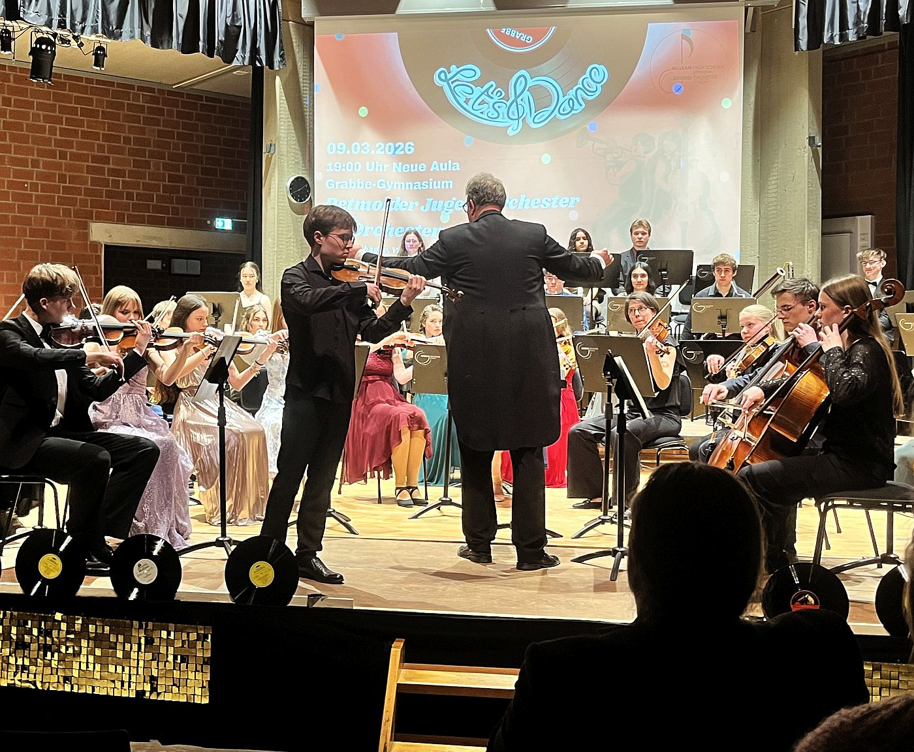
@Musik, @DJO, @SI-Orchester
@2026-03-10
@2025-12-31
Let's dance - Konzert des DJOs am Montag, 9.3. um 19.00 Uhr
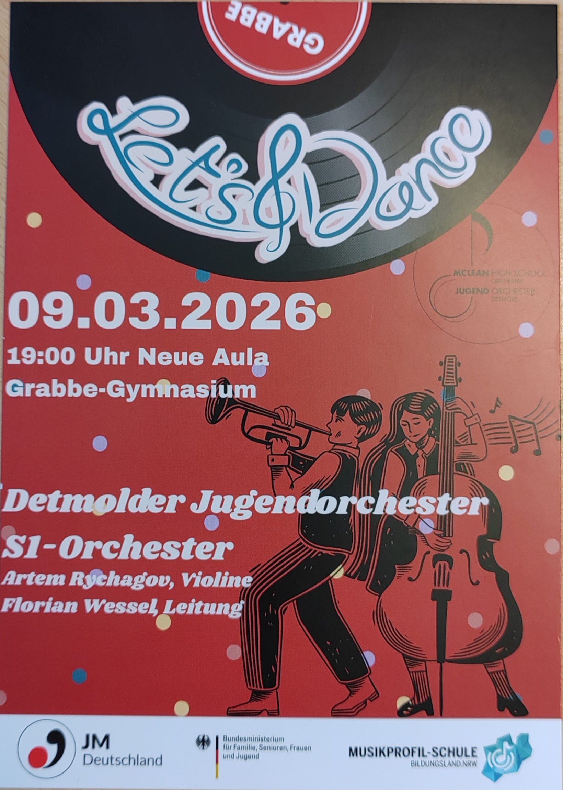
Hier den Inhalt per Copy und Paste oder direkt eintragen (und ggf. formatieren)!
Bitte verwende möglichst reinen Text, sonst gibt es ggf. Probleme mit der Darstellung auf mobilen Geräten!
Bilder aus Internet-Links (ohne Anmeldung) können direkt per Drag-n-Drop hier hin gezogen werden.
Für weitergehende Veränderungen Artikel nur mit Titel und ggf. Bild speichern und danach Link für den CMSimple-Editor anklicken oder eine SWAY mit allen Inhalten erstellen und s.o. als IFrame embedden.
@Musik
@2026-03-05
@2025-12-31
l „Dein Raum | Deine Gedanken“
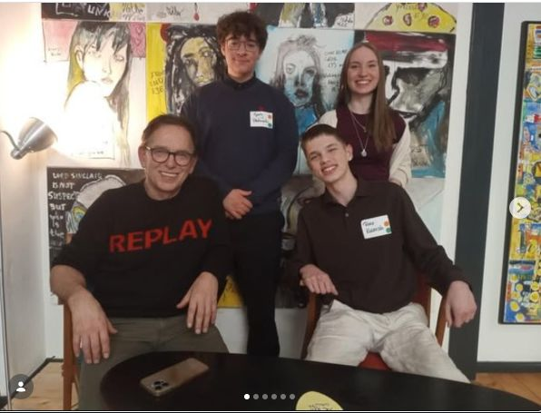
Am 20. Februar waren wir, Roux Kowarsch und Georg Vladimirskij, als Schülersprecher des Christian-Dietrich-Grabe-Gymnasiums in Detmold Teil des dritten Salon der Zukunft im RealLabor in der Galerie von Josef Köhler. Unter dem Titel „Dein Raum | Deine Gedanken“ ging es um die Frage, wie junge Menschen eigene Gedanken entwickeln können, jenseits von Noten, Erwartungen und äußerem Druck.
In einem offenen Gespräch haben wir über Selbstentfaltung im Schulalltag gesprochen, über Leistungsdruck, Motivation und darüber, wie Lernen aussehen müsste, damit es wirklich aus Interesse entsteht. Auch der Umgang mit Medien wurde kurz angerissen, besonders die Spannung zwischen kreativen Möglichkeiten und den praktischen Hürden im schulischen Kontext.
Der Abend war kein klassischer Vortrag, sondern ein gemeinsamer Denkraum mit anschließendem Austausch. Besonders gefreut hat uns die Vernetzung im zweiten Teil des Abends. Es konnten neue Kontakte geknüpft werden, unter anderem mit Josef Köhler und seinem Konzept des Salons der Zukunft sowie mit der SV des Leopoldinums. Wir freuen uns auf den weiteren Austausch zwischen unseren Schulen und darüber hinaus.
#schule #detmold #grabbegymnasium #jugend #entwicklung
@Schulentwicklung
@2026-02-27
@2025-12-31
Grabbe-Safer-Internet-Days 2026
@SID, @Nawi, @Mint
@2026-02-23
@2025-12-31
Orchesterprobenfahrt im Kloster Brunnen
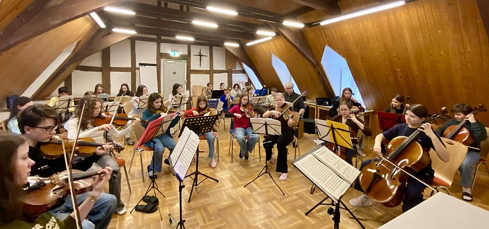
@Musik
@2026-02-20
@2025-12-31
KI als Helfer? – TH OWL und Grabbe-Gymnasium im Dialog über Künstliche Intelligenz Detmold
KI als Helfer? – TH OWL und Grabbe-Gymnasium im Dialog über Künstliche Intelligenz
Detmold. Wie kann Künstliche Intelligenz Lernen unterstützen – und wo liegen ihre Grenzen, mit dieser Frage leitet Dr. Claus Hilbing als Schulleiter in die Veranstaltung ein. Mit diesen Fragen beschäftigten sich Schülerinnen und Schüler des Grabbe-Gymnasiums gemeinsam mit Prof. Dr. rer. nat. Markus Lange-Hegermann vom Institut für industrielle Informationstechnik der Technischen Hochschule Ostwestfalen-Lippe (TH OWL). Der Professor für Mathematik und Datenwissenschaft war zu Gast am Grabbe-Gymnasium, um mit jungen Menschen offen über Chancen, Risiken und den sinnvollen Einsatz von KI zu diskutieren.
Prof. Lange-Hegermann setzt sich in seiner Lehre intensiv mit dem Einsatz von KI auseinander. Gemeinsam mit Studierenden entwickelt er individuelle Lernumgebungen, die Lernprozesse unterstützen sollen. Um diese Perspektive zu erweitern, suchte er bewusst den Dialog mit Schülerinnen und Schülern: Wie nutzen Jugendliche KI bereits heute? Welche Erwartungen haben sie an KI in Schule, Studium und Beruf?
Im Zentrum der Veranstaltung standen grundlegende Fragen: Was sind neuronale Netze? Wie funktioniert KI überhaupt? An anschaulichen Beispielen wurde deutlich, dass KI zwar leistungsfähig ist, aber nicht „denkt“ oder kreativ handelt, sondern auf der Auswertung großer Datenmengen basiert. Warum ChatGPT Texte oft besser kann als mathematische Rechnungen, was KI nicht leisten kann – und weshalb fehlerhafte Daten zu absurden Ergebnissen führen können – wurde kritisch reflektiert.
Ebenso offen wurden ethische und gesellschaftliche Aspekte thematisiert: Gesichtserkennung, automatisierte Datensammlungen, Datenschutz, Energie- und Wasserverbrauch von Rechenzentren sowie die Frage, wem KI eigentlich gehört. Auch die Risiken von Desinformation, Propaganda, manipulierten Bildern und Videos auf Social-Media-Plattformen wurden intensiv diskutiert. Ein weiteres Thema war die mögliche kulturelle Vereinheitlichung, da viele KI-Modelle weltweit agieren und zudem aus den USA oder China stammen.
Ein Schwerpunkt lag auf der Schule der Zukunft: Müssen Schülerinnen und Schüler noch alles lernen, wenn KI scheinbar alles kann? Die Jugendlichen sprachen sich klar dafür aus, KI nicht zu verbieten, sondern den kompetenten Umgang damit zu erlernen. In einer spontanen Abstimmung votierte die Mehrheit für eine häufige Freigabe von KI im Unterricht, niemand sprach sich für ein vollständiges Verbot aus.
Kontrovers diskutiert wurde der Einsatz von KI in Klausuren und Prüfungen. Während viele betonten, dass Prüfungen vor allem eigenes Wissen sichtbar machen sollten, wurde auch die Idee aufgegriffen, Prüfungsformate weiterzuentwickeln: komplexere Aufgaben, neue Fragestellungen und der reflektierte Einsatz von KI als Teil der Leistung.
Gleichzeitig stellte sich die Frage nach Bildungsgerechtigkeit: Wenn leistungsfähige KI Geld kostet – entstehen dann neue Ungleichheiten? Die Schüler:innen sahen eher die Vorteile, weil es für alle zugänglich ist – bemerkten aber eben auch an, dass die teuren Bezahlversionen mehr leisten könnten.
Die Veranstaltung machte deutlich: KI kann ein Helfer sein – wenn junge Menschen lernen, sie kritisch, verantwortungsvoll und kompetent zu nutzen. Die Kooperation zwischen der TH OWL und dem Grabbe-Gymnasium soll diesen Dialog fortsetzen und Raum für weitere gemeinsame Projekte schaffen.
@2026-02-10
@2025-12-31
Grabbe wird u15-Schachkreismeister
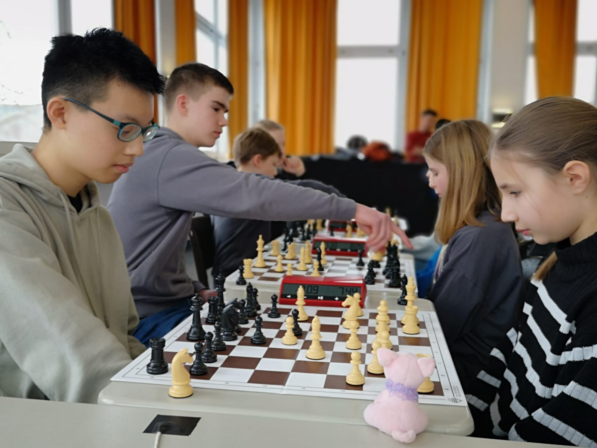
Mit einem „Viel Spaß!“ wurde jede der sieben Runden bei den Lippischen Schulschachmeisterschaften im Detmolder Grabbe-Gymnasium frei gegeben. Was folgte war absolute Ruhe im Spielsaal, man vernahm lediglich noch das Hundertfache drücken der Schachuhren, standen doch jedem Spieler lediglich 10 Minuten für die ganze Partie zur Verfügung. Ca. 300 junge Schachspieler/innen in 59 Teams waren am Start, 40 aus lippische Weiterführenden Schulen und 19 Grundschulen. Das ist nicht nur für den Kreis Lippe ein neuer Rekord, sondern auch eine fordere Topplatzierung in NRW. Zählt man alle Altersgruppen zusammen, wurden dabei exakt 852 Schachpartien gespielt und „das alles sportlich fair und ohne einen einzigen Streitfall. Ihr könnt alle sehr stolz auf euch sein!“, freut sich die Turnierleitung an die Schüler/innen gewandt bei der Siegerehrung.
Bei den Weiterführenden Schulen stach sportlich in
diesem Jahr das von Michael Meierhenrich betreute Engelbert Kämpfer Gymnasium
hervor. Mit der u20-Mädchen , u18-Jungen/Mix und u15-Jungen/Mix gewannen die
Lemgoer gleich drei der vier Wettkampfklassen. In der u15-Jungen/Mix gab es
einen ungefährdeten Start-Ziel der spielstarken Heimmannschaft des von Detlef
Hübner betreuten Grabbe-Gymnasium Detmold.
Bei den Grundschulen dominierte sportlich erneut die
Detmolder Kusselbergschule. Trainer Dr. Daniel Hawes und seine zahlreichen
Schützlinge konnten sich über Platz 1. bei den Mädchen und bei den Jungen/Mix,
sowie weitere tolle Platzierungen freuen! Für alle bisher genannten
Schulen bedeutet der Sieg die Qualifikation zu den NRW-Meisterschaften am
27.03.2026 in Hamm.
Eine hervorragende fordere Platzierungen mit mindestens
einem ihrer Teams, erreichten neben den bereits genannten auch die folgenden
Schulen: Humboldt Gymnasium Lage, Karla-Raveh-Gesamtschule Lemgo,
August-Hermann-Francke Gesamtschule Detmold, Niklas-Luhmann-Gym. Oerlinghausen,
Private Sekundarschule Schloss Varenholz, Stadtgymnasium Detmold,
Sekundarschule Horn, Gesamtschule Aspe, Sekundarschule der Stadt Lage,
Gymnasium Horn-Bad Meinberg, Weerth-Schule Detmold, GS Heiden,
GS Heiligenkirchen, GS Horn, GS am Schloss Lemgo,
GS Lemgo-West (Lieme), GS Schlangen und die
GS am Silvaticum Horn-Bad Meinberg.
Als erneut perfekter Austragungsort erwies sich das
Grabbe-Gymnasium Detmold, welche ja auch völlig zu Recht die Auszeichnung
Deutsche Schachschule trägt. Am Abend vor dem Turnier sorgten mehr als 20 junge
Helfer, angeführt vom Schulleiter Dr. Hilbing der persönlich Tische und Stühle
transportierte und beim Aufbau der unendlich vielen Bretter, Uhren und Figuren
half, für perfekte Voraussetzungen. Ehrenamtlich traumhaft organisiert und
durchgängig geleitet wurde die Großveranstaltung von Arnold Essing, unterstützt
bei der Auslosung wurde er dabei von Uwe Sprute, Rene Wittke und Rico Wittke,
als Schiedsrichter Detlef Hübner, sowie Mitarbeiter/innen des Kreises Lippe.
Nicht nur das Schulschach blüht aktuell in Lippe auf, so
bietet der Kreis Lippe erneut ein spannendes Schach-Angebot für Hochbegabte
Grundschulkinder, sowie die VHS Detmold-Lemgo einen neuartigen
Inklusionsschachkurs für Schüler an. Beide Kurse sind in Detmold und starten im
April. Flaggschiff im Bereich Kinder- und Jugendschach ist seit nunmehr fast
zwei Jahren das Detmolder Projekt „Schach-Magie“, bei dem wöchentlich am
Freitag mehr als 50 Kinder in zwei Gruppen um 16 Uhr und 17 Uhr im „Lipper für
Lipper“ Cafe HerzStück (Krummenstr.44 in Detmold) kostenlos für je eine
Stunden Schach spielen und trainieren.
@Sport @Schach @Meister
@2026-02-02
@2025-12-31
Allen Schülerinnen und Schülern, die bei dem Wettbewerb Jugend Musiziert mitgemacht haben, gratulieren wir zu den herausragenden Leistungen:
Luise Türich 9ms (Trompete) 1. Platz
Elisabeth Grote (Klavier) 1. Platz
Klarinettenduo: Daguo Liu und Arslan Nurullin (5m) 1. Platz
Klarinettenensemble: Freidrich Addicks (9gn), Jui Mayr, Maya-Lotte Kluwe, Daguo Liu, Rosalina Salma Luisa Hübenthal, Freidrich Schlieker (EF), Illj Zacharov (Q1) , Arjen Soutodeh, Emilia Blume, Louisa Pohl, Clemens Vothknecht, Annabelle Reineke, Arslan Nurullin (5m) 1. Platz
Klarinettetrio: Jiu Mayr Ilij Zaharov (Q1), Maya-Lotte Kluwe 1. Platz
Holzblasensemble: Charles Baykov, Balthasar Baykov, Inga Natalia Eggeling (EF), Lea Eggeling (EF), Julius Nicolas Bach (6ms) 1. Platz
Streichtrio: Mathilda Pohl, Mathilda Philippi (8m), Sophia Schübeler 2. Platz
@Musik
@2026-02-02
@2025-12-31

@2024-01-28
@2025-12-31
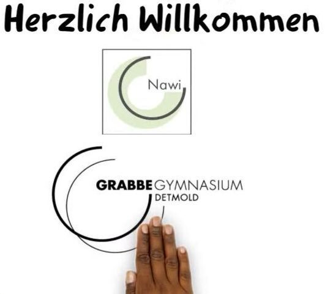
@Nawi
@2026-01-19
@2025-12-31
Anerkennung für die Fairtrade-AG
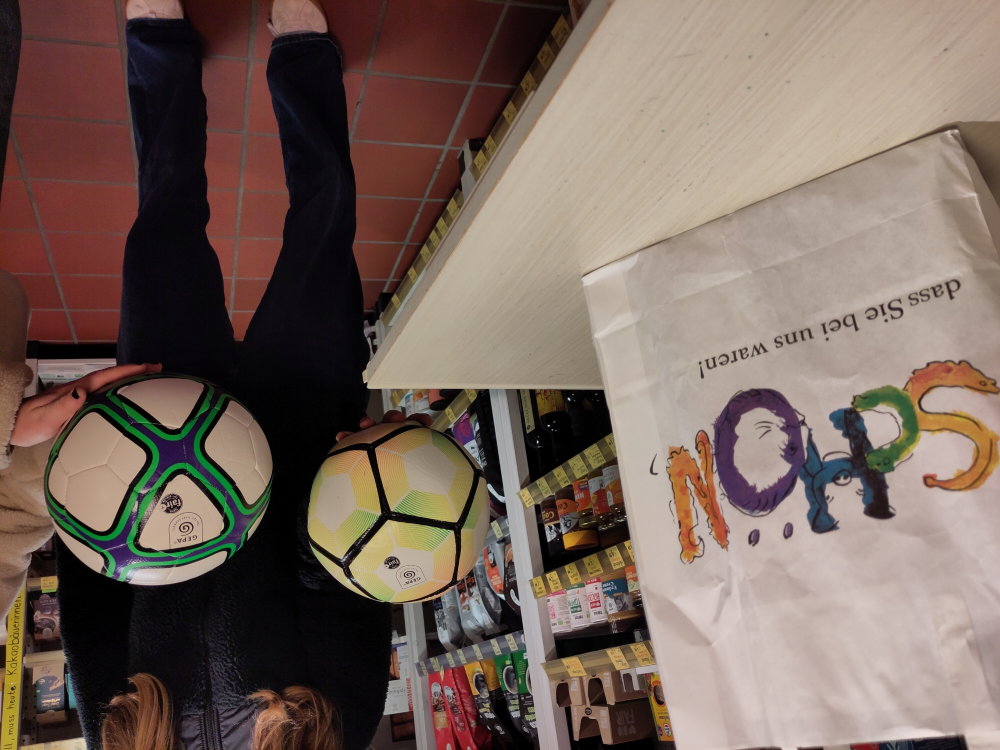
Am 2.12.2025 besuchten wir, die Fairtrade-AG, den „Alavanyo – Eine-Welt-Laden“. Dort wurde uns ein Weihnachtsgeschenk von der „Fairtrade-Stadt Detmold“ überreicht. Dieses bestand neben anderen Dingen aus zwei fair-hergestellten Fußbällen, die wir anschließend an unsere Grabbe-Sportfachschaft weitergegeben haben. Als Fairtrade-AG engagieren wir uns für eine nachhaltige Schule. Unter anderem haben wir uns dafür eingesetzt, dass unser Schulmerch Fairtrade-zertifiziert ist und dass im Selbstlernzentrum (SLZ) ein Verschenkeregal für Secondhand-Sachen steht. Ihr seid herzlich eingeladen, ebenfalls bei der Fairtrade-AG vorbeizuschauen. Wir treffen uns an jedem ersten Montag im Monat um 13:15 Uhr im Raum N 204.
Timna Waltking, Haylie Williams, 9k
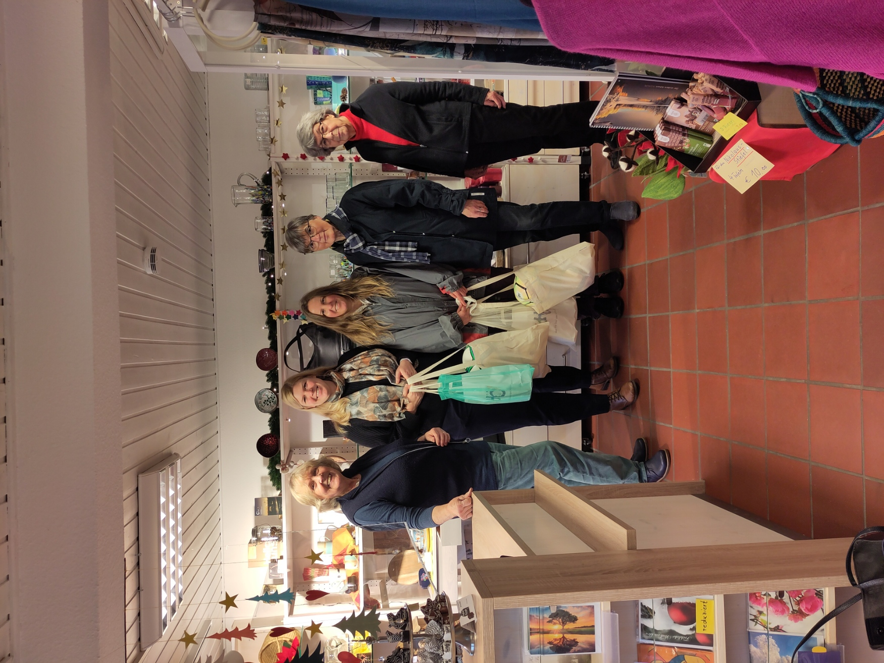
Bild 1: ein Dankeschön an die Schülerinnen der Fairtrade AG: eine Überraschungstüte sowie zwei Fußbälle für die Grabbe-Sportfachschaft, die bei fairen Arbeitsbedingungen für die Näherinnen hergestellt wurden
Bild 2: Frau Thurner (Eine-Welt-Laden), Frau Lazar (Dietrich-Bonhoeffer-Berufskolleg), Frau Hauenschild (Grabbe-Gymnasium), Frau Niedernolte (Fairtrade-Stadt Detmold) und Frau Goeken (Eine-Welt-Laden)
@fairtrade
@2026-01-06
@2025-12-31
Rottpokal am Grabbe-Gymnasium
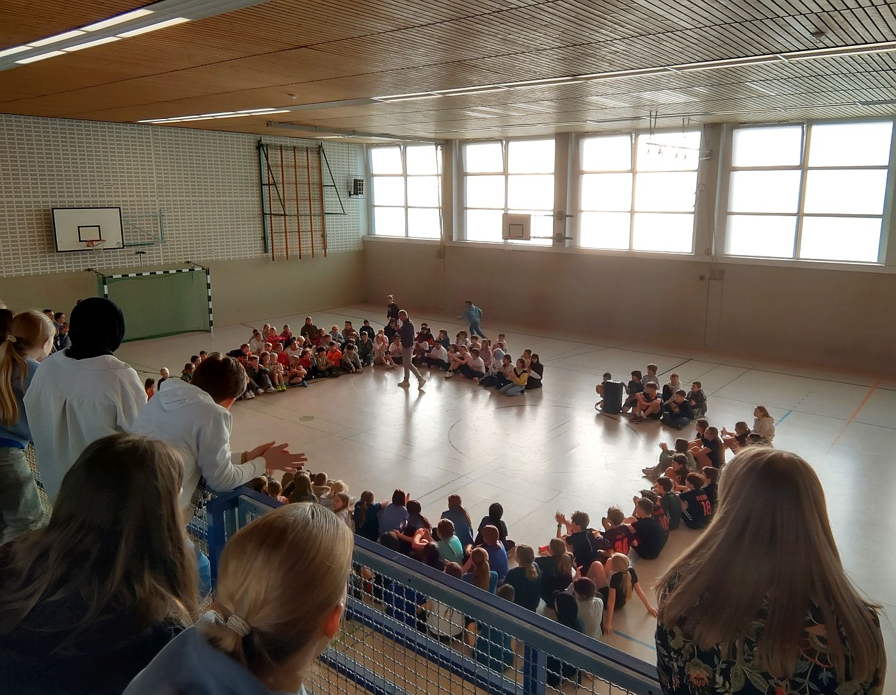
@Sport, @Rott
@2025-12-20
@2025-12-31
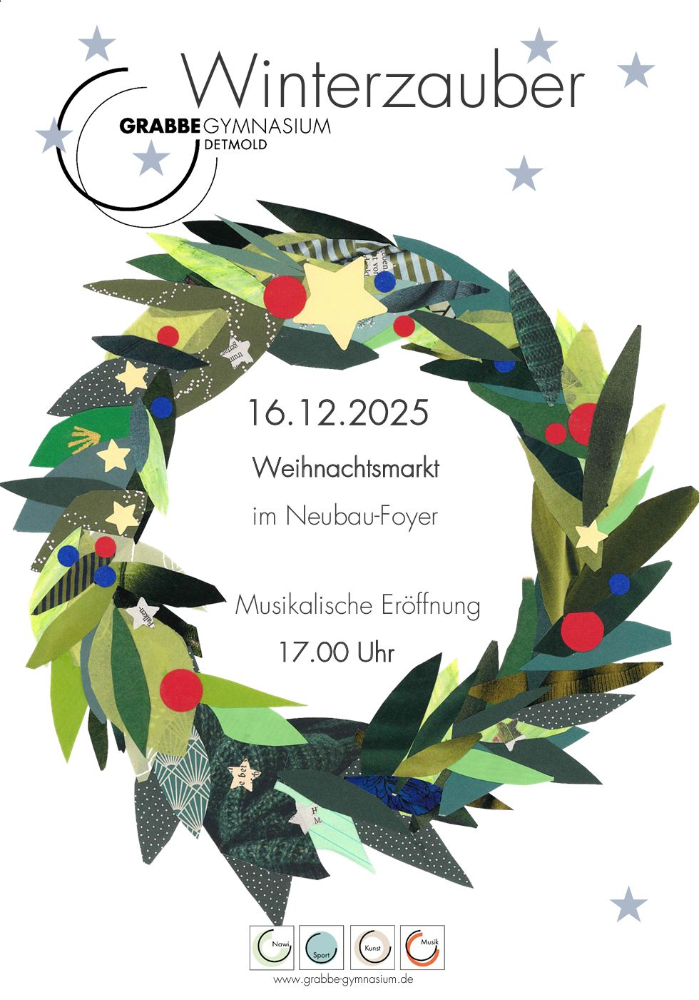
@Musik, @Kunst
@2025-12-15
@2025-12-31
Walzer und Weihnachtszauber
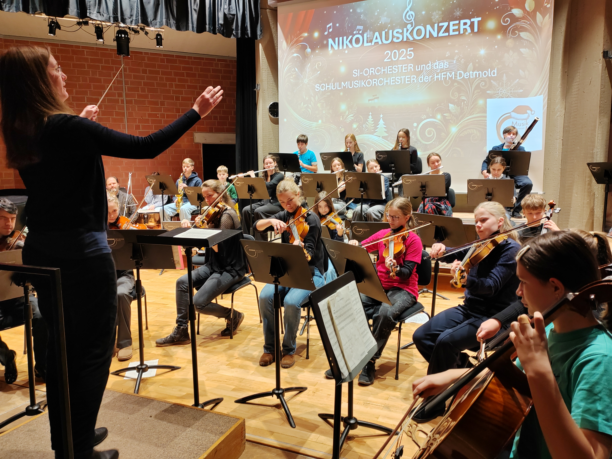
Nikolauskonzert im Grabbe-Gymnasiums
Detmold. Ein ungewöhnlich stimmungsvoller Vormittag erwartete am Freitag, den 5. Dezember, rund 500 Grundschulkinder aus ganz Detmold, die zum jährlichen Nikolauskonzert in die Aula des Grabbe-Gymnasiums geströmt waren. Das SI-Orchester und das Schulmusikorchester der Hochschule für Musik musizierten gemeinsam „Pult an Pult“ – ein besonderes Projekt, bei dem Studierende und junge Nachwuchsmusikerinnen und -musiker Seite an Seite auftraten. Die künstlerische Gesamtleitung lag in den Händen von Prof. David Marlow und Florian Wessel, der zugleich charmant und kindgerecht durch das abwechslungsreiche Programm führte. Gleich zu Beginn sorgte die spritzige „Tritsch-Tratsch-Polka“ von Johann Strauß für gespannte Aufmerksamkeit im Publikum. Mit sichtlicher Spielfreude setzte das Orchester das schnelle Tempo und die humorvollen Effekte des Stückes um. Nach einer gemeinsamen Regensimulation mit dem Publikum – mit Händereiben, Klatschen und Schnipsen verwandelten die jungen Zuhörerinnen und Zuhörer die Aula in ein akustisches Naturschauspiel – waren alle bestens auf das Konzert eingestimmt. Passend zur Jahreszeit erklangen anschließend die englischsprachigen Weihnachtslieder „Joy to the World“ und „Ding Dong Merrily on High“, dargeboten vom groß besetzten Orchester unter der souveränen Leitung der Studierenden. Am Beispiel des Liedes „Away in a Manger“ erläuterte Wessel die klanglichen Unterschiede der drei großen Instrumentenfamilien – Holzbläser, Blechbläser und Streicher. Anschließend wurden einzelne Instrumente kurzweilig vorgestellt. „Der Kontrabass klingt ja unglaublich tief“, staunte Berat aus der zweiten Klasse. Auch die „Rutschfahrt“ der Bassposaune sorgte für begeisterte Reaktionen. Ein weiteres musikalisches Glanzlicht setzte der weltberühmte Walzer „An der schönen blauen Donau“, bei dem besonders die Streichergruppen des gemeinsamen Orchesters beeindruckten. Mit schwingender Leichtigkeit und fließendem Tempo ließen sie die aneinandergereihten Walzerbilder erklingen. Die Dirigentin führte das Ensemble präzise und zugleich mit großer Eleganz durch das Werk.Den schwungvollen Abschluss bildete der Radetzky-Marsch, der auf außergewöhnliche Weise dirigiert wurde: Mehrere Grundschulkinder durften nacheinander ans Dirigentenpult treten und mit großem Eifer den Takt vorgeben. Das Publikum klatschte begeistert im Rhythmus und feuerte die kleinen Dirigentinnen und Dirigenten an – ein Moment, der die Aula zum Beben brachte. Mit viel Musik, Bewegung und strahlenden Gesichtern endete ein Vormittag, der eindrucksvoll zeigte, wie lebendig und mitreißend klassische Musik sein kann, wenn angehende Profis und junge Musikerinnen und Musiker gemeinsam auf der Bühne stehen. Für viele der kleinen Besucherinnen und Besucher dürfte es ein unvergessliches Erlebnis gewesen sein.
@Musik
@2025-12-08
@2025-12-31
24 gute Taten
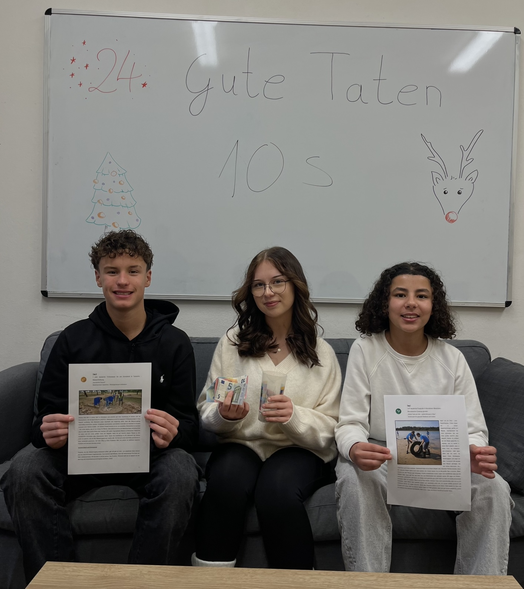
Adventskalender mal anders - mit einem Euro pro Türchen etwas wirklich Gutes tun
Statt 24 Mal Schokolade oder Geschenke hinter den Adventskalendertürchen zu haben, denkt die Organisation 24 gute Taten anders herum. Geben statt Nehmen - nach diesem Motto gibt es jeden Tag eine gute Tat, die von einer Hilfsorganisation durchgeführt wird und die wir mit dem Kauf des Adventskalenders unterstützen.
Klingt nach einer super Ergänzung zu den Unterrichtsthemen der 10. Klasse in Englisch (Never enough? - The impact of consumerism on our world) und Deutsch (Die Zukunft als Gefahr - So könnten wir morgen leben)! Das fanden auch die Schüler:innen der Klasse 10s und spendeten spontan über 30 Euro; aufgerundet konnten wir dann die unterschiedlichen Aktionen, die in diesem Jahr von über 22.000 Menschen unterstützt wird, mit einer täglichen Spende von 2 Euro bis Weihnachten mit finanzieren.
Egal ob sauberes Trinkwasser für ein Schulkind in Tansania (Wasserstiftung), ein Quadratmeter sauberes Flussufer in Deutschland (Blockblock CleanUps GmbH), 48kg Lebensmittel für armutsbetroffene Familien in Berlin retten (TAFEL e.V.), eine Koralle in Indonesien pflanzen (SeaChange Indonesia) oder 25 Minuten Einsatz gegen Wilderei an der Elfenbeinküste (ProWildlife e.V.) - auf ganz unterschiedliche Weise tragen wir somit dazu bei, dass die Welt ein bißchen gerechter und vielleicht ein bißchen besser wird. Und als kleines Extra gibt es für Schulklassen und Lehrkräfte fertiges Material mit weiterführenden Informationen dazu, was in unterschiedlichen Unterrichtsfächern eingesetzt werden kann.
Die spontaneTeilnahme an dieser Adventskalenderaktion zeigt, dass manches Mal doch etwas von dem, worüber in der Schule gesprochen wird, für das „richtige Leben“ eine Bedeutung hat - toll, dass die 10s so engagiert und bereitwillig bei der Aktion eingestiegen ist. Jetzt können wir jeden Tag ein weiteres „Gute-Taten-Türchen“ öffnen und gespannt schauen, was sich dahinter verbirgt - vielleicht gibt es ja noch weitere Klassen, die mitmachen wollen?
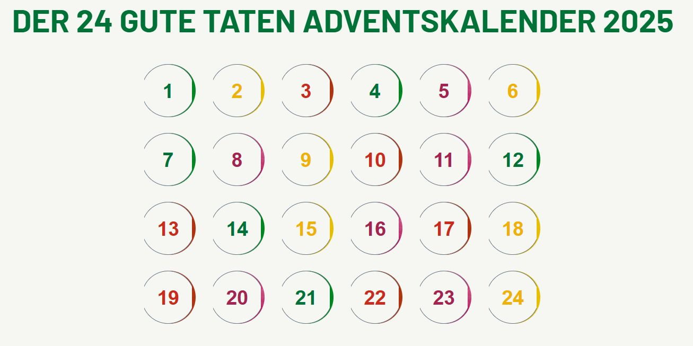
@2025-12-02
@2025-12-31
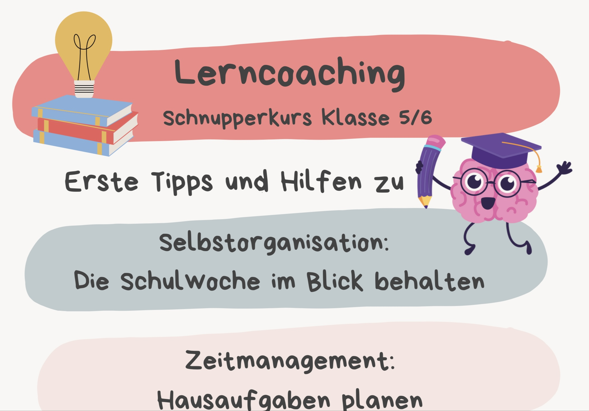
@Lerncoach
@2025-11-28
@2025-12-31
Internationale Lichtkunst in Unna
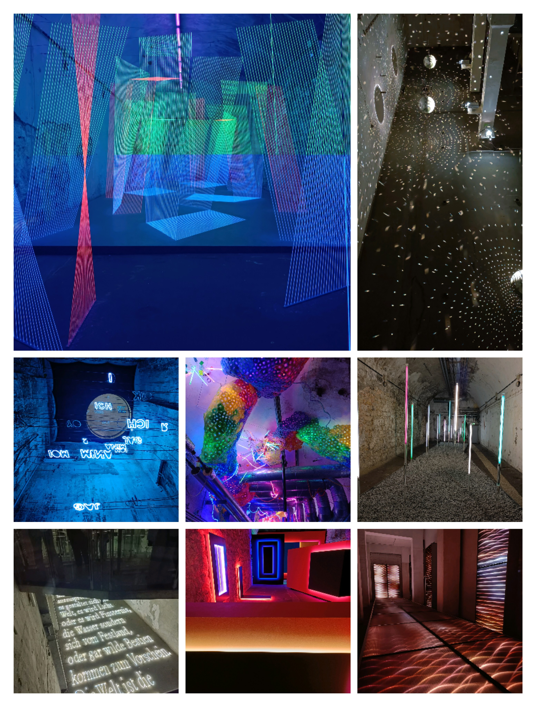
Besuch des Zentrums für Internationale Lichtkunst in Unna - Klasse 10k auf Entdeckungstour
Am Freitag, den 21. November 2025, machten sich Frau Hecker und Frau Emminghaus gemeinsam mit der Klasse 10k auf den Weg nach Unna, um das Zentrum für Internationale Lichtkunst (ZfIL) zu besuchen.
Dort erwartete uns eine persönliche und fachkundige Führung durch Meret Reimann, die uns knapp zwei Stunden lang in die faszinierende Welt der Lichtkunst einführte. Wir erfuhren Spannendes über die einzelnen Installationen, bewegten uns durch unterschiedliche Räume und konnten Licht aus vielen Perspektiven erleben – teilweise begleitet von Musik und interaktiven Elementen, die den Besuch besonders eindrucksvoll machten.
Im Anschluss folgte ein kleiner Workshop: Jede Schülerin durfte ein Leuchtelement in die Hand nehmen, während Meret Reimann mithilfe einer Kamera mit Langzeitbelichtung kreative Lichtaufnahmen von uns machte. Die entstandenen Fotos haben wir anschließend zugeschickt bekommen und sie zur Verschönerung in unseren Klassenraum gehängt.
Der Ausflug hat den Schülerinnen wie auch den Lehrerinnen sehr gut gefallen. Für viele war es der erste Kontakt mit dieser besonderen Form der Kunst, die durch die Verbindung von Bewegung, Licht und Klang eindrucksvoll erlebbar wurde.
Mit Blick auf die kulturelle Bildung am Grabbe und zur Stärkung unseres Kunstprofils können wir einen Besuch im Zentrum für Internationale Lichtkunst nur wärmstens empfehlen.
@Kunst
@2025-11-28
@2025-12-31
Claus Hilbing ist der neue Schulleiter
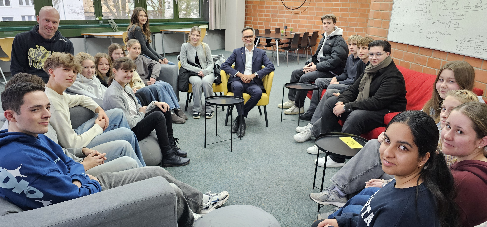
Auch wenn mich viele von Ihnen bereits kennen, möchte ich mich heute offiziell als neuer Schulleiter des Christian-Dietrich-Grabbe-Gymnasiums vorstellen. Am Donnerstag, dem 27.11.2025, wurde ich von unserem Dezernenten Herrn Hypius zum Schulleiter ernannt. Damit ist der letzte und entscheidende Schritt von 26 getan – nun ist es offiziell.
Ich bin in Vreden im Westmünsterland geboren, habe dort mein Abitur gemacht und anschließend in Münster Mathematik, Chemie und Erdkunde für das Lehramt studiert sowie im Fach Chemiedidaktik promoviert. Nach meinem Referendariat in Borken sind meine Frau und ich nach Detmold gezogen, da ich eine Stelle am Grabbe-Gymnasium angenommen habe. Auch meine beiden Kinder waren Schüler:innen am Grabbe-Gymnasium und haben dort ihr Abitur abgelegt. Von 2018 bis 2021 war ich stellvertretender Schulleiter der Deutschen Schule in Mailand. Das war eine wunderbare, aber auch sehr intensive Zeit, denn wir waren nach Schulen in China die ersten, die für ein ganzes Halbjahr geschlossen wurden.
Zurück in Detmold durfte ich ans Grabbe-Gymnasium zurückkehren. Zunächst war ich dort als Schulentwickler tätig, ab 2023 als kommissarischer stellvertretender Schulleiter und ab 2025 schließlich als Schulleiter. Ich darf diese wunderbare Schule mitgestalten. Das Grabbe-Gymnasium ist ein ganz besonderes Gymnasium. Es hat zwar Ecken und Kanten, aber dank der Menschen, die Musik, Kunst, Sport, Naturwissenschaften und vieles mehr mögen und lieben, hat es eine besondere Atmosphäre: herzlich, fürsorglich, kreativ ... Diesen Spirit gilt es in Zeiten von zentralen Prüfungen und immer mehr Lernstandserhebungen zu erhalten und weiterzuentwickeln. Dazu möchte ich meinen Teil leisten.
Sei es bei der Gestaltung des Gebäudes als Lern- und Lebensort mit ruhigen, kreativen Ecken, produktiven Co-Working-Spaces und angenehmen Klassenräumen oder bei der Gestaltung des schulischen Alltags, in den wir immer mehr kreative und lebensnahe Elemente einbauen.
Dazu gehört sicherlich das besondere Profil mit den Profilprojekten bis hin zum neuen fünften Abiturfach, das am Grabbe gerade Türen für unsere Ideen öffnet. Zusammen mit der Steuergruppe bereiten wir diese Ideen vor und beteiligen Eltern, Schüler:innen und Lehrer:innen an diesem Prozess, um die Zukunft des Grabbe gemeinsam zu gestalten.
Dabei ist es wichtig, Bewährtes zu erhalten und Gelungenes zu stärken – und auch mal etwas wegzulassen. Der schulische Alltag ist für uns Kolleginnen und Kollegen intensiver geworden. Auch hier gilt es, die Schultern von Dingen zu entlasten, die nicht mehr zielführend sind, um eine Balance im Alltag zu schaffen und Kraft für Neues zu haben.
Dabei stehen Ihre Kinder im Mittelpunkt unseres Handelns. Für sie sind wir da und wollen ihnen eine gute Schulzeit und die beste Ausbildung für ihren weiteren Lebensweg geben.
Ich freue mich auf diese inspirierende und durchaus herausfordernde Aufgabe und bin dankbar für die vielen Mitgestalter:innen um mich herum.
Wir sehen uns sicherlich beim Winterzauber am 16.12.2025 eben in besonderer Atmosphäre.
Ihr Dr. Claus Hilbing
@2025-11-28
@2025-12-31
Kreativität macht Unterricht - spielerisch fit in Latein (Latein Klasse 8)
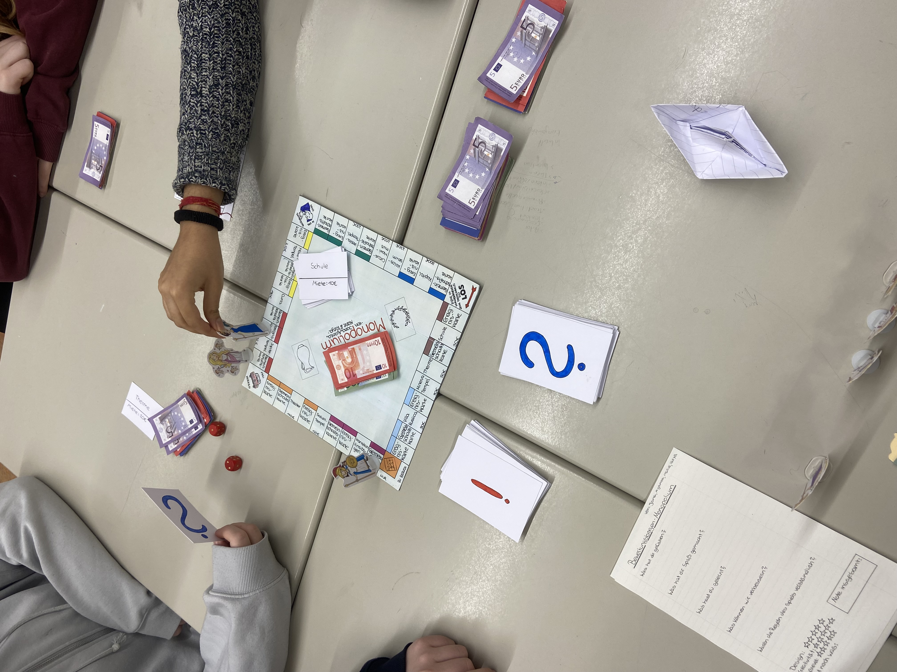
Ganz normaler Unterricht: Aufgaben über Aufgaben und immer wieder langweilige Themen. Eine Auszeit aus dieser Dauerschleife würden viele wahrscheinlich gut vertragen. Die Lehrerinnen und Lehrer merken das bestimmt auch. Im Latein-Forderkurs werden Schülerinnen und Schüler, wie der Name schon sagt, gefordert. Diese neue Schulstunde wurde eingeführt zur Differenzierung.
@Latein @individuelleFörderung @Kreativität @Projektunterricht
@2025-11-27
@2026-02-07
WK IV & WK III Mädchen sind Kreismeister, WK II mit dem 2. Platz
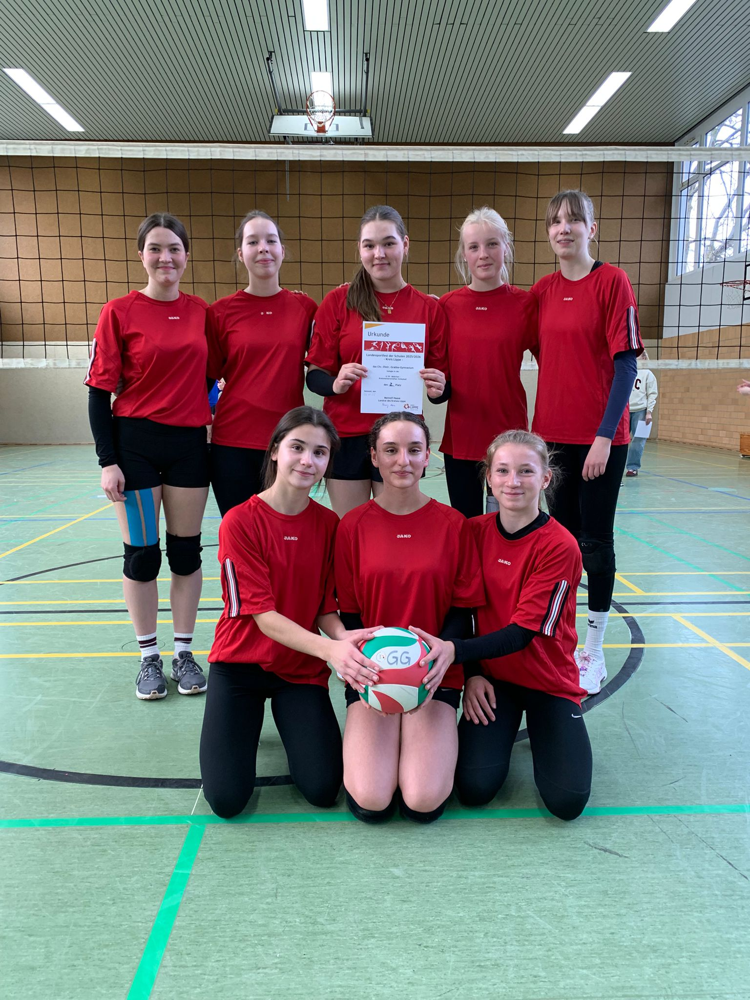
Die Schülerinnen der Wettkampfklasse 2 und 3 traten am Montag den 24.11.2025 zu den Volleyball Kreismeisterschaften im Stadtgymnasium Detmold an. Um beide Spielklassen realisieren zu können, wurde die WK 2 mit jüngeren Spielerinnen ergänzt, die auch noch in der WK 2 hätten antreten dürfen.
Unter der Leitung von Klara Hermann, die aufgrund der parallelen Spiele der beiden WKs dankenswerterweise die Spielertrainerin der WK 2 übernommen hatte, wurde trotz einer klaren Leistungssteigerung im 2. Satz das Spiel gegen das Stadtgymnasium knapp verloren. Nachdem diese auch gegen das MWG aus Lemgo gewonnen hatten, ging es gegen diese dann noch um den 2. Platz. In einem konzentriertem Spiel, in dem auch alle Spielerinnen zum Einsatz kamen, wurde mit einem 2:0 Sieg der 2. Platz belegt. Die 4. gemeldete Mannschaft, die AHF Gesamtschule Detmold, ist leider nicht zum Turnier angetreten.
In der WK 3 trafen die Schülerinnen des Grabbe-Gymnasiums auf die Mannschaften der AHF Hauptschule Detmold, der AHF Gesamtschule Schlangen und des Stadtgymnasiums. Nach einem technisch sehr guten Spiel gegen die AFH Hauptschule konnte das Spiel vor Allem durch die sehr effektiven Aufschläge 2:0 gewonnen werden. Nach einem überraschend deutlichen ersten Satz gegen die GS Schlangen, in der die Grabbianerinnen die Unsicherheiten in der gegnerischen Aufstellung sehr gut ausnutzten, wurde der 2. Satz zu einem spannenden und wohl besten Satz des Turniers. Nachdem man sich zu Beginn eine kleine Führung erarbeiten konnte, rannte man ab der Hälfte des Satzes immer einem Rückstand hinterher. Beim Spielstand von 22:24 wurden dann zweit Satzbälle abgewehrt und man konnte sogar mit 25:24 in Führung gehen und hatte den Matchball bereits auf der Hand, den die GS Schlangen aber ebenfalls abwehren konnte ehe man sich dann mit 27:25 durchsetzen konnte. Im letzten Spiel konnte dann nochmal durchgewechselt werden und mit einem 2:1 über das Stadtgymnasium die Kreismeisterschaft gefeiert werden.
Ebenfalls als Kreismeister ist bereits die WK 4 der Mädchen qualifiziert, die ohne Konkurrenz eine Runde weiter kamen. Die WK 4 der Jungen treten mit einer sehr jungen Mannschaft am 11.12. an, um erste Erfahrungen zu sammeln. Eine Woche zuvor kommt es in der WK 1 der Jungen zum entscheidenden Spiel gegen die Berufsschule Detmold.
Begleitet und organisiert wurden alle Wettkampfteams von Herrn Gessner, der sich hauptverantwortlich um alle wettkampfspezifischen Dinge im Bereich Volleyball am Grabbe - Gymnasium kümmert.
@Sport @Profil @Volleyball @WK IV @WK III @WK II
@2025-11-26
@2025-12-31
Erinnerungskultur am Grabbe-Gymnasium - Gedenken zum 9. November 2025
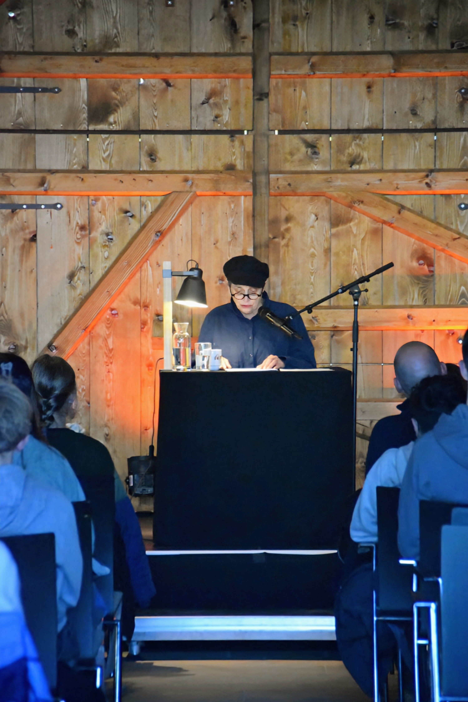
In der Nacht vom 9. auf den 10. November 1938 ereignete sich die von der NS-Führung zentral organisierte Reichspogromnacht. Im gesamten Reich kam es zu gewalttätigen Ausschreitungen gegen Jüdinnen und Juden, brutalen Misshandlungen, Demütigungen und auch Ermordungen. Jüdische Wohnhäuser, Geschäfte und andere jüdische Einrichtungen wurden geplündert und zerstört, Synagogen in Brand gesetzt. 30 000 jüdische Männer wurden verhaftet und in Konzentrationslager verschleppt.
Schüler*innen des Grabbe-Gymnasiums erinnerten in diesem Jahr auf unterschiedliche Weise an die Ereignisse und Folgen des 9. November 1938.
Am 5. November las die Schauspielerin Katharina Thalbach aus dem Roman „Der Junge im gestreiften Pyjama“ von John Boyne im „Im Weißen Ross“ im LWL-Freilichtmuseum Detmold. 140 Schüler*innen, darunter die Klassen 9GN und 9K des Grabbe-Gymnasiums, lauschten gebannt den Szenen aus dem Roman, der die fiktive Geschichte des neunjährigen Brunos erzählt, der als Sohn eines Kommandanten mit seiner Familie in die unmittelbare Nähe eines Konzentrationslagers in Polen zieht. Am Zaun begegnet er dem gleichaltrigen Shmuel, der im Lager gefangen ist, und freundet sich voller Unschuld mit dem jüdischen Jungen im gestreiften Pyjama an. Durch die Figur des neunjährigen Brunos wird eine beobachtende, kindlich unschuldig-kritische Perspektive in der literarischen Auseinandersetzung mit dem Holocaust eröffnet.
Mit beeindruckender Stimmgewalt liest Katharina Thalbach die eindringlichen Szenen der Begegnungen von Bruno und Shmuel vor, die rührend, beängstigend und bedrückend zugleich sind. Die sanfte kindlich-niedliche, aber auch traurig-zögerliche Stimme, die sie den beiden Kindern verleiht, wechselt plötzlich zu dem tiefen, lauten, erschreckenden Gebrüll des Kommandanten, das alle Zuhörenden zusammenzucken und die Bedrückung und Bedrängnis der Szene selbst spüren lässt.
In anschließenden Reflexionsgesprächen mit unseren beiden Klassen wird deutlich, welch aufwühlende Wirkung die Lesung hatte. Die Schüler*innen zeigen hohes Interesse an der Vertiefung der Thematik, gleichzeitig erkennen sie historische Ungenauigkeiten und die kindliche Naivität von Bruno in der fiktiven Erzählung, schätzen dennoch den Wert der einfühlsamen Annäherung als Zugang zur emotional stark belastenden Thematik.
Im Anschluss der Lesung reinigten die Schüler*innen der Klasse 9K die Stolperschwelle in der Gartenstraße 6 und die zwei Stolpersteine auf unserem Schulhof und erfuhren die Lebens- und Leidensgeschichten der Menschen, an die diese Steine erinnern sollen.
„Stolpersteine“ ist ein Gedenk- und Erinnerungsprojekt von Gunther Demnig, in dem durch die Verlegung von kleinen Gedenktafeln aus Messing - in der Regel vor dem letzten selbstgewählten Wohnhaus – an die während der NS-Zeit verfolgten, vertriebenen und ermordeten Menschen und ihr Schicksal erinnert werden soll. In Detmold übernehmen Schulen die Patenschaften für die Pflege der Stolpersteine – unsere Schule ist verantwortlich für die Sichtbarkeit der Lebensgeschichten von Margarete und Anneliese Lükermann, Irmgard Heiss und aller Menschen, die in der Gartenstraße 6 gelebt, gewirkt und gelitten haben.
Gemeinsam mit der Stadt Detmold, der Gesellschaft für Christlich-Jüdische Zusammenarbeit in Lippe e.V. und der Evangelischen und Katholischen Jugend Lippe gestalteten Schüler*innen des Grabbe-Gymnasiums die zentrale Gedenkveranstaltung am 9. November in Detmold.
Viele Schüler*innen des Grabbe-Gymnasiums kamen am Sonntagabend zum Platz der Neuen Synagoge in der Lortzingstraße, wo die Synagoge in Detmold stand, die in der Nacht vom 9. auf den 10. November niedergebrannt wurde. Sie hörten die einleitenden Worte des Bürgermeisters Frank Hilkers, der insbesondere auf die Verpflichtung der Gegenwart hinwies. Nachdem die Regierungspräsidentin Anna Katharina Bölling ihre Gedanken zum 9. November teilte, insbesondere die Bedeutung der Forderung „Nie wieder ist jetzt“ erläuterte, gab es einen interreligiösen Impuls von Mitgliedern der Evangelischen und Katholischen Jugend Lippe.
Ein stiller Gang führte in die Exterstraße, zur Gedenkstätte für die Opfer der nationalsozialistischen Gewaltherrschaft, in der an jüdische Verfolgte aus Detmold erinnert wurde.
Im Anschluss daran erfolgte im Rathaus im gut gefüllten Großen Sitzungssaal ein Gedenkkonzert mit Lesung der Israel-AG und der Grabbe-Band.
Im Wechsel mit musikalischen Beiträgen wurden Texte von jüdischen Autor*innen gelesen, die osteuropäische Wurzeln haben. Seit den 1880er Jahren erlebte die jüdische Bevölkerung in Ost-, Ostmittel- und Südosteuropa Pogrome, Verfolgung und Vertreibungen, woraufhin viele Jüdinnen und Juden nach Westeuropa, die USA und Palästina flohen. In Deutschland entstand eine Debatte um die „Ostjudenfrage“, während Jüdinnen und Juden aus Osteuropa stigmatisiert und bedroht wurden. Ab 1933 wurde Antisemitismus zur Staatsdoktrin, wodurch sich die Situation für Jüdinnen und Juden aus Osteuropa weiter verschärfte. 1938 wurden 17.000 als „polnischstämmig“ bezeichnete Juden nach Polen abgeschoben (sog. Polenaktion), wodurch sie im deutsch-polnischen Grenzgebiet umherirrten, bis sie dort notdürftige Unterkunft fanden.
Aufmerksam lauschten die Zuhörenden den Texten der Dichterin Mascha Kaléko, des Schriftstellers Joseph Roth, des Physikers Albert Einstein und des Betroffenen der sogenannten Polenaktion Max Karp über Entwurzelung, Gefühl des Fremdseins, Sehnsucht nach der Heimat, aber auch die Ausgrenzungserfahrung in den 1920er Jahren in der Weimarer Republik bis hin zur Vertreibung Ende Oktober 1938. Die Aktualität der Gedanken und Worte der Autor*innen musste nicht ausgesprochen werden, sondern wurde den Anwesenden lediglich durch das Verlesen der Originaltexte deutlich.
Die musikalische Begleitung durch die Grabbe-Band unter der Leitung von Markus Wischer war inhaltlich auf die gelesenen Texte angepasst. Eingestimmt durch die leichte, heitere Melodie des ursprünglich jiddischen Swingstück „Bei mir bistu shein“ von Sholom Secunda (Musik) und Jacob Jacobs (Text), führten die Musiker*innen die Zuhörenden durch die Komplexität der Gefühlslagen, und ließen sie die Hoffnungslosigkeit durch die fortdauernde Erbarmungslosigkeit des Lebens in „Dem milners trern“ (jiddisches Volkslied von Mark Markowytsch Warschawskyj (1848-1907)) und das traurige Klagen eines jüdischen Waisenkindes in „Jeder ruft mich Schamele“ spüren. Den eingängigen, im Hinblick auf den zu der Zeit bevorstehenden Holocaust prophetischen, jiddischen Text des Liedes „S’brennt“, 1938 von Mordechai Gebirtig (1877-1942) komponiert, hörten die Anwesenden in Form einer gesprochenen Aufnahme. Am Ende erklangen die melancholischen Klänge des Liedes „Donna Donna“ von Sholom Secunda (Musik) und Aaron Zeitlin (Text).
Erkennbar ergriffen und nachdenklich erwiesen die Anwesenden den Schüler*innen ihre Wertschätzung durch langes Applaudieren und intensive Gespräche im Anschluss.
@2025-11-18
@2026-01-31
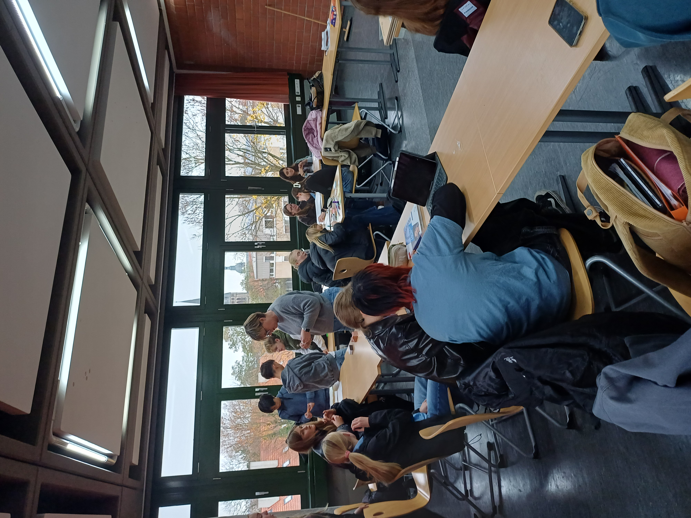
Bericht von der Tutor:innenschulung
Am vergangenen Freitagnachmittag fand an unserer
Schule im Rahmen der Hausaufgabenbetreuung eine besondere Tutor:innenschulung
statt, die allen Beteiligten noch lange in guter Erinnerung bleiben wird.
Bereits der gemeinsame Start beim Mittagessen sorgte für eine angenehme, offene
Atmosphäre und bot den „großen“ Grabbianern die Gelegenheit, sich über ihre
ersten Erfahrungen mit den Fünft- und Sechstklässlern auszutauschen und in den
Nachmittag zu starten.
Im Anschluss daran machten sich die Tutor:innen voller
Motivation daran, für die Fächer Englisch, Deutsch und Mathematik eigene
Lernspiele zu entwickeln. In kleinen Gruppen wurden kreative Ideen gesammelt,
ausprobiert und weiterentwickelt. Dabei entstanden ganz unterschiedliche
Spiele, mit denen man beispielsweise Wortarten üben oder unregelmäßige
englische Vokabeln spielerisch festigen und abfragen kann.
Trotz des eher ungewöhnlichen Termins an einem
Freitagnachmittag waren alle mit großer Begeisterung dabei. Die Tutor:innen
zeigten enormen Einsatz und hatten sichtlich Freude daran, spannende und
hilfreiche Materialien für die jüngeren Schüler:innen zu gestalten. Der
Austausch untereinander war intensiv, es wurde viel gelacht, und die
Zusammenarbeit verlief ausgesprochen produktiv.
Besonders deutlich wurde an diesem Nachmittag
wieder einmal, wie wichtig uns am Grabbe das Miteinander von Groß und Klein
ist. Die engagierte Zusammenarbeit, das gegenseitige Unterstützen und die
gemeinsame Freude am Lernen zeigten eindrucksvoll, wie stark die
Schulgemeinschaft funktioniert.
Nun
sind alle gespannt darauf, die neuen Lernspiele im Unterricht auszuprobieren –
und darauf, wie viel Spaß sie auch den jüngeren Grabbianern bereiten werden.
@2025-11-17
@2025-12-31
Finanzbildung im Stadion
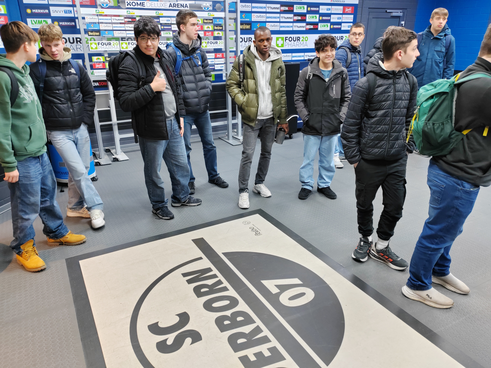
Wir, die Klasse 9GN, waren mit unserem WiPo-Lehrer Herrn Barczyk und Schulleiter Herrn Hilbing auf einer ganz besonderen Exkursion unterwegs – nämlich im Stadion des SC Paderborn! Gemeinsam mit der @Bildungszone Paderborn und der @Sparkasse Paderborn-Detmold-Höxter durften wir einen spannenden Finanzbildungstag erleben.
Der Workshop fand in der VIP-Lounge genauer gesagt im Goldenen Zimmer des SC Paderborn, statt – also mitten im Stadion des aktuellen Tabellenführers der 2. Bundesliga. Eingeladen wurden wir von Andreas Trotz, dem Vorstand der Sparkasse, der übrigens selbst ein ehemaliger Grabbe-Schüler und Fußballer ist. Er hatte die Idee, das Thema Finanzbildung einmal an einem außergewöhnlichen Lernort durchzuführen – und das Experiment ist wirklich gelungen!
Im Workshop haben wir unser Wissen rund ums Geld, Sparen und Investieren erweitert. Wir beschäftigten uns mit Girokonten, Überweisungen (ja, mit echten Überweisungsträgern!) und verschiedenen Bezahlformen – von PayPal bis SEPA-Lastschrift. Besonders spannend fanden viele von uns die Themen Geldanlagen, also ETFs, Aktien, Kryptowährungen oder Gold. Wir lernten, welche Chancen und Risiken es dabei gibt und dass das klassische Sparbuch heute fast schon Geschichte ist.
Auch über Versicherungen wurde gesprochen – ein Thema, das für viele von uns bisher eher „Erwachsenenkram“ war, das jetzt aber auf einmal greifbarer wurde. Besonders interessant fanden wir den Gedanken, dass die Sparkasse ursprünglich gegründet wurde, um Geld aus der Region für die Region zu nutzen – also um Menschen zu unterstützen, die etwas aufbauen oder investieren wollen.
Nach den Arbeitsphasen durften wir das Stadion genauer erkunden: Wir saßen in der Spielerkabine, machten Fotos in der Mixed Zone und standen am Ende sogar direkt an der Rasenkante – ein echtes Highlight!
Am Ende waren wir uns einig: Finanzbildung im Stadion ist nicht nur lehrreich, sondern auch richtig cool. Ein anderer Lernort, viele neue Eindrücke – und Themen, die man wirklich fürs Leben braucht.
Ein großes Dankeschön geht an die @Sparkasse Paderborn-Detmold-Höxter, die Bildungszone Paderborn, den @SC Paderborn – und natürlich an Herrn Barczyk, der diesen Tag für uns möglich gemacht hat!
@Finanzen
@2025-11-09
@2025-12-31
Erinnern und Gedenken an den 9. November 1938
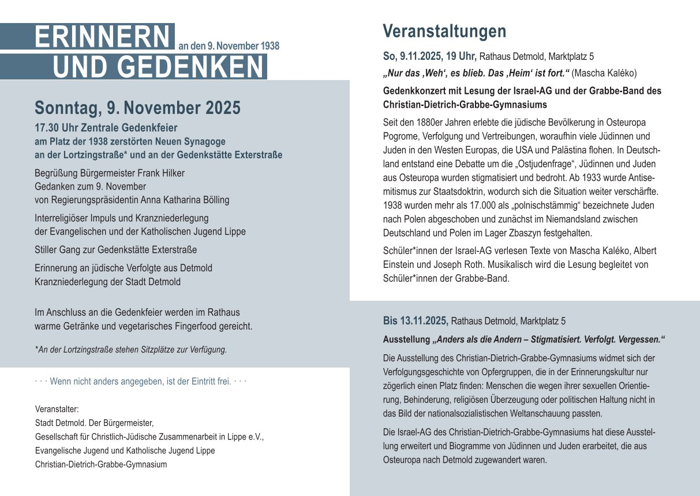
@2025-11-05
@2025-12-31
Ausstellungseröffnung „Anders als die Andern – Stigmatisiert. Verfolgt. Vergessen.“ im Detmolder Rathaus
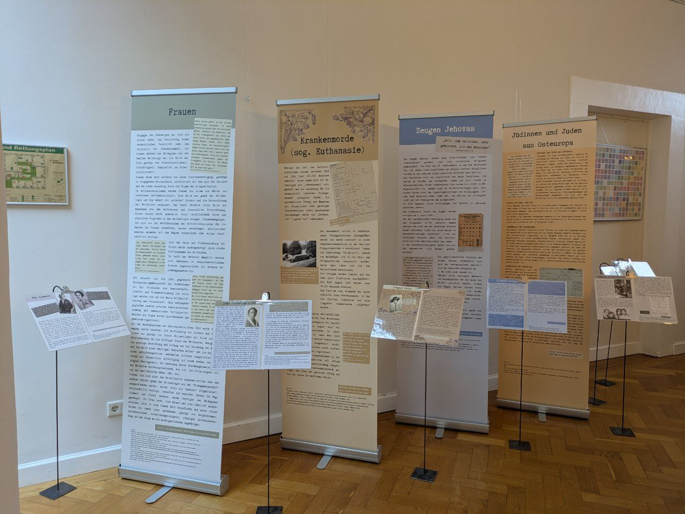
Am 9. Oktober 2025 wurde am Abend die Ausstellung „Anders als die Andern – Stigmatisiert. Verfolgt. Vergessen.“ im Detmolder Rathaus eröffnet.
“Anders als die Andern” ist ein Film von 1919 über die gleichgeschlechtliche Liebe unter Männern und zudem ein Zitat aus dem “Lila-Lied”, das 1920 geschrieben wurde und als Hymne der Homosexuellen galt. Es ruft dazu auf, vorgegebene Moralvorstellungen infrage zu stellen, neugierig durch das Leben zu gehen und Menschen zu akzeptieren, die von der gesellschaftlich-anerkannten Norm abweichen. Exemplarisch werden in der Ausstellung Biographien von Menschen präsentiert, die während des NS-Regimes stigmatisiert, entrechtet, verfolgt, vertrieben, ermordet wurden, und bis heute kaum wahrgenommen werden. Eine Rehabilitierung und Anerkennung als Opfer der nationalsozialistischen Gewaltherrschaft fand erst spät statt, ein Gedenken an diese vergessenen Verfolgten findet nur zögerlich Einzug ins kollektive Gedächtnis.
Die Ausstellung entstand anlässlich der zentralen Gedenkveranstaltung zum 27. Januar 2025 im Rahmen einer Unterrichtsreihe des Zusatzkurses Geschichte der Q2 des Grabbe-Gymnasiums. Ergänzt wird die Ausstellung im Rathaus durch die Originale eines Bilderbuchprojekts der Schüler*innen des Leistungskurses Kunst der Q2 des Abiturjahrganges 2025 des Grabbe-Gymnasiums. Die Schüler*innen erzählen die Schicksalsgeschichte von Margarete Lükermann aus Detmold in Form eines Bilderbuches. Für ihre jüngeren Mitschüler*innen wollen sie zum emotional herausfordernden Thema der sogenannten Krankenmorde einen ersten Zugang schaffen. In erster Linie soll dieses Buch aber ein Gedenken an eine junge Frau sein, die in einem ähnlichen Alter wie die Schüler*innen des Q2-Kurses Opfer der NS-Ideologie wurde. Begleitet wurde das Projekt von der Illustratorin und ehemaligen Grabbianerin Francis Kaiser und der Kunstlehrerin Annegret Niehus-Berkemann.
Erweitert wurde die Ausstellung durch Schüler*innen der Israel-AG des Grabbe-Gymnasiums unter der Leitung von Elisabeth Hecker und Kristina Panchyrz, die sich im Rahmen einer Projektwoche dem Schicksal von Jüdinnen und Juden aus Osteuropa widmeten und an Bürger*innen aus Detmold erinnern.
Seit den 1880er Jahren war die jüdische Bevölkerung in Ost-, Ostmittel- und Südosteuropa mehrfach von Pogromen, Verfolgung, Vertreibungen und Morden betroffen. Kontinuierlich flohen viele Jüdinnen und Juden aus Osteuropa nach Westeuropa, in die USA und nach Palästina. In Deutschland entstand eine öffentliche Debatte über die „Ostjudenfrage“ bzw. das „Ostjudenproblem“. Als „Ostjuden“ stigmatisiert, als „unerwünscht“ und als „lästige Ausländer“ angesehen, sahen sich die Geflüchteten fortdauernden Bedrohungen ausgesetzt und hatten ständig Angst vor einer möglichen Ausweisung. Ab 1933 wurde Antisemitismus zur Staatsdoktrin, wodurch sich die Situation für Jüdinnen und Juden aus Osteuropa weiter verschärfte. Im Oktober 1938 erfolgte die Abschiebung von 17.000 als „polnischstämmig“ bezeichneten Jüdinnen und Juden nach Polen. Die Abgeschobenen wurden aus dem Land vertrieben und von den Polen nicht ins Land gelassen und mussten in Ungewissheit, als Staatenlose im „Niemandsland“ umherirren.
Eingestimmt wurden die Anwesenden im Rathaus durch das ursprünglich jiddische Swingstück „Bei mir bistu shein“ von Sholom Secunda (Musik) und Jacob Jacobs (Text), gespielt von der Grabbe-Band unter der Leitung von Markus Wischer.
Nach der Begrüßung mit wertschätzenden, aber auch nachdenklichen Worten der stellvertretenden Bürgermeisterin Christ-Dore Richter, erinnerte die Leiterin des Stadtarchivs Dr. Bärbel Sunderbrink an die Ereignisse um den 9. November 1938 und die Bedeutung des Gedenkens als Teil der Erinnerungskultur der Stadt Detmold, insbesondere die Einbeziehung und aktive Mitwirkung von jungen Detmolder*innen. Mit sehr bewegenden Worten brachte die Historikerin Gudrun Mitschke-Buchholz (u.a. Verfasserin des digitalen Gedenkbuches (https://www.gedenkbuch-detmold.de/)) den Anwesenden die Schicksale der Familien Bonom-(Horowitz), Soltys-Gottlieb und Vogelhut aus Detmold nahe.
Gudrun Mitschke-Buchholz beschrieb die Welt der osteuropäischen Jüdinnen und Juden, die vor allem in Polen, der Ukraine und Galizien lebten und Jiddisch sprachen. Ihr Leben war geprägt von religiöser Tradition, kultureller Vielfalt, aber auch von Armut und Antisemitismus. Romantisierende Bilder vom Shtetl und chassidischem Leben stehen der Realität von Armut, Verfolgung und Vertreibung gegenüber. Viele wanderten zu Beginn des 20. Jahrhunderts in den Westen aus – auch nach Detmold –, in der Hoffnung auf ein besseres Leben. Die nach Detmold ausgewanderten Familien aus Galizien bauten sich in Detmold ein Leben auf. Die Familie Vogelhut eröffnete das „Detmolder Bekleidungskaufhaus“ in der Krummen Straße, Regina Bonom-Horowitz eine Pfandleihanstalt in der damaligen Weinbergstraße (heute Paulinenstraße). Dennoch blieben sie von Diskriminierung und Ausgrenzung nicht verschont, wurden entrechtet und schließlich wiederum Opfer von Verfolgung und Vertreibung. Die sogenannte Polenaktion von 1938, Lager wie Zbaszyn oder Ghettos in Bochnia und Rzeszow, sowie Auschwitz markieren Stationen ihres Leidenswegs. Einzelne Rettungsversuche wie die Hilfe durch den französischen Bürgermeister Paul Juilla konnten das Schicksal vieler nicht wenden – sie wurden ermordet oder gelten als verschollen.
Im Anschluss an diese tief berührenden Erzählungen schilderten die Schülerinnen Elisabeth Erichsmeier und Charlotte Kohlwey von der Israel-AG ihre Eindrücke der Projektwoche und gingen auf die Bedeutung des Erinnerns und Gedenkens ein: Auch ihre Generation sei verantwortlich, dass die vergangenen Geschehnisse nicht in Vergessenheit geraten. In der Projektwoche sei ihnen besonders die Beschäftigung mit den Biographien in Erinnerung geblieben. „Wir alle haben schon oft von den Verbrechern des nationalsozialistischen Regimes gehört, doch oft kommt es zu einer Art der Depersonalisierung dieser. Die großen Zahlen von denen wir hören, klingen erschreckend, aber sie geben uns nicht mal ansatzweise eine Vorstellung davon, wie groß das Ausmaß an Leid wirklich wahr. Und genau das wollten die Nazis ja auch.“ Er sei auch ihre Verantwortung und ihr Anliegen, dass die Namen genannt und die Persönlichkeiten und ihre Schicksale nicht vergessen werden.
Am Ende erklangen die melancholischen Klänge des Liedes „Donna Donna“ von Sholom Secunda (Musik) und Aaron Zeitlin (Text), dargeboten von der Grabbe-Band.
Die Ausstellung wird bis zum 13. November im Detmolder Rathaus zu sehen sein.
@2025-11-05
@2025-12-31
MINT am Grabbe
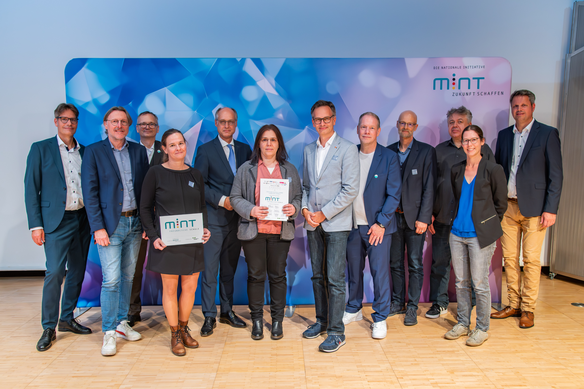
Grabbe-Gymnasium erneut als MINT-freundliche Schule ausgezeichnet
Detmold/Paderborn. Große Freude am Grabbe-Gymnasium: Bereits zum fünften Mal seit 2016 wurde die Schule als MINT-freundliche Schule geehrt. Die feierliche Auszeichnung fand am Dienstag, den 23. September 2025, im Heinz Nixdorf MuseumsForum (HNF) in Paderborn statt. Insgesamt 236 Schulen aus Nordrhein-Westfalen erhielten an diesem Tag die Ehrung für ihr besonderes Engagement in den Bereichen Mathematik, Informatik, Naturwissenschaften und Technik.
Sechs Schülerinnen vertraten das Grabbe-Gymnasium bei der Veranstaltung. Während die Schulleitung Dr. Claus Hilbing und Frau Chtchian am offiziellen Festakt teilnahmen, nutzten die Schülerinnen die Gelegenheit, verschiedene Workshops zu besuchen und dort Zukunftstechnologien hautnah zu erleben – vom 3D-Druck über Robotik bis hin zu bionischen Experimenten, bei denen sich Technik von der Natur inspirieren lässt.
Ein besonderes Erlebnis war der Workshop zum Thema Bionik. Dabei bauten die Schülerinnen einen Fisch nach, dessen Flossenbewegung auf dem sogenannten Fin-Ray-Effekt® basiert – einem Prinzip, das aus der Natur abgeschaut wurde. Besonders spannend wurde es, als sie selbst Form und Größe der Schwanzflosse entwerfen durften, um herauszufinden, welche Variante den Fisch am schnellsten durchs Wasser gleiten lässt. In einem kleinen Wettbewerb zeigte sich: Unterschiede von bis zu acht Sekunden waren möglich! Der Siegerfisch durfte anschließend am Brunnen des Museums gegen die Wellen antreten – und gewann unter lautem Jubel.
Nach einer kurzen Mittagspause stand der zweite Programmpunkt an: Robotik in Aktion. An mehreren Stationen konnten die Schülerinnen unterschiedliche Roboter kennenlernen und sie eigenständig steuern. Das absolute Highlight bildeten die Roboterhunde, die sich mithilfe einer Fernbedienung über Hindernisparcours lenken ließen. Zuvor erfuhren die Teilnehmerinnen, dass solche Roboter bereits heute im Einsatz sind – etwa bei Naturkatastrophen, wo Menschen nicht gefahrlos arbeiten können, oder in großen Industrieunternehmen zum Transport schwerer Lasten. Nach erfolgreich absolvierten Aufgaben erhielten alle ihren eigenen „Robohunde-Führerschein“. Besonders amüsant war, dass die Roboterhunde sogar auf Kommandos wie „Sitz!“ oder „Winken!“ reagierten.
„Am Grabbe heißt MINT: MINT für alle“, betont die Schulleitung. Dieses Motto spiegelt sich sowohl in der Unter- und Mittelstufe als auch in der Oberstufe wider. Schon in den unteren Jahrgangsstufen bauen Schülerinnen und Schüler beispielsweise Vogelhäuser, untersuchen Tierspuren oder nehmen an Wettbewerben teil. In höheren Klassen stehen projektorientiertes Arbeiten, Robotik und eigenständiges Forschen im Mittelpunkt. Besonders erfreulich: Seit diesem Schuljahr gibt es am Grabbe wieder einen Physik-Leistungskurs, der in Kooperation mit dem Leopoldinum und dem Stadtgymnasium angeboten wird.
Bei der Preisverleihung hob Dr. Urban Mauer die Bedeutung von Zukunftskompetenzen hervor, die eng mit MINT verknüpft sind: „Es geht um Kreativität, reflektiertes und selbstständiges Denken – Kompetenzen, die junge Menschen für ihre Zukunft brauchen.“ Auch Professor Risch, Vorstand der HNF-Stiftung, betonte, dass es künftig noch mehr „positiv Verrückte“ brauche, die sich mit Begeisterung für MINT einsetzen und Innovationen vorantreiben.
Der Tag im Heinz Nixdorf Museums Forum war für die Schülerinnen nicht nur spannend und lehrreich, sondern auch inspirierend. Mit der erneuten Auszeichnung sieht sich das Grabbe-Gymnasium bestärkt, den eingeschlagenen Weg fortzusetzen: „Für uns ist die Ehrung Herausforderung und Motivation zugleich. Wir wollen noch mehr junge Menschen für MINT begeistern und ihre Talente mit ihren Interessen verbinden.“
@Nawi
@2025-10-06
@2025-12-31
Reiseblog der Israel AG (engl.)
Mitte September war eine Gruppe von 19 Schüler*innen des Christian-Dietrich-Grabbe-Gymnasiums - die „Israel AG“ auf einer Reise durch Detmold/Berlin. Wir beschäftigen uns eine Woche mit der deutsch-jüdischen Geschichte Detmolds (und Deutschlands), gingen an Grenzen entlang, überquerten sie, bestiegen Berge und lernten viel über uns selbst, die Shoah, Teilung und Wiedervereinigung, Überleben und was es im Einzelnen aber auch im Großen und Ganzen bedeutet, dass Geschichten nicht vergessen werden. begleitet wurde die AG von Kristina Panchyrz und Elisabeth Hecker.
Der Blog erscheint auf Englisch, da er ebenso an unserer Partnerschule in Israel für die weitere Vernetzung unserer Schüler:innen verwendet wird.
Hier geht's zum Blog.
@israelag
@2025-10-05
@2025-12-31
@2025-09-24
@2025-12-31
Blog zu Klassenfahrt nach Fehmarn
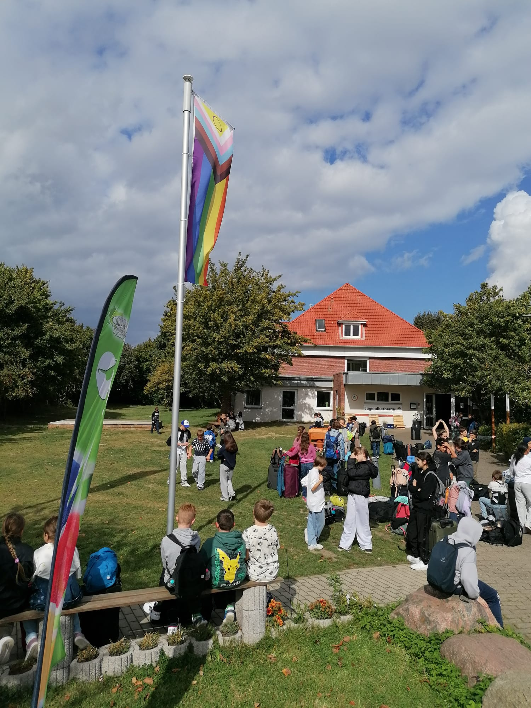
Unter dem folgenden Link findet sich ein kurzer Reiseblog der Klassenfahrt nach Fehmarn der 6. Klassen des Grabbe-Gymnasiums.
@2025-09-16
@2025-12-31
Einschulung der neuen Fünftklässler:innen
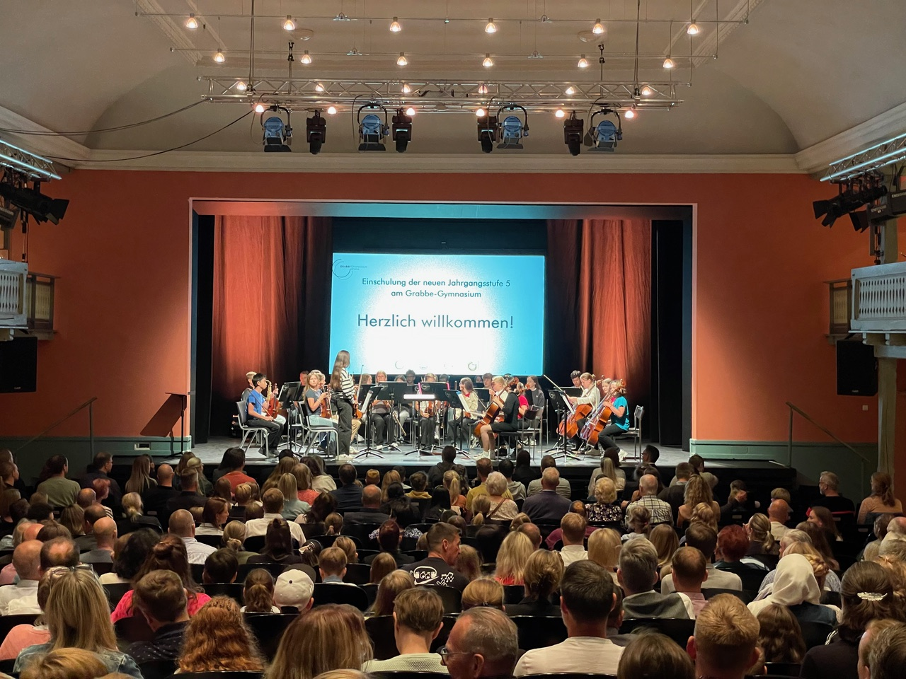
Ein besonderer Start – Einschulungsfeier der neuen Fünftklässler:innen am Grabbe-Gymnasium
Für unsere neuen Fünftklässler:innen und ihre Familien war es ein ganz besonderer Tag: Die Einschulung am Grabbe-Gymnasium.
Der festliche Auftakt fand in der Erlöserkirche am Markt statt. Dort gestaltete der Religionskurs der Klasse 8 unter der Leitung von Stephan Rieche und Sonja Knöbel einen eindrucksvollen Gottesdienst zum Motto „Willkommen! Zusammen unterwegs“. Symbolisch überreichten die älteren Schüler:innen den „Neuen“ kleine Rucksäcke, gefüllt mit hilfreichen Utensilien für den Schulalltag. Diese standen zugleich für die gemeinsame „Wanderung“, die mit diesem Tag begann.
Im Anschluss ging es für alle ins Detmolder Sommertheater. Dort hieß das SI-Orchester unter der Leitung von Florian Wessel die neuen Grabbianer:innen musikalisch willkommen. Nach dem schwungvollen Auftakt begrüßte die Schulleitung die neuen Fünftklässler:innen. Dr. Claus Hilbing betonte in seiner Ansprache:
„Im Wechsel von der Grundschule steckt auch immer etwas sehr Schönes: Ihr fangt noch einmal von vorne an, könnt neue Freundschaften schließen, Neues ausprobieren und entdecken, was in euch steckt.“
Im Anschluss übernahm Erprobungsstufenkoordinator Stefan Hecker das Wort. Mit viel Herzblut und einem Augenzwinkern gab er den neuen Fünftklässler:innen einen ersten Überblick über das, was sie in den kommenden Tagen und Wochen am Grabbe erwartet. Von den organisatorischen Abläufen am ersten Schultag über wichtige Ansprechpartner:innen bis hin zu kleinen Tipps für den Schulalltag – er versorgte die Kinder mit allem, was den Start erleichtert. Dabei machte er deutlich, dass niemand Angst vor dem Neuen haben müsse: Am Grabbe ist niemand allein. Ob Mitschüler:innen, Lehrer:innen oder ältere Jahrgänge – alle stehen bereit, um zu unterstützen. Mit seinen ermutigenden Worten wünschte er den Kindern nicht nur Glück, sondern auch Freude, Mut und Neugier für die spannende Zeit, die nun vor ihnen liegt.
Nach diesen Worten ging es endlich ins neue Zuhause: das Grabbe-Gymnasium. Dort begrüßte der SI-Chor unter der Leitung von Stefanie Engelskirchen die neuen Grabbianer:innen Während die neuen Fünftklässler:innen in ihren Klassenräumen erste Eindrücke sammelten, erhielten die Eltern von Beate Bossmanns wichtige Informationen zu Übermittagsbetreuung, Mensa, Hausaufgabnebetreuung und Arbeitsgemeinschaften.
So ging ein rundum gelungener Tag zu Ende – ein schöner und hoffnungsvoller Start für unsere neuen Grabbianer:innen.
@2025-09-10
@2025-12-31
@Berufsorientierung
@2025-09-06
@2025-12-31
@Religion
@2025-09-04
@2025-12-31
Arbeitsgemeinschaften
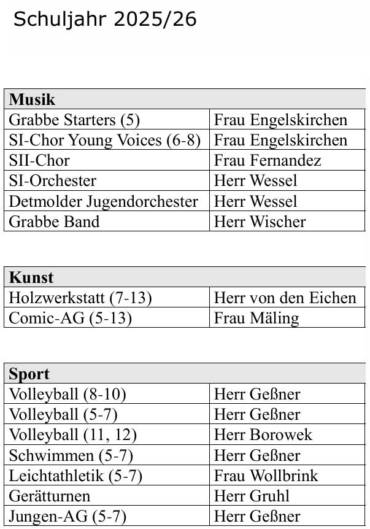
@2025-08-30
@2025-12-31
@Schulstart
@2025-08-13
@2025-12-31.
@2025-07-15
@2025-12-31
@Musik, @Cats
@2025-07-09
@2025-12-31
@Kunst
@2025-07-08
@2025-12-31
Großer Erfolg beim Bundeswettbewerb „Jugend musiziert“
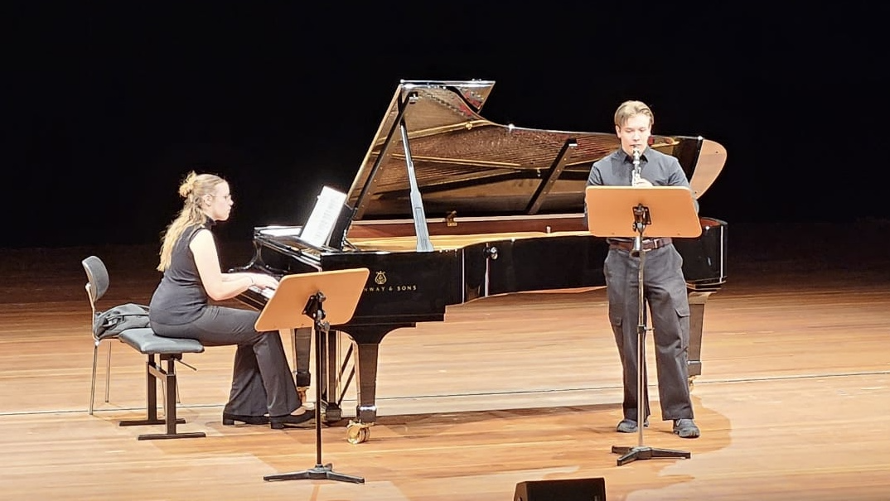
Beim diesjährigen Bundeswettbewerb „Jugend musiziert“, der Anfang Juni in Wuppertal stattfand, konnten zwei Schüler des Grabbe-Gymnasiums herausragende Erfolge feiern: Artem Rychagov und Ilij Zaharov wurden jeweils mit einem ersten Preis ausgezeichnet. Beide traten in der Altersgruppe V an und erzielten 24 von 25 möglichen Punkten – ein Ergebnis, das ihnen bundesweit höchste Anerkennung einbringt.
Artem Rychagov überzeugte die Jury mit einem anspruchsvollen Programm für Violine solo, das er mit beeindruckender technischer Sicherheit und musikalischer Ausdruckskraft präsentierte. Artem ist Jungstudent an der Hochschule für Musik Detmold und zeigt bereits jetzt ein außergewöhnliches künstlerisches Niveau.
Ilij Zaharov trat in einem Duo auf und präsentierte neben einem klassischen Werk auch eine eigene Komposition – ein bemerkenswerter Beleg für seine Kreativität und Vielseitigkeit. Auch er konnte die Jury mit seiner Darbietung voll und ganz überzeugen.
Beide Schüler haben mit ihren Leistungen nicht nur das Publikum und die Fachjury begeistert, sondern auch die musikalische Arbeit am Grabbe-Gymnasium auf eindrucksvolle Weise sichtbar gemacht. Die Schulgemeinschaft gratuliert Artem und Ilij sehr herzlich zu diesem großartigen Erfolg!
@musik
@2025-07-08
@2025-12-31
@100
@2025-07-07
@2025-12-31
Legendenspiel am Grabbe - Deutscher Meister im Schulfußball 1985
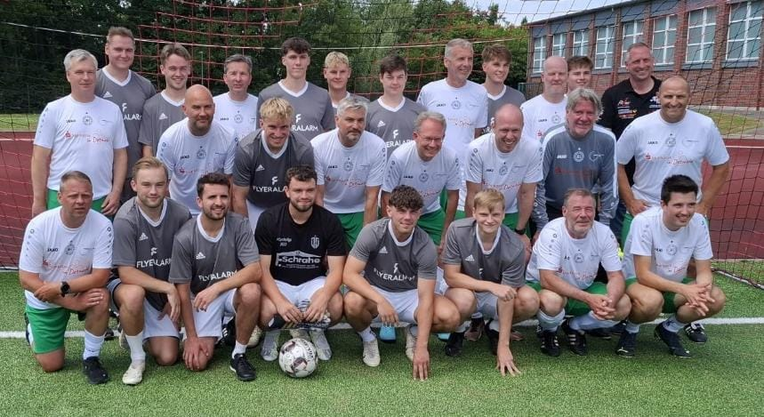
Anlässlich des 100 Jahre- Grabbe- Jubiläums fand am Wochenende eine Zusammenkunft der U16-Fußball-Schulmannschaft
des Grabbe-Gymnasiums von 1985 statt. Die Bundessieger im Wettbewerb Jugend trainiert für
Olympia in Berlin", fanden wieder zusammen und standen gemeinsam auf dem Platz. 40 Jahre
nach dem großen Erfolg (4:2 nach Elfmeterschießen im Finale gegen eine Berliner Schule)
stellte sich das Team auf dem Werresportplatz in einem Vergleichsspiel einer
Auswahl ehemaliger Grabbe-Schuler der Sport-Leistungskurse der Jahrgange 2016
bis 2025. „Es war ein Riesenspaß, der Gegner war deutlich besser, deutlich jünger
und deutlich fitter", berichtete Henning Fromme, der gemeinsam mit
Sportlehrer Heiner Beckmann dieses Event an diesem Tag organisiert hat. Bevor
das Hauptevent startete, fand zur Begrüßung ein schulinternes gemischtes Auftaktspiel
der Wettkampfklassen IV, III und II statt, um auch hier den „Ehemaligen“ einen
Einblick in die aktuellen fußballerischen Fähigkeiten der aktiven Grabbianer
geben zu können.
Ein Highlight des Tages war dann
noch das Abspielen einer alten Tonbandaufnahme des WDR, die noch jemand auf dem
Dachboden gefunden hatte. Die beiden Teams spielten dann in drei Zeitabschnitten
jeweils 20 Minuten gegeneinander, wobei im letzten Durchgang die Mannschaften
bewusst gemischt wurden um auch hier die Brücke zwischen Vergangenheit,
Gegenwart und Zukunft am Grabbe aufzuzeigen.
@Sport, @Lippe, @sportlichste Schule @Vergangen,Gegenwart,Zukunft
@2025-07-07
@2025-12-31
100 Stimmen - 100mal Wir
Blättern Sie hier in unserem Erinnerungsbuch mit 100 Stimmen aus 100 Jahren Grabbe-Geschichte (Bestellinformationen und Ansichtsexemplare auch am Stand vor dem SLZ):
@2025-07-04
@2025-12-31
Zweimal 1. Platz!
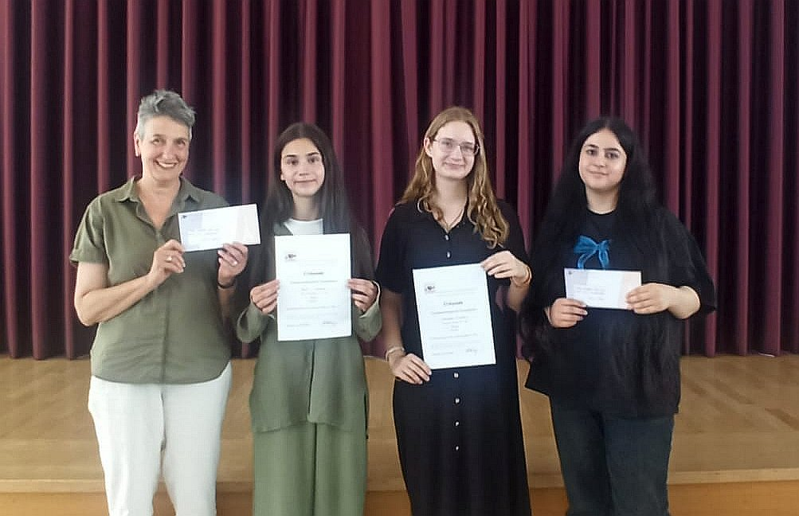
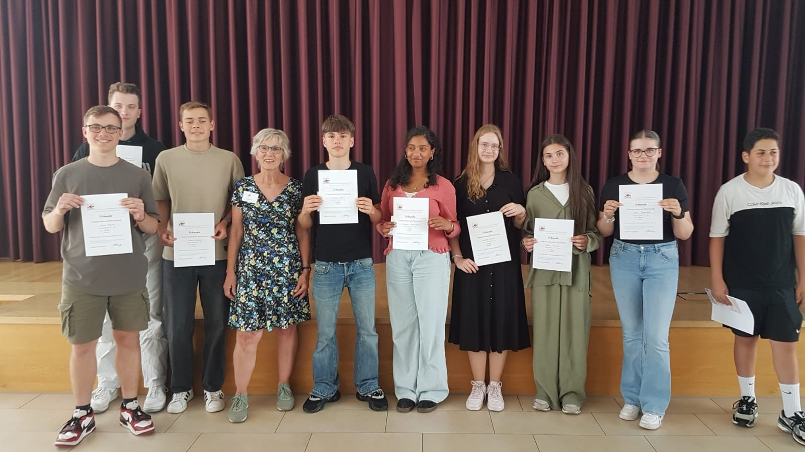
@2025-07-03
@2025-12-31
WK 4 Kreismeisterschaften Leichtathletik - Grabbe qualifiziert sich für das Westfalenfinale
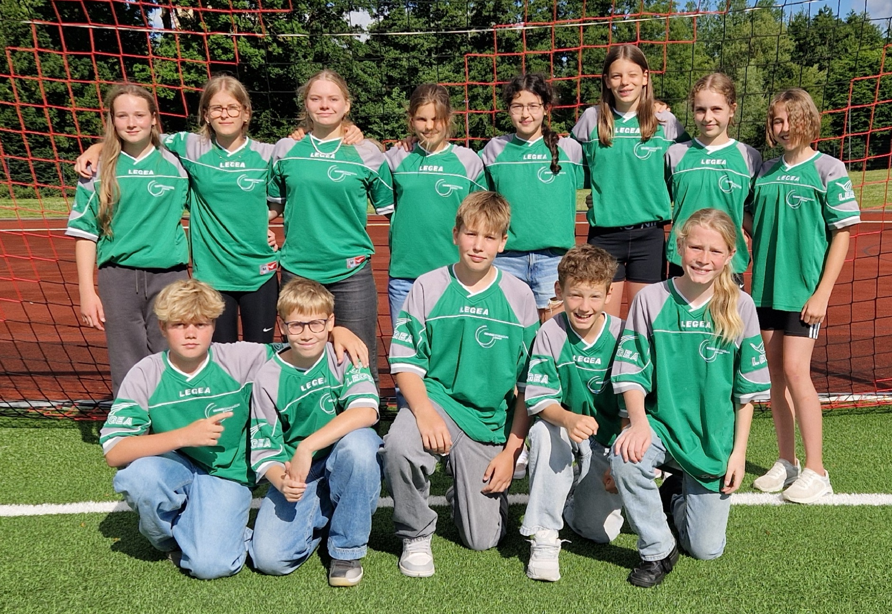
Am vergangenen
Donnerstag (26.06.25) fanden die Kreismeisterschaften in der Leichtathletik der
Wettkampfklasse IV auf dem Werre-Sportplatz in Detmold statt. Es traten
insgesamt fünf Mannschaften aus fünf verschiedenen Schulen gegeneinander an.
Entgegen der zunächst schlechten Wettervorhersage konnten alle Disziplinen wie
geplant durchgeführt werden. Der Wettkampf der WK IV besteht aus sechs
Disziplinen: Zonenweitsprung, Hochsprung (Schersprung von rechts und links),
Heuler-Wurf (oder Ringweitwurf), Medizinballstoßen (mit rechts und links),
50-Meter Hindernis-Sprintstaffel und einem abschließenden 8-Minuten-Lauf. Jedes
Team besteht aus sechs Mädchen und sechs Jungen, von denen je fünf an jeder
Disziplin teilnehmen.
In diesem Jahr gingen
für das Grabbe Gymnasium folgende Schülerinnen und Schüler an den Start:
Pauline Kobus (6MS), Marie Warzecha (7M), Leila Nurullina (7M), Jara Girod
(7S), Inga Ringel (7GN), Malea Loyek (7GN), Maximilian Rosenstock (6MS),
Leopold Wormuth (6GN), Till Zörlein (7M), Paul Horrix (7S), Leon Mantler (7S)
und Damian Zinn (7S). Elsa Hansen (7M), Marla Pohlmann (7S) und Carlo Chosta
(7S) unterstützten ihr Team als starke Ersatzkräfte und engagierte Coaches.
Nach einem spannenden
Wettkampftag konnte sich das Grabbe-Team für das Westfalenfinale qualifizieren! Für einen reibungslosen Ablauf der
Wettkämpfe sorgte wie in jedem Jahr, u.a. der zukünftige Sport-LK.
#grabbegymnasium #Leichtathletik #Westfalenfinale #Teamgeist #schule #schüler #sport
@2025-07-03
@2025-12-31
Junges Klaviertalent
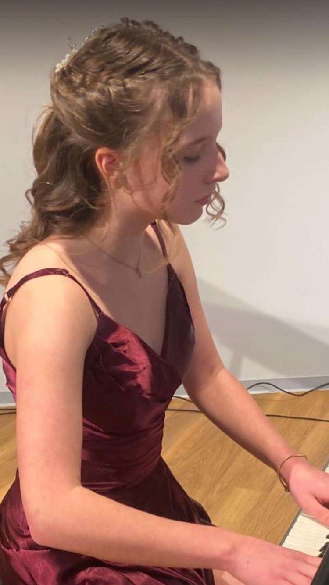
@Musik
@2025-07-01
@2025-12-31
100 Jahre Grabbe-Gymnasium – Das digitale Buch zum Jubiläum
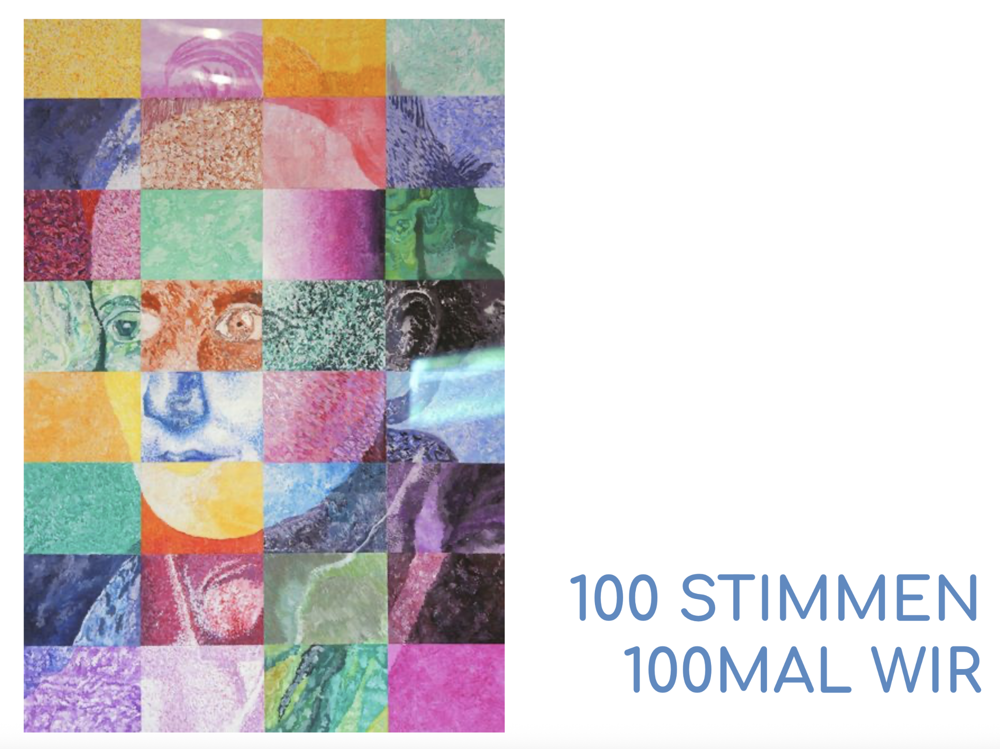
Zum 100-jährigen Bestehen des Grabbe-Gymnasiums haben ehemalige Schülerinnen und Schüler, Lehrerinnen und Lehrer sowie Wegbegleiter ihre persönlichen Erinnerungen in einem vielstimmigen Porträt von Schule und Schulzeit festgehalten. Entstanden ist ein E-Book welches Beiträge voller Geschichten, Anekdoten und Erinnerungen enthält, mit zahlreichen Fotos, persönlichen Gegenständen und eingereichten Bildern ausgestattet und durch gestalterische Arbeiten der Kunst-Leistungskurse (Abiturjahrgang 2024 und 2025) geschmückt ist.
Der Link zum E-Book wird am 4. Juli hier in diesem Beitrag veröffentlicht werden. Eine Printversion kann ebenfalls an diesem Tag vor Ort bestellt werden. Die Modalitäten dazu werden auch hier folgen.
Das Buch wird in unregelmäßigen Abständen aktualisiert. Wenn Sie Teil des Projekts werden möchten, nutzen Sie gern diesen Link zum Fragebogen:
Foto-Einsendungen, Fragen und nachträgliche Bestellungen an
s.kraechter@grabbe-dt.de
b.mannebach@grabbe-dt.de
@2025-07-01
@2025-12-31
Abiturgottesdienst am 5. Juli um 9:30 Uhr
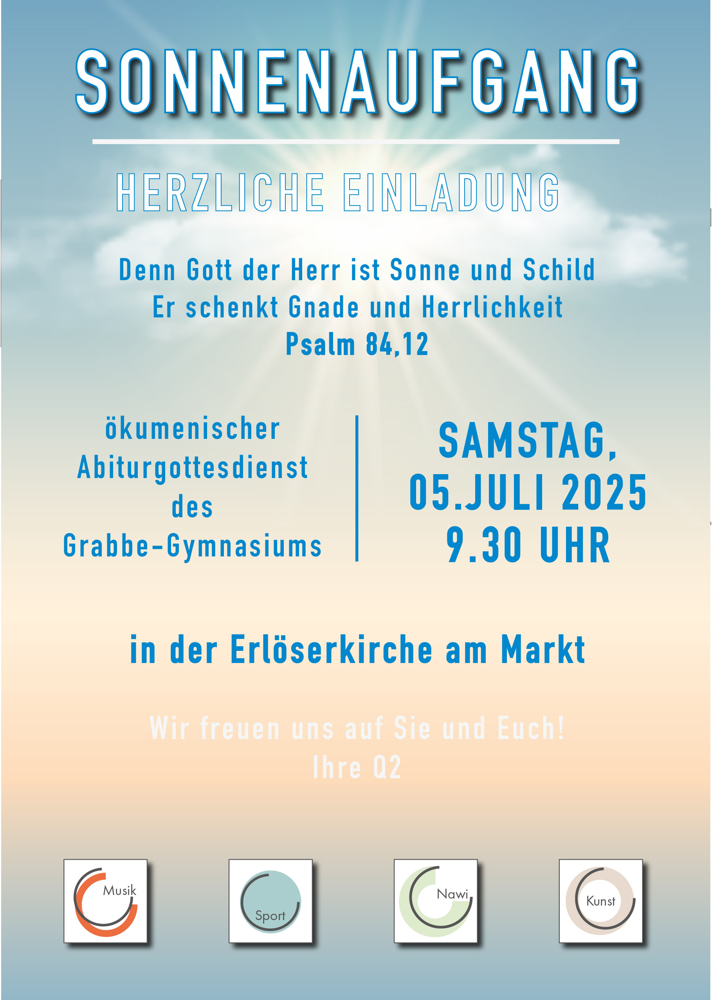
@2025-06-29
@2025-12-31
Volleyballturnier der 10. Klassen am Grabbe
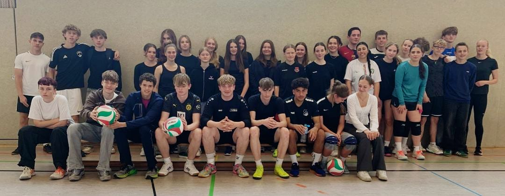
Am 16. Juni ging es beim Volleyball-Turnier der 10. Klassen ordentlich zur Sache! Von 9:30 bis 13:00 Uhr kämpften die Mixed-Teams um den Sieg. Es gab spannende Matches und jede Menge Action – Teamgeist und fairer Wettbewerb standen natürlich im Vordergrund!
Es war ein fantastisches Event, bei dem der Teamgeist und der Spaß im Vordergrund standen!
#schule #schüler #grabbegymnasium #sport #volleyball #teamgeist #fairplay
@2025-06-30
@2025-12-31
Landesfinale der Schulen – „Jugend trainiert für Olympia“ 2025
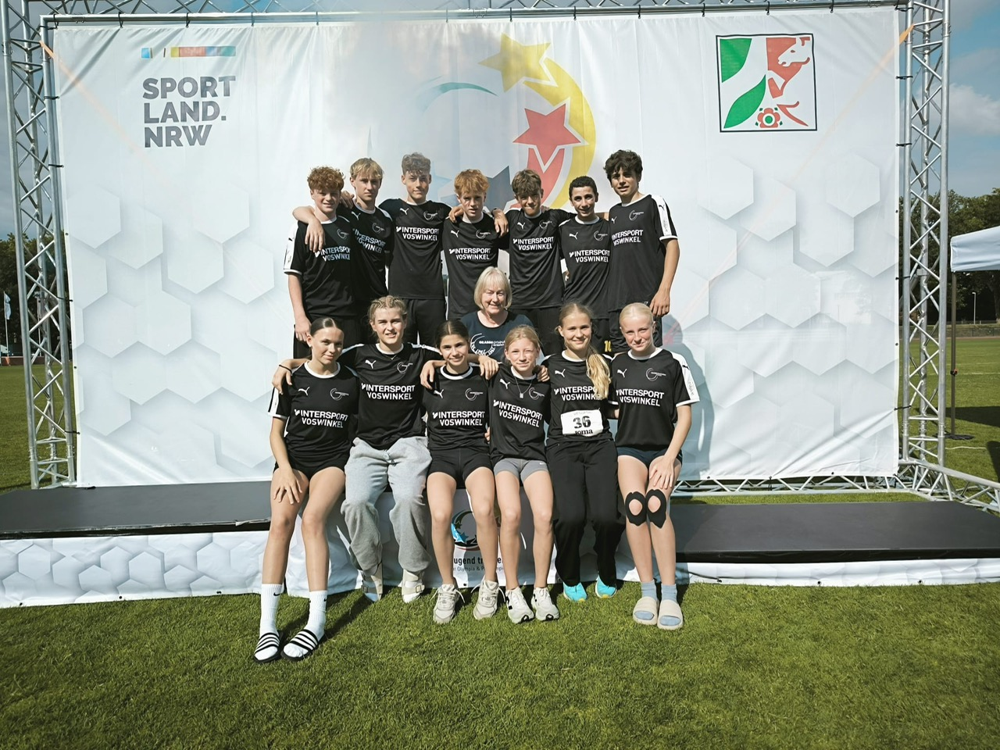
Am 26. Juni 2025 nahm das Grabbe-Gymnasium mit einer Auswahl von 14 Schüler*innen der Jahrgangsstufen 7 bis 9 am Landesentscheid von „Jugend trainiert für Olympia“ in Duisburg teil. Austragungsort war die Sportanlage an der MSV-Arena in Duisburg, auf der sich insgesamt sieben Schulen aus Nordrhein-Westfalen in der Leichtathletik-Wettkampfklasse III miteinander maßen. Dabei stand der Tag durch schlechte Wettervorhersagen und Verletzungen unter keinem guten Stern. Doch der Himmel klarte auf und gleichzeitig zeigten die Schüler*innen zu was sie fähig sind.
Mit großem
Engagement, starker sportlicher Leistung und beeindruckendem Teamgeist setzten
sich die Schüler*innen gegen starke Konkurrenz durch. Gekrönt wurde das ganze
mit einem verdienten Treppchenplatz. Lediglich dem Besselgymnasium aus Minden und
der Friedrich-Ebert-Lange-Schule aus Solingen musste man sich geschlagen geben.
Der Stimmung tat dies absolut keinen Abbruch und die Gruppe zeigte, zu was für
einem tollen, stufenübergreifenden Team sie gereift sind.
Besonders
eindrucksvoll war der letzte 800-Meter-Lauf des Tages: Während ein Schüler sich
im direkten Duell den dritten Platz sicherte, unterstützte ihn das gesamte Team
mit lautstarkem Anfeuern – von der Tribüne aus und laufend entlang der Strecke.
Ein Sinnbild für den Zusammenhalt und das Engagement der Gruppe.
Begleitet wurden die SuS von Frau Rawert und Herrn Göke, die sehr
zufrieden mit den Leistungen der Schüler*innen waren.
Wir gratulieren unseren Schüler*innen herzlich zu diesem tollen Erfolg
und danken allen Beteiligten für ihren Einsatz!
@Sport, @Lippe, @sportlichste Schule
@2025-06-30
@2025-12-31
Begrüßungsnachmittag
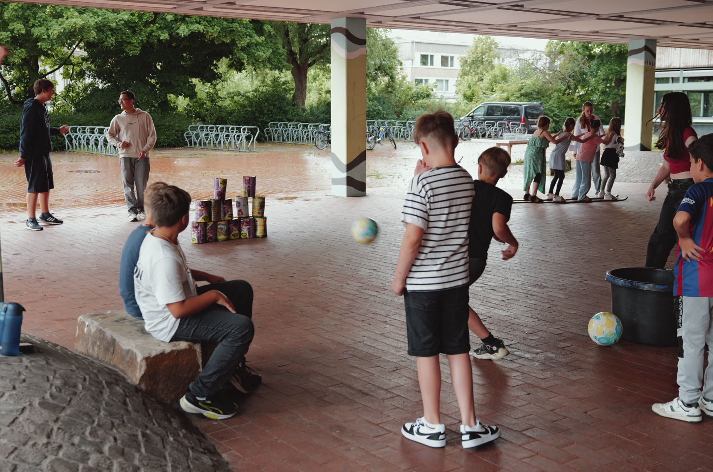
Am Donnerstagnachmittag wurden die neuen Fünftklässler, die sich nach den Sommerferien als Grabbianer bezeichnen können, begrüßt. Dabei konnten sie schonmal ihre neuen Mitschüler:innen, Klassenleitungen und Klassenräume kennenlernen. Unterstützt wurden sie dabei von den Tutor:innen der Hausaufgabenbetreuung, die mit Ihnen Spiele durchführten und somit den Teamgeist der Gruppen stärkten.
@2025-06-29
@2025-12-31
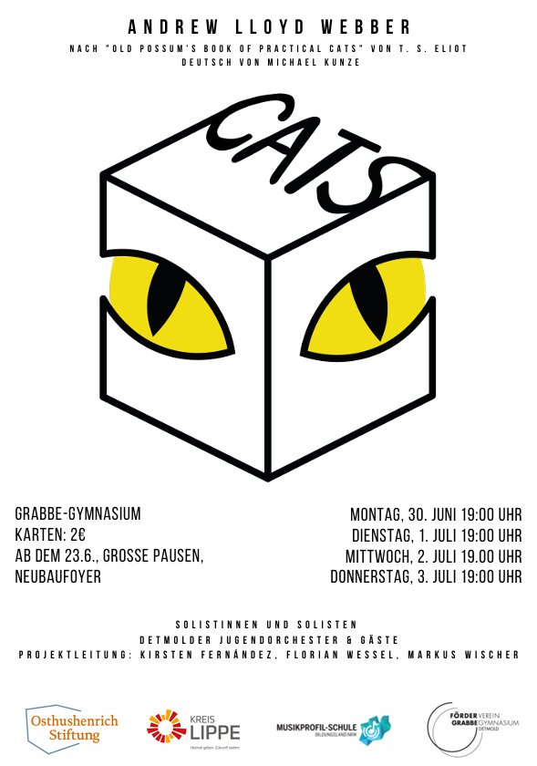
@Musik
@2025-06-05
@2025-12-31
Grabbe-Alumni-Verein gegründet
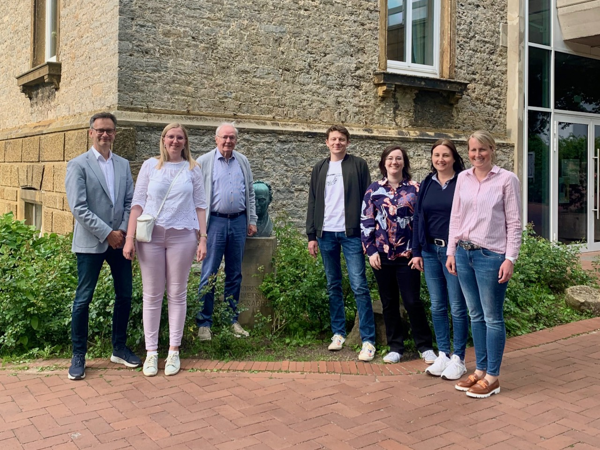
@2025-06-04
@2025-12-31
Mathe-Marathon am Grabbe
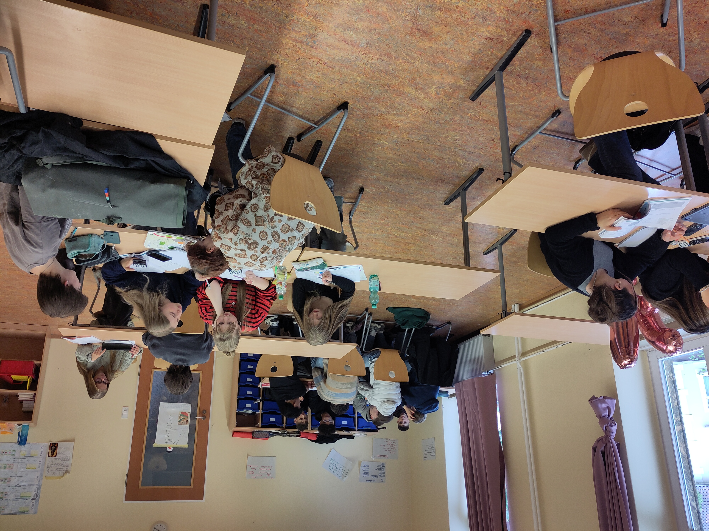
Mathe-Marathon am Grabbe – Gemeinsam zum Erfolg!
An zwei Freitagnachmittagen im Mai wurde es im Altbau des Grabbe-Gymnasiums besonders lebendig: Schüler:innen der Einführungsphase haben sich freiwillig Zeit genommen, um Zehntklässler:innen bei der Vorbereitung auf die Zentrale Prüfung (ZP 10) zu unterstützen. In kleinen Gruppen wurde gerechnet, erklärt, gelacht – und vor allem intensiv gelernt.
Die Idee zum "Mathe-Marathon" hatte Frau Hauenschild, die die Veranstaltung mit viel Engagement organisiert hat. Unterstützt wurde sie dabei von Mathelehrer:innen des Grabbe-Gymnasiums, die den Lernenden und Helfenden mit Rat und Tat zur Seite standen.
Die Stimmung war durchweg positiv: Die Zehntklässler:innen freuten sich über die individuelle Unterstützung und neue Perspektiven beim Lösen mathematischer Aufgaben. Die Schüler:innen der Einführungsphase zeigten nicht nur mathematisches Können, sondern auch viel pädagogisches Geschick und Teamgeist.
„Es war schön zu sehen, wie motiviert und konzentriert gearbeitet wurde – und das an einem Freitagnachmittag!“, freute sich Frau Hauenschild nach der zweiten Runde des Marathons. „Solche Projekte stärken nicht nur das mathematische Verständnis, sondern auch das Miteinander an unserer Schule.“
Am Ende waren sich alle Beteiligten einig: Der Mathe-Marathon war ein voller Erfolg!
@Mathe
@2025-05-26
@2025-12-31
Osteraktion der SV
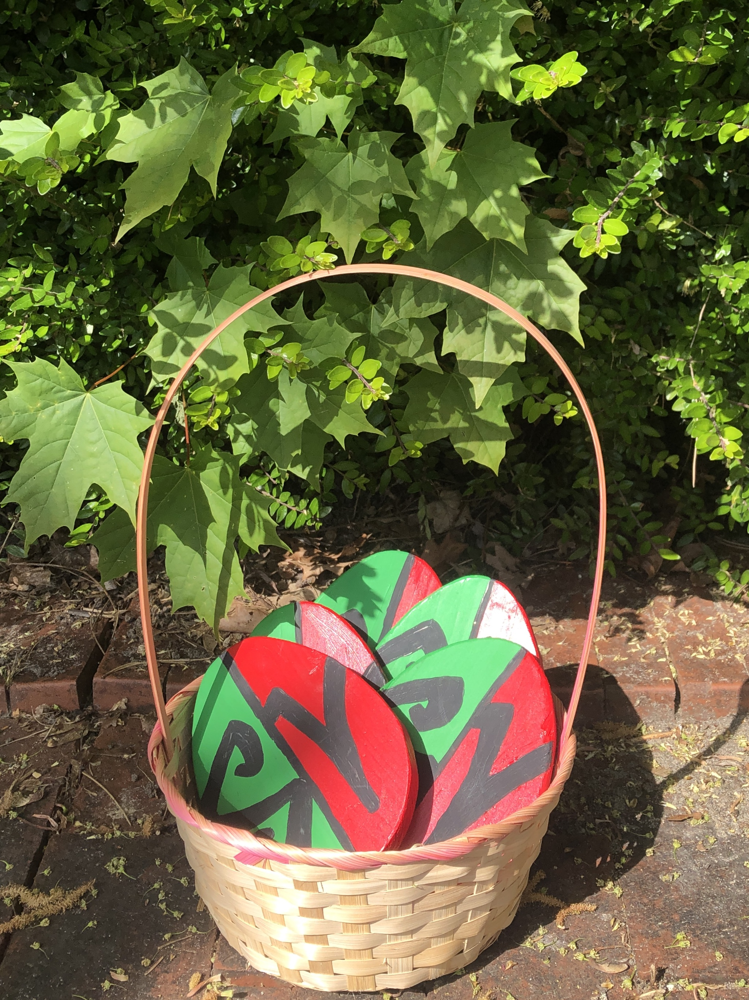
Frühlingsfest am Grabbe
Zum Start nach den Osterferien organisierte die SV des Christian-Dietrich-Grabbe-Gymnasiums am Montag, dem 28. April 2025, eine fröhliche Frühlingsaktion für die gesamte Schulgemeinschaft: eine Ostereier-Suche auf dem gesamten Schulgelände. Insgesamt fünf in den SV-Farben Rot und Grün bemalte Holzeier wurden bereits vor Unterrichtsbeginn gut sichtbar (oder auch etwas knifflig) auf dem Schulhof versteckt. In der ersten großen Pause machten sich viele Klassen motiviert auf die Suche – und einige wurden auch schnell fündig. Zwei Eier blieben zunächst unentdeckt, konnten aber in der zweiten Pause erfolgreich aufgespürt werden. Als Belohnung erhielt jede Klasse, die ein Ei gefunden hatte, in der darauffolgenden Stunde einen bunten Korb mit Süßigkeiten, der von der SV persönlich vorbeigebracht wurde. Wir bedanken uns bei allen, die mitgemacht haben, und freuen uns auf die nächsten gemeinsamen Aktionen.
@SV
@2025-05-22
@2025-12-31
Spendenübergabe an das SOS-Kinderdorf
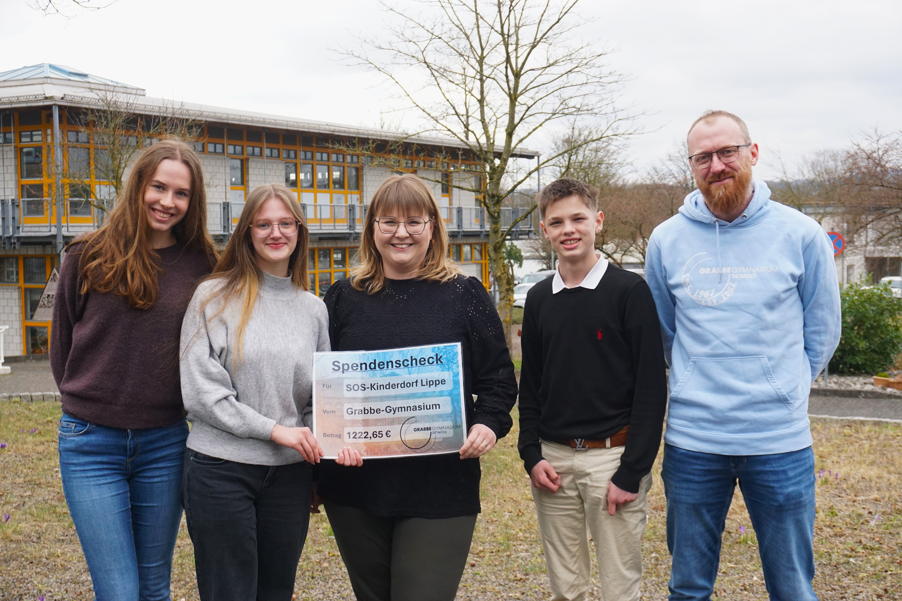
SOS-Kinderdorf:
Spendenaktion für das SOS-Kinderdorf
Im Rahmen des Winterzaubers sammelte die SV des Christian-Dietrich-Grabbe-Gymnasiums Spenden für das SOS-Kinderdorf in Detmold – eine Einrichtung, die Kindern und Jugendlichen in schwierigen Lebenslagen ein stabiles und sicheres Umfeld bietet. Bei der offiziellen Spendenübergabe erhielten Mitglieder der SV vor Ort in den Jugendberufshilfen spannende Einblicke in die vielfältige und engagierte Arbeit des Kinderdorfes. Als eines der größten Kinderdörfer in Nordrhein-Westfalen bietet es nicht nur Wohnraum, sondern auch pädagogische, therapeutische und berufliche Perspektiven für junge Menschen. Die Kinder leben in kleinen, familiär organisierten Wohngruppen mit 24-Stunden-Betreuung. Jedes Haus ist dabei weitgehend autark: Gemeinsam kochen, gestalten und strukturieren die Bewohnerinnen ihren Alltag und wachsen in einem Umfeld auf, das gezielt eine familienähnliche Atmosphäre schafft. Durch Spenden werden zahlreiche Angebote wie Nachhilfe, schulische Förderung, Ausbildungsmöglichkeiten, Therapien und kreative Freizeitaktivitäten ermöglicht. Eine enge Zusammenarbeit mit dem Jugendamt gewährleistet dabei die bestmögliche Unterstützung für jedes einzelne Kind. Im Gespräch wurde auch ein möglicher Besuch der SV im SOS-Kinderdorf Schieder-Schwalenberg in Aussicht gestellt, um weitere Eindrücke zu sammeln. Ebenso wurde die Möglichkeit besprochen, das Kinderdorf zu einem Informationsbesuch an unsere Schule einzuladen – etwa zur Vorstellung von Praktikumsmöglichkeiten. Wir danken allen Spenderinnen für ihre Unterstützung und freuen uns, mit dieser Aktion einen Beitrag zu einem wichtigen sozialen Projekt geleistet zu haben – mit der Hoffnung auf eine langfristige Partnerschaft zwischen dem Grabbe-Gymnasium und dem SOS-Kinderdorf.
@SV
@2025-05-22
@2025-12-31
Konzert des SI-Orchesters
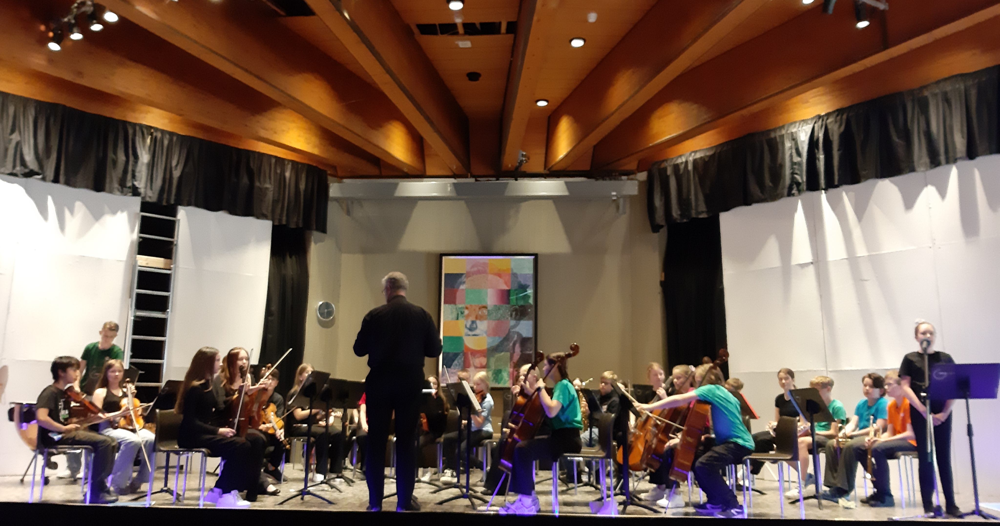
Zauberhafte Klänge in der Aula – SI-Orchester des Grabbe-Gymnasiums begeistert mit Mozart und Elgar
Detmold. Wer am Dienstagabend die Neue Aula des Grabbe-Gymnasiums betrat, wurde nicht nur von erwartungsvoller Stille, sondern bald auch von zauberhaften Klängen empfangen. Das ambitionierte Nachwuchsorchester der Schule, bestehend aus Schülerinnen und Schülern der Jahrgangsstufen fünf bis acht, lud zu einem einstündigen Konzert ein – und überzeugte mit Leidenschaft, Spielfreude und erstaunlicher Musikalität.
Auf dem Programm stand eine arrangierte Fassung von Mozarts weltberühmter Oper Die Zauberflöte. Dabei wurde nicht nur musiziert, sondern auch erzählt: Zwischen den einzelnen Musikstücken trugen Mitglieder des Orchesters in kurzen, verständlichen Texten die Geschichte der Oper vor. Diese Idee sorgte nicht nur für inhaltliche Klarheit, sondern verlieh dem Konzert eine lebendige und persönliche Note.
Das Orchester, das sich seit Beginn des Schuljahres unter der Leitung von Musiklehrer und Dirigent Florian Wessel auf diesen Abend vorbereitet hatte, zeigte eine beeindruckende Klangvielfalt. Streicher, Bläser und Schlagzeuger harmonierten miteinander und bewiesen, dass auch ein Ensemble am Anfang seiner musikalischen Laufbahn bereits viel Ausdruckskraft entwickeln kann. Besonders hervorzuheben war die jugendliche Flötistin Marharyta Opanasiuk, die mit sicherem Ton und großer Musikalität mehrere Solopassagen meisterte und dem Werk damit eine besondere Leichtigkeit verlieh.
Zum Abschluss des Konzerts erklang als Zugabe das gefühlvolle Salut d’Amour von Edward Elgar. Ein stimmungsvoller Ausklang, der das Publikum sichtbar berührte und für langanhaltenden Applaus sorgte.
Das Konzert war mehr als nur ein musikalischer Abend – es war ein eindrucksvolles Beispiel dafür, wie lebendig und engagiert das Musikprofil des Grabbe-Gymnasiums ist. Mit großer Hingabe und professioneller Betreuung wird hier jungen Menschen die Freude an klassischer Musik vermittelt und Raum gegeben, sich künstlerisch zu entfalten. Wer diesen Auftritt erlebt hat, darf gespannt sein, was von diesem jungen Orchester in Zukunft noch zu hören sein wird.
@Musik
@2025-05-22
@2025-12-31
Leichtathletik-Kreismeister 2025 in der WK III
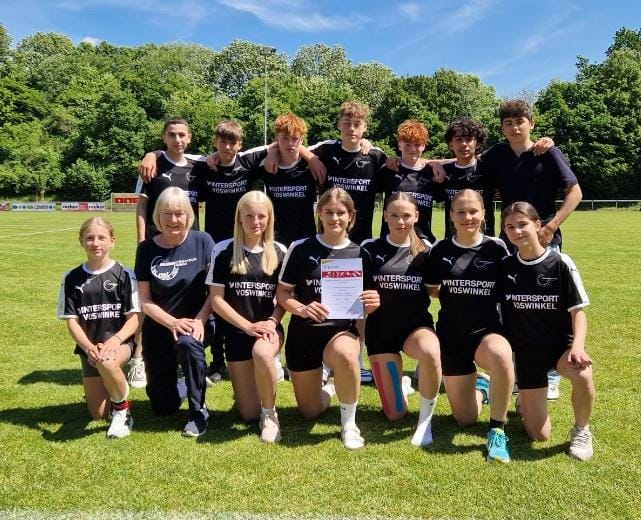
Das Grabbe-Team startete am Mittwoch (21.5.) bei den Kreismeisterschaften in Blomberg und siegte dort vor dem EKG Lemgo und dem HVG Blomberg.
In der WK III treten seit dem letzen Jahr gemischte Teams an, sodass in jeder Disziplin 2 Mädchen und 2 Jungen starten und eine gemischte Staffel gelaufen wird. Neben dem wie immer tollen Mannschaftsgeist sind folgende Leistungen hervorzuheben: Greta siegte im Weitsprung mit 5,00m und im Kugelstoßen mit 10,00m; Finn im 75m-Lauf mit 9,41sec und im Weitsprung mit 5,45m; Ben im Kugelstoßen mit 11,45m und im Ballwurf mit 62m.
Das Team: Greta Spieß, Alea Imeraj, Lale Mesch, Marie
Niemann, Emma Hansen, Alicia Warzecha, Ben Krome, Wisam Aldolli, Taim Alnashef,
Paul Carl, Linus Pöhl, Finn Charter, Astrid Rawert (Betreuerin).
@Sport, @PartnerschuledesSports, @Leichtathletik
@2025-05-22
@2025-12-31
Bezirksmeisterschaften Beachvolleyball 2025
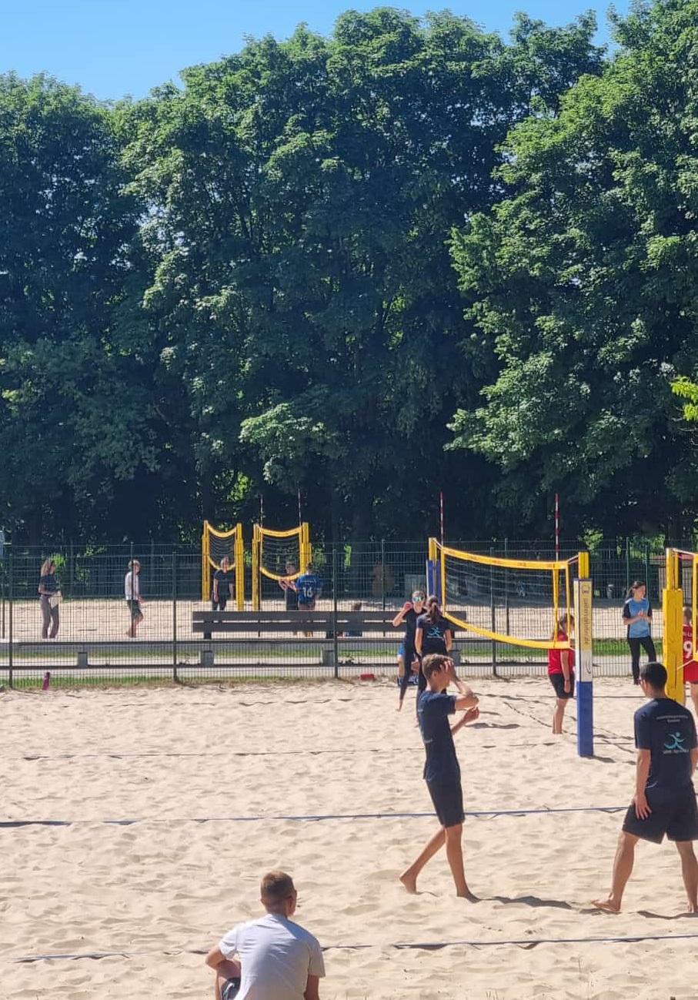
Wettkampfbericht
– Beachvolleyballturnier in Paderborn am 19.05.2025
Am Montag,
den 19. Mai 2025, fand bei strahlendem Sonnenschein und sommerlichen
Temperaturen das Beachvolleyballturnier der Wettkampfklasse II in Paderborn
statt. Fünf motivierte Schulmannschaften aus der Region traten gegeneinander
an, um sich auf dem sandigen Spielfeld spannende Duelle zu liefern.
Die Anreise
erfolgte für unsere Mannschaft bequem und umweltfreundlich per Zug. Schon auf
der Fahrt war die Vorfreude spürbar – das Team war gut gelaunt und
hochmotiviert.
Das Turnier
begann gegen 10 Uhr auf der Beachvolleyballanlage Paderauenpark. Die
Bedingungen waren ideal: blauer Himmel, kaum Wind und gut gepflegte Felder
boten perfekte Voraussetzungen für einen gelungenen Wettkampftag.
Im Modus
"Jeder gegen Jeden" duellierten sich die Teams. Viele Spiele
verliefen äußerst knapp und wurden erst im Tie-Break entschieden. Besonders
hervorzuheben ist die faire und sportlich hochwertige Atmosphäre auf und neben
dem Feld – sowohl Spielerinnen und Spieler als auch Betreuer zeigten sich von
ihrer besten Seite.
Unsere
Mannschaft nahm zum ersten Mal an dieser Veranstaltung teil. Mit einem Sieg und
drei Niederlagen erreichte sie einen respektablen vierten Platz – ein Ergebnis,
das im kommenden Schuljahr verbessert werden soll.
Gegen 14:30
Uhr endete der Turniertag mit der Siegerehrung. Alle Teilnehmer erhielten eine
Urkunde und wurden mit Applaus für ihre Leistungen gewürdigt.
Die
Heimreise per Zug verlief reibungslos und rundete einen gelungenen Wettkampftag
ab. Das Beachvolleyballturnier in Paderborn war ein sportliches Highlight und
hat bei allen Beteiligten Lust auf mehr gemacht – wir freuen uns schon auf das
nächste Mal!
@Sport, @Partnerschuledes, @BeachvolleyballSports
@2025-05-20
@2025-12-31
IDAHOBIT 2025 - Ein Zeichen setzen!
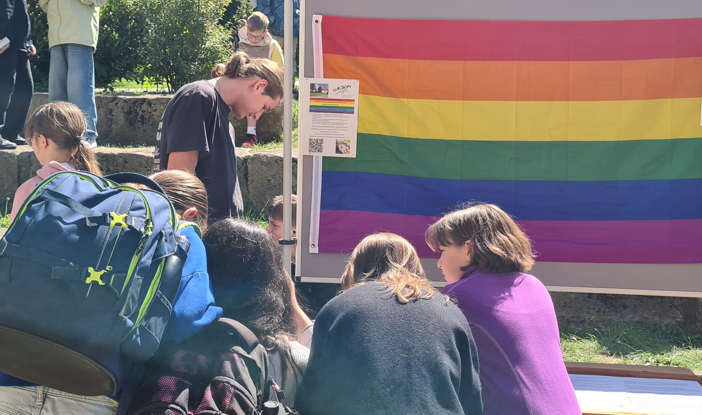
@2025-05-16
@2025-12-31
#grabbegymnasium #bfd #bufdi #wirsuchendich #schule #schüler #fsj #sozialearbeit
@2025-05-16
@2025-12-31
Schulradeln
Es können Schüler:innen, Eltern, Lehrkräfte, Mitarbeitende der Schule im Team Christian-Dietrich-Grabbe-Gymnasium mitmachen und Kilometer sammeln oder direkt bei der Fahrradfahrt tracken. Mal sehen, wie viele Kilometer zusammen kommen!
@Sport
@2025-05-09
@2025-12-31
Grabbe Alumni
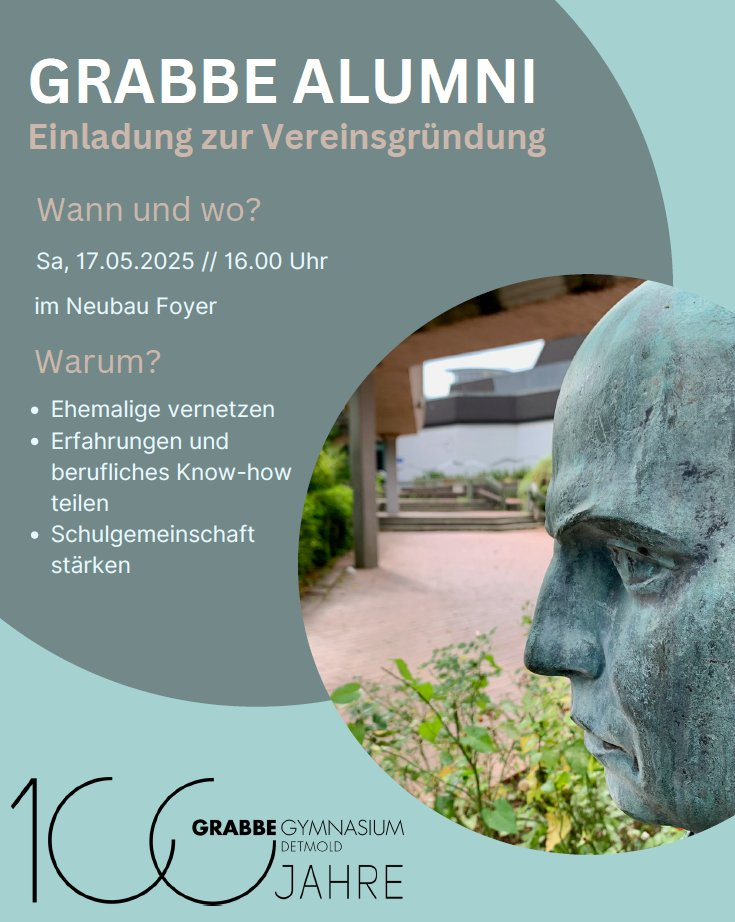
Liebe ehemalige Schüler:innen, liebe ehemalige Kolleg:innen, liebe Freund:innen unserer Schule,die Zeit am Grabbe verbindet – mit Erinnerungen,Freundschaften und Erfahrungen, die oft weit über dieSchulzeit hinaus wirken. Um diese Verbindung lebendig zu halten und den Kontaktuntereinander wie auch zur Schule zu pflegen, möchten wireinen Alumni-Verein gründen.Dazu laden wir euch herzlich ein!Damit wir besser planen können, bitten wir um eine kurze Rückmeldung bis zum 10.05.2025 an:alumni@grabbe.nrw.schule
@Jubiläum, @Alumni
@2025-05-06
@2025-12-31
Sportabzeichenehrung Grabbe Gymnasium Detmold
Feierliche
Sportabzeichenehrung im Kreishaus Detmold – Grabbe-Gymnasium unter den Geehrten
Detmold, 29.
April 2025 – Am
Dienstagabend fand im Kreishaus Detmold die diesjährige Sportlerehrung im Kreis
Lippe statt. In feierlicher Atmosphäre wurden auch alle Schulen und Vereine ausgezeichnet,
die sich im Rahmen des Sportabzeichenprogramms besonders engagiert haben. Mit dabei
war auch das Grabbe-Gymnasium Detmold. Nach Platz 3 im vergangenen Jahr konnte
in diesem Durchgang der 2. Platz in der Kategorie „weiterführende Schulen bis
800 Schüler*innen“ erreicht werden.
Der Landrat
persönlich nahm an der Veranstaltung teil und überreichte die Urkunden an die
Vertreterinnen und Vertreter der Schulen. In seiner Ansprache lobte er das
sportliche Engagement der Schülerinnen und Schüler sowie der betreuenden
Lehrkräfte. "Das Deutsche Sportabzeichen steht nicht nur für körperliche
Fitness, sondern auch für Teamgeist, Ausdauer und Fairness – Werte, die im
schulischen Alltag eine große Rolle spielen", betonte er.
Die
Veranstaltung wurde durch ein kleines, aber feines Buffet mit Fingerfood und
Getränken abgerundet, das Gelegenheit zum Austausch in ungezwungener Atmosphäre
bot. Das Grabbe-Gymnasium zeigte sich stolz über die Auszeichnung und kündigte
an, auch im kommenden Jahr wieder aktiv am Sportabzeichenprogramm teilnehmen zu
wollen, mit Blick auf den 1. Platz.
@Sport, @PartnerschuledesSports
@2025-05-02
@2026-07-28
Skifreizeit in Neukirchen
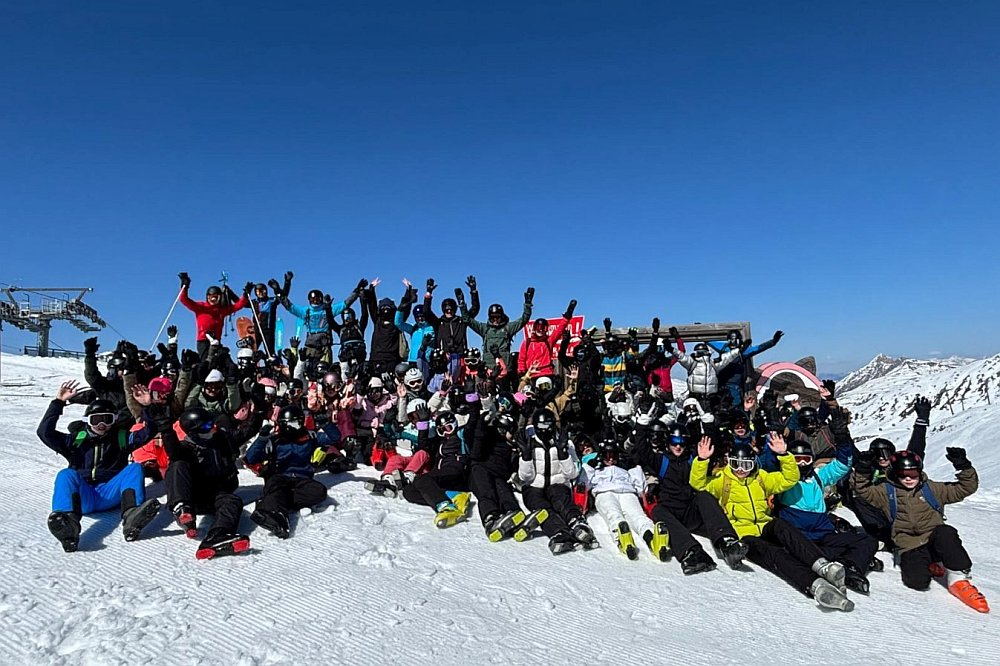
@Ski
@2025-04-13
@2025-12-31
Grabbiani Romam invadunt a.d. 2025
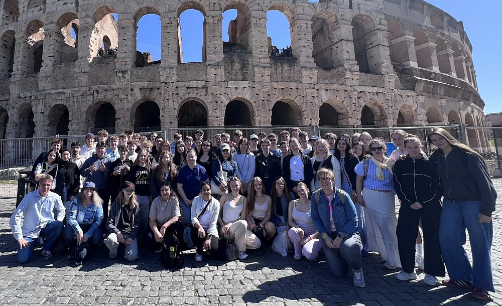
@Latein
@2025-04-13
@2025-12-31
@Kunst, @Vernissage
@2025-03-29
@2025-12-31
Handballturnier der 7. Klassen

Am 27.03.
fand nach langer Zeit wieder das Handballturnier der 7. Klassen statt.
Mit viel
Begeisterung und gut vorbereitet gingen unsere 7er am Donnerstag an den Start.
Es spielten
dabei jeweils ein Mädchen- und Jungenmannschaft nach vereinfachten
Handballregeln gegen jede der Parallelklassen.
Deutlich zu
sehen war, dass im Umfeld des Grabbe viele unserer Schülerinnen und Schüler in
den Handballvereinen verankert sind und ihr Fähigkeiten einbringen konnten, so
dass attraktive und spannungsvolle Spiele zu sehen waren. Siegermannschaft bei
den Mädchen wurde das Team der 7s (Foto), auch bei den Jungen konnte sich die
7s durchsetzen.
Danke an
dieser Stelle auch bei den SchiedsrichterInnen aus den älteren Klassen und dem
Schulsanitätsdienst, ohne die das Turnier nicht hätte stattfinden können.
@Sport, @PartnerschuledesSports, @Handball
@2025-03-28
@2025-12-31
@Musik, @Abitur
@2025-03-17
@2025-12-31
Grabbianer*innen erzielen herausragende Ergebnisse im Stabhochsprung bei den Westfalenmeisterschaften
Bei den diesjährigen Westfalenmeisterschaften im
Stabhochsprung haben die Athletinnen und Athleten des Grabbe-Gymnasiums durch
herausragende Leistungen überzeugt. Die erfolgreiche Kooperation zwischen dem
Grabbe-Gymnasium und der Stabhochsprungabteilung der LG Lippe-Süd zeigt
weiterhin positive Ergebnisse und ist nun bereits im vierten Jahr. Die
Trainerinnen Tina Rother und Desiree Bösebeck-Singh, selbst ehemalige
Grabbianerinnen, können auf eine äußerst erfolgreiche Hallensaison
zurückblicken und zahlreiche Erfolge verbuchen.
Besonders hervorzuheben ist die Leistung von Lale Luise
Mesch (8ms), die derzeit den zweiten Platz in der deutschen Rangliste der
Altersklasse W14 belegt. Bei den Westfalenmeisterschaften im Januar erreichte
sie zwar „nur“ den dritten Platz, überflog jedoch erstmals die magische
3-Meter-Marke. Bei den Ostwestfalenmeisterschaften steigerte sie ihre
Bestleistung auf starke 3,20m. Auch Marie Niemann (8ms - W14) zeigte eine
beeindruckende Saison, übersprang 2,85m und sicherte sich den fünften Platz bei
den Westfalenmeisterschaften. Alea Imeraj (8ms – W14) sprang im letzten
Wettkampf 2,45m, konnte aber krankheitsbedingt nicht an den
Westfalenmeisterschaften teilnehmen.
Ein weiterer großer Erfolg gelang Merle Driedger (W12, 6k)
am vergangenen Wochenende: Sie wurde Westfalenmeisterin und verbesserte ihre
persönliche Bestleistung auf 2,30m. Ihre Klassenkameradin Lotta Gühne sicherte
sich mit 2,20m den Vizemeistertitel. Auch Leila Nurullina (W13) und Till
Zörlein (M13, beide 7m) glänzten mit starken Leistungen: Leila übersprang 2,40m
und belegte den vierten Platz, während Till mit 2,00m den dritten Platz
erreichte.
Bevor die Athletinnen und Athleten in die Vorbereitung auf die Sommersaison starten, steht noch ein internationales Highlight auf dem Programm: Ein Wettkampf im niederländischen Sittard gibt ihnen die Möglichkeit, sich mit internationaler Konkurrenz zu messen.
Foto 1 (von Tom Finke) Lale Luise Mesch überfliegt 3,20m und ist derzeit die zweitbeste Springerin Deutschlands in ihrem Alter.
@Sport, @PartnerschuledesSports, @StabhochsprungLippe
@2025-03-10
@2025-12-31
Mitgliederversammlung des Fördervereins
Einladung zur Mitgliederversammlung des Fördervereins
am Dienstag, 11. März 2025, 18:30 Uhr
im Selbstlernzentrum des Grabbe-Gymnasiums
Tagesordnung
1. Begrüßung
2. Genehmigung des Protokolls der letzten Mitgliederversammlung
3. Bericht des Vorstands über das abgelaufene Jahr und die geförderten Projekte
4. Bericht der Kassenführerin
5. Bericht der Kassenprüfer
6. Entlastung des Vorstands und der Kassenprüfer
7. Wahl des Vorstands
8. Wahl einer Kassenprüferin/ eines Kassenprüfers
9. Aussprache, Anregungen, Vorschau
10. Verschiedenes
Mit freundlichen Grüßen
gez.
Christian Grebe
@2025-02-26
@2025-12-31
Zeichen gegen das Vergessen
@Israel-AG
@2025-02-25
@2025-12-31
Wir begeistern Sportlerinnen und Sportler am Grabbe-Gymnasium
Am Grabbe-Gymnasium brennen wir für den Sport – und dieses Feuer wollen wir weitertragen! Gemeinsam mit dem Sportverband haben wir uns gefragt: Wie können wir noch mehr Menschen für Bewegung, Teamgeist und Spitzenleistungen begeistern? Als Partnerinnen und Partner des Leistungssports sind wir nicht nur selbst mit Herzblut dabei, sondern möchten auch unsere Schülerinnen und Schüler mitreißen.
Teamwork, Fairness und Ehrgeiz sind Zukunftskompetenzen – und genau diese Werte leben wir hier vor. Mit starken Partnern an unserer Seite, im Heimspiel am Markplatz mit den Bundesliga-Vereinen aus Blomberg, Lemgo, Paderborn und Bielefeld, setzen wir neue Impulse. Unser jüngstes Projekt: Ein sportliches Schaufenster, das nicht nur unsere Erfolge zeigt, sondern auch die Möglichkeit bietet, mit uns in Kontakt zu treten.
Hier feiern wir Siege, würdigen das Engagement unserer Athletinnen und Athleten sowie ihrer Trainerinnen und Trainer und laden alle ein, Teil unserer bewegten Schulgemeinschaft zu werden. Denn Sport ist mehr als Wettkampf – er verbindet, fordert und fördert. Und wir am Grabbe-Gymnasium sind mittendrin!
@Sport, @PartnerschuledesSports, @SportverbandDetmold
@2025-02-25
@2025-12-31
Basketballturnier der Jahrgangsstufe 8
Das 3-gegen-3-Basketballturnier
der 8. Klassen fand am 18. Februar 2025 am Grabbe-Gymnasium statt. Die Schülerinnen
und Schüler traten in spannenden Matches gegeneinander an und sorgten für eine
mitreißende Atmosphäre in der Sporthalle. Nach intensiven Spielen setzte sich
die Klasse 8ms als Gesamtsieger durch. Die Mädchen der 8k überzeugten mit einer
starken Leistung und gewannen ihre Kategorie, während bei den Jungen die 8ms
triumphierte. Dank der Gesamtpunktzahl sicherte sich die 8ms den Turniersieg, gefolgt
von der 8k auf dem zweiten und der 8gn auf dem dritten Platz.
Ein besonderer Dank gilt Frau
Walla, die mit ihrem Engagement und ihrer Organisation das Turnier erst möglich
gemacht hat. Das Turnier verlief reibungslos und wurde durch die Unterstützung
der EF-Schiedsrichtern und Klassenlehrer ermöglicht. Die Schulgemeinschaft
freute sich über ein gelungenes Sportereignis, das Fairplay und Teamgeist förderte.
Wir gratulieren dem Siegerteam
und freuen uns schon auf das nächste Turnier.
@Sport, @PartnerschuledesSports
@2025-02-21
@2025-12-31
Erfolgreiche Teilnahme am HEUREKA! Schülerwettbewerb 2025
Auch in diesem Jahr haben wieder Schüler:innen des Grabbe Gymnasiums erfolgreich am HEUREKA! Schülerwettbewerb "Mensch und Natur 2025" teilgenommen.
Besonders erfolgreich waren die Schüler:innen der Klassen 6ms und 6gn. Das Foto zeigt die Preisträgerinnen dieser Klassen. Herzlichen Glückwunsch!
#Naturwissenschaften, #Wettbewerb
@2025-02-17
@2025-12-31
@Weidmüller, @MINT
@2025-02-15
@2025-12-31
Sportlichste Schule Lippes 2024
Eine besondere Auszeichnung für herausragende sportliche Leistungen Sport verbindet, motiviert und fördert wichtige Werte wie Teamgeist, Ehrgeiz und Durchhaltevermögen. Dass an unserer Schule genau diese Werte gelebt werden, zeigt die besondere Ehrung, die wir in diesem Jahr erhalten: Unsere Schule wird als "Sportlichste Schule Lippes 2024" ausgezeichnet! Diese Ehrung ist das Ergebnis des souveränen Engagements unserer Schüler:innen in zahlreichen Wettkämpfen und Disziplinen – und das trotz der Herausforderungen der letzten Jahre. Auch nach den Einschränkungen durch Corona haben sich unsere Teams nicht unterkriegen lassen, sondern sind mit ungebrochener Motivation an den Start gegangen.
Ein breit aufgestelltes Sportangebot
Unser sportlicher Erfolg basiert nicht nur auf den klassischen Profilklassen, sondern auf der Leistung vieler verschiedener Teams und Individualsportler:innen, die ihre Schule mit Stolz vertreten haben. Von Schach über Volleyball, Fußball bis hin zur Leichtathletik – unsere Schule zeigt eine beeindruckende Bandbreite an sportlichen Aktivitäten. Dabei geht es nicht nur um den Wettkampf selbst, sondern um die Werte, die der Sport vermittelt: Mannschaftssport und Teamarbeit, Zielsetzung und Fokussierung sowie den Umgang mit Siegen und Niederlagen.
Dank an unsere Unterstützer
Ein besonderer Dank gilt dem Förderverein, der mit seinem Engagement vieles erst möglich macht. Durch finanzielle Unterstützung, trägt er maßgeblich dazu bei, dass unsere Schüler:innen die besten Voraussetzungen für sportliche Erfolge erhalten. Ebenso ein Dank an die Fachschaft Sport, durch eure Teilnahme an zahlreichen Wettkämpfen und euer kontinuierliches Training ermöglicht ihr unseren Schüler: innen sich sportlich weiterzuentwickeln, ihre Grenzen zu testen und wertvolle Erfahrungen zu sammeln.
Ehre, wem Ehre gebührt
Die Ehrung als „Sportlichste Schule Lippes 2024“ ist nicht nur eine Auszeichnung für unsere sportlichen Leistungen, sondern auch ein Zeichen der Anerkennung für das Durchhaltevermögen, den Ehrgeiz und den Einsatz aller Beteiligten. Im Rahmen der Sportehrung werden wir mit einer Ehrenurkunde und einem Pokal für unser herausragendes sportliches Engagement gewürdigt. Liebe Schüler:innen der Wettkampfteams aller Grabbe-Mannschaften, dank eures unermüdlichen Einsatzes bei zahlreichen Wettkämpfen im vergangenen Schuljahr habt ihr diese Auszeichnung für unsere Schule möglich gemacht. Ihr seid es, die den Sportgeist an unserer Schule lebendig halten und zeigen, dass sportliche Aktivitäten einen wichtigen Platz im schulischen Alltag einnehmen. Herzlichen Glückwunsch an alle Sportler:innen – diese Ehrung gehört euch!
@Sport, @Lippe, @sportlichste Schule
@2025-02-14
@2025-12-31
Zum Anlass des internationalen Safer Internet Day 2025 findet auch in diesem Schuljahr wieder der Grabbe-Safer-Internet-Day statt. Auch in diesem Jahr verläuft der Safer Internet Day unter dem Motto „Together for a better internet“ und soll viele Menschen und Institutionen weltweit motivieren, die Sicherheit im Internet zu verbessern. Besonders Kinder und Jugendliche sollen im selbstbestimmten und verantwortungsvollen Umgang mit digitalen Medien unterstützt werden.
Dieses Ziel verfolgt das Grabbe-Gymnasium seit vielen Jahren mit seinen Aktionen in den Jahrgangsstufen 5 und 6. Entsprechend führen wir unseren diesjährigen Grabbe-Safer-Internet-Day am 11. und 12. Februar in diesen beiden Jahrgängen durch.
Am Grabbe-SID beschäftigen sich die Schüler:innen mit verschiedenen Workshops rund um Internet, Smartphone, soziale Netzwerke und Cybermobbing. Während der Schwerpunkt in der Jahrgangsstufe 5 bei der Internetrecherche und sicheren Passwörtern liegt, beschäftigt sich die Jahrgangsstufe 6 damit, wie man mit Influencern, Apps, Onlinespielen und vielem mehr umgeht. Alle Workshops werden von Schülerinnen und -schülern der Oberstufe durchgeführt oder begleitet. Mitgestalten wird die Veranstaltung in der Jahrgangsstufe 6 auch in diesem Jahr die Medienpädagogin Sabine Schattenfroh. Finanziell wird diese Veranstaltung vom Förderverein des Grabbe-Gymnasiums unterstützt.
Wir freuen uns auf den Grabbe-Safer-Internet-Day 2025!
Für das SID-Team
Julia C. Knüppel
@Medienbildung @SID @Informatik
@2025-02-11
@2025-12-31
Wechsel in der Schulleitung: Kontinuität und Zukunftssicherung am Grabbe-Gymnasium
Zum 100-jährigen Jubiläum des Grabbe-Gymnasiums in Detmold steht ein bedeutender personeller Wechsel an. Die bisherige kommissarische Schulleiterin Anja Vothknecht wird zum Halbjahreswechsel die Leitung des Gymnasiums in Horn übernehmen.
Die Nachfolge ist bestens vorbereitet: Dr. Claus Hilbing, der bereits seit zwei Jahren als stellvertretender Schulleiter im Team mit Anja Vothknecht tätig war, übernimmt für eine Übergangszeit die kommissarische Schulleitung. Seit 2004 ist er am Grabbe-Gymnasium aktiv und hat als didaktischer Koordinator die Schulentwicklung maßgeblich geprägt. Zudem sammelte er zwischen 2018 und 2021 wertvolle internationale Erfahrung als stellvertretender Schulleiter an der Deutschen Schule in Mailand. Hilbing betont: „In den letzten beiden Jahren haben wir das Grabbe-Gymnasium mit den kulturellen Institutionen der Stadt Detmold vernetzt, um unsere Schülerinnen und Schüler nachhaltig für die Zukunft zu stärken.“ Zu den Kooperationspartnern gehören unter anderem die Hochschule für Musik, das Landestheater, die Johannes-Brahms-Musikschule sowie Unternehmen wie Weidmüller und Wortmann. Auch internationale Partnerschaften mit Einrichtungen in St. Omer, Israel und Washington sind tragende Säulen der kulturellen Vernetzung.
Unterstützt wird Hilbing von Tanja Brentrup-Lappe, die die kommissarische stellvertretende Schulleitung übernimmt. Sie bringt umfangreiche Erfahrung in der konzeptionellen Arbeit und in der Organisation der gymnasialen Oberstufe mit.
Das Leitungsteam des Grabbe-Gymnasiums wurde in den letzten beiden Jahren gezielt erweitert, um die Schule resilienter und zukunftsfähiger aufzustellen. Stefan Hecker verstärkt als neuer Koordinator die Erprobungsstufe, während Dr. Hans-Martin Chee in der Mittelstufe gemeinsam mit Barbara Schroeder und Silke Chtchian die umfangreichen Aufgaben der Jahrgänge 7 bis 10 verantwortet. Die Oberstufe wird weiterhin von Barbara Mannebach und dem bewährten Stufenteam begleitet. Die komplexe Personalplanung liegt in den Händen von Felix Schilling, der mit Vanessa Krug und Dirk Hoffmann eng zusammenarbeitet.
Einblicke in das engagierte Kollegium und die Strukturen der Schule bietet die Homepage des Gymnasiums.
Die offizielle Ausschreibung der Schulleitungsstellen erfolgt in kürzester Zeit in enger Abstimmung mit der Bezirksregierung, um eine rasche Neubesetzung und die Sicherstellung der Kontinuität am Grabbe-Gymnasium zu gewährleisten.
@2025-02-10
@2025-12-31
Tanzen gegen Gewalt an Frauen und Mädchen
@OBR2025
@2025-02-06
@2025-12-31

@Musik, @Kunst
@2025-02-03
@2025-12-31
@Musik, @HfM
@2025-01-28
@2025-12-31

Unsere Schule hat ihre eigene KI!
Unserer Schule hat etwas Beeindruckendes geschaffen: eine KI, die Fragen beantwortet und mit euch interagiert! Ihr könnt der KI Fragen zu verschiedenen Themen stellen, und sie liefert euch spannende Antworten.
Doch dabei gibt es eine wichtige Erkenntnis: Auch Künstliche Intelligenzen wie ChatGPT oder unsere schulische KI macht nicht immer alles richtig. Die Antworten basieren oft auf Wahrscheinlichkeiten und sind nicht immer aktuell oder korrekt. Deshalb ist es wichtig, die Informationen kritisch zu hinterfragen – eine wertvolle Fähigkeit in unserer modernen, digital geprägten Welt.
Trotzdem ist es eine beeindruckende technische Leistung, eine eigene KI zu entwickeln und zu programmieren. Finn Busse und Maximilian von Beck haben dabei ihr Können und Engagement gezeigt und uns mit ihrer Arbeit eine spannende Möglichkeit gegeben, Künstliche Intelligenz hautnah zu erleben.
Ein herzliches Dankeschön an alle, die dieses Projekt möglich gemacht haben! Wir sind stolz auf unsere talentierten Informatikerinnen und Informatiker und freuen uns darauf, die KI im Schulalltag einzusetzen.
Probiert sie doch selbst aus und erlebt, was sie kann!
@2025-01-16
@2025-12-31
Ein Orchester verbindet Kontinente
Über 30 Jahre bewegende musikalische Freundschaft: Ein Orchester verbindet Kontinente
Seit nunmehr drei Jahrzehnten prägt eine außergewöhnliche musikalische
Partnerschaft zwischen dem Detmolder Jugendorchester und dem McLean High
School Orchestra, einem deutschen und einem amerikanischen Orchester, den
interkulturellen Austausch. Was mit einer Idee begann, hat sich zu einem
Fundament echter Freundschaft entwickelt – abseits von digitalen Medien, ganz
nah am echten Leben, getragen vom gemeinsamen Musizieren.
Im Mittelpunkt stehen dabei nicht nur die Konzerte, sondern auch die tiefgehenden
menschlichen Begegnungen. Gegenseitige Besuche, das Wohnen in Gastfamilien
und gemeinsame Aktivitäten wie Bowling oder Ausflüge – etwa in die Domstadt
Köln, ins Detmolder Schloss und zum Weserrenaissancemuseum Brake – schaffen
Verbindungen, die weit über die Musik hinausgehen. Einladungen des
Bürgermeisters und in das Konzerthaus der Hochschule für Musik Detmold lassen
das diesjährige Jahresmotto „In the tension between tradition and progress“ in
Vorträgen und Gesprächen lebendig werden.
Das große über 80 Musikerinnen und Musiker umfassende Sinfonieorchester probt
täglich an dem anspruchsvollen Konzertprogramm. Dort trifft Schuberts Sinfonie
h-Moll, die „Unvollendete,“ auf Filmmusik sowie Griegs Hyldingsnaraj auf eine
Welturaufführung einer Komposition eines Schülers des Grabbe-Gymansiums,
ganz im Sinne des diesjährigen Jahresthemas "In der Spannung zwischen
Tradition und Fortschritt". Starlet Smith und Florian Wessel leiten die Proben
und sind verantwortlich für die gemeinsame Woche in Detmold.
Diese musikalische Verbindung über Kontinente hinweg zeigt eindrucksvoll, wie
Musik Menschen zusammenbringt. Sie ist ein leuchtendes Beispiel dafür, dass
gegenseitiges Verständnis, gemeinsame Ziele und der Austausch von Erfahrungen
Brücken bauen können – Brücken, die seit 30 Jahren Bestand haben.
Das Konzert ist am Donnerstag, den 30.01.2025 um 19:30 Uhr in der Neuen Aula
des Grabbe-Gymnasiums.
Der Eintritt ist frei. Um Spenden für den Austausch wird gebeten. Wir danken der
Jeunesse Musicale Deutschland für die Förderung.
@Musik
@2025-01-26
@2025-12-31
Zentrale Gedenkveranstaltung am 27. Januar 2025, 19:30 Uhr, Neue Aula
Wir laden Sie und euch alle zur zentralen Gedenkveranstaltung für die Opfer des Nationalsozialismus am Christian-Dietrich-Grabbe-Gymnasium und zu der im Anschluss stattfindenden Eröffnung der Ausstellung „Anders als die Andern – Stigmatisiert. Verfolgt. Vergessen“ in der Wintergalerie ein.
Der 27. Januar (Tag der Befreiung des ehemaligen Konzentrationslagers Auschwitz) ist der zentrale Gedenktag für die Opfer der nationalsozialistischen Gewaltherrschaft. Es gab verschiedene Gruppen von Menschen, die von den nationalsozialistischen Verbrechen besonders betroffen waren.
In diesem Jahr erinnern wir an Ausgrenzung und Verfolgung von vergessenen Opfern der NS-Diktatur. Exemplarisch werden Biographien von Menschen präsentiert, die aufgrund ihrer politischen Haltung oder Weltanschauung, ihrer sexuellen Orientierung, abweichender Lebensformen oder körperlicher Gestalt, Krankheit oder Behinderung entrechtet, gequält, ermordet wurden.
Neben den Worten zum Gedenken erwartet Sie/euch ein Gespräch mit dem Bürgermeister Frank Hilker, die Szenische Lesung „Anders als die Andern“ und ein Podiumsgespräch mit Schüler*innen unserer Schule, Kathie Wiederkehr (Enkelin von Irma und Felix Fechenbach), Barbara Stellbrink-Kesy (Großnichte von Irmgard Heiss) und der Historikerin Gudrun Mitschke-Buchholz.
@2025-01-16
@2025-12-31
Tag der offenen Tür 2025 am Grabbe-Gymnasium
Am 11. Januar 2025 öffnete das Grabbe-Gymnasium von 9:30 bis 13:00 Uhr seine Türen, um interessierten Familien einen Einblick in die Vielfalt der schulischen Angebote zu ermöglichen.
Ein herzliches Willkommen in der neuen Aula
Der Tag begann um 9:30 Uhr mit einer zentralen Begrüßungsveranstaltung in der neuen Aula. Die Besucher:innen wurden mit einem musikalischen Auftakt durch unser SI-Orchester empfangen – und wie am Grabbe üblich – wurden hier auch alle Besucher:innen aufgefordert, mit zu musizieren. Außerdem gab es ein Kurzporträt der Schule, das die Vielfalt und Besonderheiten des Grabbe-Gymnasiums beleuchtete. Besonders inspirierend war das Interview mit zwei Schüler:innen der Klasse 5, die von ihren persönlichen Erfahrungen berichteten. Zum Abschluss sangen die Young-Grabbe-Voices noch zwei Lieder, die sinnbildlich den Zusammenhalt und die Vielfalt der Schulgemeinschaft verdeutlichten.
Gemeinschaft und Schülerengagement im Fokus
Ein Highlight des Tages war die aktive Beteiligung zahlreicher Schüler:innen an der Gestaltung der Veranstaltung. Das SI-Orchester und die Chöre trugen zur feierlichen Atmosphäre bei, während Schüler:innen die Führungen eigenständig durchführten. Diese wurden von den Lehrkräften begleitet und boten den Gästen die Möglichkeit, die Schule aus der Perspektive der Schüler:innen kennenzulernen.
Entdeckungsreise durch die Schulprofile
Ab 10:00 Uhr starteten Führungen, die in Gruppen durch die verschiedenen Profile der Schule führten. Die Eltern erhielten detaillierte Informationen zu den jeweiligen Schwerpunkten, während die zukünftigen Grabbianer:innen diese in praktischen Mitmachaktionen erleben konnten:
• Im NaWi-Bereich konnten spannende Experimente durchgeführt werden, die naturwissenschaftliche Phänomene greifbar machten.
• Im Musikprofil hatten die Kinder die Möglichkeit, verschiedene Instrumente auszuprobieren und ihre musikalische Kreativität zu entdecken.
• Der Kunstbereich beeindruckte mit kreativen Aktionen, wie der Anfertigung von Kunstwerken mit Salatschleudern.
• In der Alten Aula lud das Sportprofil die Besucher:innen zu Turnübungen und Bewegungsstationen ein.
Mitmachstationen und Beratung
Von 11:00 bis 13:00 Uhr öffneten die Mitmachstationen und Entdeckerräume, in denen Gäste tiefer in die Themen eintauchen konnten. Beratungsstände boten Eltern und Schüler:innen die Möglichkeit, offene Fragen zu klären und das passende Profil zu entdecken.
Ein gelungener Ausblick
Der Tag der offenen Tür bot den Besucher:innen nicht nur einen umfassenden Einblick in die verschiedenen Profile und Schwerpunkte der Schule, sondern auch die Möglichkeit, die besondere Gemeinschaft am Grabbe-Gymnasium hautnah zu erleben. Ein großer Dank geht an alle engagierten Lehrkräfte und Schüler:innen, die mit ihrem Einsatz diesen besonderen Tag möglich gemacht haben.
Alle unsere Besucher:innen sind herzlich eingeladen am Profilnachmittag ihr zukünftiges Profil noch genauer kennenzulernen. Am 29.01.2025 von 14:00 Uhr bis 15:30 ist Gelegenheit noch einmal vertiefend mit dem möglichen Profil zu beschäftigen und in verschiedenen Aktionen dieses näher kennenzulernen.
@Musik @Kunst @Sport @NaWi
@2025-01-14
@2025-12-31
Weihnachtscollagen
Im Projektunterricht haben Schüler und Schülerinnen der Klasse 5k lustige Weihnachtscollagen angefertigt. Wir wünschen allen ein frohes neues Jahr!
@Kunst
@2025-01-06
@2025-12-31
Ehemaligentreffen am Grabbe-Gymnasium: Ein besonderer Jahresausklang der Koop- Sport LK's
Am 20. Dezember 2024 fand das traditionelle Ehemaligentreffen der Koop-Sport- Leistungskurse am Grabbe-Gymnasium statt, zu dem alle ehemaligen Schülerinnen und Schüler der Jahrgänge 2017 bis heute herzlich eingeladen waren. Diese alljährliche Veranstaltung vor Weihnachten bot eine wunderbare Gelegenheit, alte Freundschaften aufzufrischen und um sich zumindest einmal im Jahr über vergangene Zeiten austauschen zu können.
Das Treffen begann in der Sporthalle der Schule, wo zahlreiche Ehemalige, Lehrkräfte und aktuelle Schülerinnen und Schüler zusammenkamen, um gemeinsam Volleyball zu spielen. In einer entspannten und fröhlichen Atmosphäre traten gemischte Teams gegeneinander an, bei denen der Spaß eindeutig im Vordergrund stand.
Nach dem sportlichen Teil zog die Veranstaltung an den Weihnachtsmarkt in die Innenstadt, wo sich alle Getränken zu guten Gesprächen zusammenfanden. Erinnerungen an vergangene Schulzeiten wurden geteilt, Anekdoten erzählt und die eigenen Zukunftspläne geteilt. Auch die Lehrkräfte freuten sich, ihre ehemaligen Schülerinnen und Schüler wiederzusehen und über deren Werdegänge und Pläne für die Zukunft zu erfahren.
Das Ehemaligentreffen ist inzwischen eine feste Tradition am Grabbe-Gymnasium und ein Highlight für viele in der Vorweihnachtszeit. Die Mischung aus sportlicher Aktivität und herzlichen Begegnungen macht dieses Event jedes Jahr aufs Neue besonders und zeigt, wie stark die Verbundenheit der Ehemaligen mit ihrer Schule ist.
Wir freuen uns bereits auf das nächste Jahr und hoffen, dass auch dann wieder viele bekannte Gesichter den Weg zurück ans Grabbe-Gymnasium finden werden.
@Sport @Profil @Weihnachten @Koop
@2024-12-21
@2025-12-31
Bericht über den Rottpokal am Grabbe-Gymnasium
Am 19.
Dezember 2024 fand am Grabbe-Gymnasium der alljährliche Rottpokal für
die Klassen 5 und 6 in der Sportart Fußball statt. In der Turnhalle wurde ein
spannender Wettbewerb ausgetragen, der sowohl die jungen Spielerinnen und
Spieler als auch die zahlreichen Mitschülerinnen und Mitschüler begeisterte.
Der
Wettkampf begann mit einer kurzen Begrüßung durch die Sportlehrer, die die
Bedeutung von Fairplay und Teamgeist betonten. Danach ging es direkt in die
Gruppenspiele, bei denen jede Mannschaft ihr Bestes gab, um sich für die
Finalrunden zu qualifizieren.
Bei den
Mädchen setzte sich am Ende die Klasse 5gn durch. Mit schnellen Pässen,
geschicktem Zusammenspiel und einer unermüdlichen Torhüterin gewannen sie das
Finale gegen die starke Konkurrenz aus der 6ms. Der Jubel über den Sieg war
riesig, und die Mädchen nahmen stolz ihre Urkunde entgegen.
Im Turnier
der Jungen triumphierte die Klasse 6gn. Nach einer spannenden Vorrunde
zeigten sie im Finale eine herausragende Leistung und siegten im
Siebenmeterschießen gegen die 5ms.
Neben dem
sportlichen Ehrgeiz stand vor allem der Spaß im Vordergrund. Dank der
Unterstützung der Klassenlehrer und des Sportkollegiums sowie vieler
Schülerinnen und Schüler auf der Tribüne verlief das Turnier reibungslos. Auch
die Pausen wurden genutzt, um sich bei Snacks und Getränken zu stärken.
Am Ende des
Tages waren sich alle einig: Der Rottpokal 2024 war ein voller Erfolg und ein
tolles Beispiel dafür, wie Sport die Schulgemeinschaft stärkt. Ein herzliches
Dankeschön gilt allen Beteiligten, die dieses Ereignis möglich gemacht haben!
Wir freuen
uns schon auf den nächsten Rottpokal!
@Sport, @grabbe
@2024-12-20
@2025-12-31
Weihnachtssingen für Klasse 5 und 6
Erstmalig fand am Montag für die Religionsgruppen der 5. und 6.Klassen ein Weihnachtssingen in der Erlöserkirche statt. Gelungen war dabei die Mischung aus traditionellen und modernen Weihnachtsliedern. Zur besonderen Atmosphäre hat vor allem die musikalische Begleitung der Kirchenorgel durch Stefan Hecker beigetragen. Zwischendurch wurde die Weihnachtsgeschichte von mutigen Schülerinnen aus der 5.Klasse vorgelesen.
@Religion
@2024-12-19
@2026-01-07
„100 Jahre – 100 Cent“
Grabbes Beitrag zum WDR2-Weihnachtswunder
Kurz vor den Weihnachtsferien überbrachte die SV des Grabbe-Gymnasiums die Spendensumme von 825 Euro an das WDR2-Weihnachtswunder, das dieses Jahr unter dem Motto „Gemeinsam gegen den Hunger in der Welt“ stand.
Als bekannt wurde, dass das WDR2-Weihnachtswunder in diesem Jahr in Paderborn seine Zelte aufschlagen würde, war für viele Grabbianerinnen und Grabbianer klar, dass man die Aktion unbedingt unterstützen und kurz vor Weihnachten gemeinsam ein starkes Zeichen der Menschlichkeit senden möchte. Unter Federführung der SV wurde im Hinblick auf den im kommenden Jahr anstehenden 100. Geburtstag unserer Schule die Aktion „100 Jahre – 100 Cent“ ins Leben gerufen, bei der alle Mitglieder der Schulgemeinschaft dazu aufgerufen wurden, jeweils 100 Cent zu spenden. Viele Schülerinnen und Schüler, aber auch Familien und Freunde sowie Lehrerinnen und Lehrer leisteten einen Beitrag und gaben häufig auch mehr als 100 Cent für den guten Zweck.
Am Morgen des 18. Dezember machte sich eine kleine Delegation der SV mit dem Zug auf den kurzen Weg nach Paderborn, wo sie die stattliche Spendensumme von 825 Euro persönlich am sogenannten Glashaus, dem WDR2-Studio auf dem Paderborner Domplatz, überreichte. Die gesamte Spendensumme, die in diesem Jahr bei unglaublichen 12.187.391 Euro liegt, wird dem Aktionsbündnis „Aktion Deutschland hilft“ zur Verfügung gestellt, um weltweit verschiedene Projekte zur Unterstützung von Menschen, denen es materiell nicht so gut geht wie uns, nachhaltig zu fördern.
Zufrieden, beeindruckt und beseelt vom Ambiente und dem vorweihnachtlichen, friedlichen Geist rund um das WDR2-Weihnachtswunder machte sich die SV am Nachmittag auf den Rückweg nach Detmold.
Weitere Informationen zum WDR2-Weihnachtswunder gibt es unter https://www1.wdr.de/radio/wdr2/aktionen/weihnachtswunder/das-wdrzwei-weihnachtswunder-zweitausendvierundzwanzig-100.html
@solidarität @winterzauber
@2024-12-19
@2025-12-31
Papageno zum Mitmachen: Ein Nikolauskonzert, das begeistert
Passend zum Nikolaustag 2024 verwandelte sich die Aula des Grabbe-Gymnasiums in einen lebendigen Konzertsaal voller Musik und Begeisterung. Rund 550 Grundschüler:innen aus Detmold waren eingeladen, dass traditionelle Nikolauskonzert am Grabbe zu besuchen. Dabei erlebten sie in zwei Aufführungen ein besonderes musikalisches Highlight: Ein interaktives Konzert, bei dem die Musik aus Mozarts „Zauberflöte“ nicht nur gehört, sondern auch mitgestaltet wurde.
Das SI-Orchester des Grabbe-Gymnasiums unter der Leitung von Florian Wessel schaffte es, die jungen Zuhörer:innen von der ersten Note an zu fesseln. Mit den berühmten Melodien wie Papagenos Lied wurden die Kinder aktiv einbezogen: Sie durften mitsingen, Bewegungen zur Musik ausführen und einige sogar den Taktstock schwingen, um selbst das Orchester zu dirigieren. Besonders die Möglichkeit, einmal in die Rolle eines Dirigenten zu schlüpfen, sorgte für leuchtende Augen und fröhliche Gesichter.
„Es war toll zu sehen, wie begeistert die Kinder dabei waren“, resümierte Florian Wessel, der nicht nur die musikalische Leitung innehatte, sondern auch das gesamte Konzert moderierte. Dabei verband er die festliche Atmosphäre geschickt mit einem spielerischen Bildungsaspekt, der den Kindern die Welt der klassischen Musik näherbrachte.
Zum Abschluss gab es als Erinnerung für jedes Kind einen festlichen „Grabbe-Musik-Weihnachtssticker“, der sicherlich auch zu Hause an das besondere Erlebnis erinnert.
Das Grabbe-Gymnasium freut sich, viele der Grundschüler:innen bald wiederzusehen: Am Tag der offenen Tür am 11. Januar 2024 von 9:30 bis 13 Uhr haben Interessierte die Gelegenheit, die Schule näher kennenzulernen und sich von der Vielfalt des musikalischen und schulischen Angebots zu überzeugen.
Die festliche Atmosphäre, die Freude am Mitmachen und die Nähe zur Musik machten das Nikolauskonzert 2024 zu einem besonderen Erlebnis – nicht nur für die Kinder, sondern auch für die Musiker:innen des SI-Orchesters. Ein gelungener Auftakt in die Weihnachtszeit, der noch lange nachklingen wird.
@Musik
@2024-12-08
@2025-12-31
Neuer 3D-Drucker für die Naturwissenschaften
#Chemie, # Physik, #Biologie, #Informatik, #Naturwissenschaften
@2024-11-27
@2025-12-31
@2024-11-27
@2025-12-31
Darum sollten Kinder Musik-Instrumente lernen
Klicke auf das Bild, um den Beitrag von Terrra X bei Facebook zu sehen!
@Musik
@2024-11-23
@2025-12-31
Bericht vom Spielenachmittag der Klasse 5 MS am
Grabbe-Gymnasium
Am
13. November 2024 fand in der alten Aula des Grabbe-Gymnasiums ein besonderer
Spielenachmittag statt, zu dem die Schülerinnen und Schüler der Klasse 5 MS
sowie ihre Eltern eingeladen waren. Besonders aus einem ganz bestimmten Grund-
alle mitgebrachten Spiele waren „medienfrei und nicht digitalisiert“. Die
Veranstaltung diente nicht nur dem gemeinsamen Spaß, sondern auch der Förderung
des Miteinanders und der Stärkung des Klassenverbunds.
Die
Aula war hierfür mit Gruppentischen vorbereitet, und ein abwechslungsreiches
Angebot an Spielen wartete auf die Teilnehmer. Von klassischen Brettspielen wie
„Mensch ärgere dich nicht“ und „Schach“ bis hin zu modernen
Gesellschaftsspielen war für jeden Geschmack etwas dabei. Die Spiele wurden von
den Schülerinnen und Schülern organisiert, die zuvor während der Schulzeit die
mitzubringenden Lieblingsspiele vorgestellt hatten.
Besonders
gut kam das kooperative Spiel „Werwölfe“ an, bei dem die gesamte Gruppe
gemeinsam mitspielen konnte. Auch Eltern ließen sich begeistern und nahmen zu
Gesprächen untereinander teil, was zu einem lebhaften und fröhlichen Austausch
zwischen Erwachsenen und Kindern führte.
Für
das leibliche Wohl sorgte ein kleines Buffet mit Kuchen, Snacks und Getränken,
das von den Eltern der Kinder organisiert wurde. In einer gemütlichen
Atmosphäre genossen alle Anwesenden die gemeinsame Zeit.
Zum
Abschluss bedankten sich die Elternsprecher bei allen Beteiligten für die
Unterstützung und das Engagement. Der Spielenachmittag wurde von allen Seiten
als voller Erfolg gewertet, und viele wünschten sich eine Wiederholung.
Die
Klasse 5 MS zeigte an diesem Nachmittag eindrucksvoll, wie wichtig
gemeinschaftliche Aktivitäten für den Zusammenhalt und das Wohlbefinden aller
Beteiligten sind.
Bild erstellt mit MS Copilot
@2024-11-20
@2025-12-31
Exkursion des Bio-LKs
Halloween-Party für 5-7
Liebe Schüler:innen und Erziehungsberechtigte,
die Schülervertretung veranstaltet in diesem Jahr
eine Halloween-Aktion für die Schülerinnen und Schüler der Jahrgänge 5 bis 7
mit Schnitzeljagd, Kostümwettbewerb und vielem mehr. Ihre Kinder haben bereits
die Einladung über IServ erhalten. Zu Ihrer Kenntnisnahme finden Sie die
Einladung im Folgenden.
Wir hoffen auf eine rege Teilnahme und tolle
Kostüme!
Mit freundlichen Grüßen
die SV und die Schulleitung des Grabbe-Gymnasiums
@2024-10-11
@2025-12-31
Auszeichnung als Deutsche Schachschule
Das Grabbe-Gymnasium wurde als Deutsche Schachschule ausgezeichnet, insbesondere für seine herausragende Arbeit in der Förderung von Jugendlichen im Schachsport. Ehrenamtliche Trainer engagieren sich am Nachmittag, um die Schüler in Turnieren zu betreuen und sie auf ihrem Weg im Schachspiel zu fördern. Diese Arbeit hat bereits erste Erfolge erzielt, da das Gymnasium bereits Meisterschaften gewinnen konnte.
@2024-10-11
@2025-12-31
Besuch bei fairtrade.merch


@fairtrade
@2024-10-01
@2025-12-31
Starker Auftritt unserer Mannschaften

Westfalenmeisterschaft Leichtathletik in Bünde:
Am vergangenen Mittwoch fanden die Westfalenmeisterschaften in der Leichtathletik der Wettkampfklasse IV in Bünde statt. Es traten insgesamt 23 Mannschaften gegeneinander an, die sich im letzten Schuljahr bei den Kreismeisterschaften qualifiziert haben. Unsere Schule war mit zwei Teams vertreten und kann auf hervorragende Leistungen zurückblicken.
Zu Team 1 gehörten Greta Spieß, Alea Imeraj, Lale Mesch, Phoebe Dißmann, Marie Niemann, Elisabeth Grote, Peter Schepmann, Ben Krome, Linus Pöhl, Paul Carl, Tim Budde und Tim Eidinger. In Team 2 wirkten Leila Nurullina, Marie Warzecha, Inga Ringel, Marla Pohlmann, Jara Girod, Mia Krause, Jan Parusch, Wisam Aldolli, Lias Wedel, Aurelian May, Roman Peters und Neo Elkenkamp (Ersatz Elsa Hansen und Til Zörlein) mit.
Besonders stolz sind wir auf das Team Grabbe 1, das den 1. Platz vor dem Königin-Mathilde-Gymnasium aus Herford und dem Besselgymnasium aus Minden erreichen konnte. In den Disziplinen Wurf, Staffel, Weitsprung, Stoß und Hochsprung wurden neue Bestleistungen erzielt. Die starken Leistungen beim 8-Minuten-Lauf rundeten den erfolgreichen Wettkampf ab. Auch das Team Grabbe 2 zeigte eine starke Leistung und belegte einen guten 11. Platz. Dieses Team bestand größtenteils aus dem jüngeren Jahrgang, welcher im laufenden Schuljahr nochmals bei den Kreismeisterschaften antreten darf.

Ein besonderer Dank geht an Frau Rawert, die seit Jahren mit großem Engagement die AG leitet und unsere Schülerinnen und Schüler mit intensivem Training auf diesen Erfolg vorbereitet hat. Dieser Erfolg ist sehr besonders und hätte als Abschluss für Frau Rawert nicht schöner sein können.
@Sport @Leichtathletik
@2024-09-18
@2025-12-31
Einschulung am Grabbe-Gymnasium

80 neue Grabbianer:innen sind am Donnerstag, 22. August, in den neuen Jahrgang 5 am Grabbe gestartet. So ein Neuanfang ist etwas ganz Besonderes, und so haben wir den Tag auch besonders gestaltet für neuen Fünfer:innen: Er begann mit einem Gottesdienst in der Erlöserkirche am Markt, den Schüler:innen des evangelischen Religionsunterricht aus dem 6. Jahrgang vorbereitet hatten. „Voller Selbstvertrauen auf dem Weg zu neuen Zielen“, das war die Botschaft für die Kinder, die die nächsten 9 Jahre am Grabbe lernen und dabei bestimmt viele neue Ziele erreichen werden. Einige Symbole für das Selbstvertrauen, das sie dazu benötigen, steckten in einem Mini-Rucksack, den jedes Kind im Gottesdienst überreicht bekam: einen Stein, der daran erinnert, dass Schwierigkeiten zu Herausforderungen werden können, die man meistert und die einen stärker machen, und eine Muschel, die dafür steht, dass Gott alle Wege mitgeht und niemand allein ist.
Die anschließende Einschulungsfeier in der Neuen Aula war bunt und fröhlich: Nach der Begrüßung durch die stellvertretende Schulleiterin Frau Vothknecht wurden alle Kinder auf der Bühne mit Handschlag von der Schulleitung und der Klassenleitung willkommen geheißen und stellten sich zu einem ersten Klassenfoto auf, bevor sie mit den Klassenleitungen die neuen Klassenräume kennen lernten, die für die nächsten zwei Jahre ihr schulisches „Zuhause“ sein würden.
Die Eltern erhielten noch weitere Informationen zu Angeboten, Regeln und Absprachen in der Schule und hatten anschließend Zeit, sich bei einem Kaffee und einem Snack aus der Mensa im Sonnenschein auf dem Schulhof kennen zu lernen und auszutauschen, bevor um 12 Uhr dieser erste Schultag schon wieder zu Ende war. Wir sind sicher, dass er in den Familien genauso so fröhlich und begeistert weiterging, wie wir ihn gemeinsam begonnen hatten.
Im Bild startet gerade die neue 5ms mit Ihrer Klassenleitung Frau Fernandéz (und Herrn Beckmann) in die Kennenlerntage.
@Einschulung
@2024-09-03
@2025-12-31
EInschulungsgottesdienst 2024

Am 22.8.2024 wurden unsere neuen Fünftklässlerinnen und Fünftklässler mithilfe eines ökumenischen Einschulungsgottesdienstes in der Erlöserkirche am Markt herzlich begrüßt.
Der Gottesdienst wurde von Schülerinnen und Schülern der evangelischen Religionsgruppen der 6.Klasse unter der Leitung von Anja Vothknecht durchgeführt und von Pfarrer Burkard Krebber und dem Pastoralreferenten Niklas Sonderkamp begleitet. Das diesjährige Motto des Gottesdienstes lautete "Willkommen! Zusammen unterwegs!". Dabei wurden in Liedern, einem Interview und einem Anspiel auf die besondere Situation am Anfang an einer neuen Schule und in einer neuen Klasse eingegangen und somit Ängste, Erwartungen und Hoffnungen der neuen Grabbianerinnen und Grabbianer thematisiert.
Wir wünschen allen neuen Schülerinnen und Schülern einen guten Start an unserer Schule.
Anbei sind noch ein paar Fotos von den Proben.


@2024-09-01
@2025-12-31
Bericht vom Abitur-Gottesdienst
Am Samstag, dem 29.06.2024, erhielten unsere diesjährigen Abiturientinnen und Abiturienten in einer Feierstunde in der Neuen Aula endlich ihre Abiturzeugnisse. Wir gratulieren herzlich!
Eingeleitet wurde dieser besondere Tag mit einem von Abiturientinnen und Abiturienten vorbereiteten und mitgestalteten, festlichen ökumenischen Abiturgottesdienstes, bei dem Schulerinnerungen, Erwartungen und Hoffnungen mit persönlichen und biblischen Erfahrungen eines Gartens in Verbindung gebracht wurden. Wir feierten einen inhaltlich und musikalisch eindrucksvollen Gottesdienst und sagen Danke!
Anbei ein Kurzfilm mit chronologisch angeordneten Standbildern aus dem Gottesdienst
@Abitur, @Gottesdienst
@2024-07-04
@2026-12-31
Schüler:innenzeitung

<@Grabbe-News, @Schüler:innenzeitung
@2024-07-04
@2025-12-31
Unwetter trifft das Grabbe-Gymnasium schwer

Ein heftiger Sturzregen und Hagelschauer haben das Grabbe-Gymnasium stark in Mitleidenschaft gezogen. Zeitgleich mit der Unwetterwarnung brach ein Sturm aus Wasser und Eis über das Gebäude herein. Dabei wurden Lichtkuppeln durchschlagen und die Kellerräume liefen voll. Besonders dramatisch war die Situation auf der Dachbaustelle der Neuen Aula, wo der Sturm die Abdeckungen wegfegte und Wasser in Strömen auf die Bühne floss.
Aufgrund dieser widrigen Umstände musste der geplante Begrüßungsnachmittag für die neuen Fünftklässler abgesagt werden. Der Neubau war schlichtweg zu nass und zu gefährlich, um die Veranstaltung sicher durchzuführen. Zwar ist das Grabbe-Gymnasium gelegentlich Regeneintritte bei bestimmten Windrichtungen gewohnt, aber literweise Regenwasser auf der Bühne stellt eine völlig neue Herausforderung dar.
Unsere Tutoren, die sich eigentlich auf die Begrüßung der neuen Schüler vorbereiten wollten, zeigten großen Einsatz und griffen ohne zu zögern zu Eimern und Lappen. Gemeinsam mit unseren engagierten Hausmeistern, die mit professionellem Gerät anrückten, versuchten sie, das Eindringen des Wassers in den Bühnenboden so gering wie möglich zu halten. Anschließend übernahmen die Reinigungskräfte die Aufgabe und sorgten für eine professionelle Säuberung.
Ein großes Lob und herzlicher Dank an alle Helferinnen und Helfer, die in dieser schwierigen Situation solidarisch und tatkräftig angepackt haben. Am Freitag startet der Unterricht wieder nach Plan.
@solidarität @unwetter
@2024-06-27
@2025-12-31
Abiturgottesdienst
Am Samstag, dem 29.06.2024, ist es endlich so weit: unsere diesjährigen Abiturientinnen und Abiturienten erhalten ihre Abiturzeugnisse.
Wir beginnen diesen Entlasstag in guter Tradition mit einem ökumenischen Abiturgottesdienst um 9.30 Uhr in der Erlöserkirche in Detmold. Die Abiturientinnen und Abiturienten werden ihren Rückblick auf Schule und ihren Blick nach vorn in die Zukunft mit der Thematik eines „Gartens“ verbinden.
Wir laden Sie und euch sehr herzlich zur Mitfeier des Abiturgottesdienstes ein!
Im Namen des Abigottesdienst–Komitees Beate Nowak
@Abitur, @Gottesdienst
@2024-06-27
@2025-12-31
Israel-AG reinigt Stolpersteine

19.06.2024 – Gedenken an die Familie Lükermann und Schicksale der Menschen aus der Gartenstraße 6
- Die Israel-AG reinigt die Stolpersteine von Anneliese und Margarete Lükermann und die Stolperschwelle in der Gartenstraße 6
Am vergangenen Mittwoch (19.06.2024) traf sich die Israel-AG des Grabbe-Gymnasiums, reinigte gemeinsam die Stolpersteine auf unserem Schulhof und die Stolperschwelle in der Gartenstraße 6 und erinnerte an die Schicksale, die mit diesen Orten verbunden sind.
Seit dem 29. Januar 2022 befinden sich zwei Stolpersteine zum Gedenken an Anneliese und Margarete Lükermann auf dem Neubauschulhof unserer Schule. Anneliese und Margarete Lükermann wurden Opfer des „Euthanasie“ genannten Ermordungsprogramms. Ihre Schicksale könnt ihr im digitalen Gedenkbuch nachlesen:

Ein knappes Jahr später, am 23. Januar 2023, wurde in der Gartenstraße 6 eine Stolperschwelle zum Gedenken an die vielen Schicksale, die mit diesem Ort verbunden sind, verlegt. Das Reihenhaus in der Gartenstraße 6 führte durch die menschenverachtende Politik der Nationalsozialisten viele jüdische Kinder, Frauen und Männer jeder Altersgruppe zusammen.
Es war ein Wohnhaus, ein sogenanntes „Judenhaus“, ein jüdisches Altersheim, eine jüdische Schule, da jüdischen Schüler*innen der Besuch der öffentlichen Schulen verboten war, und nach dem Krieg ein Ort der Zuflucht und Zusammenkunft der wenigen Rückkehrer und es fanden hier erste feierliche Gottesdienste nach 1945 statt.
Von den insgesamt vier Lehrkräften, 22 Schüler*innen und 17 Senior*innen kamen 33 nach ihrer Deportation um.
Mit dieser Verlegung der Stolpersteine und der Stolperschwelle hat das Grabbe-Gymnasium die Patenschaft zur Pflege übernommen und diese Aufgabe geht über die Reinigung hinaus:
„Ein Mensch ist erst vergessen, wenn sein Name vergessen ist“. Dieser Satz aus dem Talmud gilt Gunther Demnig als Leitsatz für sein Gedenk- und Erinnerungsprojekt „Stolpersteine“. Durch die Verlegung von kleinen Gedenktafeln aus Messing - in der Regel vor dem letzten selbstgewählten Wohnhaus – soll an die während der NS-Zeit verfolgten, vertriebenen und ermordeten Menschen und ihr Schicksal erinnert werden. Die Stolpersteine erzeugen durch ihre Sichtbarkeit ein erstes „Stolpern“, Innehalten, Lesen der Namen und knappen Informationen. Einige führt eine anschließende Recherche der Namen zum digitalen Gedenkbuch (https://www.gedenkbuch-detmold.de/), in dem weitere Informationen zu finden sind.


Unsere Schule hat mit der Patenschaft auch die Verantwortung übernommen, dass die Namen und die Lebensgeschichten von Anneliese und Margarete Lükermann und der Menschen aus der Gartenstraße 6 nicht in Vergessenheit geraten, d.h. diese weiterzuerzählen und anderen zugängig zu machen.
Euer Israel-Team
@Israel-AG
@2024-06-27
@2025-12-31
Grabbe und Yad Vashem bekräftigen Partnerschaft

Bild 1: In Düsseldorf erhielt das Grabbe die neuen Urkunden zur Bekräftigung der Partnerschaft mit Yad Vashem. Das Bild zeigt von links nach rechts: Dr. Birte Hewera (Leiterin des „German Desk“ der International School for Holocaust Studies Yad Vashem), Elisabeth Hecker und Johannes Stüer-Wiegard (Israel-Team des Grabbe-Gymnasiums) sowie Anne Lepper (Repräsentantin der Sektion deutschsprachige Länder der International School for Holocaust Studies Yad Vashem)
Seit 2015 ist das Grabbe bereits Partnerschule der Jerusalemer Holocaustgedenkstätte Yad Vashem. Im Rahmen eines deutschlandweiten Partnerschultreffens in Düsseldorf haben beide Seiten ihre Zusammenarbeit nun bekräftigt.
Neben interessanten Vorträgen, dem Austausch zwischen Vertreterinnen und Vertretern aus Politik, Bildung und Verwaltung sowie einer Exkursion zum Erinnerungsort „Alter Schlachthof“ freuten sich Elisabeth Hecker und Johannes Stüer-Wiegard vom Israel-Team des Grabbe-Gymnasiums besonders darüber, eine Urkunde zur Entfristung der Partnerschaft zwischen Yad Vashem und Grabbe-Gymnasium in Empfang nehmen zu dürfen. Bisher war die Partnerschaft regelmäßig verlängert worden, mit der Entfristung stellen beide Seiten ihre Kooperation nun auch symbolisch auf Dauer.
Auch Anja Vothknecht, kommissarische Schulleiterin und Mitbegründerin des seit 2007 bestehenden Israel-Austausches des Grabbes, freut sich darüber: „Die Partnerschaft mit Yad Vashem ist etwas ganz Besonderes und nicht zuletzt in diesen Zeiten Verpflichtung und Ansporn, uns als Schule auch über den Unterricht hinaus in der ‚Holocaust education‘ zu engagieren und weiterhin vor Ort aktiver Teil der Erinnerungskultur zu sein.“
Neben Besuchen von Yad Vashem im Rahmen des alle zwei Jahre stattfindenden Schüler*innenaustausches nach Israel wird sich das Grabbe daher auch weiterhin aktiv in die Detmolder Erinnerungs- und Gedenkkultur einbringen, so z.B. im Rahmen von Gedenkveranstaltungen oder Projekten der Israel-AG, wie der Ausstellung zur Hofsynagoge an der Bruchmauer, der Pflege von Stolpersteinen oder dem digitalen Stadtrundgang auf jüdischen Spuren:
https://storymaps.arcgis.com/stories/c71f4d1dc5b143e6a88210a4f974d050

Bild 2: Freuen sich ebenfalls über die Fortsetzung der engen Kooperation mit Yad Vashem: Die Schülerinnen und Schüler der Israel-AG, hier vertreten durch Jan Wienkemeier, Ellen Teiwes und Theresa Kohler, sowie die kommissarische Schulleiterin und Mitinitiatorin des Israel-Austausches und der Yad-Vashem-Partnerschaft, Anja Vothknecht
@Israel
@2024-06-20
@2025-12-31
@Schach
@2024-06-17
@2025-12-31
Post_vom_Grabbe_Gymnasium@owl-it.de
Aktuell werden am Grabbe-Gymnasium an vielen Stellen die Verwaltungsprogramme umgestellt. Dies wird u.a. von der Stadt Detmold vorangetrieben und öffnet die Möglichkeit, datensicher auch von zu Hause unsere Kommunikation mit Ihnen als Eltern professionell und praktisch zu gestalten. Dazu gehört auch das versenden von Sammelmails an alle Eltern einer Klasse oder sogar an alle Eltern der Schule.
Eine technische Umstellung vor einigen Jahren hat uns diese Möglichkeit genommen und konnte nur für einen Arbeitsplatz repariert werden. Nun können wir alle wieder mit Ihnen per Mail in Kontakt treten. Leider müssen wir uns auch hier mit einem Kniff behelfen, da auch das neue Programm einen Teil der Eltern-Email-Adressen nicht erreichen kann - leider. Die Lösung, die wir mit OWL-IT für den Übergang erarbeitet haben, führt dazu, dass alle Sammelmails vom Grabbe jetzt den Absender Post_vom_Grabbe_Gymnasium@owl-it.de tragen. Sie antworten aber automatisch an den Absender, z.B. die Klassenleitung. Achten Sie in diesem Zusammenhang auch in der nächsten Zeit auf Ihren Spamordner und stufen Sie den Absender als vertrauenswürdig ein - falls nötig. Vielen Dank! (Bild mit MS image creator erstellt)
@2024-06-06
@2025-12-31
Bildungsreise nach Berlin
Mit 6 Schülerinnen der SV und uns 4 Kolleg:innen sind wir am Mittwochmittag nach Berlin aufgebrochen, um Ideen zu sammeln. Ideen, die zu unseren Nordsternen passen: kreativ, wertschätzend, lebensnah, vielfältig, selbstständig, reflektiert und demokratisch. Deshalb haben wir uns für die international bekannte Evangelische Schule Berlin Zentrum entschieden, die in einem charmanten Plattenbau untergebracht ist. Hier konnten unsere Schülerinnen mit Schülerinnen der Schule alle Fragen und Sorgen, Wünsche und Anregungen austauschen. Darüber werden wir in den nächsten Gremiensitzungen wie Steuergruppe, GLK etc. ausführlich berichten - hier aber schon mal ein Vorabbericht:
Ein Blick in die Schule zeigt, dass demokratische Mitbestimmung und selbstständiges, reflektiertes Lernen eine besondere Rolle spielen. Von Anfang an gibt es Klassen (jahrgangshomogen) und Teams (Jahrgänge 7-9 und 10-11 und 11-12 gemischt), je nach Fach und Thema findet das Lernen im „normalen Unterricht“, in Lernbüros und in Projekten statt, die auch fächerübergreifend sind.
Darüber hinaus gibt es Sonderformate wie das Projekt "Verantwortung" - verkürzt dargestellt: ein soziales Langzeitpraktikum über die gesamte Schulzeit, das Format "Herausforderung", bei dem 2-5 Schülerinnen mit 110 Euro pro Nase 10 Tage unterwegs sein können, auf einem Pferdehof arbeiten oder in den Karparten wandern. Abgesichert durch „stille Begleiter“ und die Verpflichtung, dass alle mindestens einmal für mindestens 3 Monate ins Ausland gehen.
Neben organisatorischen, praktischen Fachraumeinrichtungen hat uns Kolleginnen natürlich die neue Rolle als Coach und Lernberater:in interessiert. Die Schüler:innen konnten im Gespräch ihre Sorgen zerstreuen, dass so offene und flexible Formate dazu führen, keine Freund:innen zu finden oder keine Peergroup zu haben. Alle weiteren Fragen und Antworten nehmen wir mit in die Gremien und machen sie transparent.
Unsere Schüler:innen haben uns diese Rückmeldungen gegeben:
Mich hat das Konzept vom Lernbüro (auch mit den Bausteinen), die Herausforderung, sowie das soziale Engagement begeistert. Ich fände es besonders schön, wenn wir auch Lernbüros am Grabbe hätten.
Ich fand es gut, dass den Schüler*innen viel selbstständig in den Lernbüros lernen. Auch hat mir gefallen, dass es verpflichtend ist, etwas Gemeinnütziges für die Schulgemeinschaft oder auch außerhalb zu tun.
Mich hat inspiriert, dass Schüler und Lehrer auf Augenhöhe sind. Das Jahrgangsübergreifende Unterrichten fand ich sehr interessant, würde es aber nur mit zwei Jahrgängen bevorzugen.
Mir haben die Lernbüros gefallen, da finde ich das Konzept vom eigenständigen Lernen sehr gut. Es fördert die Vorgeschrittenen und auch die, die hinterher hängen. Ich denke, viele Schüler*innen fänden sowas auch gut, da wir das machen können, wo wir gerade Hilfe brauchen.
Was mich sehr inspiriert hat ist, dass die Schule aktiv versucht das Beste aus den Schüler*innen herauszuholen, um aus ihnen selbständige und starke Persönlichkeiten zu bilden. Sie zwingen sie nicht zur Anpassung an das System, sondern geben ihnen die nötigen Kompetenzen, um die Herausforderungen der Zukunft besser bewältigen zu können. Im Allgemeinen werden die Schüler*innen mehr geschätzt und individuell gefördert, was meiner Ansicht nach viele positive Resultate haben wird. Ich denke, dass wir die Schüler*innen am Grabbe in ähnlicher Weise fördern können und sie somit besser auf ein mögliches Studium oder den späteren Beruf und das Leben vorzubereiten, indem wir beispielsweise ihre Selbstständigkeit stärken.
In der auswertenden AK Sitzung vom 15.5. haben wir unsere Eindrücke und Wünsche mit der Auswertung unserer Umfrage „Wie mutig sind wir?“ zusammengedacht – hier haben wir in großer Runde mit Silke, Elisabeth, Stephan und Anja und den u.g. diskutiert. Dazu mehr im nächsten Newsletter. Da immer wieder, sowohl bei den Zielen als auch den offenen kreativen Lernsettings- und räumen die Kultur und kulturelle Bildung eine besondere Rolle spielt, werden wir im Juni das Ratsgymnasium in Minden besuchen und zusammen mit der Arbeitsstelle Kulturelle Bildung unsere Gedanken reflektieren. Dazu dann mehr in der 1. GLK im Sommer oder hier: https://detmold.taskcards.app/#/board/a2345dd5-0496-420e-ae5d-aa794cdc161c/view?token=6fe14d98-2bc5-4882-9061-a8efbb68c845
Vielen Dank für die Vertretungen an Euch. Wer mitdenken möchte, ist immer herzlich eingeladen.
Annegret Niehus-Berkemann, Janine Patzke, Claus Hilbing , Florian Wessel, Anja Vothknecht, Silke Chtchian, Stephan Rieche und Elisabeth Hecker
Fiona Schuler, Marlén Wolfrum, Charlotte Herdemeier, Katharina Peters, Amelie Waldow, Mirta Mandler
@2024-05-28
@2025-12-31
3000 EUR für das Tierheim und die Aktion Lichtblicke
Beim Mitsommer und dem Winterzauber haben wir in den letzten Jahren viele Gelder eingesammelt und nun endlich alle an unsere Projekte überwiesen. Jeweils durch die SV moderiert, haben wir drei große Spendenprojekte ausgewählt, die dem Nordstern Wertschätzung gegenüber Natur, Tier und Menschen entsprechen. Zuerst haben wir 1500 qm Regenwald in Peru geschützt (www.wilderness-international.org). Dann hat unsere SV das Detmolder Tierheim besucht und 1500 EUR für die ehrenamtliche Arbeit mit den Tieren überreicht. Die restlichen fast 2000 EUR haben wir der Aktion Lichtblicke e.V. überreicht, die sich um Menschen kümmert. Weil es so etwas besonderes war, durften Marlén Wolfrum und Mirta Mandel von der SV bei Radio Lippe unsere Ideen dazu in einem unterhaltsamen Interviews vorstellen.
@2024-05-28
@2025-12-31
Die 6gn baut Insektenhotels

In den vergangenen Wochen haben wir im Rahmen unseres NaWi-Projektunterrichts in der Klasse 6gn Insektenhotels gebaut. Dank großzügiger Unterstützung durch den Förderverein konnten wir die Bauprojekte realisieren. Eltern, Geschwister und Großeltern haben tatkräftig mit angepackt, um den Schülerinnen und Schülern beim Bau der Insektenhotels zu helfen. Alle Beteiligten hatten eine tolle Zeit und viel Spaß beim gemeinsamen bauen.
Nun hängen die fertigen Hotels in den Gärten der Schülerinnen und Schüler, bereit, um Insekten ein Zuhause zu bieten und die Biodiversität zu fördern.


@06gn, @Nawi
@2024-05-21
@2025-12-31
Stadtradeln vom 19.05. bis 08.06.
@Stadtradeln, @Klima
@2024-05-07
@2025-12-31
Feierliche Eröffnung der Europatage in Detmold: 20 Jahre Städtepartnerschaft mit Savonlinna
Detmold, 3. Mai 2024 - Ein musikalisches Fest der deutsch-finnischen Freundschaft fand kürzlich in Detmold statt, als die Europatage feierlich eröffnet wurden und gleichzeitig das 20-jährige Jubiläum der Städtepartnerschaft mit Savonlinna in Finnland gefeiert wurde. Das Highlight des Abends war zweifellos der gemeinsame Auftritt der drei Detmolder Schulorchester zusammen mit dem Flötenensemble aus Savonlinna.
Unter der Leitung von Christiane Wortmann vom Stadtgymnasium, Dirk Brinkschmidt vom Leopoldinum und Florian Wessel vom Grabbe-Gymnasium musizierten die 100 Musiker:innen europäische Melodien. Neben dem Präludium aus Marc-Antoine Charpentiers „Te Deum“ erklang die heimliche finnische Nationalhymne, der Hymnus aus Sibelius‘ „Finlandia“ und zum Abschluss ein Arrangement für großes Orchester der Europahymne „Ode an die Freude“ - ein gemeinsames großes Orchester als Zeichen musikalischer Freundschaft in und über die Grenzen der Kulturstadt Detmold hinaus. Die Zusammenarbeit der Dirigenten und Arrangeure führte zu einer harmonischen Verschmelzung der musikalischen Talente aus den drei Schulen und beiden Städten.
Der Festakt wurde durch inspirierende Reden der Bürgermeister aus Savonlinna (im Bild) und Detmold sowie eines Vertreters der Finnisch-Lippischen Gesellschaft bereichert. Historische Rückblicke auf die vergangenen 20 Jahre der Partnerschaft unterstrichen die Bedeutung des Ereignisses und die starken Bindungen zwischen den beiden Städten.
Der Abend fand seinen würdigen Abschluss mit einem gemeinsamen Ausklang im Grabbe-Gymnasium, zu dem der Bürgermeister alle herzlich einlud. Hier wurden nicht nur die deutsch-finnischen Freundschaften, die sich der Musik und Kultur verschrieben haben, sondern auch die Verbindungen zwischen den Jugendlichen der am Wochenende stattfindenden deutsch-finnisch-französischen Jugendbegegnung vertieft.
Ein besonderes Lob und Dankeschön gebührt dem Europateam der Stadt Detmold unter der Leitung von Martina Gurcke, die dieses außergewöhnliche Ereignis organisiert und möglich gemacht haben. Ihre unermüdliche Arbeit und Hingabe haben dazu beigetragen, dass die Feierlichkeiten zu einem unvergesslichen Erlebnis wurden und die Partnerschaft zwischen Detmold und Savonlinna weiter gestärkt wurde.
Wir sind gespannt auf die kommenden Veranstaltungen der Europatage und freuen uns darauf, weitere bemerkenswerte Momente der europäischen Zusammenarbeit und Kultur zu erleben.
@Musik, @Europa, @Kultur
@2024-05-05
@2025-12-31
Musical „Tschitti Tschitti Bäng Bäng“

(c) Landestheater Detmold, Jochen Quast
„TEAMWORK,
das heißt gemeinsam und gemeinsam gehn wir`s an!“
… so heißt es im Text des Kinderchores im Musical „Tschitti Tschitti Bäng Bäng“, das seit dem 7. April mit großem Erfolg am Landestheater Detmold aufgeführt wird. Und so könnte auch das Motto der 27 Grabbianer:innen der Jahrgangsstufen 5. bis 9. lauten, die sich als Projektchor des Grabbe-Gymnasiums gemeinsam auf den Weg gemacht haben, um an dieser Musicalproduktion im Landestheater mitzuwirken.
Wie es überhaupt dazu kam? Nach unserer schuleigenen Inszenierung des Musicals „Oliver!“ wurde die Musikfachschaft des Grabbe vom Theater gebeten, einen 25-30 Stimmen starken Kinderchor für eine Musicalproduktion in der nächsten Spielzeit zu bilden. Zunächst fand dazu ein Casting in der Schule statt, später gingen die Projektchor- Proben im Musikraum los. Verträge wurden geschlossen, Kostüme anprobiert, Text und Musik gelernt. Anfang März begannen die szenischen Proben im Theater, zunächst auf der Probebühne. Dabei haben sich alle beteiligten Grabbianer:innen im Theater mit dem Team aus Regisseur, Dramaturgin, Regieassistentin und Dirigent sowie den professionellen Musicaldarsteller:innen absolut wohl gefühlt. Bald wurde mehrmals in der Woche - häufig bis in die sehr späten Abendstunden hinein - auf der Bühne geprobt. Und anstatt in den Osterferien anderweitig in den Urlaub zu fahren, hat sich der Projektchor des Grabbe auf eine Reise in das fiktive Vulgarien begeben.
Bei so vielen Proben und anschließenden Vorstellungen und Auftritten auswärts, in den Ferien sowie in der Schulzeit - da bedarf es guter Zusammenarbeit aller. So nehmen Lehrkräfte Rücksicht auf die müden Chorkinder am nächsten Schultag, Eltern organisieren Fahrdienste und ein kleines Team aus der Chorelternschaft unterstützt bei jeder Vorstellung die Chorleiterin Frau Fernández und Herrn Wessel bei der Betreuung des Chores hinter der Bühne - ganz im Sinne von TEAMWORK.
Das alles lohnt sich! Denn das Landestheater hat ein absolut witziges, buntes und verrücktes Musical (Musik und Gesangstexte von Richard M. und Robert B. Sherman; Regie: Götz Hellriegel) auf die Bühne gebracht:
Die Geschichte ist die eines fliegenden Wunderautos, das zunächst als unscheinbare Blechkiste zwei Kindern als Lieblingsspielplatz dient. Ihr Vater, der Erfinder Caractacus Potts kauft seinen Kindern die Schrottkarre und motzt sie so richtig auf. Schon bald kann das Auto nicht nur fahren, sondern auch fliegen, schwimmen und sogar selbstständig denken. Die komischen Geräusche, die es macht, bringen ihm den Namen „Tschitti Tschitti Bäng Bäng“ ein und es wird wegen seiner außerordentlichen Fähigkeiten berühmt – und begehrt. Auch der böse Baron aus dem fernen Vulgarien will das Wunderauto in seinen Besitz bringen und setzt zwei Spione darauf an. Diese schaffen es nicht, das Auto zu klauen und so entführen sie dessen Erfinder – Ups! Das klappt nicht ganz, denn sie erwischen stattdessen den Großvater Potts und verschleppen diesen. Caractacus Potts, seine Kinder Jeremy und Jemima und die hübsche Truly Scrumptious suchen den Großvater und starten mit Tschitti eine Rettungsmission ins ferne Vulgarien.

(c) Landestheater Detmold, Jochen Quast
Große Solorollen: Drei der sechs Kindersolisten sind Grabbianerinnen! Hier im Bild: Mariela und Mathilda aus der 6m als Jeremy und Jemima
Die Chormitglieder schlüpfen in die Rolle der „überlebenden Kinder“ im Land Vulgarien, einem Land, in dem Kinder verboten sind und in dem man sich vor der Kinderfängerin in der Kanalisation des Schlosses verstecken muss. Zusammen mit den Protagonisten wird ein Plan ausgeheckt, wie der „böse“ Machthaber überlistet und die Freiheit aller zurückgewonnen werden kann: natürlich gemeinsam, durch TEAMWORK!

(c) Landestheater Detmold, Jochen Quast
Weitere Vorstellungstermine in Detmold: 09.Mai, 12.Mai, 23.Mai, 26.Mai, 08. Juni, 06. Juli
@Musik, @Chor, @Theater
@2024-05-04
@2025-12-31
Abschlussausstellung des Kunst LKs Q2

Im Laufe der zwei Jahre im Leistungskurs von Frau Hecker erprobten, experimentierten und erkundeten die jungen Schülerinnen und Schüler eine Vielfalt von Kunsttechniken. Ihr Verständnis für den Begriff der Kunst hat sich dabei enorm erweitert und sie haben viele neue Arten kennengelernt sich durch Malerei, Fotografie, dreidimensionales Gestalten und Grafik auszudrücken. Nun stehen die 22 jungen Kunstschaffenden kurz vor dem Abitur und möchten ihre Kreationen präsentieren und teilen.
Ab dem 11.04.2024 stellt der Kunst Leistungskurs vom aktuellen Abiturjahrgang des Grabbe Gymnasiums seine Kunst aus. Mit den Werken beeindruckten die Schülerinnen und Schüler der zwölften Klasse viele der Besucher und Besucherinnen, die herzlich zur Vernissage eingeladen waren.
Die Vernissage
Die Ausstellungseröffnung begann am 11. April um 18.00 Uhr mit einem schönen Klavierstück und einer kurzen Einführungsrede von Marc Ashman im Neubaufoyer der Schule. Danach bewegten sich die Besuchenden sofort neugierig zu den ausgestellten Werken. Bunte, abstrakte, naturalistische und gefüllte Leinwände im Foyer wie auch in der Wintergalerie ergriffen schnell die Aufmerksamkeit der jungen und erwachsenen Besucherinnen und Besucher. Nicht selten standen sie eine Weile vor den Bildern, um diese auf ihre eigene Art zu deuten und wagen dabei eigene Interpretationsansätze.
Beim Sektangebot nehmen sich die Besucher kurz Zeit für eine kleine Pause, um dann gleich weiterzugehen. In der Wintergalerie hängen rechts und links an den Wänden unzählige gefüllte Rahmen und weitere Leinwände. Jeder Rahmen und jede Leinwand - ein Bekenntnis und eine schwere Entscheidung: Was soll ausgestellt werden? Was will ich zeigen? Jedes Werk etwas ganz Einzigartiges. Während ein Bild so naturalistisch ist, dass es fast lebendig wirkt, ist ein anderes so abstrakt, dass ein mehrmaliges Hinsehen nötig ist, um zu erkennen, was sich dahinter verbirgt oder verbergen könnte.
In Vitrinen sind aufgeschlagene Skizzenbücher vorzufinden, in denen sich die jungen Künstler und Künstlerinnen über die Jahre ausgetobt haben. Dort kommen Angst, Freude und Faszination zum Ausdruck.
Beim Weitergehen hatten die Besuchenden die Möglichkeit, in einige Skizzenbücher zu schauen. Jede Seite hält eine neue Überraschung parat, sodass fasziniert weitergeblättert wird. Nicht nur zweidimensionale, sondern auch dreidimensionale Werke sind zu erwarten.
Am Ende des Ganges erweckte eine vom oberen Türrahmen hängende Gestalt die Aufmerksamkeit der Gäste. In weiteren Rahmen sind fotografische Serien von teilweise überaus Alltäglichem zu finden. Die üblichen und langweiligen Motive in unserem Leben bewirken und erzwingen hier and der Wand eine ganz neue Wahrnehmung auf die Dinge.
Wenn die Besucher sich nun zurückbewegen und den Oberstufenraum betreten, erwarteten sie Kurzfilme und Videos. In den darin gezeigten Installationen, Aktionen und Performances drücken die Schüler und Schülerinnen ihr Leben in den Wänden der Schule aus. Beeindruckende gesellschaftskritische Perspektiven lassen sich hierin erkennen.
Die Besuchenden lassen sich besonders viel Zeit beim Betrachten der ausgestellten Werke, denn Kunst ist nicht nur eine Zusammenstellung von Farbe und Form, sondern drückt etwas Tiefergreifendes aus und lässt an diesem Abend jeden Betrachter und jede Betrachterin mit einer weiteren Erinnerung und einem neuen Gedanken nach Hause gehen.
Die Ausstellung bleibt noch bis zum 30. Juni diesen Jahres bestehen und Menschen jeden Alters können in das Neubaufoyer des Christian-Dietrich-Grabbe Gymnasiums kommen und sich die Bilder ansehen. Da einige werke nur für diesen einen Abend zu sehen waren, wird die Ausstellung vor Ort durch eine digitale erweitert.
Wir wünschen viel Spaß beim Betrachten und hoffen, einen Funken Kunstgenusslust geweckt zu haben.
Euer/Ihr Q2 Kunst LK des Grabbes.
@Kunst, @Vernissage
@2024-04-15
@2025-12-31
Bilder aus Saint Omer

Ausflug an die Küste: Cap Blanc Nez im Nebel


@Saint Omer, @Französich
@2024-04-14
@2025-12-31
Austausch mit Saint Omer 09.04. - 15.04.2024
Vive les échanges!
19 Schüler*innen aus den neunten und zehnten Klassen verbringen eine Woche in unserer Partnerstadt Saint Omer in Nordfrankreich. Mme Provence, die Deutschlehrerin am Lycée Notre Dame de Sion, hat zusammen mit Frau Dr. Meiring und Frau Pentinghaus ein interessantes Programm vorbereitet.
@2024-04-14
@2025-12-31
Vernissage am 11.04.
Auch in diesem Jahr präsentiert der Kunst-Leistungskurs (Hec) in einer Retrospektive eine große Auswahl an Arbeiten, die in den letzten zwei Jahren entstanden sind.
Mit der diesjährigen Ausstellungseröffnung am 11.4.2024 um 18 Uhr wollen wir Sie und euch zu diesem gemeinsamen Abschluss in das Neubaufoyer des Grabbe-Gymnasiums herzlich einladen.
Die Ausstellung wird dort bis zum 30.6. zu sehen sein.
@Kunst, @Vernissage
@2024-03-23
@2025-12-31
@Elternbrief
@2024-03-23
@2025-12-31
Grabbe-NEWS März 2024

@Grabbe-News, @Schüler:innenzeitung
@2024-03-23
@2025-12-31
Erfolgreiche Teilnahme der Schach-AG am Landesfinale: Eine Reise voller spannender Partien
Die Schach-AG des Christian-Dietrich-Grabbe-Gymnasiums hat kürzlich am Landesfinale teilgenommen und dabei eine beachtliche Leistung gezeigt. Gemeinsam mit anderen Mannschaften aus dem Kreis Lippe machten sie sich auf den Weg nach Hamm, wo das Landesfinale mit über 170 Mannschaften ausgetragen wurde.
Die einzelnen Mannschaften der Wettkampfklassen 2 und 4 mussten sich in 7 Runden anspruchsvollen Herausforderungen stellen. Trotz der starken Konkurrenz konnten sie sich im Mittelfeld etablieren, was ihr Können und ihren Einsatz unterstreicht (WK II Platz 29 von 51 und WK IV Platz 25 von 59). Die jüngere Mannschaft mit Magnus Essing, Tim Budde, Jarne Busse, Friedrich Addicks und Julius Raats startete ausgeglichen und konnte sich direkt im Mittelfeld etablieren.
Die älteren Spieler mussten auf zwei Abiturienten verzichten und gewannen in der ersten Runde alle 6 Spiele. Yifu Miao, Kai Felgendreher, Ash Willer, Dimitri Kress und Josch Parsons sowie Marek Patsch als Youngstars gewannen alle 6 Spiele. Dies führte in der zweiten Runde zu einem Aufeinandertreffen mit einem potentiellen Meisterkandidaten, was unserem Team viel Erfahrung einbrachte. Alle Runden wurden nach dem Schweizer System gespielt, d.h. wenn man in einer Runde alle Spiele gewinnt, trifft man in der nächsten Runde auf eine Mannschaft, die das auch geschafft hat und somit ähnlich gut ist.
Alles in allem war das Landesfinale ein toller Saisonabschluss für die Schach-AG. Die Teilnehmerinnen und Teilnehmer freuen sich schon auf die nächste Schachsaison, in der sie hoffentlich auch einige Mädchenmannschaften begrüßen dürfen. Die hohe Anzahl an Mädchen, die in Hamm teilgenommen haben, zeigt das wachsende Interesse und die Vielfalt im Schachsport, die die Schach-AG des Christian-Dietrich-Grabbe-Gymnasiums gerne fördern möchte. Wir treffen uns immer donnerstags von 13.30 bis 15.00 Uhr in A24.
Wir gratulieren allen Teilnehmerinnen und Teilnehmern zu ihren Erfolgen!Wir gratulieren allen Teilnehmerinnen und Teilnehmern zu ihren Erfolgen und freuen uns auf weitere spannende Wettkämpfe in der Zukunft!
@2024-03-03
@2025-12-31
@Kunst
@2024-02-24
@2025-12-31
@Biologie, @Teutolab
@2024-02-17
@2025-12-31
DJO als Kulturbotschafter in Washington

Das Detmolder Jugendorchester besuchte auf einer Konzertreise nach Washington alte musikalischen Freunde, das McLean High School Orchestra. Mit dreiunddreißig jugendlichen Musikerinnen und Musikern ging es von Amsterdam aus über den Atlantik. Die Gastfamilien begrüßten die deutschen Gäste überaus herzlich und zeigten ihnen die Umgebung Washingtons, planten aufregende Ausflüge und ließen ihre Gäste teilhaben am amerikanischen Familienleben. Die Partnerschaft der beiden Orchester feiert dieses Jahr ihr 30-jähriges Jubiläum und fast genauso lange organisiert Sabine Hilbert-Opitz den außermusikalischen Teil des Austausches. Alle Beteiligten freuten sich daher umso mehr, sich nach der Pandemie endlich wieder zu treffen, gemeinsam zu proben und ein Konzert geben zu können.
Die gemeinsamen Proben in der McLean High School waren aufregend und erfolgreich, da nun fast 80 Musikerinnen und Musiker gemeinsam Dvoraks 8. Sinfonie interpretierten und Filmmusik aus „Wicked“ und „Chicago“ unter der Leitung von Starlet Smith und Florian Wessel frisch und mit jugendlichem Elan spielten. Amerikanische und deutsche Streicher teilten sich ein Pult und sprühten voller Energie, um den Werken den letzten Schliff zu geben. Die Holz- und Blechbläser vervollständigten den orchestralen Klang, zwei Harfen, Klavier und Schlagzeug ergänzten den vollen Orchesterklang auf der großen Bühne.
Als besonderes Highlight besuchte das gesamte Austauschorchester das Kennedy Center und hörte dort Dvoraks Violinkonzert mit dem weltberühmten Geiger Gil Shaham, begleitet vom National Symphony Orchestra. Auf geschichtliche Spurensuche begab sich das Detmolder Jugendorchester im United States Capitol, in den Museen of the American Indian und African American History and Culture und im hübschen Städtchen Alexandria, um 1700 einer der profitabelsten Sklavenmärkte im britischen Amerika. Die Jugendlichen beschäftigten sich mit der schicksalhaften Vergangenheit des Landes und stellten dabei fest, wie aktuell Ausgrenzung und Rassismus auch heute noch weltweit sind. Ein Besuch des Air Force Memorials in Arlington und die Begegnung mit Mitgliedern der United States Air Force Band halfen den jungen Musikern, das moderne Stück „Three Metallic Spires“ von Karel Butz, das dieses Monument vertont, im Konzert noch besser zum Klingen zu bringen.
 Die zehntägige Reise war voll intensiver und beeindruckender Erlebnisse und das Detmolder Jugendorchester freut sich schon jetzt, seine amerikanischen Freunde im Januar 2025 am Grabbe-Gymnasium zum Gegenbesuch begrüßen zu dürfen. Das Austauschprogramm wird durch die Jeunesse Musicales Deutschland, das Bundesministerium für Familie, Senioren, Frauen und Jugend und den Förderverein des Grabbe-Gymnasiums finanziell gefördert.
Die zehntägige Reise war voll intensiver und beeindruckender Erlebnisse und das Detmolder Jugendorchester freut sich schon jetzt, seine amerikanischen Freunde im Januar 2025 am Grabbe-Gymnasium zum Gegenbesuch begrüßen zu dürfen. Das Austauschprogramm wird durch die Jeunesse Musicales Deutschland, das Bundesministerium für Familie, Senioren, Frauen und Jugend und den Förderverein des Grabbe-Gymnasiums finanziell gefördert.
@Musik, @DJO, @Amerika
@2024-02-10
@2025-12-31
Kreismeisterschaften im Schulschach

Erfolgreiche Kreismeisterschaften am Grabbe-Gymnasium: Schachspieler:innen brillieren in Fairness und Konzentration
Am vergangenen Mittwoch war das Grabbe-Gymnasium Detmold Gastgeber der Kreismeisterschaften im Schulschach, bei denen Schulen aus der lippischen Region ihr Können unter Beweis stellten. Insgesamt nahmen fast 100 Schülerinnen und Schülern in 19 Mannschaften und 3 Altersklassen daran teil. Ein großer Dank geht an den Förderverein des Grabbe-Gymnasiums, der die Hälfte aller Schachbretter, Spiele und Uhren gestiftet hat.
Die Teams bestanden altersabhängig aus 4 oder 6 Spielern und kamen neben den Gastgeber Teams noch von den lippischen Schulen: Gymnasium Horn-Bad Meinberg, Karla-Raveh-Gesamtschule Lemgo, Sekundarschule Horn-Bad Meinberg, Engelbert-Kämpfer-Gymnasium Lemgo und dem Gymnasium Lage. Die Anzahl der Mannschaften hat sich zum Vorjahr fast verdoppelt. Dank einiger enthusiastischen Lehrer und Trainer lebt das lippische Schulschach wieder auf. Man kann andere Schulen nur dazu ermutigen dem zu folgen, bringt das Schachspiel doch nachweislich viele pädagogische Vorteile mit sich.
Das Schachturnier, geleitet von Udo Hötger, überzeugte nicht nur durch spannende Partien, sondern vor allem durch eine außergewöhnliche Atmosphäre von Fairness und Konzentration. Die Schülerinnen und Schüler zeigten in den sieben gespielten Runden mit 15 Minuten Partien nicht nur ihre strategischen Fähigkeiten auf dem Schachbrett, sondern auch ihren Respekt und ihre Sportsmanship gegenüber den Gegnern, kam es doch in den über 300 Schachpartien zu keinen einzigen Streitfall.
Sportlich besonders erfolgreich schnitt das Grabbe-Gymnasium ab. Bei den ältesten (WK-2) und jüngsten (WK-4) Schachenthusiasten sicherte sich das Detmolder Grabbe-Gymnasium den ersten Platz. Die 14/15-jährigen Talente des Engelbert-Kämpfer-Gymnasiums sicherten sich den Sieg in der mittleren WK-3 Altersgruppe. Besonders erfreulich, jede weitere Schule brachte mindestens ein Team in die Medaillenränge!
Die Schach-AG des Grabbe-Gymnasiums zeigt sich hocherfreut über die Ergebnisse und blickt gespannt auf die kommenden Herausforderungen. Die positive Atmosphäre des Turniers und die Leistungen der Schülerinnen und Schüler bezeugen nicht nur die Liebe zum Schachspiel, sondern auch den Teamgeist und die Gemeinschaft am Grabbe-Gymnasium.
@sport, @schach
@2024-01-25
@2025-12-31
Grabbe-Safer-Internet-Days 2024

Zum Anlass des internationalen Safer Internet Days 2024 findet auch in diesem Schuljahr wieder der Grabbe-Safer-Internet-Day statt. Auch in diesem Jahr verläuft der Safer Internet Day unter dem Motto „Together for a better internet“ und soll viele Menschen und Institutionen weltweit motivieren, die Sicherheit im Internet zu verbessern. Besonders Kinder und Jugendliche sollen im selbstbestimmten und verantwortungsvollen Umgang mit digitalen Medien unterstützt werden.
Dieses Ziel verfolgt das Grabbe-Gymnasium seit vielen Jahren mit seinen Aktionen in den Jahrgangsstufen 5 und 6. Entsprechend führen wir unseren diesjährigen Grabbe-Safer-Internet-Day am 07. und 08. Februar 2024 in diesen beiden Jahrgängen durch. Zusätzlich bieten wir am 07.02.2024 um 19:00 Uhr einen Elternabend für die Eltern und Erziehungsberechtigten der Jahrgangsstufen 5-7 an.
Hier gibt es die Elterninformationen als PDF-Datei.
Am Grabbe-SID beschäftigen sich die Schüler:innen mit verschiedenen Workshops rund um Internet, Smartphone, soziale Netzwerke und Cybermobbing. Während der Schwerpunkt in der Jahrgangsstufe 5 bei der Internetrecherche und sicheren Passwörtern liegt, beschäftigt sich die Jahrgangsstufe 6 damit, wie man mit Influencern, Apps, Onlinespielen und vielem mehr umgeht. Alle Workshops werden von Informatikschülerinnen und -schülern der Oberstufe durchgeführt oder begleitet. Mitgestalten werden die Veranstaltung in der Jahrgangsstufe 6 auch in diesem Jahr die Medienpädagogin Sabine Schattenfroh und der Regierungsbeamte der Kreispolizeibehörde Detmold, Arnd Begemann. Finanziell wird diese Veranstaltung vom Förderverein des Grabbe-Gymnasiums unterstützt.
Wir freuen uns auf tolle Grabbe-Safer-Internet-Days 2024!
Das SID-Team 2024
(Frau Knüppel & Frau Weber)
@SID @Mint
@2024-01-23
@2025-12-31
Unser Orchester in Washington

Unser Orchester ist Freitag gut an der US-Ostküste angekommen. Standesgemäß und in Erinnerung an die letzte Reise hieß die KLM-Maschine Piazza del Duomo - Milano. Die ersten Proben mit den Schüler:innen der McLean Highschool in der kalten Hauptstadt waren intensiv und das Rahmenprogramm beginnt mit einem Besuch im Kennedy Center. Das gemeinsame Konzert wird dann am 25.1.24 stattfinden.
@Musik
@2024-01-21
@2025-12-31
Schüler:innen des Grabbes setzen Zeichen für den Regenwald
Liebe Leserinnen und Leser,
wir freuen uns, Ihnen heute eine inspirierende Geschichte aus dem Grabbe-Gymnasium zu erzählen, die zeigt, wie engagierte Schüler:innen gemeinsam einen positiven Beitrag für die Umwelt und die Gesellschaft leisten können. Im Rahmen des diesjährigen Mitsommers organisierten die Schüler:innen des Grabbe-Gymnasiums eine bemerkenswerte Aktion, die nicht nur lokale, sondern auch globale Auswirkungen haben wird. Unter dem Motto "Wertschätzung für den Regenwald" sammelten die Schüler:innen stolze 1500 Euro für die Umweltorganisation "wilderness international". Dieser Betrag ermöglichte den Kauf von 1500 Quadratmetern Regenwald, die nun dauerhaft der Natur überlassen werden. Die Idee entstand aus dem Wunsch der Schüler:innen, aktiv zum Umweltschutz beizutragen und gleichzeitig Bewusstsein für die Bedeutung des Regenwaldes zu schaffen. Nach intensiven Diskussionen und Überlegungen entschieden sie sich für die Unterstützung von "wilderness international", einer Organisation, die sich für den Schutz und Erhalt von bedrohten Regenwaldgebieten einsetzt. Das Besondere an dieser Aktion war, dass die Schüler:innen nicht nur Geld sammelten, sondern auch gemeinsam das Spendenziel festlegten. Diese demokratische Entscheidungsfindung stärkte nicht nur das Gemeinschaftsgefühl, sondern ermöglichte es jedem Einzelnen, aktiv am Prozess teilzunehmen und seine Meinung zu äußern. Die großzügige Spende in Höhe von 1500 Euro ist jedoch nur der Anfang. Die nächsten 1500 Euro, die die Schüler:innen beim Mitsommer einsammeln, sind bereits für das Detmolder Tierheim bestimmt. Diese lokale Unterstützung zeigt, dass die Schüler:innen nicht nur global denken, sondern auch ihre unmittelbare Umgebung im Blick haben und sich für das Wohl von Tieren einsetzen. Darüber hinaus wird ein weiterer Teil der Spendengelder, über 1000 Euro, an die Aktion "Lichtblicke" gehen. Damit tragen die Schüler:innen des Grabbe-Gymnasiums dazu bei, bedürftige Menschen in unserer Gesellschaft zu unterstützen und positive Veränderungen herbeizuführen. Das Grabbe-Gymnasium möchte allen Schüler:innen herzlich für ihr Engagement und ihre großzügigen Spenden danken. Diese Aktion zeigt, dass gemeinsame Anstrengungen einen bedeutenden Einfluss auf die Welt um uns herum haben können. Indem wir zusammenarbeiten und uns für eine nachhaltige Zukunft einsetzen, können wir einen positiven Wandel bewirken.
Das Grabbe-Gymnasium ist stolz darauf, solch engagierte und verantwortungsbewusste Schüler:innen zu haben. Wir freuen uns darauf, gemeinsam weitere Projekte zu realisieren, die einen Unterschied in unserer Gemeinschaft und darüber hinaus machen.
Vielen Dank für Ihre Aufmerksamkeit und Unterstützung!
@Wertschätzung @Nawi
@2024-01-18
@2025-12-31
Eine festliche Reise durch Musik und Kreativität


@Musik, @Kunst
@2024-01-11
@2025-12-31
Der ROTT-Pokal am Grabbe

Beim diesjährigen ROTT- Fußballturnier der 5. und 6. Klassen duellierten sich die Schülerinnen und Schüler der Jahrgangsstufen 5 und 6 in der großen Sporthalle am Grabbe. Dabei wurden geschlechtergetrennt im Gruppensystem jeweils die Platzierungen innerhalb der Jahrgangsstufen erspielt, bevor es im Anschluss im Spiel um die vorderen Plätze zu Finalspielen kam. In diesem Jahr konnten sich sowohl die Mädchen wie auch die Jungen der Klasse 6S im Wettstreit als Sieger behaupten. Begleitet wurde die Veranstaltung von den betreuenden Sportlehrern sowie allen Mitschülern der Teams, die ihre Mannschaft lautstark von der Tribüne aus anfeuerten- zudem gesellten sich in den Pausen auch Schülerinnen und Schüler älterer Jahrgänge hinzu. Die Organisation und Betreuung der Spielerinnen und Spieler sowie den Schiedsrichter wurde vom Sport- LK des kommenden Abiturjahrgangs übernommen, so kamen auch eigene Erinnerungen an die eigene Teilnahme vor vielen Jahren zustande. Neben dem sportlichen Aspekt zeigte diese gemeinsame Veranstaltung auch klar, wie wichtig Teambuilding und gemeinsame Unternehmungen einzelner Klassen auch außerhalb des regulären Schulbetriebs sind.
@Sport @Profil @5.Klasse @6.Klasse @Weihnachten @Neujahr
@2024-01-04
@2025-12-31
Erfolgreiche Teilnahme am Heureka-Wettbewerb „Mensch und Natur“ 2023
Auch in diesem Schuljahr haben wieder zahlreiche Schüler*innen des Grabbe-Gymnasiums erfolgreich am Heureka-Wettbewerb „Mensch und Natur“ teilgenommen. Viele Teilnehmende kamen dabei aus den Jahrgangsstufen 5 und 6. Besonders erfolgreich war Julian Heidberg, er wurde mit 160 Punkten Landessieger der Jahrgangsstufe 5 in NRW. Wir gratulieren ihm und allen anderen Preisträgern ganz herzlich.
@Naturwissenschaften
@2024-02-06
@2025-12-31
Sport LK Treffen der Jahrgänge 2019 - 2024
Passend kurz vor Weihnachten trafen sich in diesem Jahr zum wiederholten Male die ehemaligen und aktiven Schülerinnen und Schüler des Sport - Leistungskurses. Der Sport- LK setzt sich dabei vor allem aus Schülerinnen und Schülern der Sportprofil- Klasse am Grabbe zusammen, in Detmold stoßen zusätzlich von den anderen beiden Gymnasien Schülerinnen und Schüler zu diesem Koop- LK dazu. Mit einer großen Anzahl von über 50 teilnehmenden Sportlern wurde in diesem Jahr ein Volleyball- Jahrgangsturnier ausgespielt, in gemeinsamer Erinnerung an die sportliche Zeit mit dem Schwerpunkt Volleyball am Grabbe-Gymnasium. Beginnend mit dem Jahrgang 2019 bis 2024 duellierten sich somit 5 Mannschaften freundschaftlich und konnten sich nebenbei auch in vielen Gesprächen untereinander austauschen. Begleitet wurde die Veranstaltung von ehemaligen und aktiven Sport- LK Lehrern des Grabbe - auch hier war die Freude sehr groß über den gemeinsamen Austausch über vergangene Tage und Erlebnisse am Grabbe. Der sportliche Nachmittag endete schließlich mit einem gemeinsamen Besuch des Detmolder Weihnachtsmarktes, bunt durchmischt konnten alle Aktiven und Ehemaligen sich so gemeinsam auf Weihnachten und die bevorstehende Ferienzeit einstimmen. Vielen Dank an dieser Stelle gilt allen Organisatoren und Helfern - wir freuen uns bereits auf das kommende Treffen an Weihnachten 2024.
@Sport @Profil @Koop @Weihnachten
@2023-12-23
@2025-12-31
Fußball am Grabbe-Gymnasium

WK I Jungen
Der Fußball am Grabbe- Gymnasium im Schuljahr 2024:
Seit Schuljahresbeginn hat das Grabbe- Gymnasium an mehreren Fußball- Schulwettkämpfen teilgenommen. Dabei konnten traditionell sehr gute Ergebnisse erzielt werden, die Jungen der Wettkampfklasse I (Spielrunden im November mit Finale im Dezember) und der Wettkampfklasse II (Spielrunden im Oktober und dem Finale im November) konnten sich auf Kreisebene in mehreren Spielen gegen alle lippischen Schulen behaupten und sich daher für die kommende Runde der Bezirksmeister im kommenden Jahr qualifizieren. In der Wettkampfklasse III (Spielrunde Oktober) war hingegen in diesem Jahr nur der 2. Platz auf Kreisebene möglich, hier musste man sich erstmals seit vielen Jahren in der ersten Runde geschlagen geben. Die WK IV Jungen spielen erst im kommenden Jahr nach Ostern ihre Spielrunden.

WK II Jungen
@Sport, @Fußball
@2023-12-19
@2025-12-31
Weihnachtsausgabe der Schüler:innenzeitung
Liebe Schulgemeinschaft,
die Weihnachtsausgabe der Schülerzeitung ist da! Stimmt euch mit der aktuellen Ausgabe der „Grabbe-NEWS“ auf die Weihnachtszeit und die nahenden Ferien ein. Ab sofort unter folgendem Internet-Link
Viel Spaß beim Lesen wünscht
die Schülerzeitungs-AG
@Schülerzeitung
@2023-12-18
@2025-12-31
Wie klingt der Schnee

Träum mit mir von der Zeit: Weihnacht!
Passend zum leichten Schneetreiben draußen rieben die Kinder beim traditionellen Nikolauskonzert im Grabbe-Gymnasium die Hände und ließen es auch drinnen knistern und knirschen. Das SI-Orchester des Grabbe-Gymnasiums hatte dieses Mal in Kooperation mit den Schulmusikstudierenden der Hochschule für Musik in die Neue Aula eingeladen. Der Andrang war so groß, dass an diesem Vormittag zwei Konzerte von den Schülerinnen und Schülern gespielt, von den Studierenden dirigiert und unter der Gesamtleitung von Florian Wessel moderiert wurden. Die Kinder waren vom ersten Moment an begeistert dabei und ließen es nach einer feierlichen Einstimmung durch Saint-Saens „Tollite Hostias“, dirigiert von Lukas Pfund, zur Musik schneien und glitzern. Das Orchester spielte eine wunderbare „Petersburger Schlittenfahrt“, in einer Bearbeitung für Schulorchester unter der fachkundigen Leitung von Johanna Schilling, mit Glöckchenklang und Orchesterpeitsche. Die Kinder durften mitfahren, die Zügel halten und huldvoll winken. Florian Wessel, der neben der Moderation auch die Organisation und Konzeptgestaltung der Konzerte verantwortete, bewies ein glückliches Händchen, in dem er die Kinder altersgerecht in das Konzert einband. Die Kinder nahmen das Angebot dankbar auf, klatschten begeistert mit und beeindruckten mit einem Chor aus 300 Kehlen singend mit „White Christmas“, mal begleitet von Streichern, mal vom strahlenden Blech oder zum vollen Klang des üppig besetzten Orchesters. Dirigiert wurde „White Christmas“ von Anna-Lea Leemhuis, die wie alle anderen Studierenden von Prof. David Marlow vorbereitet wurde.
Wie nebenbei lernten die Grundschülerinnen und Grundschüler alle Instrumente des Orchesters von Tuba bis Harfe kennen und begleiteten die verschiedenen musikalischen Formteile gestisch. Am Ende des Konzertes entführte das Orchester unter der Leitung von Lea Brakowski die Grundschüler in die Welt der Filmmusik. „Drei Haselnüsse für Aschenbrödel“ aus dem gleichnamigen Film erklang im eleganten 6/8-Takt und die Zuhörer ließen es mit den Fingern glitzernd schneien. Die Zugabe durften dann Kinder aus dem Publikum dirigieren, sie zeigten leise und laute Stellen durch die Größe ihres Dirigats an und wurden durch ihre im Takt klatschenden Mitschüler unterstützt. Das etwa einstündige Konzert war gespickt mit eingängiger Lieblingsmusik und mit leuchtenden Augen und roten Wangen traten alle den Rückweg an.
Am Montag, den 11.12.23, spielt das SI-Orchester erneut. Diesmal für alle öffentlich und ergänzt durch Solisten und den Conductor’s Choir der Schulmusikabteilung der HfM Detmold. Beginn ist um 18.00 Uhr in der Neuen Aula des Grabbe-Gymnasiums.
Schüler:innen zaubern nachhaltigen Weihnachtsbaum

Kreative Köpfe im Klassenzimmer: Schüler:innen zaubern nachhaltigen Weihnachtszauber aus Altholz! 🌲
Die festliche Jahreszeit steht vor der Tür, und Schüler:innen weltweit beweisen erneut, dass Umweltbewusstsein und Weihnachtszauber Hand in Hand gehen können. Statt auf herkömmliche Einweg-Tannenbäume aus Monokulturen zu setzen, haben sich findige Schüler:innen zusammengetan, um einen umweltfreundlichen Weg zu finden, das Klassenzimmer in festliche Stimmung zu versetzen.
Upcycling-Wunder: Der nachhaltige Weihnachtsbaum aus Altholz
Die kreativen Köpfe haben ihre Bastelskills eingesetzt und aus Altholz einen einzigartigen Weihnachtsbaum geschaffen. Dieses Upcycling-Projekt geht weit über die üblichen Bastelstunden hinaus und setzt ein starkes Zeichen für Nachhaltigkeit. Statt neuer Ressourcen zu nutzen, haben die Schüler:innen altes Holz wiederverwertet und ihm eine zweite Chance als festlichen Blickfang gegeben.
CO2-Einsparung im Doppelpack: Bye-bye Monokultur-Tannen!
Der ökologische Fußabdruck eines herkömmlichen Weihnachtsbaums kann beträchtlich sein – besonders, wenn er aus Monokulturen stammt und weite Strecken zurücklegt, um in unseren Wohnzimmern zu landen. Die Schüler:innen zeigen nicht nur ihre Kreativität, sondern auch ihr Umweltbewusstsein, indem sie auf nachhaltige Alternativen setzen. Ihr Altholz-Weihnachtsbaum spart nicht nur Ressourcen, sondern reduziert auch den CO2-Ausstoß erheblich im Vergleich zu herkömmlichen, kurzlebigen Tannen.
Ein Hingucker mit grünem Mehrwert
Der Anblick des nachhaltigen Weihnachtsbaums aus Altholz ist nicht nur festlich, sondern auch inspirierend. Diese Schüler:innen beweisen, dass nachhaltiges Denken und Handeln in jedem Alter möglich ist. Ihr Projekt ist nicht nur ein Beitrag zum Umweltschutz, sondern auch ein Zeugnis für die Macht der Gemeinschaft, wenn es darum geht, positive Veränderungen herbeizuführen.
Dieser pfiffige Weihnachtsbaum beweist, dass es viele Wege gibt, die festliche Jahreszeit zu genießen, ohne dabei die Umwelt aus den Augen zu verlieren. Vielleicht ist dies der Beginn einer nachhaltigen Tradition, die Schüler:innen in Schulen weltweit inspiriert. Ein nachhaltiger Weihnachtszauber, der nicht nur die Herzen erwärmt, sondern auch die Zukunft unseres Planeten. 🌍✨
P. S.: Ein normaler Weihnachtsbaum ist leider auch verboten.
Geschichtswettbewerb der Körber-Stiftung

Elias Philippi, aus der Klasse 9 m, hat beim bundesweiten Geschichtswettbewerb des Bundespräsidenten, der unter der Schirmherrschaft der Körber-Stiftung alle zwei Jahre stattfindet, einen Förderpreis der Landes-Jury NRW gewonnen. Sechs Monate lang hat sich Elias im Rahmen des Wettbewerbsthemas „Mehr als ein Dach über dem Kopf. Wohnen hat Geschichte“ mit der Geschichte des Hauses Gutenbergstraße 34 beschäftigt. Nicht nur hat er dazu Erzählungen und Dokumente aus der Familiengeschichte recherchiert; er hat sich auch auf Spurensuche in die Archive begeben und dort Originaldokumente zu diesem Haus und seinen Bewohnern aufgespürt und ausgewertet.
Sein Beitrag war einer unter 394 Beiträgen aus dem Land Nordrhein-Westfalen und dabei durch eine gelungene filmische Umsetzung eine der wenigen kreativen Arbeiten.
Zu sehen ist Elias auf einem Foto anlässlich der feierlichen Präsentation der diesjährigen Beiträge aus den Detmolder Schulen am 20.11.2023, ausgerichtet durch den Naturwissenschaftlichen und Historischen Verein für das Land Lippe und das Landesarchiv NRW Abteilung Ostwestfalen-Lippe.
Wir gratulieren Elias zu dieser außerordentlichen Leistung!
Our American Dream Today

Rezension zum Konzert „Our American Dream(s) Today“ am 4.12.2023
Am 4.12. musizierten die Grabbe-Band und das Detmolder Jugendorchester in der gut besetzten Aula des Grabbe-Gymnasiums. Das Konzert hatte zwei Teile, so musizierte die Grabbe-Band im ersten Teil des Konzertes und das DJO im zweiten Teil, nach der Pause.
In dem Konzert „Our American Dream Today“ ging es um zwei Dinge, ein bisschen auf Weihnachten einzustimmen und die Reise des DJOs nach Washington D.C. anzukündigen. Die Vorfreude auf die anstehende Reise und die Nähe zwischen dem amerikanischen Orchester aus McLean und dem DJO war deutlich in der festlich geschmückten Aula zu erleben.
In der ersten Hälfte musizierten die Bandmitglieder der Grabbe-Band unter der Leitung von Herrn Wischer traditionelle Weihnachtsarrangements wie „Go tell it on the Mountain“ und „Mary’s Boy Child“. Am Ende wurde das Publikum herausgefordert und musste aus dem bunten Arrangement „Instant Christmas“ bekannte Weihnachtslieder heraushören, was brillant gelang.
Nach der Pause war das Detmolder Jugendorchester mit dem ersten Satz aus Dvoraks 8. Sinfonie zu hören. Die Jugendlichen spielten mit großer Begeisterung und lebendiger Energie. Dvoraks Träume und Idealvorstellungen wie auch seine böhmische Heimatverbundenheit wurden klanglich gut umgesetzt.
Die anschließende Filmmusik aus „Wicked“ und „Out of Africa“ offenbarte einen bläserlastigen und breiten Klang des Orchesters und unterstrich die feierlich warme Stimmung des Konzertes. Highlight des Abends war die Filmmusik aus „Chicago“, in der einzelne Bläsersoli sich mit swingiger Jazzmusik abwechselten. Das DJO wurde von Florian Wessel geleitet.
Charmant führten Theresa Kohler und Ellen Teiwes durch den Abend und machten deutlich, dass die eingesammelten Spenden für die bevorstehende Reise verwendet werden sollen. Der Musiktheoriekurs unterstützte das Konzert durch die Pausenbewirtung im Foyer des Neubaus mit frisch gebackenen Brezeln und Getränken.
Beschwingt und mit den Melodien der Stücke im Ohr verließ das Publikum gut gelaunt die Neue Aula des Grabbes.
Jonas, 8m

Konzerte im Dezember

Besonderer Erfolg am Klavier

Besonderer Erfolg am Klavier beim Bechstein-Wettbewerb in Berlin
Elisabeth Grote aus der Klasse 7ms hat beim diesjährigen Carl - Bechstein Wettbewerb in Berlin auf Schloss Britz mit ihrem Klavierpartner Yuteng Jiang in der Kategorie Klavierduo einen Sonderpreis erzielt.
Seit vier Jahren erhält sie Unterricht bei der Detmolder Klavierpädagogin Kathrin Meierhenrich.
Bereits vor zwei Jahren gab Elisabeth ihren ersten solistischen Klavierabend, darauf folgte die Teilnahme unter " Vorauswahl" am Carl - Bechstein Wettbewerb Solo und im Januar 2023 dann der erste Preis beim Wettbewerb " Jugend Musiziert" .
Der jetzige Sonderpreis bei dem hochkarätig besetzten Wettbewerb in Berlin mit internationaler Fachjury unterstreicht erneut das große Talent von Elisabeth, die Hingabe für das Instrument Klavier und auch die Disziplin, die so ein junges Mädchen immer wieder aufbringen muss, um derartige Erfolge zu erzielen .
Auch ihre Klavierlehrerin Kathrin Meierhenrich berichtet mit welcher Freude und Professionalität Elisabeth in ihrem noch so jungem Alter schon übt und arbeitet , welch unglaublich musikalisches Einfühlungsvermögen sie besitzt und wie sie sich in die Welt der klassischen Musik hineinversetzen kann.
Gratulation für diesen fantastischen Erfolg beim Carl - Bechstein Wettbewerb in Berlin , liebe Elisabeth ! Wir werden sicherlich noch viel von dir hören!
Bio - logisch - Nistkästen für Vögel

Inga Ringel und Ben Krome, zwei Schüler*innen aus der 6gn, haben kürzlich beim bio-logisch Wettbewerb mit besonderem Erfolg teilgenommen und somit die Teilnahme an einem Regionaltag gewonnen. Im NaWi-Unterricht haben wir gemeinsam die Aufgaben zu dem Thema „Nicht zum Weinen - die Zwiebel mal anders…“ bearbeitet und die Schülerinnen und Schüler haben anschließend ihre Erstellten bio-logisch-Mappen eingesendet. Ihre herausragende Leistung führte dazu, dass sie einen aufregenden Aktionstag auf Gut Bustedt erleben durften.

An diesem besonderen Tag wurden Nistkästen für Vögel gebaut und die Schülerinnen und Schüler hatten die Möglichkeit, die Vögel in ihrer natürlichen Umgebung zu beobachten. Es war eine lehrreiche Erfahrung, die ihr Verständnis für die Tierwelt, vor allem über das Brutverhalten der einheimischen Vögel, vertiefte.

Am Ende des Tages gab es Pizza für alle. Dieser Aktionstag war nicht nur lehrreich, sondern auch eine großartige Gelegenheit die Natur zu genießen. Es war ein sehr schöner Tag für die Gewinner des Wettbewerbs und alle Beteiligten.

1300 EUR für nachhaltige Projekte

Fairtrade-AG erhält 1300 EUR für weitere nachhaltige Projekte
Viyan und Maria halten stellvertretend für die Fairtrade-AG von Frau Hauenschild das Preisgeld für ein innovatives Projekt in den Händen. Ausgezeichnet wurde das Konzept der nachhaltigen (Schul-)kleidung, im Tausch mit anderen oder auch fair produzierte Schulhoodies und vieles mehr. Herzlichen Glückwunsch.
Climate Challenge DT

Climate Challenge Detmold - jetzt zählt es...
07.11.2023 07:56 | Claus Hilbing
Unser Bürgermeister @frank_hilker hat alle Detmolder Schulen zu einem Wettbewerb eingeladen. Wir wollen wissen, welche Detmolder Schule besonders auf ihren ökologischen Fußabdruck achtet und klimafreundlich mit dem Bus, dem Fahrrad oder sogar zu Fuß unterwegs ist. Es gibt auch etwas zu gewinnen, also ladet euch die @lynes.app herunter und registriert euch bei der Grabbe-Gruppe mit dem Code GRABBE. Schon sammelt ihr Punkte für unsere Schule.😊 Jede:r kann mitmachen!!! Momentan sind wir auf Platz 1 und damit auch die Umwelt, dass geht aber noch besser :) Eure A. Vothknecht und C. Hilbing
Brief vom Bürgermeister
Die Klima-Challenge für alle Schülerinnen und Schüler
Liebe Schülerinnen und Schüler,
liebe Lehrerinnen und Lehrer,
liebe Eltern,
die Zahl an aktuellen gesellschaftlichen Herausforderungen ist auch in Detmold sehr hoch. Dabei steht insbesondere bei den Kindern und Jugendlichen das Thema Klimaschutz weit oben auf der Agenda – das hat
zuletzt auch wieder das Jugendforum gezeigt, in dessen Rahmen wir die Jugend-Nachhaltigkeitspreise 2023
verliehen haben.
Detmold ist in diesem Zusammenhang die einzige Stadt in Ostwestfalen-Lippe, die noch aus eigener Kraft
die Klimaziele von Paris bis 2035 erreichen kann.
Jede Detmolderin, jeder Detmolder produziert pro Jahr rund sechs Tonnen CO2-Emissionen. Im NRW-Durchschnitt liegt dieser Wert bei zehn Tonnen. Das ist für sich genommen eine gute Ausgangsbasis – und gleichzeitig müssen wir gemeinsam alle Anstrengungen unternehmen, dass sich die Detmolder Werte ständig und
nachhaltig weiter verbessern.
Gerade der Verkehrssektor ist auch in Detmold der Bereich, in dem die Klimabilanz sich deutlich steigern
muss.
Deshalb rufe ich alle Schülerinnen und Schüler an den weiterführenden Schulen der Stadt Detmold zu einem
Klimawettbewerb auf. Die Schule, an der die meisten Schulwege mit dem Bus, dem Fahrrad oder zu Fuß
zurückgelegt werden, gewinnt nicht nur die sogenannte Klima-Challenge, sondern erhält dafür auch einen
nachhaltigen Preis.
Doch wie wird das Mobilitätsverhalten der Kinder und Jugendlichen messbar? Da kommen zwei junge Detmolder ins Spiel: Sven und Tobias Hubbes haben die Lynes-App entwickelt. Sie registriert, wie viele Kilometer pro Schülerin/Schüler per Bus, Bahn, Fahrrad oder zu Fuß zurückgelegt werden.
Der Bürgermeister
Alle Schülerinnen und Schüler, die mitmachen wollen, laden die Lynes-App auf ihr Handy und melden sich
bei ihrer jeweiligen Schul-Community an, damit die geradelten, gelaufenen oder mit Bus und Bahn zurückgelegten Kilometer auch an der richtigen Stelle vermerkt werden. Die App ermittelt dann die Durchschnittswerte pro Schülerin/Schüler, damit unterschiedlich große Schulen miteinander vergleichbar werden. Die
Klima-Challenge beginnt am 30. Oktober 2023 und läuft bis zum 15. Dezember 2023.
Die Schule mit dem höchsten Wert gewinnt den Wettbewerb. Die Sieger-Schule erhält einen wirklich nachhaltigen Preis: Der Detmolder Imker Viktor Janzen stellt ihr einen Bienenstock zur Verfügung, der in die
Patenschaft der Schule übergeht. Der Bienenkasten kann selbst gestaltet werden, die Schülerinnen und
Schüler können dann erleben, wie die Bienen einziehen. Gemeinsam mit dem Imker kann ein Jahr im Leben
eines Bienenvolks beobachtet werden. Er erklärt, wie die Bienen ausschwärmen, wo sie den Nektar finden,
wie sie sich miteinander verständigen und wie der Honig entsteht, den die Schule dann selbst ernten und
nach eigener Entscheidung einsetzen kann. Nebenbei leisten die Bienen einen wichtigen Beitrag für die
Umwelt.
Ganz nebenbei sammelt jede Schülerin und jeder Schüler für sich persönlich Bonus-Punkte, die bei den
Partnern der Lynes-App eingelöst werden können. Darunter sind auch Detmolder Unternehmen.
Lassen Sie uns gemeinsam, Eltern, Schülerinnen, Schüler, Lehrkräfte und Verwaltung, den Herausforderungen des Klimawandels begegnen und mit bewusstem und nachhaltigem Mobilitätsverhalten die Elterntaxis
durch Umstieg auf klimaschonende Verkehrsmittel reduzieren.
Dann werden wir alle die Klima-Challenge gewinnen. Ich freue mich über jede und jeden, der dabei ist und
sich aktiv engagiert.
Ihr und Euer
Frank Hilker
Bürgermeister
Israel-Austausch

In einer sommerlichen Woche besuchte uns zum neunten Mal eine israelische Delegation von der Mor
Highschool aus Modi‘in Maccabim Re‘ut, bestehend aus 22 Schüler:innen und drei Lehrkräften. Auf sie warteten
ein volles, aber spannendes Programm, Temperaturen um die 30 Grad und eine Gruppe von 23 aufgeregten
und gespannten Grabbianer:innen.
Schüler:innenzeitung Nr. 4

Unbedingt ansehen: Die neue Schülerzeitung macht mit vielen Artikeln aus dem Schulleben der Homepage echte Konkurruenz!
Westfalenmeister

Drei Titel für Grabbianer*innen bei den Westfalenmeisterschaften
Bei den erstmalig ausgetragenen Westfalenmeisterschaften der Altersklasse U14 in Hagen waren gleich vier Grabbianer*innen am Start. Greta Spieß (7k) gewann nicht nur den Diskuswurf mit persönlicher Bestleistung von 24,73m, sondern auch das Kugelstoßen mit Bestleistung von 7,79m. Lale Luise Mesch (7ms), die im Stabhochsprung W12 mit 2,61 die deutsche Bestenliste anführt, gewann die Westfalenmeisterschaft mit 2,55m. Ihre Klassenkameradin Marie Niemann freute sich über eine neue Bestleistung von 2,35m und Platz 4 in einem gut besetzten Teilnehmerfeld. Maximilian Weber (7ms) wurde in der Altersklasse M13 Vize-Meister mit neuer Bestleistung von 2,45m. Die ein Jahr jüngere Leila Nurullina (6m) durfte aufgrund ihres Alters nicht offiziell gewertet werden, aber der Veranstalter genehmigte die Teilnahme außerhalb der Wertung. Leila überquerte gleich zwei Mal eine neue Bestleistung und freute sich über 2,35m.

Foto 1 im Titel: Die erfolgreichen Springer*innen der Klasse 7ms freuen sich über ihre tollen Leistungen und Platzierungen.
Foto 2 unten: Lale Luise Mesch überquert 2,55 und ist Westfalenmeisterin der W12.
Residenzlauf 2023

Ergebnistechnisch konnten in allen Formaten gute Ergebnisse erzielt werden
Am 19.06.2023, einem heißen und schwülen Sommertag im August nahmen eine große Anzahl an Schülern:innen unserer Schule gemeinsam am Detmolder Residenzlauf durch und um die Innenstadt teil. Trotz der Witterungsbedingungen war die Stimmung gut und die Motivation, die 1,5, 2,5, 5 oder 10 km zu bestreiten, war ungebrochen hoch. Hierfür konnte sich jeder Laufwillige jeder Jahrgangsstufe kostenlos anmelden, zusätzlich motiviert durch eine zweistellige Anzahl an teilnehmenden Lehrern. Nach der obligatorischen Startnummernausgabe in der Schule sowie motivierenden und wertschätzenden Worten von Mitorganisator Herrn Beckmann ging die Schulgemeinschaft geschlossen zum Start/Ziel-Bereich in der Innenstadt und wartete gespannt auf den Startschuss des 1,5km Laufes. Mit zeitlicher Verzögerung folgten dann die 2,5, 5 und 10 km Läufe. Insgesamt starteten über 110 „Grabbe- Läufer:innen“, nicht zu vergessen die Schüler:innen, Eltern und Kolleg:innen, die die Läufer vom Rande aus anfeuerten und für die Extraportion Motivation und Durchhaltevermögen sorgten. Einen hohen Anteil an weißen T-Shirts, die als Erkennungsmarke dienten, war an diesem Tag im großen Läuferfeld immer gut wahrzunehmen.
Ergebnistechnisch konnten in allen Formaten gute Ergebnisse erzielt werden, das knappste Rennen um eine Podestplatzierung lieferten sich beim 5Km-Lauf Emilian Schlieker und Erik Steinmeier, nur ein Läufer schaffte es knapp vor den Beiden ins Ziel zu gelangen. Auch nicht wenige Schüler:innen sowie Lehrer:innen nahmen die Herausforderung des 10km-Laufes an, nachdem ein kurzer Schauer eine willkommene Abkühlung verschaffte. Auch hier konnten super Ergebnisse erzielt werden, das gemeinsame laufen und ankommen war ein Motivationsschub für jeden Teilnehmer.

Ein großes Dankeschön an Alle, die dabei waren und den ganzen Lauf unterstützt haben. Eine schöne, gemeinsame Aktion, die zeigt, was der Grabbe-Spirit wirklich bedeutet. Miteinander und nicht gegeneinander laufen, sich motivieren und gemeinsam durchhalten und ans Ziel kommen. Und wer weiß, vielleicht dauert es nicht wieder acht lange Jahre bevor der Residenzlauf wieder außerhalb der Sommerferien stattfindet.
Beste Schule

Wir sind die beste Schule beim Stadtradeln 2023
Motiviert durch unsere Nachhaltigkeits-AG haben sich Schüler:innen, Eltern und Lehrer:innen auf das Rad gesetzt, die Gesundheit gestärkt und das Klima geschont. Über 4000 Kilometer haben wir zusammengefahren – mit diesem großartigen Ergebnis geht das STADTRADELN in Detmold zu Ende. Wir sind restlos begeistert und danken euch für euren tollen Einsatz.
Um auf die Aktion aufmerksam zu machen, hat die Kunst-AG der fünften Klassen dieses blumige Kunstwerk erschaffen und im Neubau ausgestellt.
@Kunst
Residenzlauf

Mitlaufen und Mithelfen - Das Grabbe möchte mit so vielen Menschen wie möglich am Residenzlauf teilnehmen. Entweder aktiv als Läufer:in oder als Helfende:in z.B. als Streckenposten etc. Wir möchten alle Grabbianer:innen motivieren, sich über die Sammelanmeldung zu registrieren und für einen Lauf anzumelden. Wer nicht mitlaufen kann oder möchte, ist herzlich eingeladen, den Sportverband Detmold bei der Organisation des Laufes zu unterstützen. Mehr dazu im Elternbrief vom 8.8.23. Die Klassen mit den meisten Teilnehmer:innen (prozentual) erhalten einen Eisgutschein im Wert von 75 EUR. Also meldet euch an!
Einladung zum Stadtradeln
Eine Landschaft am Meer mit lippischen Wurzeln

Senioren blicken jetzt auf das Meer - Grabbe-Schülerinnen verschönern Hauswand am Seniorenzentrum Haus der Diakonie
Eine bisher kahle Hauswand am diakonis-Seniorenzentrum Haus der Diakonie bekam jetzt einen farbenfrohen Anstrich. Sieben Schülerinnen des Grabbe-Gymnasiums Detmold malten zusammen mit Lehrerin Elisabeth Hecker eine großflächige Landschaft an die Wand. Die Bewohnerinnen und Bewohner sowie die Mitarbeitenden freuen sich über den neuen Ausblick.
„Auslöser für die Maßnahme war der Hinweis einer Dame, die zur Kurzzeitpflege bei uns war. Sie fand den Blick auf die weiße Rückseite des eingeschossigen Tagespflege-Gebäudes nicht sehr ansprechend", berichtet Hausleitung Carola
Hilker. Kurzerhand fragte diakonis-Architektin Heike Kaiser am Grabbe-Gymnasium in Detmold an, das für seinen unter anderem schulischen Kunst-Schwerpunkt bekannt ist, ob sie sich das Projekt vorstellen könnten.
Elisabeth Hecker, Lehrerin für Kunst und Chemie, griff die Idee gerne auf und ließ ihre Schüler der 9. Klasse in dem Wahlpflichtfach „Kunst und Design" verschiedene Entwürfe dazu erstellen.
Diakonis entschied sich schließlich für den Entwurf von Schülerin Tuuli Keil, mittlerweile aus der 10. Klasse, da das Projekt seinerzeit Corona bedingt ins Stocken geriet. Zusammen mit ihren Mitschülerinnen, einer Schülerin aus der Q2 und ihrer Lehrerin wurde das Bild nun an vier Tagen an die Wand gebracht. Die Farben dafür stellte diakonis. Es wurde von oben nach unten gearbeitet, Schicht für Schicht baute sich das Bild auf und erhielt dann durch feines Ausmodellieren seine Tiefe. Das Motiv: „Eine Landschaft am Meer mit lippischen Wurzeln", nennt es die 15-jahrige Schülerin Tuuli lachend, denn neben einem Weg zu zwei Häusern und dem Meer tauchen auch die heimischen Externsteine auf.
Für die Bewohnerinnen und Bewohner waren die Arbeiten der Schülerinnen nicht nur eine angenehme Abwechslung im Alltag, durch die sie mit den jungen Menschen ins Gespräch kamen - sondern das Ergebnis wird sie jetzt noch lange erfreuen.

Ein großer Dank geht an die Beteiligten des Projektes: Pauline Fischer, Charlotte Hilbing, Tuuli Keil, Mira Möllenbrok, Saskia Schäfer, Sarah Weiken und Stella Huber aus dem ehemaligen Kunst LK der Q2.
@Kunst
Schüler:innenzeitung Nr. 3
Schüler:innenzeitung Nr. 2
Schüler:innenzeitung Nr. 1
Abiturentlassung 2023
Am vergangenen Wochenende fand am Grabbe-Gymnasium die feierliche Zeugnisverleihung für die diesjährigen Abiturient:innen statt. Unter Anwesenheit von fast 80 stolzen Absolvent:innen, ihren Eltern und Familien sowie Ehrengästen wurde der Abschluss ihrer Schulzeit gebührend gefeiert.
Frau Vothknecht, die amtierende Schulleiterin, setzte den Fokus ihrer Ansprache auf das Reifezeugnis und die damit verbundene Bedeutung für die Schüler:innen. Sie betonte, dass sie nun reif seien, um die kommenden Aufgaben und Herausforderungen anzunehmen. Eine mitreißende Rede der Schüler:innen folgte, in der sie humorvoll auf die herausfordernden Zeiten verwiesen, die sie während ihrer Schulzeit, geprägt durch "Krisen", durchlebt haben. Doch nun waren sie bereit, die nächsten Schritte in ihre Zukunft zu gehen.
Die stellvertretende Bürgermeisterin, Frau Wittek, richtete ebenfalls inspirierende Worte an die Absolvent:innen. Sie hob die Nordsterne hervor, die das Grabbe-Gymnasium als Leitlinien gewählt hat, und lobte diese bewundernswerte Initiative. Frau Wittek betonte die großen gemeinsamen Herausforderungen, denen sich die jungen Erwachsenen in Zukunft stellen müssen.
Im Anschluss an die feierliche und gut choreografierte Zeugnisvergabe erhielten die Absolvent:innen ein nachhaltiges Geschenk: Seedballs, die symbolisch für ihr Wachstum und ihre Entwicklung stehen sollen. Besondere Leistungen wurden ebenfalls gewürdigt und Herr Hilbing griff in seiner Rede den Nordstern "Wertschätzung" auf. Er betonte die Bedeutung dieses Wertes, der am Grabbe-Gymnasium konkret gelebt wird.

Folgende Abiturient:innen wurden für ihre herausragenden Leistungen gewürdigt:
Charlotte Umfermann (bestes Abitur und bestes Deutschabitur)
Mathilde Stärk (besondere Leistung im Fach Religion)
Ella Kohlmann, Janne Berkemann, Joris Wijgers (besondere Leistung im Fach Kunst)
Lennard Hilbing (sehr gute Leistung im Fach Physik)
Till Morawitz (besondere Leistung und Engagement im Fach Sport)
Das Grabbe-Gymnasium gratuliert allen Absolvent:innen herzlich zu ihrem erfolgreichen Abschluss und wünscht ihnen für ihren weiteren Lebensweg alles Gute. Die Zukunft gehört euch, und wir sind zuversichtlich, dass ihr sie mit eurem Wissen, euren Fähigkeiten und eurem nordsterngeleiteten Wertesystem meistern werdet.
Mehr dazu bietet die Lippische Landeszeitung:
Einen besondere Bericht erhält Charlotte Umfermann:
Ökumenischer Abitur-Gottedienst
Exkursion zu Wortmann

Am Dienstag, den 6. Juni 2023, hat der Kunst LK - in Begleitung von Frau Hecker und Frau Niehus-Berkemann - eine Exkursion zu der Firma Wortmann in Detmold unternommen, um einen Einblick in das Unternehmen im Allgemeinen zu bekommen, welche Tätigkeitsbereiche es umfasst und welche Ausbildungs- und Studienmöglichkeiten angeboten werden.
Nachdem wir von den Wortmann Mitarbeiter*innen Alex, Lisa, Nane und Lennart - im Unternehmen wird sich geduzt - empfangen wurden, haben uns die vier ein bisschen über das Unternehmen und ihre eigenen Aufgaben erzählt.
Alex - oder wie sie sich auch nennt die “Azubi-Mama” - informierte uns sowohl über allgemeine Daten des Unternehmens, wie zum Beispiel die Geschichte und die Entwicklung des Unternehmens oder die fünf Marken über die Wortmann verfügt, - als auch über die Arbeitsmoral und -atmosphäre.
Anschließend berichtete Lisa uns von dem Azubi-Leben und sprach dabei aus eigener Erfahrung, da sie sich selber noch mitten in der Ausbildung befindet. Abgesehen vom Kennenlernen des Unternehmens, dem Durchlaufen der verschiedenen Tätigkeitsbereiche und dem Dazugewinnen von Know-How bietet Wortmann für die Azubis auch außerbetriebliche Events, wie das “Azubi Bowlen”, um sich untereinander schon vor Beginn der Ausbildung kennenzulernen.
Nane und Lennart hatten ein kleines Quiz für uns vorbereitet, bei dem wir Fakten über das Unternehmen schätzen und unser Vorwissen zum Bereich Produktmarketing testen konnten. Daraufhin erzählten sie uns, welchen Prozess ein Schuh in der Produktion von der Designidee bis zur endgültigen Umsetzung und der Vermarktung durchläuft. Des Weiteren berichteten sie über ihre eigene Laufbahn und hoben dabei insbesondere den Auslandsaufenthalt hervor, den Wortmann während der Ausbildung bietet: In Portugal oder Asien können neue Eindrücke von der internationalen Produktion und Vermarktung gewonnen werden.
Schlussendlich hatten wir noch die Möglichkeit Fragen zu stellen und anschließend auch selber kreativ zu werden. Wir bekamen einen Zettel mit einer vorgegebenen Schuhsohle eines Sneakers und konnten anschließend unserer eigenen Fantasie freien Lauf lassen und den Schuh nach unserem Geschmack designen. Am Ende wurden alle entstandenen Schuhdesigns an eine Pinnwand gehangen und wir konnten staunen, in welche verschiedenen und individuellen Richtungen sich die Schuhe dank des Designs jedes einzelnen weiterentwickelt haben. Auch unsere Betreuer waren beeindruckt von unseren individuellen Umsetzungen und unserem Einfallsreichtum!
 Schlussendlich lässt sich sagen, dass wir viele neue interessante Eindrücke über das Unternehmen und seine Aufgaben sammeln konnten und es vor allem mit seiner lockeren Atmosphäre und seiner Modernität punkten konnte! Und wer weiß, vielleicht konnte sich der ein oder andere so ja auch hinsichtlich zukünftiger Berufsmöglichkeiten inspirieren lassen…
Schlussendlich lässt sich sagen, dass wir viele neue interessante Eindrücke über das Unternehmen und seine Aufgaben sammeln konnten und es vor allem mit seiner lockeren Atmosphäre und seiner Modernität punkten konnte! Und wer weiß, vielleicht konnte sich der ein oder andere so ja auch hinsichtlich zukünftiger Berufsmöglichkeiten inspirieren lassen…
@Kunst
Israel-AG besucht die Wewelsburg

Die neue Israel-AG besucht die Wewelsburg vor der „Sommerpause“
Zum Ausklang des Schuljahres haben sich 22 Schüler*innen der diesjährigen Israel-AG engagiert während eines Workshops mit der NS-Vergangenheit der Wewelsburg auseinandergesetzt. Ziel des Wochenendes war es, eine englischsprachige Präsentation für den anstehenden Besuch der israelischen Partnerschule im September vorzubereiten.
Begleitet wurden sie dabei von Frau Maia und Frau Hecker.
Den Auftakt bildete am Freitag Nachmittag nach der Ankunft und dem Beziehen der Zimmer in der Jugendherberge eine kurzweilige und überaus spannende Führung durch die Anlage der Burg, das Kreismuseum und die KZ Gedenkstätte Niederhagen durch Norbert Ellermann.
Am Samstag nach einem Morgenspaziergang oder einem späten Frühstück folgte die Gruppenarbeit in der jeweils ein Themenschwerpunkt erarbeitet wurde, um sich vertiefend mit SS-Biographien und den weltanschaulichen Hintergründen, mit Opferbiographien aus dem KZ Niederhagen, mit den Kulträumen der SS und mit der Erinnerungskultur nach 1945 zu beschäftigen. Gerade die Auseinandersetzung mit der deutschen Vergangenheit erfordert es, dass man Erinnerungsorte besucht, um den Schüler*innen begreifbar zu machen, was der Nationalsozialismus angerichtet hat, insbesondere bei den jüdischen Mitbürger*innen und ihren Familien aber auch anderen marginalisierten Gruppen während der NS-Zeit.
Am Sonntag fand die Präsentation der englischen Vorträge im Kreismuseum statt, welche eindrücklich die Bedeutung und den Gewinn solcher außerschulischer Lernorte verdeutlichten.
Damit wurde auch die besondere Bedeutung des Austausches unserer Schule mit der Partnerschule in Israel hervorgehoben. Unsere Schüler*innen leisten hiermit einen großen Beitrag dabei, dem immer noch existierenden Antisemitismus in Deutschland klar entgegenzutreten.
Natürlich gab es neben den ernsten und wichtigen Themen an diesem Wochenende auch ausreichend Zeit, um die gemeinsame Zeit zu genießen und Freundschaften zu vertiefen. Nun freuen wir uns sehr auf die Ankunft der Partnerschule aus Israel hier in Detmold am 3. September 2023.

Lippischer Blitzschachmeister: Yifu triumphiert bei Bezirksjugendblitz U20
Lage - Am 1. Mai fand das Bezirksjugendblitz U20 Turnier in Lippe statt und es gab einen unerwarteten Sieger: Yifu Miao. Der junge
Schachspieler, der derzeit keinen Verein hat, besiegte alle 21 Teilnehmer, die fast ausschließlich langjährige Vereinsspieler waren, und wurde somit lippischer Bezirksjugendblitzmeister.

Für Yifu war es erst das dritte Blitzschachturnier überhaupt, aber er scheint das ultraschnelle Spiel sehr zu genießen. Neben Yifu gab es noch einen weiteren Erfolg für die Schach-AG des Grabbe-Gymnasiums. Ash Willer belegte einen hervorragenden dritten Platz beim Turnier der Schüler, an dem insgesamt 12 Teilnehmer teilnahmen.
Beide jungen Schachspieler trainieren derzeit ausschließlich in der Schach-AG des Grabbe-Gymnasiums, die jede Woche von etwa 20 Schüler:innen besucht wird. Das Training beginnt immer mit einer kurzen Lektion über etwas Neues im Schach und endet dann mit vielen Spielen.
Die Tür steht immer offen für weitere Interessierte, die sich für das Spiel begeistern.

Beim Mannschaftsturnier belegte das Grabbe-Gymnasium den zweiten Platz hinter der Vereinsmannschaft vom Königsspringer Lemgo und erhielt somit den Pokal für die beste Schulmannschaft. Das Team des Grabbe-Gymnasiums bestand aus Yifu Miao, Erik Willer, Magnus Essing und Josch Parsons, der sein erstes Schachturnier überhaupt spielte und ein tolles Erlebnis hatte.
Insgesamt war das Turnier ein großer Erfolg für die Schach-AG des Grabbe-Gymnasiums und zeigt, dass Schach auch außerhalb von Vereinen erfolgreich sein kann. Wir sind gespannt auf weitere Erfolge der jungen Schachspieler aus Lippe.
Kreismeisterschaften WK IV Jungen im Fußball
Nach einer langen Corona- Pause rollte endlich der Ball bei den „Kleinsten“ im regionalen Aufeinandertreffen lippischer Schulen. Hierzu duellierten sich am 27.04.23 die Jungen der Wettkampfklasse IV (Jahrgang 2011-2013) in Lemgo am Walkenfeld. Das Grabbe Gymnasium nahm dabei mit acht anderen Schulen am beliebten Turnier teil. Gespielt wurde in zwei 5er Gruppen, im Anschluss spielten die platzierten Teams noch Platzierungsspiele untereinander aus.
In der Gruppenphase konnte sich das Team von Sportlehrer Heiner Beckmann bereits eindrucksvoll beweisen, auf den 9:0 Auftaktsieg gegen die Heinrich Drake Realschule Detmold folgten ein knapper 2:1 Erfolg gegen das Hermann- Vöchting Gymnasium Blomberg, ein solides 2:0 gegen die Karla Raveh Gesamtschule Lemgo sowie ein ungefährdeter 5:0 Erfolg gegen die zweite Mannschaft des MWG Lemgo. Somit stand man am Ende der Gruppenphase auf dem ersten Tabellenplatz und zog somit ins Finale gegen die erste Mannschaft des MWG Lemgo ein. In einem harten aber fairen sowie spannenden Endspiel ging es schließlich ins 7- Meter- Schießen, welches zum Jubel aller Grabbianer mit 3:2 gewonnen werden konnte. Somit qualifizierte sich das Grabbe für die kommenden Bezirksmeisterschaften in Paderborn- Elsen. Ein großer Dank geht an dieser Stelle an die tatkräftige Unterstützung von Astrid Rawert, Can Borkenhagen und Claus Hilbing, die unter tatkräftigem Einsatz noch für personelle Unterstützung an diesem Wettkampftag sorgten.

Das Grabbe- Team von hinten links: Connor, Wissam, Paul, Vincent, Julian, Leon, Lias, Levi
Tim, Fynn,Taim, Vincent
Barcamp am Grabbe
Schulentwicklung orientiert an unseren Nordsternen
Wir haben uns auf den Weg gemacht, das Grabbe-Gymnasium weiterzuentwickeln. Eine Gruppe von 30 Schülerinnen, 10 Eltern und alle Kolleginnen und Kollegen haben sich am 17. April getroffen, um in einem Barcamp-Format verschiedene Entwicklungsvorhaben zu diskutieren, zu durchdenken, kreativ konkret zu werden. Dabei standen Projekte wie 1:1 Ausstattungen mit iPads, Demokratiebildung und Umgang mit den unterschiedlichen Profilklassen im Fokus. Gearbeitet haben wir auch zum Lable Schule der Vielfalt, kreative Prozesse im Unterricht, Facharbeiten mit oder ohne KI? und zum Vertretungsunterricht mit Blick auf selbstständiges Arbeiten und kreative Settings.

Durch den Tag führten Frau Vothknecht, Herr Wessel und Herr Hilbing, die die Nordsterne mit Eltern, Schüler:innen und Lehrer:innen herausgefunden haben. Der Tag begann mit einem sensibilisierenden Einstieg durch Frau Bossmanns, die verschiedenen Zitate zur Bildung mit Blick auf das Lernen im 21. Jahrhundert in den Diskurs einbrachte. Anschließend begann die Arbeit in den Workshops zu den verschiedenen Themen. Die Teilnehmerinnen und Teilnehmer brachten ihre Ideen und Visionen ein, um die Schulentwicklung voranzutreiben.
Ein gemeinsames Mittagessen in der sonnendurchfluteten Mensa bot Raum für Gespräche. Dabei wurde nicht nur über die Ergebnisse der Workshops gesprochen, sondern auch über persönliche Erlebnisse und Osterferiengeschichten ausgetauscht. Es war ein gelungener Austausch und ein erfolgreicher Tag für alle Beteiligten.

Die Nordsterne haben die Schulentwicklung des Grabbe-Gymnasiums maßgeblich beeinflusst. Durch die Zusammenarbeit von Schülerinnen, Eltern und Kollegium konnten wichtige Projekte angestoßen werden. Die Steuergruppe spielte dabei eine besondere Rolle, um den Prozess zu koordinieren und zu unterstützen und in die Zukunft zu planen.
Das Grabbe-Gymnasium hat gezeigt, wie wichtig die Zusammenarbeit und Beteiligung aller ist, um eine erfolgreiche Schulentwicklung zu erreichen.
Anja Vothknecht, Florian Wessel, Claus Hilbing
Skifreizeit 2023
Das Skifahrtorganisationsteam blickt auf eine lange Tradition zurück und ist froh, das Corona- Tal durchschritten zu haben.
 Was lange währt, wird endlich gut. Unter diesem Motto könnte man die diesjährige Skifahrt des Grabbe- Gymnasiums Detmold nach Neukirchen am Großvenediger in Österreich zusammenfassen.
Was lange währt, wird endlich gut. Unter diesem Motto könnte man die diesjährige Skifahrt des Grabbe- Gymnasiums Detmold nach Neukirchen am Großvenediger in Österreich zusammenfassen.
Nach coronabedingter Absage 2020 sowie einer Pause in den Jahren 2021 und 2022 aus gleichen Gründen war es in diesem Jahr endlich wieder soweit. Weit über 100 Anmeldungen zeigten jedoch schnell, dass das Bedürfnis nach dieser traditionellen Skifahrt weiterhin ungebrochen hoch ist.
Vom 24.03.23 bis zum 31.03.23 fuhren 65 Schüler:innen in Begleitung von vier Lehrkräften und drei weiteren Begleitern ins Jugendhotel Venedigerhof in Neukirchen, der Stammunterkunft des Grabbe- Gymnasiums seit über drei Jahrzehnten. Dort waren die Jugendlichen der Klassenstufen 6 bis EF bestens untergebracht und konnten ihre Zeit abseits der Piste mit zusätzlichen Aktivitäten jeden Tag abrunden.
Begleitet wurden die Schüler:innen dabei von ihren Skilehrern:innen, die in diesem Jahr aufgrund der hohen Anfängerzahl eine besondere Herausforderung zu meistern hatten. Dies gelang jedoch bei bestem Ski- und Snowboardwetter jeden Tag aufs Neue. Dabei stand neben der skifahrerischen Ausbildung und dem Spaß am Sport in der Natur auch die Sicherheit für alle Könnensgruppen an oberster Stelle.
Zu dieser Sicherheit, die die Eltern der mitfahrenden Kinder und Jugendlichen besonders schätzen, trug auch der Termin der Skifahrt direkt vor den Osterferien mit vergleichsweise leeren Pisten ohne häufige Ausweichmannöver und ohne Gedrängel an den Liftanlagen bei. So konnten zur Freude Aller am Schluss auch die Anfänger fast das gesamte, knappe 64 km umfassende Skigebiet befahren. Die begleitenden Betreuer Thomas Borowek, Felix Schilling, Astrid Rawert, Jutta Leister, Heiner Beckmann, Jan Gessner und Mara Kahlert konnten sich sowohl auf der Piste, sowie auch im Anschluss bei weiteren gemeinsamen Unternehmungen auf ihre Schüler:innen verlassen.
Einen wichtigen Beitrag zum Erfolg der Skifreizeit haben auch der perfekte Ski- Ausleihservice vor Ort bei der Firma Nindl sowie die hervorragende Unterbringung im Venedigerhof der Familie Düvelmeyer geleistet.
„Die Schüler:innen konnten diese Skifahrt als ein Highlight erleben, welches auch weit über die Schulzeit hinaus in lebendiger Erinnerung bleiben wird“, heißt es abschließend.
Kunstausstellung Q2-LK
SI-Orchester spielt "...mit Vergnügen"

Eine Bühne voll mit Kindern und Jugendlichen im Alter von 10-14 Jahren, gekleidet in bunten Orchestershirts und mit Instrumenten in der Hand ist schon ein toller Anblick. Die Instrumentalisten des SI-Orchesters des Grabbe-Gymnasiums hatten aber deutlich mehr zu bieten als nur einen schönen Anblick. Sie spielten ihr Orchesterkonzert in der Neuen Aula des Grabbe-Gymnasiums mit so viel Freude, Können und Engagement, dass das Publikum den Konzerttitel „…mit Vergnügen“ auch ohne jede Erklärung sofort verstand. Die musizierten Stücke wie die „Tritsch-Tratsch-Polka“ oder „An der schönen blauen Donau“ waren dann auch Klassiker der guten Laune, die viele geneigte Hörer aus den Neujahrskonzerten landauf, landab kannten und deshalb keine Probleme hatten, den „Radetzky-Marsch“ an den richtigen Stellen und in der korrekten Dynamik mitzuklatschen. Überhaupt ist es bemerkenswert, dass die jungen Musikerinnen und Musiker bei allen Herausforderungen, die das Lernen und Spielen eines Instruments mit sich bringt, zu jeder Zeit bereit waren, ihrem Dirigenten Florian Wessel durch musikalische Klippen und gestalterische Möglichkeiten zu folgen. Auch das Publikum konnte sich nicht entziehen und erwies sich als engagierter Gegenpart des Orchesters beim Singen des Klassikers „Probier´s mal mit Gemütlichkeit“ und anderen Hits aus der Filmmusik zu Disney´s Dschungelbuch.
Für diejenigen unter den Konzertbesuchern, die die Ouvertüre zum „Barbier von Sevilla“ von Gioacchino Rossini nicht direkt erkannt hatten, hatten zwei der Orchestermusikerinnen die wichtigsten Informationen zu allen Stücken in eine kurzweilige und charmant vorgetragene Moderation verpackt. Nach so viel Vergnügen in einer kurzweiligen Stunde ließ das Publikum die jungen Musikerinnen und Musiker dann auch erst nach mehreren Zugaben gehen. Dieses junge Orchester macht Lust auf mehr!
Eine Stolperschwelle zur Erinnerung an die Schüler:innen der jüdischen Schule in der Gartenstraße 6
Am 23. Januar 2023 verlegte der Künstler Gunther Demnig neben fünf neuen Stolpersteinen erstmals in Detmold eine Stolperschwelle in der Gartenstraße 6. Es handelt sich dabei um Gedenktafeln aus Messing zur Erinnerung an Opfer des nationalsozialistischen Terrors, die an den Orten verlegt werden, an denen die Menschen gelebt oder gewirkt haben.
Nachdem im November 1938 alle jüdischen Schüler:innen aus dem Unterricht an den öffentlichen Schulen ausgeschlossen worden waren, wurde in Detmold in der Gartenstraße 6, eigentlich ein normales Wohngebäude, eine jüdische Schule eingerichtet. Die Stolperschwelle erinnert an alle Schüler:innen und Lehrer:innen dieser Schule, außerdem an die Bewohner:innen des jüdischen Altersheims, das sich auch in diesem Gebäude befand. Die meisten von ihnen wurden während der Shoa ermordet.
Wie auch für die zwei Stolpersteine auf dem Schulhof des Neubaus zum Gedenken an Margarete und Anneliese Lükermann hat das Grabbe-Gymnasium die Patenschaft für die Stolperschwelle in der Gartenstraße 6 übernommen. Das beinhaltet, dass es künftig auch in der Verantwortung des Grabbe-Gymnasiums liegt, die Geschichten dieser Menschen zu kennen und weiterzuerzählen. Außerdem werden wir am Grabbe mindestens zwei Mal im Jahr die Reinigung der Steine und Schwelle vornehmen.
Wir danken dem Förderverein des Grabbe-Gymnasiums, der zusammen mit dem Förderverein der Karla-Raveh-Gesamtschule in Lemgo die Schwelle finanziert hat. Bei der Verlegung der Stolperschwelle am 23. Januar 2023 berührten Schüler:innen der Israel-AG des Grabbe die Anwesenden mit drei Liedern aus dem Musikdrama „Die Kinder der toten Stadt“. Das Musiktheaterstück erzählt von den im Ghetto Theresienstadt eingesperrten Kindern, die für eine Delegation des Internationalen Roten Kreuz eine Kinderoper vorführen mussten. Alle Kinder, die an der Aufführung der Kinderoper beteiligt waren, wurden danach nach Auschwitz gebracht. Im Rahmen einer Nachtwache mit musikalischen Meditationen, die in der Verantwortung der Chorgemeinschaft Cantus Novus stand, führte die Israel AG am Vorabend des Holocaustgedenktages in der Schule am Wall die Inszenierung noch ein zweites Mal mit großem Erfolg auf.

Die Israel AG vor der ehemaligen jüdischen Schule in der Gartenstraße

Stolperschwelle
Podcasts des Geschichte-LKs Q2

Von uns – für euch: Entschlüsselung von Audio-Propaganda
Wir aus dem Geschichte LK der Q2 haben uns im Rahmen unserer Unterrichtsreihe zum Nationalsozialismus mit dem Thema Propaganda beschäftigt. In Gruppen haben wir dazu eigene Podcasts erstellt. Darin thematisieren wir unter anderem ein bestimmtes Beispiel von Nazi-Propaganda und ebenso heutige Propaganda als, noch immer aktuelles, politisches Mittel.
Viel Spaß beim Hören!
Schachmeisterschaften des Kreises Lippe
Alle Grabbe-Teams erspielen einen Platz auf dem Treppchen
Nach langer Corona-Pause kommen schachbegeisterte Schülerinnen und Schüler aus dem Kreis Lippe ans Grabbe-Gymnasium, um gemeinsam Schach zu spielen, voneinander zu lernen und sich untereinander zu messen.
Unter der Leitung von Udo Hötger spielen Teams aus Lemgo, Barntrup, Horn, Lage und Detmold in drei Altersklassen gegeneinander. Für die Teams vom Grabbe das erste Turnier überhaupt, nachdem wir vor einem Jahr eine Schach AG ins Leben gerufen haben. Die 1. Mannschaft der jungen Schüler:innen (WK4) erzielt auf Anhieb den 1. Platz, die 2. Mannschaft ergattert den 3. Platz. Unsere älteren Schüler (WK2), die sich spontan zusammengefunden haben, werden nur knapp von Barntrup geschlagen. In der Wettkampfklasse 3 setzt sich das EKG aus Lemgo durch. Insgesamt – so finden wir – haben alle gewonnen, weil es ein sehr gelungener Vormittag im Namen des Schachs war.

Ein großes Dankeschön geht an alle ehrenamtlichen Trainer und die Turnierleitung.
Fußball-Neujahresturnier
Nach über zwei Jahren coronabedingter Veranstaltungspause am Grabbe-Gymnasium konnte in diesem Jahr endlich wieder das beliebte Fußball- Neujahrsturnier der Jahrgangsstufen 5 und 6 ausgespielt werden. Dabei traten die Klassen jeweils mit einer Jungen- und Mädchenmannschaft an und duellierten sich im Gruppensystem, bevor sich am Ende die erfolgreichsten Teams noch einmal im Finale gegeneinander messen konnten. Lautkräftig wurden die Teams dabei von ihren Mitschülern:innen den ganzen Vormittag von der Tribüne aus unterstützt, ebenso standen die jeweiligen Sportlehrer:innen der Klassen an der Seitenlinie als Trainer:innen zur Verfügung. Die Spiele wurden von Schülern:innen des aktuellen Sport- Leistungskurses geleitet, die darüber hinaus auch die Spielpläne ausfüllten und Aufsicht in verschiedenen Teilen der Halle führten.

Bis auf kleinere Blessuren überstanden glücklicherweise alle teilnehmenden Schüler:innen ihre Spiele und konnten sich am Ende des Vormittages gemeinsam mit ihren Klassenkameraden:innen bei der Siegerehrung gemeinsam über die erreichte Platzierung freuen. Bei den Mädchen setze sich die Klasse 6gn in einem spannenden Finale gegen die Klasse 6k durch, die Jungen der Klasse 6ms triumphierten gegen die Jungen der Klasse 6gn im Endspiel.
 Ein großes Dankeschön geht ebenso an die unterstützenden Fachlehrer anderer Fächer, die sich während des Turnier ebenfalls auf der Tribüne einfanden und ihre Klassen unterstützten.
Ein großes Dankeschön geht ebenso an die unterstützenden Fachlehrer anderer Fächer, die sich während des Turnier ebenfalls auf der Tribüne einfanden und ihre Klassen unterstützten.
Grabbe-Safer-Internet-Days 2023
Zum Anlass des internationalen Safer Internet Days 2023 findet auch in diesem Schuljahr wieder der Grabbe-Safer-Internet-Day statt. Das diesjährige Schwerpunktthema des Safer Internet Days lautet „Wie gesund ist unser digitaler Alltag und welche Fähigkeiten brauchen wir, um digitale Medien bewusst und ausgewogen zu nutzen?“. Dieses Thema passt besonders gut zu unseren Aktionen am Grabbe in den Jahrgangsstufen 5 und 6. Entsprechend führen wir unseren diesjährigen Grabbe-Safer-Internet-Day am 23. und 24. Januar 2023 in diesen beiden Jahrgängen durch.
An diesen Tagen beschäftigen sich die Schülerinnen und Schüler mit verschiedenen Workshops rund um Internet, Smartphone, soziale Netzwerke, Datenschutz und Cybermobbing. Während der Schwerpunkt in der Jahrgangsstufe 5 bei der Internetrecherche und sicheren Passwörtern liegt, beschäftigt sich die Jahrgangsstufe 6 damit, wie man mit Influencern, Apps, Onlinespielen und vielem mehr umgeht. Alle Workshops werden von Informatikschülerinnen und -schülern der Oberstufe durchgeführt oder begleitet. Mitgestalten wird die Veranstaltung in der Jahrgangsstufe 6 auch in diesem Jahr die Medienpädagogin Sabine Schattenfroh. Finanziell wird diese Veranstaltung vom Förderverein des Grabbe-Gymnasiums unterstützt.
Wir freuen uns auf tolle Grabbe-Safer-Internet-Days 2023!
Das SID-Team 2023
(Frau Emminghaus & Frau Weber)
DJO spielt weihnachtliche Lieder

Das Detmolder Jugendorchester hat für uns einige weihnachtliche Lieder eingespielt. Viel Vergnügen damit!
Der Sport LK im Wandel der Zeit

Schüler*innen der Abiturjahrgänge 2021- 2024 mit ihren Sportlehrkräften Beckmann und Rawert
Der Sport LK im Wandel der Zeit - Unter diesem Motto trafen sich in der vorletzten Woche vor Weihnachten ehemalige, aktuelle und zukünftige Abiturienten des Grabbe-Koop-Sport-Leistungskurses der Detmolder Schulen zum gemeinsamen Volleyballspielen und Plausch in der Turnhalle. Dafür nahmen vor allem die „Ehemaligen“ (Abi 2021 & 2022) zum Teil längere Anfahrtswege in Kauf, Urlaub wurde extra genommen oder andere Hindernisse wurden überwunden – eine gewisse Freude, an einen „ehemaligen Ort des Schaffens“ zurückzukehren war dem einen oder anderen durchaus im Gesicht anzusehen. So konnte dieser Nachmittag unter dem Motto „Vergangenheit, Gegenwart und Zukunft“ in lockerer Atmosphäre und viel Freude seitens der jungen Erwachsenen wie auch deren aktuellen und ehemaligen Lehrkräften stattfinden. Durch die große Anzahl an Teilnehmenden konnte auf zwei Spielfeldern parallel erst jahrgangsgetrennt gegeneinander Volleyball gespielt werden, später vermischten sich alle Jahrgänge von allein und es war kaum noch richtig festzustellen, welcher Spieler*in aus welchem Jahrgang stammte.
Ein solches Treffen soll auch in Zukunft wieder zur Weihnachtszeit stattfinden, die lange Tradition des Koop-LK Sport erfährt so eine Wertschätzung und eine gute Möglichkeit sich wiederzusehen. Außerhalb der regulären Unterrichtszeiten sind alle Sportler eingeladen, um alte und neue Geschichten auszutauschen oder sich einfach nur in sportlicher Atmosphäre an die vergangenen Zeiten im Sport-Leistungskurs zurückzuerinnern.
Auf viele weitere Treffen in der Zukunft!
Eine besinnliche Weihnachtszeit und alles Gute für 2023
wünscht die Fachschaft Sport des Grabbe-Gymnasiums!
entdecken - zerlegen - reparieren - kombinieren: echte Kunst
@Kunst
Weihnachtskartons
Schüler:innen eines Religionskurses 7 haben beschlossen, dass es nicht reicht, nur über richtiges Handeln und Einsatz für andere zu reden, sondern dass sie die Ideen auch in die Tat umsetzen wollten. Und deswegen sind jetzt Päckchen mit weihnachtlichen Leckereien, Weihnachtsschmuck und kleinen Spielzeugen unterwegs nach Moldawien und Rumänien (im Rahmen der Agape-Aktion der ev.-luth Kirchengemeinde Detmold).

Detmolder Jugendorchester in Mailand
Am 2.11. um 5:00 Uhr morgens ging das Abenteurer los. Die 40 Musikerinnen und Musiker stiegen frisch getestet in den Bus zur Deutschen Schule in Mailand. Um 19:30 Uhr wurden wir herzlichst von den Gasteltern und dem Schulleiter Herrn Runge an der Deutschen Schule in Mailand empfangen. Nachdem alle ihre Instrumente und das Schlagzeug in die Aula Magna verbracht hatten, verlebten wir einen ersten spannenden Abend in den Gastfamilien. Am nächsten Tag durften wir in vielen Unterrichtsstunden schnuppern, teilweise Unterricht auf Deutsch, teilweise auch italienisch Unterricht. Einige Schülerinnen und Schüler konnten ihre musischen Fähigkeiten unter Beweis stellen, indem sie ihre Instrumente vorstellten. Am späten Vormittag hatten wir dann eine erste Probe unterstützt durch die italienischen Geiger in der Aula Magna. Nach einem typisch italienischen Mittagessen ging es bei schönstem Sonnenwetter durch die großartige Einkaufspassage Galleria Vittorio Emanuele II zum Duomo di Milano. Hoch auf dem Dach des Doms, ganz nah bei monumentalen Wasserspeiern, hatten wir einen wunderbaren Rundumblick über Mailand. Nachdem wir auch das Innere des mächtigen Doms besichtig hatten, trennten wir uns in Kleingruppen vor dem Portal und erkundeten auf eigene Faust die Innenstadt. Im Regen, der sowohl unsere Kleidung als auch die Schuhe völlig durchweichte, marschierten wir dann zurück zur Schule, wo uns die Gastfamilien abholten und wir konnten uns dort aufwärmen und unsere Sachen trocknen. Den nächsten Tag starteten wir mit einer Probe, um noch einmal die letzten musikalischen Feinheiten zu schleifen. Danach gingen wir bei unglaublichem Fönwetter mit strahlend blauem Himmel in das Teatro alla Scala, eines der bekanntesten und bedeutendsten Opernhäuser der Welt. Während einer Führung konnten wir von den Balkonen aus einen Blick in den Saal werfen, wo auf der Bühne das anstehende Sinfoniekonzert des Abends aufgebaut wurde. In der detailreichen Führung durften wir im hauseigenen Museum viel lernen und erleben. Dann hatten wir Zeit in Kleingruppen die Stadt, ihre Besonderheiten und Sehenswürdigkeiten zu erkunden. Geleitet durch unterschiedliche Urban Escape Games durchstreiften wir die Stadt und lösten unzählige Rätsel und Challenges.
Am Samstag konzertierten wir zweimal vor den interessierten Schülerinnen und Schülern der Deutschen Schule Mailands. Wir spielen in den unterschiedlichen Besetzungen Stellen aus der 9. Sinfonie von Dvorak an, fanden dabei Elemente von böhmischer und amerikanischer Musiksprache und untersuchten die rhythmischen Überlagerungen des Tanzsatzes.

Nach dem Zusammenräumen und einem köstlichen Mittagessen mussten wir uns von unseren Gastfamilien verabschieden, bekamen ein T-Shirt mit dem Logo der Deutschen Schule Mailands geschenkt und fuhren zum Museo del Violino in Cremona. Dort besichtigten wir die unglaublichen Violinen, Celli und Violas der allergrößten Geigenbaumeister: Stradivari, Guarneri, und Amati. Bei einem Snack auf Cremonas stilvoll beleuchteter Piazza del Comune vor dem Eingang des Baptisteriums bestiegen wir den Bus in Richtung Detmold, wo wir am Sonntag früh, so gegen 8:30 Uhr glücklich, müde und voller Erlebnisse von unseren Eltern abgeholt wurden.
Die Fahrt wurde durch die Jeunesses Musicales Deutschland gefördert.
Nordsterne - zusammen gestalten
Liebe Schüler:innen, liebe Eltern, liebe Lehrer:innen, liebe
Schulgemeinschaft,
einen besonderen Abend haben wir gemeinsam gestaltet: einen Auftakt für eine intensive Zusammenarbeit und Beteiligung aller Bereiche der Schulgemeinschaft am Grabbe-Gymnasium in Detmold. 25 Eltern, Schüler:innen sowie Lehrer:innen haben am Dienstagabend gemeinsam gedacht, geredet und entwickelt. Wir hatten den Eindruck, dass wir in einer angenehmen Atmosphäre gemeinsam in den Herausfindemodus eingetreten sind. Die Impulse der Teilnehmenden des Nordsterne-Vortrages von Jöran Muuß-Merholz haben wir konstruktiv anhand der 4 Ks reflektiert
und erste Schlagworte, die Nordsterne-Charakter besitzen könnten, haben wir notiert. Einige lagen uns näher am Herzen als andere, daher werden wir mit diesen Ergebnissen auch in die verschiedenen Gremien gehen, um
daran weiterzuarbeiten. Sobald wir uns auf einige "Nordsterne" für die Weiterentwicklung unserer Schule geeinigt haben, möchten wird Modellschulen finden und uns an dem, was sie bereits vorgedacht und
ausprobiert haben, orientieren.

Alle Informationen und erste weiterführende Ideen sind zusammengestellt
und können von allen eingesehen werden:
https://kurzelinks.de/NordsterneamGrabbe.

Herzliche Grüße
Claus Hilbing, Anja Vothknecht, Florian Wessel
Hier finden Sie die Berichte aus dem Jahr 2022.
Israel-AG: Auf ein Neues!
Nach einem aufregenden und spannenden letzten Durchlauf wird die Israel AG des Grabbe nun mit der Jahrgangsstufe der EF in die nächste Runde starten.
Am kommenden Montag, den 24.10.2022 um 13.15 Uhr im Kunstraum N101, findet eine kleine Infoveranstaltung für alle interessierten Schüler*innen der EF zur AG-Arbeit und dem Austausch statt. Als kleiner Teaser und Abschluss folgt nun der Bericht der „alten“ AG zum Schwelgen, Erinnern und gedanklich auf die Reise gehen.
Die Zukunft der Welt liegt in unseren Händen
Israelisch-deutscher Schüleraustausch zwischen der MOR Highschool in Maccabim Re’ut und dem Christian-Dietrich-Grabbe Gymnasium in Detmold vom 1. bis 8. Mai in Maccabim Re‘ut
 Ganze zwei Jahre mussten die israelischen und deutschen Schüler:innen darauf warten, dass ein Besuch und Gegenbesuch in Deutschland und Israel im Rahmen der Israel-AG wieder möglich war. Die Lehrer:innen waren sich auch sofort einig, so schnell wie möglich die Planung der Reisen und das dazugehörige Programm auf die Beine zu stellen. So kamen Ende März 3 Lehrer:innen aus Modi’in Maccabim Re’ut mit ihren Schüler:innen nach Detmold. Es gab zuvor einen Erstkontakt der jeweiligen Austauschpartner über Zoom, dennoch war völlig offen, wie gut sich die jeweiligen Schüler:innen trotz ihrer kulturellen Unterschiede miteinander verstehen würden.
Ganze zwei Jahre mussten die israelischen und deutschen Schüler:innen darauf warten, dass ein Besuch und Gegenbesuch in Deutschland und Israel im Rahmen der Israel-AG wieder möglich war. Die Lehrer:innen waren sich auch sofort einig, so schnell wie möglich die Planung der Reisen und das dazugehörige Programm auf die Beine zu stellen. So kamen Ende März 3 Lehrer:innen aus Modi’in Maccabim Re’ut mit ihren Schüler:innen nach Detmold. Es gab zuvor einen Erstkontakt der jeweiligen Austauschpartner über Zoom, dennoch war völlig offen, wie gut sich die jeweiligen Schüler:innen trotz ihrer kulturellen Unterschiede miteinander verstehen würden.
Die Schüler:innen aus Israel kamen nach kurzfristiger Planung am Montag, den 21. März, um 4 Uhr morgens am Grabbe-Gymnasium an, wo sie von der deutschen Delegation willkommen geheißen wurden. Neben dem gemeinsamen Besuch der Wewelsburg und dem gemeinsamen Wochenende in Berlin war in dieser Woche der Besuch von Joanne Herzberg am Grabbe-Gymnasium ein besonderes Ereignis. Joanne wurde eingeladen, um den Schüler:innen von ihrer Familiengeschichte zu berichten. Ihre Familie war von den nationalsozialistischen Judenverfolgungen und der Shoah betroffen. Alle Schüler:innen waren von Joannes Geschichte tief bewegt. Am Nachmittag sprachen die Austauschschüler:innen - inspiriert von Joannes Erzählung – in Kleingruppen über ihre Familiengeschichten im Hinblick auf die Geschehnisse während und nach dem Zweiten Weltkrieg.
Die israelischen Schüler:innen haben hier in dieser Zeit durch die vielen offenen Gespräche neue Freundschaften knüpfen und Hoffnung für eine gemeinsame Zukunft schöpfen können. Es tat ihnen sehr gut zu verstehen, dass es ein großes Anliegen der Schüler:innen ist, allen Formen von Antisemitismus entschieden entgegenzutreten und konnten so ein Gefühl von Sicherheit und Akzeptanz vermitteln, was den israelischen Schüler:innen die Gelegenheit gab, auch eigene Vorurteile gegenüber der deutschen Bevölkerung abzubauen.
Dementsprechend war der Abschied nach der intensiv genutzten gemeinsamen Zeit am 27. März in Berlin schmerzlich. Umso schöner war dann das Wiedersehen in Israel, als die deutsche Delegation am 1. Mai in Tel Aviv gelandet ist und dort wiederum von der israelischen Delegation überschwänglich begrüßt wurde.
Die Schüler:innen aus Detmold waren nach der Ankunft erst einmal sehr müde und erschöpft und haben sich nun an das andere Klima gewöhnen müssen. Für viele war die Reise auch deshalb sehr aufregend, weil es für einige die erste Flugreise überhaupt war.
Sofort entstand Verständnis dafür, wie man sich zu Beginn in der Fremde fühlt, in einem anderen Land mit anderen Menschen, weit weg von zu Hause und wo man die Sprache nicht versteht.
Zeit zum Ausruhen war aber nicht, es ging gleich weiter zum ersten gemeinsamen Programmpunkt: ein kleiner Spaziergang durch Jerusalem zur Klagemauer, heiligste Stätte des Judentums. Der erste kleine Kulturschock und die große Erschöpfung wich hier sofort einem großen Erstaunen. Nach so viel Vorbereitungszeit konnten die Schüler:innen es kaum fassen, dass sie nun tatsächlich in Jerusalem auf die Altstadt mit der Klagemauer und den goldenen Felsendom schauen durften und waren von den Eindrücken überwältigt.
Wenn auch einige kulturelle Eigenarten, wie z.B. die Geschlechtertrennung vor der Klagemauer für manche Schüler:innen, befremdlich wirkten, war es vor allem sehr ungewohnt, so viel jüdisches Leben sehen zu können. Orthodoxe Juden mit traditioneller Kleidung, verheiratete Frauen mit Perücken oder mit bedecktem Kopf, Männer mit Kippa oder großen schwarzen Hüten und Locken. Jüdisches Leben und Kultur, wo man hinschaut.
Kaum vorstellbar, dass es solch ein reiches jüdisches Leben auch einmal in Deutschland gegeben hat. Selbst die Spuren jüdischen Lebens sind heute nur noch schwer auszumachen, weswegen die Israel-AG im Vorfeld für Detmold einen digitalen Stadtrundgang vorbereitet hatte.
Ein besonderer Programmpunkt neben zwei Entdeckungstouren durch Jerusalem entlang der wichtigsten Stationen der christlichen Via Dolorosa und einem Besuch der Negev-Wüste, Massada und dem Toten Meer, war die eindrückliche Führung durch Yad Vashem, der Internationalen Holocaust Gedenkstätte. Im Anschluss der Führung konnten die Schüler:innen aus Detmold mit dem Holocaust-Überlebenden Tswi Herschel sprechen, der seine Perspektive auf den Umgang mit dem Holocaust auf spannende Weise vermittelte. Aber auch aktuelle Politik wurde heiß diskutiert, schließlich Verständnis für unterschiedliche Positionen geschaffen. Aus anfänglicher Abwehrhaltung ist Offenheit entstanden, zuzuhören und die Argumente des anderen verstehen zu wollen. Das nehmen beide Seiten mit. Die Woche ging schließlich am Samstag mit einem Tag in den Gastfamilien in Tel Aviv am Strand zu Ende, bei dem die Schüler:innen auch die Vorzüge einer modernen, multikulturellen Stadt am Mittelmeer kennenlernen konnten.
Da am Sonntag in Israel die Woche beginnt und die israelischen Schüler:innen wieder zur Schule gingen, wurde die deutsche Delegation morgens früh verabschiedet und fuhr mit traurigen Mienen zum Flughafen. Die deutschen Schüler:innen hätten zu Beginn der Reise nicht gedacht, dass man trotz eines Kulturschocks zu Beginn der Reise am Ende doch am liebsten bleiben möchte, weil man sich nach einer Woche bereits als fester Teil einer Gastfamilie fühlt.
Die wichtigste Erkenntnis bleibt auf Seiten der israelischen Schüler:innen sicherlich, dass sie sich im Land der ehemaligen Verfolger nicht mehr fremd fühlen, sondern Freunde und Familie gefunden haben – deutsche Schüler:innen konnten sich wiederum ein Bild über Israel machen, das sie nur aus den Medien kannten und waren erstaunt über die überwältigende Schönheit des Landes und die Herzlichkeit der Menschen. Beide Seiten konnten viele Vorurteile und Ängste abbauen und haben erkannt, dass sie sich im Grunde viel ähnlicher sind, als sie vorher gedacht hätten. Ein nächstes Treffen zwischen Jugendlichen beider Delegationen ist bereits in Planung – übrigens ohne Lehrer und Eltern. Die werden nun nicht mehr gebraucht.
Nordsterne für das Grabbe-Gymnasium
Mit über 100 Schüler:innen, Eltern und Lehrer:innen starten wir in den Herausfindemodus - ein schöner Begriff, den Jöran Muuß-Merholz aus Hamburg am Donnerstagabend prägte. Wir haben ihn eingeladen, uns Denkanstöße zum Lernen im 21. Jahrhundert zu geben, die wir mit allen Mitgliedern der Schulgemeinschaft diskutiert haben. Ganz junge Schüler:innen, erfahrene Oberstufenschüler:innen, Eltern, die das Grabbe z. T. aus eigener Schulzeit kennen und natürlich auch Kolleg:innen kamen ins Gespräch, um die Transformation der Gesellschaft, die durch den Verstärker Digitalisierung auch auf das Grabbe wirkt, zu durchdenken und neue Impulse zu setzen oder Bewährtes zu stärken. Wir möchten dabei das Heft des Handelns in der Hand halten und die Veränderung des Grabbes selbst gestalten. Dabei gilt es die Profilierung in die Zukunft zu denken, die Schulgemeinschaft zu stärken und junge Persönlichkeiten in einer sich stark verändernden Welt zu begleiten und auf diese vorzubereiten. Hier setzt Muuß-Merholz an und betont die Herausforderung an Schule, Menschen auf eine Welt vorzubereiten, die sicher anders sein wird, als sie heute ist.
In einer multimedialen Ausstellung im Neubaufoyer konnten alle Gäste O-Töne aus den letzten 50 Jahren hören: Wie hat mich das Grabbe geprägt, haben wir Ehemalige gefragt, die Antworten reichen bis zur Goldabiturientia in eine 'andere' Welt bis 1972 zurück. In guten spontanen Gesprächen sind in kürzester Zeit viele Ideen, Wünsche und Gedanken notiert worden, die wir auf Stellwänden gesammelt haben. Diese werden wir nun mit Eltern, Schüler:innen und Lehrer:innen gemeinsam zu Nordsternen für das Grabbe fusionieren, um das Grabbe-Gymnasium weiterzuentwickeln.
Wir brauchen Sie und Euch, um mit Ihnen die Zukunft des Grabbe nachhaltig und zukunftsgerecht zu gestalten. Dazu treffen wir uns am 8.11.22 um 19.00 Uhr - melden Sie sich gerne bei: c.hilbing@grabbe.nrw.schule.
|
|
 |
 |

Trikottausch - Ausstellungseröffnung am 19.09.
 Ausstellungseröffnung "Faire Kleidung" am Grabbe-Gymnasium
Ausstellungseröffnung "Faire Kleidung" am Grabbe-Gymnasium
Fair bedeutet "gerecht im Verhalten gegenüber anderen". Und "fair" ist sie nicht, die Kleidung, die wir günstig (oder teilweise noch nicht einmal günstig) einkaufen. Das zeigt das Grabbe-Gymnasium mit der Ausstellung "Trikot-Tausch - die zwei Seiten der internationalen Sportbekleidungsproduktion" von Vamos e.V.. Die Arbeitsbedingungen der ganz überwiegend weiblichen Arbeiter sind häufig in finanzieller Hinsicht ausbeuterisch, gesundheitsschädlich und lebensgefährdend.
Um dieses Thema präsent zu machen, hat die Fairtrade-AG des Grabbe Gymnasiums die Ausstellung in Zusammenarbeit mit der Fairtrade Stadt Detmold, Alavanyo und mit Unterstützung des Fördervereins der Schule nach Detmold geholt. Die Eröffnung begann mit Grußworten der Schule durch die stellvertretende Schulleitung Frau Vothknecht, die auf die Verankerung des Themas Fairer Handel in den Lehrplänen hinwies und die Ausstellung begrüßte, da sie die Gelegenheit bietet, mit Schüler:innen zusammen den Raum und die Perspektive zu wechseln und vertiefend dazu beiträgt, Schattenseiten von Konsum zu erkennen und kritikfähig zu sein. Anschließend sprach Frau Dr. Mikus von der Stadt Detmold und freute sich über die Unterstützung der globalen Nachhaltigkeitsziele der Fair Trade Town Detmold. Ein wichtiger Schwerpunkt der zertifizierten Stadt ist die Beschaffung von fairen Produkten wie Kaffee, Fußbällen oder eben Textilien durch verschiedene gesellschaftliche Institutionen, und eben auch durch Schulen.
In diesem Sinn ist die Anschaffung der fairen Grabbe-Schulpullover durch den Förderverein der Schule ein sehr begrüßenswerter Schritt. Die Schüler:innen der Fairtrade AG vom Grabbe Gymnasium, die sich für faire Produkte im Schulalltag einsetzt, stellten dann auch gleich die neuen fairen Schulpullover (Hoodies) vor, die von der Fair Wear Foundation zertifiziert sind und somit bei der Herstellung umfassende soziale Kriterien erfüllen, sowie auch umweltverträgliche Kriterien entlang der gesamten Lieferkette (Gots-Zertifizierung). Der Referent Manuel Blendin vom Welthaus Bielefeld stellte dar, wie komplex die Lieferketten in der Textilproduktion sind und dass es noch ein langer Weg ist, den Arbeiter:innen wirklich existenzsichernde Löhne zu ermöglichen. Auf faire Siegel zu achten, ist aber definitiv ein erster wichtiger Schritt. Sowohl mit dem deutschland- als auch mit dem geplanten europaweiten Lieferkettengesetz werden weitere Schritte in die richtige Richtung gemacht.
Die Ausstellung und Herr Blendin zeigen aber auch auf, was wir als Konsument:innen insgesamt tun können, um einen Beitrag zur Verbesserung der Arbeitsbedingungen zu leisten: Den eigenen Konsum bewusst gestalten, z.B. weniger Kleidung oder gut erhaltene gebrauchte Kleidung kaufen, beim Neukauf von Kleidung auf faire und umweltverträgliche Siegel achten und die Lebensdauer von Kleidung verlängern.
Die Ausstellung kann noch bis zum 30.09. nach vorheriger Anmeldung von Schulklassen und Gruppen besucht werden (fairtrade@grabbe-dt.de). Zudem ist sie am Donnerstag den 29.09. von 16 bis 18 Uhr offen zugänglich.

Wir sind erneut MINT-freundliche Schule

Alle Naturwissenschaftler:innen am Grabbe sind am 8.9.22 erneut ausgezeichnet worden. Die Arbeit und das Engagement der letzten zwei Jahre wurde wieder gewertschätzt und nach einer intensiven Evaluationsphase haben wir das Siegel „Mint-freundliche-Schule“ erhalten.
Die digitale Ehrungsfeier enthielt auch viele neue Impulse für neue Projekte, z.B. mit einer selbst konstruierten Forschungssonde in die Stratosphäre fliegen oder ….
Frau Ministerin Feller betont insbesondere, dass die Zielrichtung einer MINT-freundlichen Schule brandaktuell ist und Kompetenzen zur Lösung von Herausforderungen im Bereich z.B. Klimawandel vermittelt. Einen besonderen Eindruck vermittelte ein Science-Slammer zum Thema KI und Medizin – von der Kunst, geschickt zu raten.
Hier die offizielle Meldung und ein Video – mit tollen Unterrichtsbeispielen:
https://mintzukunftschaffen.de/2022/09/08/auszeichnung-mint-freundliche-schulen-und-digitale-schulen-in-nordrhein-westfalen/
Paul Junghärtchen erreicht bei „Jugend musiziert“ den dritten Platz

Detmold (hajo). Beim Wettbewerb „Jugend musiziert“ kann man keine Medaille oder gar Bares gewinnen. Es gibt für den Sieger eine Urkunde, und natürlich die Ehre. Aber das war nicht, warum es dem Grabbianer Paul Junghärtchen ging, als er den Wettbewerb auf der Regional- und Landesebene rockte, um beim Bundesentscheid auf Platz 3 vorzustoßen. „Ich wollte wissen, wie gut ich bin“, sagt der junge Posaunist im Gespräch mit der LZ und ist mit Resultat und Rückmeldung der Jury sehr zufrieden. Eine Entscheidungshilfe: Paul möchte nach der Schule an der Musikhochschule Detmold studieren und kann sich vorstellen, sein Hobby zum Beruf zu machen.
Rund drei Dutzend exzellente Musiker, die sich durch die Regional- und Landesebene gekämpft hatten, traten in seiner Disziplin, dem Posaunenspiel, in Oldenburg zum Bundesentscheid an. Paul kämpfte nicht allein, sondern mit seinem Spielpartner Joris Wijgers am Klavier. Das Team aus Lemgo erreichte mit 20 Punkten den dritten Platz und holte sich eine Packung Lob von der Jury ab.
„Es geht bei ‚Jugend musiziert’ nicht verbissen kämpferisch zu“, erläutert Pauls Posaune-Lehrer Sandro Hartung. „’Jugend musiziert’ möchte dem Musiknachwuchs eine Plattform bieten, auf der die Schüler spielen können und die natürliche Auftrittsnervosität kennen und beherrschen lernen.“
Paul war gleich im ersten Anlauf erfolgreich. „Die meisten anderen waren schon wiederholt dabei und abgekochte Leute“, berichtet Sandro Hartung. „Die jungen Musiker treten in einen Austausch miteinander und können einordnen, wo sie stehen.“ Die Konfrontation mit der Jury müsse man sich eher wie ein Beratungsgespräch vorstellen. „Manche können damit etwas anfangen, andere nicht.“
Es reicht übrigens nicht, ein Instrument zu spielen, um die Musikhochschule zu besuchen. „Klavier im Nebenfach“ ist eine beliebte Kombination. Deshalb hat sich Paul auch schon frühzeitig mit dem Tasteninstrument vertraut gemacht. „Man muss bei der Aufnahmeprüfung schon ein bisschen Klavier spielen können“, sagt Sandro Hartung. Das lohnt sich immer: „Man müsste Klavier spielen können; wer Klavier spielt hat Glück bei den Frau'n“, hat Johannes Heesters vor etwa 80 Jahren gesungen. Daran dürfte sich nicht viel geändert haben. Außerdem beschert es ein langes Leben: Johannes Heesters ist 108 Jahre alt geworden.
Bild oben: Posaunen-Battle: Paul Junghärtchen (links) hat die Regional- und Landesebene von „Jugend musiziert“ locker übersprungen und Platz 3 im Bundeswettbewerb geschafft. Sein „Sparringspartner“ und Lehrer Sandro Hartung (rechts) hat ihn dafür auf Höhe gebracht. (Foto: Hajo Gärtner)
Benefiz-Konzert zugunsten der Ukraine
Abitur Entlassfeier 2022
Abitur-Gottesdienst 2022
Geschichte mit allen Sinnen erfahren
Gehörte die Sense bis vor wenigen Jahrzehnten noch zu einem sehr häufig genutzten Werkzeug der Landbevölkerung, so ist die, mittlerweile, historische Technik des Mähens von Gras mit der Sense heute nur noch sehr selten zu sehen.
Für die meisten Mitmenschen, welche wahrscheinlich noch nie eine Sense in der Hand hatten, ist kaum nachvollziehbar wie mühsam und schweißtreibend die Mahd mit dem Sensenblatt war und ist – und wie wertvoll das gewonnen Produkt, sei es frisches Grün als Schweinefutter oder getrocknet als Heu für die Winterfütterung nahezu aller pflanzenfressenden Nutztiere war.
Das Mähen von Gras mit der Sense, also das praktische nachvollziehen historischer Lebenswirklichkeiten, erfuhren die Schülerinnen und Schüler des Leistungskurses Geschichte vom Christian-Dietrich-Grabbe-Gymnasium am Montagabend im Garten ihres Geschichtslehrers Jens Markmann. Der Garten liegt am Stemberg in Holzhausen-Externsteine in deutlicher Hanglage und bot mit seiner Wiese voll hohen, duftenden Grases viele Möglichkeiten des sich Ausprobierens und Übens mit der Sense. Unter der Anleitung und Aufsicht durch ihren Lehrer erprobten sich die jungen Menschen im Mähen mit der Sense.
Obgleich der nordrhein-westfälische Lehrplan für Geschichte derlei praktische Übungen natürlich nicht vorsieht, sind es doch auch diese kleinen Einblicke in die Lebenswirklichkeit unserer Vorfahren, welche es den Schülerinnen und Schülern ermöglichen, die Menschen der Vergangenheit besser zu verstehen und ihr vergangenes Handeln gerechter zu beurteilen und bewerten. Und auch wenn solche Aktionen nur ein winziger Stein im Geschichtsverständnis der Schülerinnen und Schüler sind, kann sich aus vielen dieser Steine doch ein Mosaik zusammensetzen, welches schließlich ein umfassendes Bild der Vergangenheit erschafft - zum Nutzen der Gegenwart.

Lennard Hilbing und Paul Junghärtchen pausieren von der anstrengenden Mahd
Ein Tag bei der 'AckerBildung'
Jugendliche lernen einen Gemüseacker und die Solidarische Landwirtschaft kennen und leisten einen Beitrag zum Klimaschutz
Der Philosophie-Kurs im 10. Jahrgang des Grabbe-Gymnasiums Detmold hat am 2. Juni 2022 den Verein „AckerBildung“ besucht. Dieser Bildungsträger ist bei der nach sozialen und ökologischen Prinzipien betriebenen Solidarischen Landwirtschaft (SoLaWi) Dalborn ansässig. Der Kurs war damit bereits die zweite Schülergruppe des Grabbe-Gymnasiums in diesem Schuljahr. Zuvor hatte eine 6. Klasse im Rahmen eines Naturwissenschafts-Projekts regionale Gemüsepflanzen erforscht und Aufgaben rund um den Acker kennengelernt.
Diesmal ging es um eine praktische Handlungsoption für Umweltschutz, um die Frage nach einer relativ krisenfesten Form der Landwirtschaft und um ein Hinwirken auf ein intakteres Klima. Philosophisch eingebunden war die Exkursion in die Frage, wie ein Beitrag für Klimaschutz aussehen kann, um im Sinne einer universalistischen Ethik etwas für die – auch zukünftige - Realisierung von Menschenrechten (z.B. Artikel 3, Artikel 25) zu tun.
Doch zunächst wurde im Gespräch mit den Bildungsreferentinnen der AckerBildung und der SoLaWi-Gärtnerin das Prinzip der hier praktizierten solidarischen Ökonomie erläutert: Die Mitglieder des SoLaWi-Vereins bestimmen über die Auswahl der Gemüsesorten und weitere Eckwerte des Betriebes mit, zahlen einen festen monatlichen Beitrag, mit dem die Betriebskosten finanziert werden, und erhalten dafür wöchentlich Gemüse; was eben auf dem Acker wächst – frisch, regional und saisonal.
Womit wir auch schon beim Thema Klimaschutz wären: Regionale Ernährung ist aktiver Klimaschutz, da lange Transportwege wegfallen. Aber auch noch weitere Punkte sind den Schülerinnen und Schülern im Gespräch eingefallen, z.B. der Wegfall der Produktion synthetisch erzeugter Düngemittel und die damit einhergehende CO2-Einsparung. Oder der Bodenschutz, dass viele Nährstoffe rückgeführt werden und viel Handarbeit und wenig schwere Maschinen auf dem Acker eingesetzt werden, was wiederum für Klimakrisenfolgen wie Starkregen relevant ist. Vorteile liegen also auf der Hand. Aber auch kritische Fragen kamen auf, etwa die Frage nach dem größeren Flächenbedarf bei einer Anbauweise nach Prinzipien der biologischen Landwirtschaft. So wurden weitere Ideen und Fragen lebendig: Wie wäre es wenn künstliche Intelligenzen wie kleine Roboter auf Äckern eingesetzt würden? Warum sieht man als Vorbeugung von Bodenerosion so selten Agroforstwirtschaft, d.h. Bäume auf Gemüseäckern? Ließen sich nicht intelligente Maschinen erfinden, die auch mit solchen vielfältigen Gegebenheiten und solcher Biodiversität umgehen könnten?
Doch an diesem Tag ging es um menschliche Aktivität und das Zusammenspiel von „Kopf, Herz und Hand“, wie es in der Satzung des Vereins AckerBildung eV heißt, um Naturerfahrung und Teamgeist. Und es machte Spaß in Gruppen verschiedene Aufgaben auf dem Acker in Handarbeit anzugehen, z.B. die Erdbeerpflanzen, die auf dem Acker wachsen, in Handarbeit von Beikräutern zu befreien … und nebenbei davon zu naschen. Und in der Mittagspause wurde nicht nur frischer Salat vom Acker geerntet und gegessen, sondern später auch wieder viele neue Salatjungpflanzen in die Erde gesetzt.
Der Verein AckerBildung thematisiert auf dem Gelände der Solidarischen Landwirtschaft aktuelle Nachhaltigkeitsthemen wie z.B. Klimaschutz, Erhalt von Biodiversität, plastikfreies Einkaufen altersbezogen, d.h. interaktiv oder spielerisch, und im Tun.

Salatplanzung 1: Alva Eberhardt, Pauline Reuter, Doro Ahlemeyer (Bildungsreferentin der AckerBildung), Nika Jurev pflanzen Salat 
Salatpflanzung 2: vorne: Leo Feger, Lucas Ehlscheidt, Antonia Seidel pflanzen Salat / hinten: Philipp Gembruch im Gespräch mit der Solawi-Gärtnerin Katharina Herzog 
Salatpflanzung 3: die Solawi-Gärtnerin Katharina Herzog (rechts) im Gespräch mit den Schülerinnen (von rechts: Nika Jurev, Alva Eberhardt, Pauline Reuter, Klara Melenhorst und ihre Austauschschülerin Joanna)
Das Grabbe füllt Skizzenbücher für die Brooklyn Art Library (USA)

Der Kurs Kunst & Design (2020-22) im Wahlpflichtbereich II des Grabbe Gymnasiums unter der Leitung von Frau Hecker findet nach zwei Jahren intensiver künstlerischer Arbeit sein Abschlussprojekt. In den vergangenen zwei Jahren wurden trotz und mit Lockdowns fleißig Logos entworfen, Plakate gestaltet, Lampen mittels Upcycling aus Milchkartons produziert und moderne Wohnhäuser entworfen und im Modellbau realisiert. Für viele könnte dies schon ein würdiger Abschluss der letzten zwei Jahre sein. Zum Schluss widmet sich der Kurs nun noch einem letzten Vorhaben: Wir werden Teil des Sketchbook Projects der Brooklyn Art Library.
Mit über 60.000 Skizzenbüchern von 30.000 verschiedenen globalen Kreativen ist die Brooklyn Art Library eine der größten Sammlung von Skizzenbüchern aus der ganzen Welt. Die Skizzenbücher geben einen Einblick in das, was die Kunstschaffenden denken - unabhängig von Zuschreibungen wie Künstler oder Künstlerin - und was diese Menschen zu sagen haben, und bilden ein Archiv, eine Bibliothek, eine Quelle für endlose Inspiration. Das Ziel der Bibliothek ist es einen Raum auf unbestimmte Zeit zu schaffen, in dem Kunst leben kann. Auch digital! (mehr Informationen zum Sketchbook Project finden Sie unter: https://brooklynartlibrary.org )

19 Schüler.innen des Kurses werden nun als Official Artists (übrigens erkennbar an ihren Jutebeuteln ;-) ) Teil dieser global sichtbaren Kreativität. Die Skizzenbücher sind ausgepackt und verteilt. Das Kunstschaffen ist in vollem Gange. Wir hoffen auf kreative Wochen in den folgenden Sommermonaten, sodass sich die Bücher im August wieder auf ihren Rückweg in die USA machen können, um dort einerseits in der Bibliothek selbst und andererseits auch digitalisiert auf der Homepage der Bibliothek sichtbar zu werden.
Ein riesiges Dankeschön geht an die großzügige finanzielle Unterstützung der Schule und des Fördervereins, ohne die das Projekt nicht in diesem Umfang zu realisieren gewesen wäre.
Allgemeine Informationen zum Kurs Kunst & Design finden Sie unter:
http://grabbe-gymnasium.de/cms_hp/wpu/?Kunst_%26amp%3B_Design

@Kunst
Das Grabbe-Gymnasium entdeckt das Schachspiel als pädagogisch wertvolles Instrument und ergänzt sein Schulprofil.
Von Hajo Gärtner
Detmold. Es gehe beim Schachspiel darum, das Ego des Gegners zu zerbrechen, hat „Bobby“ Fischer, exzentrischer Schachweltmeister der Jahre 1972 bis 1975, einmal gesagt. Zwar hat das „königliche Spiel“ seine Wurzeln möglicherweise im Zusammenhang mit militärischen Simulationen in der Antike, emanzipierte sich aber von diesen Ursprüngen schnell zum Selbstzweck eines Spiels, bei dem das Gehirn in herausragender Weise trainiert wird. Logisches Denken, Konzentration und Kreativität werden gefördert. Kein Wunder, dass Schulen sich dem Denksport öffnen. Zum Beispiel das Grabbe-Gymnasium.
Die Schachfreunde Lieme suchten den Kontakt mit Schulen, um die Jugendarbeit im Schachbezirk Lippe anzukurbeln. „Wir nehmen unsere Spitzenposition im lippischn Schach ernst", sagt Schachlehrer Himpenmacher. Da brauchten sie bei Dr. Claus Hilbing, dem didaktischen Koordinator vom Grabbe, nicht lange betteln. Sofort ergriff er die Chance, eine Schach-AG ins Leben zu rufen, und war erstaunt über die gewaltige Resonanz in der Schülerschaft. 22 junge Schachfreunde tummelten sich sofort an den Brettern und werden nun von Andy Hippenmacher vom Club „Schachfreunde Lieme“ (72 Mitglieder) gecoacht. Die Fünft- und Sechstklässer kennen das königliche Spiel zum Teil schon aus der Grundschule. Deshalb spielen sie auf unterschiedlichen Leistungsniveaus, die Schachlehrer Himpenmacher auszugleichen sucht.
„Das macht mir hier großen Spaß, weil meine Schachschüler mit Feuereifer dabei sind“, berichtet Andy Himpenmacher im Gespräch mit der LZ. Und Claus Hilbing pflichtet bei, dass in der Schach-Doppelstunde mancher Schüler ruhig und konzentriert auf dem Stuhl sitzt, der Lehrern sonst eher durch ein hibbeliges Wesen auffällt. Der Schachsport und das soziale Zusammenspiel am Brett disziplinieren scheinbar stark.
„Sogar bis zu den Grundschulen hat sich das Angebot herumgesprochen. Zukünftige Schülerinnen und Schüler von Grundschulen haben sich gemeldet und nehmen als zukünftige Grabbianer teil“, berichtet Hilbing und betrachtet den Schachsport nun als Ergänzung des Schulprofils. Zur Finanzierung konnte Hilbing das Landes-Förderprogramm „Ankommen nach Corona“ nutzen.
Magnus aus der 5. Klasse hat die ersten Stufen des „Stappen“-Diploms schon im Blick, eine bewährte Methode, das Schachspiel von der Pike auf zu lernen: „Vielleicht kann ich schon bald meinen Vater schlagen, auf jeden Fall ist die Schach-AG super!“ Peter pflichtet ihm bei: „Es ist Sport fürs Gehirn.” Jonas: „Ich mache mit, weil es Spaß macht.“ Auch die Mädchen sind Feuer und Flamme für den Denksport. Lämann und Leela können die Zeit bis zum nächsten Treffen in Raum A24 kaum abwarten und lassen sich gern einen raffinierten Zug von Sheraz zeigen. Längst haben sich unter den jungen Schachspielern dicke Freundschaften gebildet.
Schach ist für Exzentriker Krieg
Bobby Fischer hingegen muss seinen Gegner, den Russen Boris Spassky (Schach-Weltmeister von 1969 bis 1972), regelrecht gehasst haben. Anders lässt sich der berühmt-berüchtigte Spruch des US-Amerikaners auf dem Höhepunkt des „Kalten Krieges“ wohl kaum verstehen: „Im Schach nämlich geht es darum, das Ego des Gegners klein zu kriegen, es zu zerbrechen und zu zermahlen, seine Selbstachtung zu zertreten und zu verscharren und seine ganze missachtenswerte sogenannte Persönlichkeit ein für alle Mal tot zu hacken und zu zerstampfen und dadurch die menschliche Gesellschaft von einer stinkenden Pestbeule zu befreien. Es ist ein königliches Spiel.“

Auch die Mädchen sind vom königlichen Spiel begeistert. Gern lassen sich Läman (links) und Leela (rechts) einen cleveren Zug von Sheraz am großen Lernbrett zeigen. (Foto: Hajo Gärtner)
 Das Grabbe-Gymnasium schließt mit dem Musical „Oliver“ an die Tradition glanzvoller Aufführungen an.
Das Grabbe-Gymnasium schließt mit dem Musical „Oliver“ an die Tradition glanzvoller Aufführungen an.
Detmold (Gae). Wer die Probe vor vier Wochen beobachtet hat, hätte die Perfektion nicht für möglich gehalten, mit der das gewaltige Ensemble von insgesamt 110 Schülern das Musical „Oliver“ bei der Premiere über die Bühne gebracht hat. Das war „Broadway“ nicht nur von der Musical-Herkunft her, sondern auch als Zielvorgabe. Alle Probleme, die sich in den Proben gezeigt hatten – wie Mängel in der Synchronizität von Musik und Bühnenhandlung, Überbrückung der Pausen zum Umbau der Kulisse, Unstimmigkeiten in der Tanzchoreografie -, wurden perfekt gelöst. Das Publikum in der voll besetzten Schulaula (rund 250 Plätze) erlebte eine mitreißende Präsentation und bedankte sich mit einem zehnmenütigen Schlussapplaus, den das Orchester geschickt zu befeuern wusste.
Beifall findet jede einzelne Musiknummer und Spielszene auf der Bühne. An geeigneten Stellen klatscht das Publikum rhythmisch mit. Auf den Brettern hinter dem „Orchestergraben“ geht es atmosphärisch dicht, turbulent und bisweilen beklemmend dramatisch zu. Wenn der große Bösewicht Bill Sikes (Tim Fatnev) – eindrucksvolle Statur, perfekt düster geschminkt und mit streng zurückgekämmten Haaren – an die Rampe tritt und seine ganze Rücksichtslosigkeit und Brutalität offenbart, erschauert das Publikum. Auf der anderen Seite nimmt uns Alba Lehmanns schöne Singstimme unwiderstehlich für die Nancy-Figur ein. Auf traditionalistisch weiblich-leidende Art singt sie: „Ist er auch schlecht zu mit / hab ich ihn lieb dafür“ und wird dafür am Ende vom Brutalinski-Bill erschlagen. „Ich werde in der Hölle braten“, sagt Bill, aber vorher will er seine kriminelle und gewalttätige Natur noch voll ausleben.

Sänger und Schauspieler Emil Henneken gibt den Gaunerboß Fagin geradezu brillant. Doch mit seiner perfekt vorgespielten Empathie und Freundlichkeit gegenüber Oliver Twist, der seine Opferrolle überzeugend durchhält, kann er Larion (11, Klasse 6gn) im Publikum nicht täuschen: „Der ist kein Guter“, sagt er zum Sitznachbarn und erkennt recht frühzeitig die Ambiguität dieses Charakters. Tatsächlich gibt sich dieser scheinbare Robin Hood am Ende als egoistisches Scheusal zu erkennen, als er den Mord an Nancy im Vorfeld nicht verhindert und seine Bande, die er „meine Kinder“ nennt, schäbig im Stich lässt, um die eigene Haut zu retten. Vorher plagen ihn Albträume, dass er es vielleicht nicht schaffen könnte, seine persönliche Altersvorsorge mit den Lieferungen seiner Diebesbande rechtzeitig zu sichern.
Der zwielichtige Charakter der Fagin-Figur täuscht nicht darüber hinweg, dass andere Charaktere genau so schäbig sind, dies aber hinter einer Fassade von Anstand verbergen, hinter der sie ihr Mütchen an Schwächeren kühlen. Ständig ist der arme Oliver deshalb von Prügeln bedroht.
Die Tanznummern, die vor vier Wochen noch überhaupt nicht klappten, kommen jetzt hinreißend temperamentvoll über die Bühne. Überraschender Einfall: die Rollschuhfahrerin, die inmitten der Tanzgruppe routiniert wilde Pirouetten drehte, ohne das Tablett in den Händen zu verlieren.
Auffällig, wie sich nicht nur die Musiker, sondern auch die Darsteller auf den Dirigenten Florian Wessel fokussieren. Es wirkt so, als wenn er nicht nur seine zahlreichen Musik-Ensembles, sondern auch das dramatische Geschehen auf der Bühne mit seinem Taktstock voll im Griff hält.
Wettbewerbsspaß im naturwissenschaftlichen Bereich

Auch in diesem Jahr haben wieder sich 52 Schülerinnen und Schüler des Grabbe-Gymnasiums den spannenden Knobelaufgaben des Känguru-Wettbewerbs gestellt. Neben den interessanten Aufgaben ist das Schöne am Känguruwettbewerb, dass jeder Teilnehmende einen Preis erhält. Die Besten Teilnehmer erhalten zusätzlich einen besonderen Preis.

An dem Heureka-Wettbewerb Mensch und Natur haben 31 Schülerinnen und Schüler teilgenommen.
Auch hier fanden die Teilnehmenden die Aufgaben sehr spannend und möchten in Zukunft gerne wieder teilnehmen.

Secondhand-Verschenkmarkt für den 8. Jahrgang
Beim Verschenkmarkt hat unser Philosophiekurs sich mit "Fast Fashion" und der Herkunft dieser Kleidung beschäftigt.
Wir haben uns die Herkunft und den Anbau der Baumwolle für Labels wie z.B. Shein angeschaut und wie die Baumwolle weiter verarbeitet wird.
Der "Fast Fashion" Trend hat große negative Auswirkungen auf die Bevölkerung in den Anbauländern der Baumwolle und auch auf den Klimawandel. In Gruppen haben wir uns mit einzelnen Schwerpunkten des Baumwollanbaus und der Produktion der Kleidung befasst und haben in diesen Gruppen Plakate gestaltet.

Aus dem Grund, dass der "Fast Fashion"-Trend großen Schaden in der Bevölkerung und für das Klima anrichtet, haben wir einen Verschenkmarkt eingerichtet. Unsere Idee war es, dass alle Schüler*innen der 8. Klassen die Sachen mitbringen können, die sie*er nicht mehr braucht, welche aber noch in gutem Zustand sind. Im Gegenzug kann jede*r etwas mitnehmen, was ihm*ihr gefällt. Die Kleidung, der Schmuck oder auch die Spiele werden nicht entsorgt und können sogar Anderen noch Freude bereiten. Dadurch gewinnt jede*r und es wird nichts verschwendet, was noch brauchbar ist. Diese Idee haben wir am Freitag, den 20.05.2022, umgesetzt. In einem Klassenraum haben wir den Verschenkmarkt aufgebaut. Unserer Philosophiekurs hat wahlweise den Verschenkmarkt beaufsichtigt oder die Annahme und den Abbau der Gegenstände organisiert. Alles Übriggebliebene haben wir an die Wandelwerkstatt gespendet.

Nia Sann, 8k
Die Fairtrade-AG stellt sich vor
Ein Zeichen für den Frieden setzen
Am Freitag, dem 01.04., sind Schüler und Schülerinnen des Grabbe Gymnasiums, der Realschule 1 und des Leopoldinums zusammengekommen, nicht für einen gemeinsamen Aprilscherz, sondern in ernster Angelegenheit. Vielen von ihnen ist gerade nicht zum Lachen zumute.
Stattdessen wollen sie erneut ein Zeichen für den Frieden setzen - nicht, wie schon häufiger geschehen, jede Schule für sich, sondern in einer gemeinsamen Aktion. In einer Zeit, in welcher der Angriff auf die Ukraine spaltet und Menschen auseinanderbringt, bilden sie eine Gemeinschaft, um zusammen für Frieden einzustehen und Solidarität mit denen zu zeigen, die in der Ukraine und in Russland unter dem gegenwärtigen Krieg leiden. Aus den Schülervertretungen heißt es: „Uns Schüler*innen ist es wichtig, uns gegen diesen Krieg zu positionieren. Zum Glück mussten die meisten von uns noch keinen Krieg direkt erleben. Aber trotzdem wissen wir, dass Gewalt keine Konflikte lösen oder Probleme beseitigen kann.“
Die Gemeinsamkeit ist den Schüler*innen wichtig in dieser Zeit der Krisen. Seit zwei Jahren beherrscht Corona das Geschehen; die Klimakrise wird immer drängender, und der Krieg in der Ukraine erinnert daran, wie zerbrechlich das friedliche Miteinander ist. Diesen gravierenden Problemen stehen die Schüler*innen mit einem Gefühl der Hilflosigkeit gegenüber. Sie können zwar auf Demonstrationen gehen, an Politiker*innen appellieren, Spendenaktionen organisieren oder im privaten Umfeld tätig werden, aber das ist es dann meist auch schon.
Mit diesem Projekt bekennen sich die ca. 1000 Jugendlichen zu ihrer Solidarität mit den Betroffenen und signalisieren der Gesellschaft außerhalb ihrer Schulen: „Wir stehen gemeinsam für unsere Werte ein! Wir wollen gesehen und gehört werden! Wir fordern Frieden in der Ukraine, denn nur in einer friedlichen Welt kann man aufwachsen, leben und lernen.“
Sie fordern etwas, das selbstverständlich sein sollte.
Alva Eberhardt


Vernissage des Kunst-LK
What remains?
Deutsch-israelischer Schüleraustausch am Grabbe vom 21.-27. März 2022
Als die Schüler:innen der Highschool in Maccabim Re’ut am Sonntag früh um 7 Uhr von den Schüler:innen der Israel-AG des Christian-Dietrich-Grabbe-Gymnasiums Detmold auf der Oranienburger Straße in Berlin zum Bus begleitet werden, der sie am 27. März für die Heimreise zum Flughafen bringen soll, sind die Tränen nicht mehr aufzuhalten.
Hinter den Schüler:innen liegt eine einwöchige gemeinsame Reise, in der sie trotz Klausuren und Proben für die bald anstehenden Musical-Aufführungen eine Woche lang intensiv mit ihren Austauschpartner:innen aus Israel die Geschichte der Judenverfolgung und -vernichtung in Europa bearbeitet haben. Gleichzeitig haben sie auch mehr voneinander erfahren und miteinander eine Verbindung aufgebaut.
Diese gemeinsame Reise begann, nachdem die Schüler:innen in der Nacht von Sonntag auf Montag, den 21. März, um 4 Uhr morgens von der deutschen Delegation am Grabbe-Gymnasium willkommen geheißen wurden. Sofort ging es zunächst für die israelische Delegation in die Gastfamilien, um etwas Schlaf nach der anstrengenden Reise aufholen zu können, während die deutschen Schüler:innen wenig später ihren normalen Schulalltag starteten. Nach einer kurzen Mittagspause wanderte dann die gesamte Gruppe bei wunderbarem Sonnenschein zum Hermannsdenkmal. Gehen heißt verstehen – und so konnten sich beide Delegationen das erste Mal länger untereinander austauschen und kennenlernen.
Am Dienstag fuhr die Austauschgruppe mit dem Bus zur Wewelsburg, um sich mit der Geschichte der SS, insbesondere mit den Biographien der SS-Täter, der Ideologie und den Kultstätten, sowie den Opfern des KZ Niederhagen und der Aufarbeitung der Nazivergangenheit nach 1945 auseinanderzusetzen. Im Vorfeld hatten die deutschen Schüler:innen während eines Wochenendseminars im Oktober die Ausstellung bereits besucht und eine eigene Führung auf Englisch vorbereitet, um nun der israelischen Delegation die Ausstellung zeigen und erklären zu können.
Am Mittwoch Vormittag besuchten die israelischen Schüler:innen am Grabbe-Gymnasium die Klassen der Jahrgangsstufen 8 und 9, um sich, ihr Land und ihr Leben in Israel vorzustellen. Gleichzeitig wurde so auch schon für die nächste potenzielle Generation der Israel-AG an unserer Schule geworben. Am Nachmittag gingen die Austauschteilnehmer:innen dann gemeinsam auf eine Tour durch Detmold auf den Spuren jüdischen Lebens, zu dem die Schüler:innen der Israel AG im Vorfeld bereits einen digitalen Stadtrundgang vorbereitet hatten. Siehe hier:
Deutsch: https://storymaps.arcgis.com/stories/c71f4d1dc5b143e6a88210a4f974d050
Englisch: https://storymaps.arcgis.com/stories/240ce67a6d6e46efaeebbdf2e8654f19
Tags darauf war die Aufregung besonders groß, als der WDR in die Schule kam, um zu filmen, wie die beiden Delegationen mit Joanne Herzberg sprechen konnten. Joanne wurde eingeladen, um den Schüler:innen von ihrer Familiengeschichte zu berichten. Ihre Familie war von den nationalsozialistischen Judenverfolgungen und der Shoa betroffen. Einzig Joannes Vater Fritz, der 1939 als 17-jähriger mit einem jüdischen Kindertransport Deutschland verlassen konnte, überlebte den Holocaust. Das neue Leben, welches sie nach dem 2. Weltkrieg in den USA führten, war überschattet von der dunklen Vergangenheit. Alle Schüler:innen waren von Joannes Geschichte tief bewegt. Joanne wiederum freute sich, so viele jüdische Jugendliche in Detmold anzutreffen.
Am Nachmittag sprachen die Austauschschüler:innen - inspiriert von Joannes Erzählung – in Kleingruppen über ihre Familiengeschichten im Hinblick auf die Geschehnisse während und nach dem Zweiten Weltkrieg. Auch die Lehrer:innen beider Delegationen sind dem Beispiel gefolgt und haben über ihre Familiengeschichten erzählt.

Freitag früh ging es dann zeitig los mit dem Bus Richtung Berlin, um zunächst das Haus der Wannseekonferenz für eine geführte Ausstellung zu besuchen und im Anschluss am Mahnmal Gleis 17 in Berlin-Grunewald eine gemeinsame Zeremonie zum ehrenvollen Andenken der aus Berlin deportierten jüdischen Menschen während der Shoah abzuhalten. Diese beiden Programmpunkte haben einige Schüler:innen – sowohl auf israelischer aber vorallem auf deutscher Seite sichtbar mitgenommen. Nach dem Einchecken im zentral gelegenen Hotel Meininger tat dann auch ein gemeinsamer Spaziergang durch Berlin wirklich gut. Zudem gab dies den Schüler:innen die Gelegenheit, die schönen Gebäude der Museumsinsel, die Spree und den Alexanderplatz bewundern zu können.
Das Programm am Donnerstag und Freitag hatte eindrücklich vermittelt, wie schwer die Verantwortung wiegt, die wir alle vor dem Hintergrund der leidvollen Geschichte für eine gemeinsame Zukunft tragen. Der Abschluss dieser Woche im Hinblick auf die leidvolle Geschichte kam nun aber noch am Samstag: Der Besuch des Mahnmals der ermordeten Juden in Europa. Hier zeigte sich in besonderem Maße, wie wichtig dieser Austausch für beide Seiten ist. Die Jugendlichen mussten sich gegenseitig stützen, man lag sich in den Armen und hat geweint und sich gegenseitig getröstet.
Nach dem Besuch des Mahnmals konnten alle dann noch einmal die Vorzüge Berlins genießen und ihre Freizeit selbstständig gestalten, bevor sich die Gruppe abends zu einer vorerst letzten gemeinsamen Runde im Hotel traf. Hier konnte noch einmal über die Erlebnisse der Woche, über all das Gute, das Neue, das Überraschende gesprochen und auch Kritik geübt werden.
Dementsprechend war der Abschied nach der intensiven gemeinsamen Zeit schwer und schmerzlich. Tröstlich bleibt, dass in bereits knapp fünf Wochen der Rückbesuch ansteht und die deutschen Schüler:innen von ihren Austauschpartner:innen in Israel freudig erwartet werden. Gleiches gilt übrigens für die Lehrer:innen, die in dieser Zeit auch eine freundschaftliche Verbindung aufbauen bzw. fortsetzen konnten.
Was bleibt nun? Das haben die beiden Delegationen eindrücklich zurückgemeldet:
Es bleibt ein Gefühl der tiefen Verbundenheit und Hoffnung für eine Zukunft, in der die deutsch-israelischen Verbindungen wachsen und gedeihen, in der wir alle aufeinander achtgeben, ein Leben in Frieden führen wollen und entschieden allen Formen von Antisemitismus gemeinsam entgegentreten.
Safer Internet Day 2022
Together for a better internet
Der internationale Safer Internet Day 2022 findet am 08. Februar 2022 statt und steht unter dem Motto „Together for a better internet“. Das diesjährige Schwerpunktthema des Safer Internet Days lautet „Fit für die Demokratie, stark für die Gesellschaft“. Im Rahmen dieser Aktion ruft die Initiative klicksafe.de der Europäischen Kommission auch 2022 wieder weltweit zu Veranstaltungen und Aktionen rund um das Thema Demokratieförderung und Medienkompetenz auf. Auch das Grabbe ist natürlich wieder dabei und führt am 24. und 25. Januar 2022 in den Jahrgängen 5 bis 7 die „Grabbe-Safer-Internet-Days 2022“ durch.
An diesen Tagen beschäftigen sich die Schülerinnen und Schüler mit verschiedenen Workshops rund um Internet, Smartphone, soziale Netzwerke, Datenschutz und Cybermobbing. Während der Schwerpunkt in der Jahrgangsstufe 5 bei der Internetrecherche und sicheren Passwörtern liegt, beschäftigt sich die Jahrgangsstufe 6 damit, wie man mit Influencern, Apps, Onlinespielen und vielem mehr umgeht. Die Schülerinnen und Schüler der 7. Jahrgangsstufe werden sich mit den Themen Datenschutz und Privatsphäre im Netz, sowie Cybermobbing auseinandersetzen.
Alle Workshops werden von Informatikschülerinnen und -schülern der Oberstufe durchgeführt oder begleitet. Mitgestalten wird die Veranstaltung in der Jahrgangsstufe 6 auch in diesem Jahr die Medienpädagogin Sabine Schattenfroh. Finanziell wird diese Veranstaltung vom Förderverein des Grabbe-Gymnasiums unterstützt.
Wir freuen uns auf tolle Grabbe-Safer-Internet-Days 2020!
Das SID-Team & die Fachschaft Informatik
(Frau Emminghaus, Frau Knüppel, Herr Sprenger, Frau Weber)
Aktuelle Informationen zur Corona-Pandemie usw. im Schuljahr 2021/22
Die aktuellen Elternbriefe ab September 2021 finden Sie nun im Dateimanager (siehe Startseite).
August 2021:
Den Elternbrief zum Beginn des neuen Schuljahres vom 16.08. können Sie hier aufrufen.
Juli 2021:
Den Elternbrief zum Beginn der Sommerferien können Sie hier abrufen.
April 2021:
Den Elternbrief zum Distanzlernen ab 26.04.2021 finden Sie hier.
Den Elternbrief vom 15.04.2021 finden Sie hier.
Januar 2021:
Den Elternbrief vom 27.01.2021 mit Informationen zur Zeugnisvergabe finden Sie hier.
Den Elternbrief vom 08.01.2021 finden Sie hier.
Dies ist der 3-Stufen-Plan der Landesregierung zum Schulbetrieb ab Januar 2021 (Stand 18.12.2020).
Dezember 2020:
Den Elternbrief vom 18.12.2020 finden Sie hier.
Den Elternbrief vom 14.12.2020, das Schreiben vom Landrat und das Antragsformular für eine Notbetreuung an den Tagen 07./08.01.2021 können Sie durch Klick auf den jeweiligen Link öffnen.
Den Elternbrief vom 30.11.2020, unser aktuelles Hygienekonzept für den Präsenzunterricht, das Antragsformular für eine Notbetreuung an den Tagen 21./22.12.2020 und eine Übersicht über die aktuell geltenden Schutz- und Verhaltensregeln des Schulministeriums können Sie durch Klick auf den jeweiligen Link öffnen.
November 2020:
Elternbrief vom 04.11. im eingebetteten PDF-Reader (nicht auf mobilen Geräten):
Oktober 2020:
Den Elternbrief vom 29. Oktober können Sie hier aufrufen.
Den Elternbrief vom 08. Oktober können Sie hier aufrufen. Weitere Dokumente der Bezirksregierung oder des Bildungsministeriums NRW regeln, was vor, während und nach einer Reise in den Herbstferien zu beachten ist:
Schaubild: Ist mein Kind an Corona erkrankt - Was dann ?
Schulmail vom Ministerium Oktober 2020
Hinweise zu etwaiger Quarantäne für Reisende aus Risikogebieten
August 2020:
Aktueller Elternbrief 'Hitzefrei' vom 11.08.2020: hier klicken.
Aktueller Elternbrief vom 10.08.2020. hier klicken.
- die Elternbriefe aus dem Schuljahr 2019/20 zum Download:
Erster Brief ⇒ Zweiter Brief ⇒ Dritter Brief ⇒ Vierter Brief ⇒ Fünfter Brief => Sechster Brief =>
Liebe Schülerinnen und Schüler, liebe Eltern
aufgrund der aktuellen Entwicklung, das Corona-Virus betreffend, möchten wir euch bitten, in den nächsten Tagen regelmäßig Informationen auf folgenden Internet-Seiten einzuholen. Alle Entscheidungen, die im Corona-Fall getroffen werden, kann die Schule nicht alleine wählen, sondern bekommt Anweisungen vom Kreis Lippe und den Gesundheitsbehörden.
In diesen Portalen wird die Schulgemeinde über alle Entwicklungen, die unsere Schule betreffen, auf dem Laufenden gehalten. Alle Entscheidungen, die getroffen werden, sind hier nachzulesen.
Verhalten bei Auftreten von Krankheitssymptomen
Nach den Hinweisen des NRW-Gesundheitsministeriums sollen Menschen, die zurzeit grippeähnliche Symptome aufweisen, ihren Hausarzt beziehungsweise eine Notarztpraxis kontaktieren, um die weitere Vorgehensweise abzuklären. Wegen der Ansteckungsgefahr soll die Kontaktaufnahme zunächst telefonisch erfolgen.
Daniela Faude
(Schulleiterin)
An dieser Stelle finden Sie die älteren Informationen und Infobriefe an Eltern- und Schülerschaft aus den letzten Jahren.
Hier finden Sie die aktuellen Berichte aus dem Jahr 2021.
Die Israel-AG präsentiert ...
Nach nun über einem Jahr intensiver Auseinandersetzung, Zusammenarbeit und Erfahrungen hat die Israel AG, die aus derzeit 30 Teilnehmer*innen aus der Q1 und EF besteht, eine digitale, bilinguale Stadtführung entwickelt, die sich auf die Spuren jüdischen Lebens in Detmold begibt. Herausgekommen ist ein wunderbare interaktive Suche auf dem Bildschirm, die zum realen Besuch einlädt. Schlussendlich bildet jene auch unseren Beitrag zum Projekt "Jüdisch hier - mediale Spurensuche in Westfalen“ des LWL-Medienzentrums, an dem das Grabbe als eine von 25 Schulen teilgenommen hat.
https://storymaps.arcgis.com/stories/c71f4d1dc5b143e6a88210a4f974d050 (Deutsche Version) bzw.
https://storymaps.arcgis.com/stories/240ce67a6d6e46efaeebbdf2e8654f19 (Englische Version)
Neue Perspektiven zum Klimawandel
Die Liebe zur Umwelt hat am 30.11.2021 zwei junge Frauen aus Uruguay auf den Weg zu uns ans Grabbe-Gymnasium geführt. Beide sind aktive Mitglieder von dem Netzwerk „Climate Justice for All” und der Methodistischen Kirche in Uruguay. Hier bei uns haben sie einen Philosophiekurs der Oberstufe, unter Leitung von A. Hauenschild, besucht und ihr Anliegen geschildert. Der Kontakt zu ihnen kam über die Wandelwerkstatt Detmold (lippeimwandel.de) zustande. Nachdem die beiden sich und ihr Anliegen vorgestellt hatten, konnten auch die Schüler:innen des Kurses zum Thema „Klimawandel“ diskutieren.
Ileana Sosa (32) und Camila Ferreiro (21) engagieren sich sehr fürs Klima und gehören der „Climate Justice for All“ Organisation an. Diese ist eine internationale, methodistische Organisation, die von jungen Menschen aus vier verschiedenen Kontinenten geleitet wird. Ihr Ziel ist es, die Geschichten derer zu erzählen, die rund um die Welt vom Klimawandel betroffen sind. Sie fordern, dass es mehr Gerechtigkeit im Bereich Klima gibt. Um auf die aktuelle Problematik aufmerksam zu machen, haben sie mehrere Kurzfilme gedreht, in denen Expert:innen und Betroffene aus verschiedenen Ländern zu Wort kommen.
Camila Ferreiro war vor wenigen Wochen als Vertreterin der methodistischen Klimaschutzorganisation Teilnehmerin der Klimakonferenz in Glasgow.
Da beide aus Uruguay kamen, war der Vortrag auf englisch. Nachdem sie sich und die Organisation vorgestellt hatten, berichteten sie über den Klimawandel weltweit. Damit jede:r ein genaues Bild der aktuellen Klimasituation in Uruguay bekommt, zeigten Camila und Ileana einen Kurzfilm, der die Veränderung vor Ort beleuchtete. Sehr berührend war die Geschichte eines Fischers, der bald wahrscheinlich seinen Beruf nicht mehr fortführen kann, weil die Gewässer dort immer wärmer werden, was viele Arten vertreibt.
Anschließend diskutierte der Kurs mehrere Fragen zum Thema Klima. Eine der Fragen bezog sich auf unsere Umgebung, wo dann über die Gefährdung unserer Wälder diskutiert wurde.
Die abschließende Frage war, ob der Kurs der Meinung ist, dass Gerechtigkeit und Klima zusammenhängen. Alle waren sich einig, dass es im Bezug auf Klimawandel viel Ungerechtigkeit gibt, vor allem weil die, die nicht wirklich verantwortlich sind, oft am meisten darunter leiden.
Sehr interessant war, was Camila Ferreiro über die Klimakonferenz erzählte, weil sie nicht nur über Ergebnisse und Zahlen sprach, sondern von ihren gesamten Eindrücken erzählte.
Sie berichtete von den vielen jungen Menschen, die während der Konferenz protestierten und den Repräsentant:innen der indigenen Völker, die entweder an der Konferenz beteiligt waren oder auch Teil der Demonstrationen waren. Ihr Fazit: Die Menschen fordern Veränderung.
Was Camila bedauerte, war, dass auf der Konferenz nur wenig über die Ungerechtigkeit gesprochen wurde.
Insgesamt war der Besuch von Camila Ferreiro und Ileana Sosa sehr interessant und inspirierend, da man eine neue Perspektive erhielt. Es war auf jeden Fall eine Motivation, mehr auf unseren Umgang mit dem Klima zu achten.
Link zur Website: https://worldmethodistcouncil.org/cj4a/
Bericht von Lucas-Alexander Ehlscheidt, Klara Melenhorst und Sarah Schwarz,
EF-Philosophiekurs 2021
Ensemble Horizonte
Am Mittwoch, den 24.11.2021 durften Schülerinnen und Schüler der 6. - 9. Klasse, der EF und der Q1 des Grabbe-Gymnasiums in die (neuen) Klangwelten NEUER MUSIK eintauchen. Zu Gast war das Detmolder Ensemble Horizonte, welches seit 1990 in variabler Besetzung vor allem zeitgenössische Musik präsentiert.
Beginnend mit Aldo Clementis ETWAS (1997) begann das Ensemble feinfühlig die liegenden Klänge zu schichten. Mal flächig, mal hörte man die einzelnen schwermütig, klagenden Solophrasen der Flöte, der Oboe oder der Klarinette heraus. Das Konzert war überschrieben mit dem Titel MELANCHOLIA und die Schülerinnen und Schüler konnten diese Gefühlsmomente nachempfinden. Als Duo begeisterten dann Mareike Neumann (Violine) und Maria Pache (Viola) Sie spielten Malika Kishinos „Lamento II“ (2014), welches sich im ersten Teil unmittelbar auf das Reaktorunglück in Fukushima bezieht und vergeistigt und verfremdete Kinderlieder im zweiten Teil intoniert, die verstörend und leer wirken. Mit größerem Ensemble folgte „Nebbia“ (2009) des Mailänders Frederico Gardella, in dessen Stück viele Klänge zu hören waren, die durch allerlei spieltechnische Effekte erzeugt wurden. So hörte man das Hauchen der Querflöte und der Altflöte sowie das der Klarinette und der Bassklarinette genauso eindrucksvoll und undurchsichtig wie das flautando der Streicher. Nur ab und an blitzte ein Melodiefetzten auf, der aber genauso schnell auch wieder verschwand.
Es folgte ein Stück des künstlerischen Leiters des Ensemble Horizonte, Jörg-Peter Mittmanns „Lamento“. Ausgehend von geräuschhaften Klängen entwickelte sich das Stück und zitierte Monteverdis „Lamento“ aus dem Orpheus. Wie ein Hauch aus einer anderen Welt, wie ein Museumsgang mutete diese tonale Passage an und durchbrach gekonnt die geräuschhafte Schwermütigkeit. Im Nachgang verriet Jörg-Peter Mittmann, dass er selbst Schüler des Grabbes gewesen sei und die Aula-Eröffnung vor mehr als 30 Jahren musikalisch begleitet habe.
Als letztes Stück des Vormittagskonzertes stand Valerio Sannicandro „Silvae“ (2013) auf dem Programm, geleitet vom Komponisten selbst. Auffallend war die Besetzung mit der Harfe, die Helene Schütz spielte. Auch Dante Montoya mit tiefen Flötentönen auf der Bassflöte und Merve Kazokoglu überzeugten mit weichem Ton. Die Bassregion der Stücke stütze Martina Styppa am Violoncello.
Die Schülerinnen und Schüler waren fasziniert von der Klang- und Geräuschfülle und kamen am Ende des Konzertes mit den Musikern noch ins Gespräch. Feinfühlig und auf Wunsch der Schülerinnen und Schüler wurde zum Abschied ein Teil des Geigen- und Bratschenduos wiederholt. Wir danken dem Ensemble Horizonte für den Besuch im Grabbe.
Israel-AG besucht die Wewelsburg
Wewelsburg: Ideologisches Zentrum der SS und Ort des Leidens – Bericht vom Wochenendworkshop der Israel-AG
Trotz anstehender Klausuren haben sich 28 Schülerinnen und Schüler der Israel-AG engagiert während eines Workshops mit der NS-Vergangenheit der Wewelsburg auseinandergesetzt. Ziel des Wochenendes war es, eine Präsentation für den anstehenden Besuch der israelischen Partnerschule vorzubereiten.
Begleitet wurden die SuS von Frau Prinzler, Frau Hecker, Frau Scheffzik und Herr Dr. Arnhold.
Den Auftakt bildete am Freitag Abend nach der Ankunft und dem Beziehen der Zimmer in der Jugendherberge ein kurzer Worshop zum Thema Gewissen und Verantwortung, in dem sich die Schülerinnen und Schüler zunächst beispielhaft mit dem Komandanten des Konzentrationslagers Niederhagen-Wewelsburg, Adolf Haas, und der Widerstandsorganistation „Weiße Rose“ auseinandersetzten.

Am Samstag folgte darauf eine Führung durch die umfangreiche Ausstellung der Erinnerungs- und Gedenkstätte Wewelsburg.
Dort wurde in Gruppenarbeit jeweils ein Themenschwerpunkt erarbeitet, um sich vertiefend mit SS-Biographien und den weltanschaulichen Hintergründen, mit Opferbiographien aus dem KZ Niedernhagen, mit den Kulträumen der SS und mit der Erinnerungskultur nach 1945 zu beschäftigen. Die Arbeitsgruppen werden dann nächstes Jahr den Schülerinnen und Schülern der israelischen Partnerschule jeweils ihren Themenschwerpunkt in einer eigens vorbereiteten Führung in der Wewelsburg vorstellen.
Nachmittags wurde das Gelände des ehemaligen Konzentrationslagers besucht, was einen besonders starken Eindruck bei den Schülerinnen und Schülern hinterlassen hat. Am Abend berichteten alle Schülerinnen und Schüler einstimmig, dass ihnen besonders dieser Besuch nahe gegangen ist und sie dadurch völlig neue Einblicke in das Thema gewonnen haben.

So ist einmal mehr auch den Schülerinnen und Schülern die Bedeutung von außerschulischen Lernorten deutlich geworden. Gerade die Auseinandersetzung mit der deutschen Vergangenheit erfordert es, dass man Erinnerungsorte besucht, um den Schülerinnen und Schülern begreifbar zu machen, was der Nationalsozialismus angerichtet hat, insbesondere bei den jüdischen Mitbürgerinnen und Mitbürgern und ihren Familien.
Damit wurde auch eindrücklich die besondere Bedeutung des Austausches unserer Schule mit der Partnerschule in Israel hervorgehoben. Unsere Schülerinnen und Schüler leisten hiermit einen großen Beitrag dabei, dem immernoch existierenden Antisemitismus in Deutschland klar entgegenzutreten.
Natürlich gab es neben den ernsten und wichtigen Themen an diesem Wochenende auch ausreichend Zeit, um die gemeinsame Zeit zu genießen und Freundschaften zu vertiefen. Nun freuen wir uns sehr auf die Ankunft der Partnerschule aus Israel hier in Detmold vom 22.3.-1.4. 2022.
Mirja Gutzeit holt Bronze in Hannover

ENDLICH geht es in der Leichtathletik wieder auf die Bahn bzw. auf die Matte! Und für Mirja Gutzeit war dies dann gleich mit zwei tollen Erfolgen verbunden. Bei den Deutschen Meisterschaften der Altersklasse U16 (Jahrgang 2006) in Hannover holte sie mit der Höhe von 3,40m die Bronzemedaille. Eine Woche später gewann sie in Lage die Westfalenmeisterschaft und krönte diesen Erfolg mit der neuen persönlichen Bestleistung von 3,63m.
Als Mirjas Trainer Olaf Hilker (Mirja startet für den Stabhochsprungverein Horn-Bad Meinberg-Lippe) dann in der U16-Weltjahresbestenliste nachschaute, wartete eine Überraschung auf ihn: Mirjas 3,63m bedeuten Rang 7 in dieser Liste!
Wir gratulieren ganz herzlich zu den Erfolgen in Hannover und in Lage und zu der tollen Platzierung in der Bestenliste.

Fotos (Wilfried Starke)
oben: Platz 3 für Mirja (3.v.l.) bei den Deutschen in Hannover – und ihre Trainer
unten: Keine Frage: Nicht nur eine tolle Höhe, auch eine exzellente Haltung
Vernissage-Besuch der Israel-AG


Am 23.01.2021 haben wir, die Israel-AG, mit fast 40 Schüler*innen über Zoom einen digitalen Workshop zu der damals noch nicht veröffentlichten Ausstellung des Netzwerkes „Erziehung nach Ausschwitz“ mit dem Titel „Jüdische Nachbar*innen“ durchgeführt.
Bei der Ausstellung geht es um die Biografien von Personen jüdischer Abstammung. Dabei liegt der Fokus vor allem auch auf deren persönlichen Leben als Teil der Gesellschaft vor der Zeit des Nationalsozialismus.
Wir wurden also in Kleingruppen eingeteilt und haben uns jeweils mit einer der Personen und ihrer Geschichte auseinandergesetzt. Schließlich wurden wir von dem Netzwerk gebeten, kurze Videos aufzunehmen, in denen wir von unseren Erfahrungen und Eindrücken der dargestellten Lebensgeschichten berichten.
So wurden wir sechs, stellvertretend für die AG, am 02.09.2021 zur Eröffnung der Ausstellung in der Bezirksregierung Münster eingeladen.
Wir haben uns also, zusammen mit Frau Hecker und Herrn Arnhold, mit dem Zug auf den Weg nach Münster gemacht, wo wir dann um 14:00 Uhr in der Bezirksregierung freundlich in Empfang genommen wurden. Anwesend waren unter anderem Frau Lettermann, eine ehemalige Geschichtslehrerin unserer Schule, Catherine Lecomte, die Großnichte von Emmy Roth, eine der dargestellten Persönlichkeiten in der Ausstellung, Dorothee Feller, die Regierungspräsidentin Münsters und Schüler*innen und Lehrer*innen aus ganz NRW.
Eingeführt und am Ende auch wieder beendet wurde die Veranstaltung von dem Streichtrio „respondinmusic“. Sie spielten ein Stück von Gideon Klein, welcher dieses als Jude neun Tage vor seiner Deportation vollendete. Nur, weil er die Partitur einem Freund noch rechtzeitig gegeben hatte, konnten wir diese Musik hören. 
Einer von uns, Joris Wijgers (Q1), hatte sich bereit erklärt, auf dem Podium, zusammen mit anderen Schüler*innen und Beteiligten, seine Erfahrungen zu der Biografie von Emmy Roth zu schildern.
Sobald die Ausstellung schließlich eröffnet war, haben wir uns bereit gestellt, Fragen zu den einzelnen Biografien und unseren persönlichen Eindrücken zu beantworten.
Insgesamt war es eine schöne und spannende Erfahrung, sich mit den Lebensgeschichten dieser Personen auseinander zu setzen und sie als Menschen, wie wir es auch sind, kennen zu lernen und nicht nur als Opfer des Nationalsozialismus. Wir sind dankbar, im Rahmen der Israel-AG Teil dieses Projekts gewesen sein zu dürfen und an der Veranstaltung teilnehmen durften.
Unser Blog: Mensch Pauline
Fürstin Pauline zur Lippe - Ehefrau und Fürstin, Landesmutter und Regentin
Diese Aktion ist Teil des umfangreichen Vermittlungsprogramms zur Ausstellung, das das Thema für Besucher jeglichen Alters zugänglich macht.
Schüler*innen des WP-II-Kurses Gesellschaftswissenschaften (9. Klasse) am Grabbe-Gymnasium Detmold beschäftigten sich mit dem Wirken der Fürstin Pauline. In der Auseinandersetzung mit der Thematik entstanden sehr kreative Beiträge als Audiodateien und Videos.
Fürstin Pauline machte sich durch Gründungen sozialer Einrichtungen einen Namen, darunter eine erste „Kinderbewahranstalt“ in Deutschland. Außenpolitisch bewegte sie sich in einer von Umbrüchen geprägten europäischen Geschichtsepoche auf der ganz großen Bühne: In bewegten Zeiten sicherte sie die Unabhängigkeit des Fürstentums Lippe ab.
Ehrung herausragender musikalischer Leistungen
Ganz herzlich gratuliert das Grabbe Antonia Fischer, Schülerin der 6m, die beim renommierten Harfenwettbewerb 'International Youth Music Competitions', ausgetragen in Atlanta, USA, einen hervorragenden ersten Preis erspielt hat.
Gerade in der Pandemiezeit ist es besonders herausfordernd an solchen Wettbewerben teilzunehmen, da meist unbearbeitete Tonaufnahmen eingereicht werden müssen und die Erstellung dieser Aufnahmen viel Zeit und Nerven beansprucht.
Wir wünschen Antonia weiterhin Erfolg auf ihrem musikalischen Weg, als Jungstudierende im DJI der Hochschule für Musik, als Stipendiatin der Detmolder Sommerakademie und sind sehr froh, sie als Grabbianerin mit hervorragenden Leistungen an unserer Schule zu haben.
Thea Joergensen (Violine, 9m) hat zusammen mit ihrem Klavierpartner Kai Uhland-Boianov einen dritten Bundespreis bei „Jugend musiziert“ errungen. Beim Bundeswettbewerb 'Jugend musiziert' treffen sich alle weitergeleiteten ersten Preisträger der Landeswettbewerbe auf Bundesebene. Auch dieser Wettbewerb wurde in diesem Jahr digital ausgetragen. Wir freuen uns sehr für Thea, auch weil sie eine große Stütze und eine ständige Bereicherung im Schulorchester ist.
Ilij Zaharov (Klarinette, 7m) gratulieren wir zur erfolgreichen Teilnahme am Bundeswettbewerb. Ilij spielt auch seit Beginn im SI-Orchester und unterstützt dort mit hervorragenden Leistungen.
Werkbuch des Kunst-LK (Nih)
@Kunst
Jugend musiziert einmal anders
UPDATE:
Nun stehen auch die Ergebnisse auf Bundesebene des Wettbewerbs "Jugend musiziert 2021" fest:
Regionalwettbewerb:
Altersgruppe II:
Inga Natalia Eggeling (Blockflöte): 20 Punkte, 2. Preis
Lea Klaudia Eggeling (Blockflöte): 20 Punkte, 2. Preis
Landeswettbewerb NRW:
Altersgruppe II:
Friedrich Schlieker (Klarinette): 22 Punkte, 2. Preis
Kajsa Linnéa Zizelmann (Klarinette): 23 Punkte, 1. Preis
Kajsa Linnéa Zizelmann (Gitarre): 24 Punkte, 1. Preis
In dieser jungen Gruppe gibt es noch keine Weiterleitung zum Bundeswettbewerb.
Altersgruppe III:
Georg Vladimirskij (Trompete): 20 Punkte, 2. Preis
Bundeswettbewerb:
Altersgruppe III:
Ilij Zaharov (Klarinette): mit sehr gutem Erfolg teilgenommen, 19 Punkte
Thea Johanna Joergensen (Kategorie Duo Klavier und ein Streichinstrument -Violine): 21 Punkte, 3. Preis
HERZLICHEN GLÜCKWUNSCH !!!
In diesem Jahr stellte der Wettbewerb Jugend musiziert die Teilnehmerinnen und Teilnehmer vor besondere Herausforderungen.
Folgende Grabbianerinnen und Grabbianer haben sich diesen ganz erfolgreich gestellt und großes Engagement, Ausdauer und vor allem musikalisches Können bewiesen:
Inga und Lea Eggeling (Kategorie Blockflöte)
Georg Vladimirskij (Kategorie Trompete)
Friedrich Schlieker (Kategorie Klarinette: 1. Preis mit Weiterleitung zum Landeswettbewerb)
Kajsa Zizelmann (Sie startete gleich mit zwei Instrumenten und erspielte sowohl mit der Klarinette, als auch mit der Gitarre einen ersten Preis, in beiden Kategorien wurde sie zum Landeswettbewerb weitergeleitet.)
Kristina Hentschel und Mathilde Stärk haben beim Landeswettbewerb in der Kategorie Klavier vierhändig einen ersten Preis eingespielt.
Für Thea Joergensen an der Violine (Kategorie Duo Klavier und ein Streichinstrument) und Ilij Zaharov (Kategorie Klarinette) drücken wir noch weiter die Daumen, denn die beiden haben auf Landesebene einen ersten Preis erspielt und wurden zudem zum Bundeswettbewerb weitergeleitet.
Allen Preisträgern gratulieren wir ganz herzlich zu ihren Erfolgen, Thea und Ilij wünschen wir viel Erfolg beim Bundeswettbewerb.
Die Fachschaft Musik
Zwei Preisträgerinnen haben einen eigenen Artikel verfasst:
In Zeiten von social distance und Distanzlernen haben sich zwei 15-jährige SchülerInnen der EF unserer Schule, Mathilde Stärk und Kristina Hentschel, der Herausforderung gestellt, beim diesjährigen Wettbewerb Jugend musiziert mitzuwirken und den ersten Preis in der Kategorie Klavier vierhändig auf Landesebene eingespielt. Dabei musste so manche Klippe überwunden werden, denen sich die beiden jungen Musikerinnen gemeinsam mit ihrer Lehrerin Corinna Warlich mit viel Einsatz, Flexibilität und Kreativität, aber auch mit Verzicht und Kompromissbereitschaft in Zeiten von Corona gestellt haben. Ein anspruchsvolles Programm wurde zusammengestellt.
Ohne zu wissen, ob der Wettbewerb im Lockdown überhaupt stattfinden konnte, übten beide Mädchen getrennt voneinander zuhause, denn gemeinsame Proben waren zeitweise gar nicht mehr möglich. Wenn es die Coronalage erlaubte, trafen sie sich dann zum gemeinsamen Spiel im Unterricht, natürlich mit Maske. Um den notwendigen Abstand zu wahren, musste das Programm umgearbeitet werden, da ein gemeinsames Spiel im Laufe der Vorbereitung nur noch an zwei Flügeln erlaubt wurde.
Das Grabbe Gymnasium stellte die große Aula mit zwei Flügeln zu Endproben zur Verfügung. Dort wurde von Andre Stärk die Aufnahme für den Wettbewerb gefilmt, da er nicht in Präsenz der Teilnehmer stattfinden konnte und anschließend zur Jurybewertung eingesendet. Herzlichen Glückwunsch, Ihr zwei! Das nennt man Liebe zur Musik.
Ein Klick auf das Bild öffnet ein Video zusammengefügt aus den verschiedenen Stücken.
Junior Science Olympiade "Oh Schreck, ein Fleck"
Anknüpfend an die Erfolge der letzten Jahre, haben auch in diesem Schuljahr Schüler*innen unserer Schule erfolgreich an der Junior Scienc Olympiade teilgenommen. In diesem Wettbewerbsjahr lautet das Motto der Junior Science Olympiade (IJSO) "Oh Schreck, ein
Fleck!".
Die IJSO ist für Schüler*innen im Alter von 9 bis 15 Jahren, die sich besonders für Naturwissenschaften interessieren und über ein Forschertalent verfügen. Dieses Jahr haben 4300 Schüler*innen am Auswahlwettbewerb zur IJSO teilgenommen. Gefördert wird er vom Bundesministerium für Bildung und Forschung sowie den Kultusbehörden der Länder. 20 Schüler*innen des WPII-Kurses der Jahrgangsstufe 8 des Grabbe-Gymnasiums waren in diesem Jahr, betreut und unterstützt durch Silke Chtchian und Markus Wischer, in der ersten Runde den Flecken auf der Spur.
Wer kennt das nicht, ein Saft- oder Schokoladenfleck ist auf dem neuen T-Shirt, oh Schreck! In verschiedenen Experimenten wurde untersucht, welche Waschmittel sich für welche Flecken am besten eignen und welche Wirkung die einzelnen Inhaltsstoffe auf die verschiedenen Flecken haben. Ein Schwerpunkt der Untersuchungen lag dabei auf der Wirkung von Enzymen. Sie kommen
natürlich in Früchten wie Kiwis vor und werden sogenannten bioaktiven Waschmitteln zugesetzt. Die Schüler*innen untersuchten z.B., was mit Gummibärchen passiert, wenn sie in Kiwisaft oder Waschmitteln „baden“. Abschließend untersuchten sie modellhaft die Wechselwirkungen zwischen geladenen Teilchen mit Hilfe selbst gebauter Elektroskope.
Von den rund 4300 Schülerinnen und Schülern in der ersten Wettbewerbsrunde sind 1008 zur Quizrunde eingeladen worden, so auch 5 Schüler*innen des Grabbe. Hier stellten sie sich im März einem multiple-choice-Test mit Fragen aus den Sachbereichen Biologie, Chemie und Physik.
Jakob ist dabei erfolgreich in die nächste Runde eingezogen. Für ihn geht es nun im Mai in die 3. Runde, die Klausurrunde, mit der Möglichkeit sich für das Bundesfinale zu qualifizieren. Wir wünschen ihm dafür viel Erfolg.
Trotz Corona - gelungener Auftakt der neuen Israel AG

Die Israel AG des Grabbe-Gymnasiums startete Ende November in einen neuen Durchgang. In diesem Jahr, in dem so Vieles anders ist, gibt es doch immer die Konstanten, die weiter bestehen und sogar aus der scheinbaren Not eine Tugend machen. Die AG unter der Leitung von Elisabeth Hecker und Dr. Oliver Arnhold fand und findet, entgegen der letzten Durchläufe, an mehreren über die nächsten Monate verteilten Samstagen in mehrstündigen Workshops statt. Wer denkt, dass Schüler*innen dafür nicht zu begeistern wären, irrt. Am 28.11.20 versammelten sich 41 Grabbianer*innen aus der 9. und 10. Klasse vor ihren PCs und Laptops und nahmen so gemeinsam am ersten digitalen Workshop der Israel AG teil, der mit einem vielfältigen und spannenden Programm aufwarten konnte.
Gleich zu Beginn entwickelten sich die ersten Diskussionen darüber, was denn Antisemitismus überhaupt sei und in welchen verschiedenen Formen und Äußerungen dieser zu finden ist. Dabei ging es auch um Ausformungen von Antisemitismus „vor der eigenen Haustür“, denn im November wurden die fünf „Stolpersteine“ für die jüdische Familie Herzberg in der Detmolder Karlstraße von Unbekannten mit einem offenbar rechtsextremen Hintergrund mit roter Farbe beschmiert, was bei den Schüler*innen für große Empörung sorgte.
Mit diesem Basiswissen im Gepäck erfolgte die Aufteilung der AG in zwei Arbeitsgruppen. Die erste Gruppe beschäftigte sich mit dem Kurzfilm „Masel Tov Cocktail“ (2020) von Arkadij Khaet und Mickey Paatzsch, der in diesem Jahr mit dem Deutschen Menschenrechtsfilmpreis ausgezeichnet wurde. Der Film handelt von Dima, einem im Ruhrgebiet lebenden Jugendlichen. Dima ist Sohn russischer Einwanderer, Schüler an einem Gymnasium und Jude. Daher wird er mit den verschiedensten Formen von Antisemitismus in unterschiedlichen Situationen konfrontiert. Dennoch setzt sich der Film auch kritisch mit dem Stereotyp
auseinander, Juden immer nur als Betroffene von Antisemitismus und in einer Opferrolle zu sehen. Jüdisches Leben in Deutschland lässt sich nicht auf diesen einen Aspekt reduzieren und es ist wichtig, sich der Vielfältigkeit jüdischen Lebens bewusst zu werden. Dieser Perspektivwechsel regte die Schüler*innen zu intensiven Debatten aber auch zum Nachdenken darüber an, welche Erfahrungen unsere Austauschschüler*innen in Israel mit diesen Fragen machen und was wir daraus für unseren Austausch lernen können.

Die zweite Gruppe wurde zeitgleich zu Tester*innen des interaktiven Zeitzeugnis-Formates „Dimensions in Testimony“. Im April 2019 stellte die USC Shoah Foundation der Holocaustüberlebenden Anita Lasker-Wallfisch rund 1000 Fragen zu ihrem Leben vor, während und nach der Shoa. Dadurch wurde eine Datenbank mit Antworten generiert, auf die über mündliche Fragen von Benutzer*innen zugegriffen werden kann. Die Internetplattform ermöglichte es den Schüler*innen, virtuell in eine Frage-Antwort-Interaktion mit Anita LaskerWallfisch zu treten, die das Vernichtungslager Ausschwitz überlebte. Betreut wurden die Israel
AG dabei von Sanna Stegmaier, wissenschaftlicher Mitarbeiterin der USC Shoah Foundation, die diesen Teil des Workshops pädagogisch anleitete. Nach einer kurzen Einführung durften die Schüler*innen ihre Fragen an die Zeitzeugin stellen, woraufhin in individuellen „Gesprächen“ schließlich über 700 Fragen zusammenkamen. Nach 90 Minuten wechselten die Gruppen, so dass alle Mitglieder der Israel AG sich sowohl mit dem Film auseinandersetzen als auch den Workshop zum interaktiven Zeitzeugnis von Anita Lasker-Wallfisch besuchen konnten.
Am Ende waren alle Beteiligten tief beeindruckt und es gab viel positives Feedback im Hinblick auf die neuen Erfahrungen mit den Inhalten der Workshops als auch der Tauglichkeit der Technik. Viele Schüler*innen empfanden zudem die fünf Stunden als enorm kurzweilig und abwechslungsreich gepaart mit vielen neuen Aspekten, die sie zum Nachdenken angeregt haben. Sowohl die Schüler*innen als auch die Lehrer*innen freuen sich schon auf den nächsten Workshop im Januar, bei dem die Israel AG mit der Ausstellung: "Jüdische Nachbarinnen und Nachbarn" arbeiten wird, die im Rahmen der Detmolder Veranstaltungen zum Holocaustgedenktag im Grabbe-Gymnasium zu sehen sein wird.
Elisabeth Hecker und Oliver Arnhold
Das Grabbe wird Musikprofilschule
Das Christian-Dietrich-Grabbe Gymnasium gehört zu den Schulen, welche am Schulversuch der Landesregierung „NRW-Profil-Schulen“ teilnehmen dürfen. Aus dem Bewerberfeld mit 17 Schulen, welche sich landesweit beworben haben, wurde das Grabbe und weitere Schulen ausgewählt.
Dieser Schulversuch ist so angelegt, dass die hier erprobten Ergebnisse später in das Regelsystem überführt werden können. Als Ziel des Schulversuches gilt somit die Erprobung, die Evaluation und die Weiterentwicklung organisatorischer Standards für ein künftiges Label „NRW-Musikprofil-Schule.
Das Grabbe hat seit ca. 1965 unter anderem einen breiten musikalischen Schwerpunkt, darf den Namen „Musikgymnasium“ tragen und somit ist es folgerichtig, dass sich das Grabbe bei so einem Schulversuch zur Musikprofilschule sich bewirbt. Die Musikfachschaft erhofft sich von der Teilnahme am Schulversuch, dass das derzeitige Musikprofil evaluiert und weiterentwickelt wird, sodass wir die Stärken unserer Schülerinnen und Schüler noch zielorientierter und nachhaltiger fördern können. Zudem werden wir in enger Kooperation mit der Musikhochschule Detmold zusammenarbeiten, sodass wir nicht nur breit aufgestellt Angebote für musikinteressierte Schülerinnen und Schüler anbieten können, sondern auch zusätzlich Angebote in der Exzellenzförderung. Das Grabbe setzt auf eine breite Basis musikbegeisterter Schülerinnen und Schüler, denn diese sind die tragenden Säulen einer Exzellenzförderung im musikalischen Bereich.
Derzeit bereichert das Musikprofil des Grabbes in drei unterschiedlichen Formen das Schulleben: dem Musikunterricht - in den Musikklassen (M-Klassen) für besonders begabte und interessierte Schülerinnen und Schüler sogar durchgehend von der 5. Klasse bis zu Kursen in der Oberstufe-, dem Musikprojekt in der Erprobungsstufe der Musikklassen und dem reichhaltigen Angebot vielfältiger Arbeitsgemeinschaften. Ergänzt wird das Angebot mit der Begabtenförderung und der Kooperation und Zusammenarbeit mit außerschulischen Partnern.
Im Musikunterricht erlernen die Schülerinnen und Schüler die im Schulcurriculum und im Lehrplan festgeschriebenen Kompetenzen, um musikalische Bildung zu erlangen. Der Musikunterricht ist das kontinuierliche Rückgrat einer musikalischen Bildung und Erziehung der Schülerinnen und Schüler. Die Bandbreite der unterschiedlichen Musik- und Stilrichtungen wird hier beispielhaft verdeutlicht, um den Schülerinnen und Schüler die Möglichkeit zu geben, Musik zu analysieren und zu bewerten.
Die Schülerinnen und Schüler tragen Verantwortung für ihr individuelles Lernen und das der Lerngruppe und werden von den Lehrkräften je nach Alter, Begabungen und Neigungen individuell gefördert. Die Eltern und Erziehende tragen Verantwortung für eine unterstützende Begleitung ihrer Kinder im Lernprozess und ermöglichen gegebenenfalls den Schülerinnen und Schülern, ein Instrument sicher zu erlernen.
Im Musikprojekt in der Erprobungsstufe der Musikklassen arbeiten die Schülerinnen und Schüler projektorientiert in vier unterschiedlichen Bereichen musikalischer Praxis. In den Bereichen INSTRUMENTE, STIMME, KLANG und SZENE werden Kenntnisse und Erfahrung der Lernenden, je nach Interessenbezogenheit vertieft. Das Musikprojekt weist somit eine hohe Handlungs- und Schülerorientierung auf und ist geprägt von einer großen Selbstorganisation und Selbstverantwortung der Schülerinnen und Schüler.
Das reichhaltige AG-Angebot des Grabbe-Gymnasiums ermöglicht den Schülerinnen und Schülern Musikpraxis zu leben. Die verschiedenen Ensembles arbeiten jahrgangsübergreifend und zielorientiert, wobei der zwei- oder dreistündige wöchentliche Arbeitsprozess einen wichtigen Teil im Schulalltag darstellt. Die Unter- und Mittelstufenensembles sind für alle Schülerinnen und Schüler des Grabbe-Gymnasiums belegbar und das DJO kann auch von Schülerinnen und Schülern anderer Detmolder Schulen besucht werden.
Im breitaufgestellten AG-Bereich des Grabbe-Gymnasiums können die Schülerinnen und Schüler ihre musikalischen Fähigkeiten erproben und vertiefen. Vor allem die musikalische Kommunikation, also die Interaktion zwischen Musikerinnen und Musikern ist Kerngeschäft der vielen großen Ensembles des Gymnasiums. Beim gemeinsamen Musizieren, im Sinne einer umfassenden Allgemein- und Persönlichkeitsbildung, werden kognitive Fähigkeiten und praktische Fertigkeiten, emotionale wie soziale Kompetenzen gefördert. Diese resultieren nicht nur aus der Fähigkeit, sich über einen längeren Zeitraum zu konzentrieren und differenzierter emotional wahrzunehmen, sondern auch aus der sozialen Sensibilisierung beim gemeinsamen Musizieren. Grabbianer entwickeln deshalb häufig eine starke Persönlichkeit und sind zugleich in der Lage, ihre eigenen Belange mit denen der Gruppe in Einklang zu bringen. So kann Musizieren und effektives Lernen gelingen.
In der Begabtenförderung können die Schülerinnen und Schüler ihre musikpraktischen und musikwissenschaftlichen Kenntnisse und Fähigkeiten vertiefen. So werden in der Mittelstufe im Wahlpflichtbereich Musikkurse angeboten, sowie in der Oberstufe werden regelmäßig Leistungs- und Grundkurse eingerichtet. Auch der IV-Kurs, mit dem Schwerpunkt der bewerteten Ensembleteilnahme mit angehängter Musiktheoriestunde finden regelmäßig statt. Auch Projektkurse und die Möglichkeit einer besonderen Lernleistung bietet Schülerinnen und Schülern die Möglichkeit, freiwillig und über den Unterricht hinaus einen besonderen Begabungs- und Interessenschwerpunkt zu verfolgen, sodass ihre wissenschaftspropädeutische Kompetenz erhöht und ihre Selbständigkeit und Kreativität gefördert werden. Um frühzeitig musikalische Talente entdecken und dann individuell fördern zu können, wird es ein von den Musikhochschulen ausgearbeiteten Diagnosebogen geben, der musikalische Basiskompetenzen der Schülerinnen und Schüler schon früh feststellen lässt.
Wir erhoffen uns durch die Teilnahme am Schulversuch unser bisheriges Musikprofil zu stärken, die Kooperationen mit der Hochschule für Musik Detmold und anderen musikalischen Partnern zu manifestieren, nachhaltige und frühzeitige Exzellenzförderung anzubieten.
Unser Musikprofil soll innerhalb unseres Musikprofiles Räume für die Schülerinnen und Schüler anzubieten, sich zukunftsorientiert und nachhaltig musikalisch zu bilden.
Mirja Gutzeit bei den Ruhrgames 2021
 Mirja Gutzeit hat bei den RuhrGames 2021 eine großartige Performance geboten und ist hervorragende 3,40m trotz aller Probleme des letzten Jahres gesprungen. Der Stabhochsprungverein Horn-Bad Meinberg-Lippe hat den Stabhochsprungwettkampf an zwei Tagen im Ruhrstadion ausgerichtet. Der untere Bericht zeigt eindrucksvoll die Bedeutung dieser Veranstaltung:
Mirja Gutzeit hat bei den RuhrGames 2021 eine großartige Performance geboten und ist hervorragende 3,40m trotz aller Probleme des letzten Jahres gesprungen. Der Stabhochsprungverein Horn-Bad Meinberg-Lippe hat den Stabhochsprungwettkampf an zwei Tagen im Ruhrstadion ausgerichtet. Der untere Bericht zeigt eindrucksvoll die Bedeutung dieser Veranstaltung:
4 Tage / 245 Künstlerinnen und Künstler / 3.800 Sportlerinnen und Sportler / 47 Sport-Disziplinen / 242 Entscheidungen / 495 Siegerinnen und Sieger / 100 % Gender Equality / 52 Streaming-Kanäle / 180 000 Zuschauer*innen (Livestream Sportdeutschland) / 8,3 Mio. Gesamthörerzahl (Radio) / 7 Mio. Auflagenstärke (Print) / 1,5 Mrd. Online-Reichweite / 289 Mio. Gesamtreichweite (GIFs und Sticker) – und das alles nach über einem Jahr Pandemie, 13 Monaten ohne Events, Kulturveranstaltungen und vor allem ohne Multisport!
Diese beeindruckenden und in dieser Form einzigartigen Ruhr Games 21 haben wir gemeinsam mit Ihnen/ Dir auf die Beine gestellt und sind verdammt Stolz auf alle, die daran mitgewirkt haben!
Am Sonntag, den 06. Juni 2021 wurde die 4. Auflage der Ruhr Games mit dem Finale der Urban Championships im Skateboard erfolgreich beendet. Und das in einer Zeit, in der an Veranstaltungen in dieser Größenordnung eigentlich nur schwer zu denken war. Mit den Ruhr Games 21 haben wir gezeigt, dass es weitergeht und eine Plattform für vor allem diejenigen geschaffen, die sich in den vergangen Monaten extrem zurückhalten und auf vieles verzichten mussten.
All die freudigen Gesichter, in die man während der 4 Tage blicken konnte, die emotional so geladenen Bilder, die entstanden sind und die positiven Rückmeldungen aus dem Umfeld der Athlet*innen, Künstler*innen und beteiligten Partner*innen machen uns als Veranstalter überglücklich, stolz und dankbar zugleich. Genau wie die Athlet*innen in ihren Sportarten und die Kulturschaffenden in ihren Disziplinen dran geblieben sind, haben auch wir die ganze Zeit daran geglaubt, dass die Ruhr Games 21, auch unter schwierigen Bedingungen mit Ihnen/ Euch an der Seite gelingen werden und möchten uns im Namen des gesamten Projektteams für den Mut, den Fleiß und den Aufwand bedanken, den alle Beteiligten in den letzten Monaten aufgebracht haben, um diese Veranstaltung gemeinsam und auf besondere Weise umzusetzen.
Als wir 2019 mit den ersten Planungen begonnen haben, hatten die Ruhr Games ein anderes Gesicht, als es sich nun vergangenes Wochenende in Bochum gezeigt hat. Die wichtige Weiterentwicklung des Formats ist in unseren Augen dennoch mehr als gelungen. Die Qualität in vielen etablierten Sportarten und Kulturprogrammpunkten hat sich noch einmal um ein Vielfaches gesteigert und neue Sportarten und Kunstformen haben sich nahtlos und qualitativ hochwertig in das Gesamtkonzept eingefügt. Insbesondere die Berichterstattung und das tägliche Streaming-Angebot inklusive täglichem, vierstündigen Live-Magazin haben zudem eine neue Facette der Ruhr Games hervorgebracht, auf die wir in Zukunft noch stärker setzen möchten.
Impressionen und die ersten Bilder sind in unseren Recap-Videos unter folgendem Link: https://www.ruhrgames.de/einsehbar. Alle Streams und viele Interviews von unterschiedlichsten Akteuren zum Nachschauen sind unter https://sportdeutschland.tv/ruhr-games zu finden.
Wir hoffen sehr, dass diese Ruhr Games nur der Anfang und der erste Schritt in Richtung Normalität waren. Nach einer umfassenden Nachbereitung und Evaluation werden wir die Ruhr Games 2021 in einer Gesamtdokumentation darstellen und allen Partnerinnen und Partnern zukommen lassen.
Viele Grüße und bis bald!
Grabbe live Videos
Grabbe live
Märchengeschenk
Große Sprünge
Das hohe Ziel im Blick
Mirja Gutzeit Nr. 1 in der Topliste des Deutschen Leichtathletik-Verbandes
Von Hajo Gärtner
Mirja Gutzeit springt locker in den ersten Stock jedes Hauses: Wenn das Fenster offen steht und sie ihren Stab dabei hat. Spaß beiseite: In den Toplisten des Deutschen Leichtahletik-Verbandes für die einzelnen Disziplinen und die einzelnen Altersklassen sticht ihr Name hervor. Sie gehört zum jüngsten Jahrgang (2006), für den eine deutsche Bestenliste erstellt wird.
Mirja Gutzeit rangiert auf Platz 1 im Stabhochsprung. Ihre Höhe, die im auslaufenden Jahr 2020 für sie gleichzeitig eine neue persönliche Bestleistung war, reicht hoch hinaus: 3,42 Meter. Ein toller Erfolg für die Grabbianerin. Sie rangiert damit vor zwei Athletinnen des TSV Bayer Leverkusen 04, der deutschen Stabhochsprung-Hochburg.
Mirjas sportliche Karriere begann als Turnerin im Turnleistungszentum Detmold. Vom Turnen, das eine hervorragende Grundlage für den Stabhochsprung ist, ging es dann zum Stabhochsprung bei der LG Lippe-Süd. Einmal mehr hat sich da die gute Zusammenarbeit vom Turnleistungszentrum/Grabbe und der LG Lippe-Süd/Landesleistungs-Stützpunkt Stabhochsprung bewährt. Damit hat Mirja ihrem Trainer Olaf Hilker ein ganz besonderes Weihnachtsgeschenk gemacht.
Und Dirk Gantenberg hat die Schule einmal mehr mit einem schönen stimmungsvollen Foto beschenkt: Man kann Mirjas Augen den Respekt vor der Höhe ablesen. Den leisen Zweifel: Kann ich das schaffen ? Aber auch die volle Konzentration, die gebündelte Energie und schließlich die Zuversicht, diese Herausforderung jetzt und hier zu meistern. Kurzum: Der Sportfotograf Dirk Gantenberg versteht sein Handwerk !
Kultstatus
Bernd das Brot ist eine Figur des Kinderfernsehkanals KiKA. Es handelt sich um ein sprechendes und meist deprimiertes Kastenweißbrot mit sehr kurzen Armen, da seine Hände sich direkt am Laib befinden, der den Rumpf inklusive Kopf darstellt. Er ist in der Bernd-das-Brot-Serie, in den Kika-Nachtschleifen und in Bernd & Friends zu sehen. Zuvor trat er auch in den Sendungen Chili TV, Tolle Sachen, Bravo Bernd, Bernd das Brot und Berndivent auf.
Bernd das Brot ist seit 2000 in der Fernsehserie im KiKA zu sehen. Bei vielen erwachsenen Fernsehzuschauern wurde die Figur 2003 bekannt, als KiKA in der – offiziell sendefreien – Zeit von 21 bis 6 Uhr eine Schleife mit ausgesuchten Bernd-Filmen zeigte. Durch seine Art hat Bernd das Brot viele erwachsene Fans gefunden und viel Medienaufmerksamkeit erhalten. Bei seinen Fans hat er Kultstatus erreicht. Im Jahr 2004 wurde „Bernd das Brot“ mit dem Adolf-Grimme-Preis ausgezeichnet.
Wer Bernd noch nicht kennt, hier ist er in einer Glanznummer:
aus dem Internet-Lexikon Wikipedia: https://de.wikipedia.org/wiki/Bernd_das_Brot
Die neuen Fünftklässler des Schuljahres 2020/2021 haben sich eingelebt
Spät ist besser als gar nicht: Das Corona-Virus legt nicht nur einen bleiernen Nebel über das Land, sondern verhindert auch die schnelle Klarsicht auf hervorragende Ereignisse des Schulalltages. Aber wir geben nicht auf, und nun sind sie endlich da: die Fotos von der diesjährigen Einschulungsfeier in der Neuen Aula. Gut seht ihr aus, auch mit Maske !
Liebe Eltern und Erziehungsberechtigte,
nun sind die Sommerferien schon bald vorbei und Ihre Kinder werden bei uns am Grabbe-Gymnasium am Donnerstag, 13.08.20, eingeschult.
Von den jeweiligen Klassenleitungen haben Ihre Kinder zu Ferienbeginn bereits einen Brief mit ein paar persönlichen Worten und einer Materialliste bekommen.
Im Folgenden erhalten Sie einen Überblick über den Ablauf der Einschulung.
Um den zur Zeit geltenden Hygienebestimmungen zu entsprechen, findet die Einschulung in zwei Gruppen nacheinander in der Neuen Aula statt: für die Klassen 5m und 5s um 9.00 Uhr und für die Klassen 5k und 5gn um 11.00 Uhr. Jeder Schüler/jede Schülerin darf zwei Begleitpersonen mitbringen und für alle gilt die Pflicht, während der gesamten Veranstaltung im Schulgebäude und auf dem Schulgelände, einen Mund-Nasen-Schutz zu tragen. Bitte bringen Sie Ihre Mund-Nase-Bedeckungen dazu mit.
Bitte richten Sie sich auf ca. 2 Stunden ein. Nach ungefähr der Hälfte der Zeit werden Ihre Kinder mit den Klassenleitungen in die Klassenräume gehen und dort nach einer Begrüßungsrunde ihren Stundenplan und ggf. ihre Busfahrkarte erhalten. Währenddessen bitten wir Sie, in der Neuen Aula zu bleiben, um Sie über allgemeine Regelungen am Grabbe-Gymnasium, über die Organisation des Nachmittags und über die Mensa zu informieren.
Die auf die Einschulung folgenden zwei Schultage - Freitag, 14.08.20 und Montag, 17.08.20 - dienen dem gegenseitigen Kennenlernen und umfassen die erste bis einschließlich sechste Stunde (7.40 bis 13.00 Uhr). Am Dienstag besteht die Möglichkeit eines Wandertages, über den von den jeweiligen Klassenleitungen entschieden wird.
Einen wichtigen Termin möchte ich Ihnen noch ankündigen: Am Montag, 17.08.20, finden die Klassenpflegschaftssitzungen der fünften Klassen statt. Wir beginnen gemeinsam um 19.00 Uhr wieder in der Neuen Aula.
Wir freuen uns auf Sie und Ihre Kinder und wünschen Ihnen und Ihren Familien noch ein schönes Ferienwochenende!
Viele Grüße aus dem Grabbe-Gymnasium
Gundel Niedermeyer
(Erprobungsstufenkoordinatorin)
Um die Wartezeit zu verkürzen: Bericht von der letzten Einschulung 2019 anschauen!
Sichtbare Gefühle

@Kunst
Abiturgottesdienst "Segel setzen"
Liebe Abiturient*innen,
liebe Lehrer*innen,
liebe Familien,
es ist seit langem Tradition am Grabbe-Gymnasium, dass eine Gruppe aus Schülerinnen und Schülern der Q2 den Abiturgottesdienst plant und gestaltet. Auch wir vom Komitee haben uns mehrfach zusammengesetzt, um ein Thema auszuwählen, ein Anspiel zu verfassen und uns den Ablauf zu überlegen. Geplant war ein Gottesdienst für und mit Euch.
Leider betreffen die Auswirkungen des Corona-Virus auch die Durchführung unseres Gottesdienstes, sodass wir uns entschieden haben Euch mit diesem Flyer eine Art „Gottesdienst to go“ mitzugeben.
abgedruckt ist eine Art Ablauf, sodass, wer mag, den Gottesdienst einfach zu Hause im kleinen Kreise feiern kann. Neben den abgedruckten Texten findet ihr auch QR-Codes für die Lieder und für einige eingesprochene Sequenzen.
Zuletzt möchten wir uns ganz herzlich für die Unterstützung von Frau Nowak und Pfarrerin Mareike Lesemann bedanken und wünschen Euch einen schönen „Gottesdienst to go“ mit unseren Gedanken zum Thema „Segel setzen“.
Die Ordnung meiner Welt

Wiederholung lautet das Motto dieses fotografischen Alltags-Stilllebens. Algorythmen, hier symbolisiert mit der Farbe Gelb, gehören zum Alltag dazu, machen ihn möglicherweise sogar wesentlich aus. Perspektive, Belichtung und Schattierungen bewahren das Einzelmotiv jedoch davor, sich im Seriellen bedeutungslos aufzulösen. Andererseits erhält so ein Quietsche-Entchen eine interessante Bedeutung gerade im Ensemble von ansonsten kaum beachteten Alltagsobjekten.
Die Ordnung meiner Welt
Online-Ausstellung der praktischen Arbeiten des Q1 Grundkurses Kunst
Von Elisabeth Hecker
Die Aufgabe für den Q1 Grundkurs (2019/20) im Fach Kunst war es, eine fotografische Bildersammlung über einen längeren Zeitraum zum Thema „Die Ordnung meiner Welt“ zu erstellen. Dabei sollten die Einzelbilder anschließend thematisch geordnet werden, sodass über Konstellationen und Nachbarschaften Bezüge und Ähnlichkeiten entstanden, die es dem Betrachter nun ermöglichen diese nachzuvollziehen und zu vergleichen.
Thematisch kreisen viele Serien der Schülerinnen und Schüler in der ein oder anderen Art und Weise um die Natur. Sie setzen sich dort mit deren zeitlicher Veränderung, wie Wachstum, Tag und Nacht, Hell und Dunkel und den farblichen Eigenheiten auseinander. Darüber hinaus gibt es fotografische Reisen durch die Garage oder über den Heuboden der Familie. Stets ist es auch das noch so kleinste Detail aus der Umgebung, welches sichtbar gemacht wird.
Des Weiteren ist auch immer wieder die äußerst sensible Wahrnehmung der Schülerinnen und Schüler betreffend ihres Umfeldes zu erkennen. Sei es die Farbe Gelb, ein umfassendes Porträt des Hobbys oder gar optische Täuschungen - die Schülerinnen und Schüler präsentieren uns hier mit ihren Werken eine Bandbreite von fotografischer Dokumentationen bis hin zu Suggestionen, von Aktuellem bis hin zu Alltäglichem, von feinen Differenzen und groben Unterschieden und stets mit hoher Bedeutsamkeit für sie selbst - eine Ordnung ihrer Welt.
Sie ist voraussichtlich bis zum 16. August 2020 geöffnet sein.
Schulcloud
LZ vom 27. Mai 2020
Grabbianer zu Besuch in Israel
Deutsch-israelischer Schüleraustausch
Von Johannes Stüer
Kurz bevor aufgrund der aktuellen „Corona-Krise“ die Einreisebestimmungen massiv verschärft und das öffentliche Leben stark reglementiert und eingeschränkt wurde, hatten 19 Schülerinnen und Schüler und drei Lehrkräfte des Grabbe-Gymnasiums das Glück, unserer Partnerschule, der MOR High School in Maccabim Re’ut (Modi’in), einen Gegenbesuch abzustatten und eineinhalb außergewöhnlich ereignis- und erkenntnisreiche Wochen in Israel verbringen zu dürfen. Nachdem uns eine israelische Schülergruppe mit ihren drei Lehrerinnen im September 2019 zum ersten Teil der diesjährigen deutsch-israelischen Begegnung besucht hatte und wir gemeinsam sehr viel von-, mit- und übereinander gelernt und uns mit Gemeinsamkeiten und Unterschieden in unserer Familien-, Stadt- und nationalen Geschichte, aber auch der jeweiligen Erinnerungskulturen auseinandergesetzt hatten, stellte der Gegenbesuch in Israel nicht nur ein erfreuliches Wiedersehen dar, sondern festigte die im September geschlossenen Freundschaften zwischen deutschen und israelischen Schülerinnen und Schülern (sowie den Lehrkräften). Das umfang- und abwechslungsreiche Programm, welches die Grabbianerinnen und Grabbianer größtenteils mit ihren israelischen Austauschschülern absolvierten, setzte die im vergangenen Jahr begonnene gemeinsame inhaltliche Auseinandersetzung mit der deutschen und israelischen Vergangenheit, Politik, Kultur und Gesellschaft fort. Zudem blieb auch ausreichend Zeit, in der Schule und den Gastfamilien sowie bei unterschiedlichen Aktionen und Ausflügen zur Stärkung der Gruppendynamik authentisches israelisches Familien- und Alltagsleben kennenzulernen.
Im Rahmen von Führungen durch das liberale, progressive, weltoffene Tel Aviv und das eher konservative, stark religiös und geschichtlich geprägte, gleichzeitig aber auch multikulturelle Jerusalem, aber auch bei Wochenendausflügen mit den Gastfamilien lernten die Schülerinnen und Schüler zahlreiche Facetten der äußerst pluralistischen israelischen Gesellschaft kennen. Zudem standen u.a. ein Besuch des Kibbuz Sde Boker, in dem David Ben-Gurion, Begründer und erster Ministerpräsident des heutigen Staates Israel, Zeit seines Lebens lebte und wirkte, des Ghetto Fighters‘ House in Lochamej haGeta’ot, bekannt als das erste Holocaust Museum, gegründet von Holocaust-Überlebenden, sowie der antiken Hafen- und Kreuzfahrerstadt Akko auf dem Programm.
Ebenso beeindruckend wie die kulturellen Stätten und Einrichtungen war die israelische Natur, die aufgrund des regenreichsten Winters seit 1992 selbst in der Wüste in voller Blüte stand. So wurden Israels Flora, Fauna und Geographie ausgiebig bei Tag- und Nachtwanderungen in der Wüste, einem Ausflug zum Toten Meer und einer Übernachtung in einem Beduinencamp erkundet und bewundert. Ein ganz besonderes Highlight dabei war der frühmorgendliche Aufstieg nach Masada, für den die Gruppe mit einem atemberaubenden Sonnenaufgang über den jordanischen Bergen und einer anschließenden Führung durch diese kulturell, architektonisch und landschaftlich beeindruckende, mit Geschichten und Mythen beladene Stätte belohnt wurde.
Besonders eindrucksvoll und intensiv war auch der Studientag in der Holocaustgedenkstätte Yad Vashem. Nach einer ausgiebigen Führung über den Campus und durch das Museum war vor allem die Begegnung mit der Holocaustüberlebenden Zipora Feiblowitsch äußerst beeindruckend und bewegend. Gebannt lauschten die Schülerinnen, Schüler und Lehrkräfte ihren Lebenserinnerungen.
Im Laufe der beiden Begegnungen im September 2019 in Detmold und nun in Israel haben die Schülerinnen und Schüler beider Länder viel von- und übereinander gelernt, haben gemeinsam gelacht und geweint, der Vergangenheit gedacht und das Hier und Jetzt gelebt. Über sprachliche, kulturelle und religiöse Grenzen hinweg sind Respekt und Toleranz dem jeweils „Fremden“ gegenüber, ist ehrliches Interesse an der Geschichte, am Leben des „anderen“ gewachsen, sind Freundschaften entstanden, die vielleicht ein Leben lang andauern werden. Den Grundstein hierfür hat der Schüleraustausch versucht zu legen, und einige Grabbianerinnen und Grabbianer planen schon jetzt ihre nächste Reise nach Israel. Es gibt dort noch viel zu entdecken und neue, liebgewonnene Freunde zu besuchen.
Landratspokal ohne Landrat

Augen- und Ohrenschmaus: die Kooperation von Sek-I-Orchester und Turnteam. Flick-Flacks zu den Klängen der Harry-Potter-Musik.
Preisverleihung ohne lokale Prominenz - trotzdem ein formidabler Schulevent dank Orchester und Turnteam
Von Hajo Gärtner
Sie sind sonst immer dabei, Landrat Dr. Axel Lehmann und Schulrätin Anke Freytag. Aber diesmal glänzten sie durch Abwesenheit: Die Schulrätin war erkrankt und der Landrat musste sich um ein vordringliches Thema kümmern. Grabbes Sportkoordinator Thomas Borowek zeigt Verständnis. Landrat Lehmann liege der Sport sehr am Herzen. Noch nie habe er es sich nehmen lassen, den Grabbianern den Pokal zu übergeben. Aber in diesem Jahr werfe wohl die Corona-Virus-Abwehr im Kreis Lippe alles über den Haufen. War trotzdem da: Michael Hypius von der Schulabteilung der Bezirksregierung Detmold. Immerhin.
Warum konnte der Event gelingen? Weil die einzigartige Zusammenarbeit von Schulorchester und Turnerinnen-Team für einen tollen audiovisuellen Rahmen sorgte; weil Schulleiterin Daniela Faude kurzerhand zum Pokal griff, um ihn an den Mann zu bringen; und weil Moderator Thomas Borowek eine Sportveranstaltung immer locker im Griff hat. Außerdem zeigte sich das Grabbe-Schülerpublikum sehr begeisterungsfähig und geizte nicht mit Beifallsbekundungen für die zahlreichen ausgezeichneten Sport-Teams. Der Humor kam ebenfalls nicht zu kurz. Faude: »Eigentlich müsste ich hier mit einem Purzelbaum auf die Bühne springen. Aber gegen unsere Turnerinnen trete ich nicht an!« Und: »Ich glaube, ich habe den Pokal gerade kaputt gemacht!«
 Worum ging es denn überhaupt an diesem Morgen in der vollen Schulaula ? Es sollte der »Ehrenpreis für die bemerkenswerteste Leistung im Rahmen des Landessportfestes der Schulen 2018/2019« verliehen werden. Das Bemerkenswerte: Der Pokal ist schon fünf Mal nacheinander ans Grabbe gegangen. »Wir sind Seriensieger«, merkte Thomas Borowek in seiner Festrede an und befürchtete gleichzeitig, dass man vielleicht versucht sei, diese Erfolge nicht mehr als etwas Außergewöhnliches wertzuschätzen, sondern als selbstverständliche Leistung zu erwarten. Doch an diesem Erfolg sei nichts selbstverständlich: Immer wieder müsse der hart und durch Aufbietung aller Kräfte errungen werden. »In jedem Jahr verändern sich Mannschaften, Schülerinnen und Schüler kommen neu hinzu, andere Sportlerinnen und Sportler müssen ersetzt oder weiterentwickelt werden, auch die Leistungsstärke anderer Schulmannschaften verändert sich - darum muss jeder Erfolg neu erkämpft werden!«
Worum ging es denn überhaupt an diesem Morgen in der vollen Schulaula ? Es sollte der »Ehrenpreis für die bemerkenswerteste Leistung im Rahmen des Landessportfestes der Schulen 2018/2019« verliehen werden. Das Bemerkenswerte: Der Pokal ist schon fünf Mal nacheinander ans Grabbe gegangen. »Wir sind Seriensieger«, merkte Thomas Borowek in seiner Festrede an und befürchtete gleichzeitig, dass man vielleicht versucht sei, diese Erfolge nicht mehr als etwas Außergewöhnliches wertzuschätzen, sondern als selbstverständliche Leistung zu erwarten. Doch an diesem Erfolg sei nichts selbstverständlich: Immer wieder müsse der hart und durch Aufbietung aller Kräfte errungen werden. »In jedem Jahr verändern sich Mannschaften, Schülerinnen und Schüler kommen neu hinzu, andere Sportlerinnen und Sportler müssen ersetzt oder weiterentwickelt werden, auch die Leistungsstärke anderer Schulmannschaften verändert sich - darum muss jeder Erfolg neu erkämpft werden!«
Borowek bedankte sich bei allen Schülern, dass sie »trotz schulischer Belastung und Vereinstraining zusätzlich an AGs und Übungsterminen teilnehmen, die zu den vielfältigen Erfolgen unserer Schulmannschaften beitragen und damit den Zusammenhalt und die Verbundenheit mit unserer Schule fördern.«
Eltern, Trainer, Kollegen schloss er ausdrücklich in seinen Dank ein, »die positiv zu unserem Sportprofil stehen und die unsere Sportveranstaltungen mittragen.« Und auch den Förderverein ließ er nicht unerwähnt, »der die Anschaffung zahlreicher für unseren Fachunterricht notwendiger Geräte finanziert, zusätzliche Begleiter für unsere Sportfahrten bezuschusst und die Kosten für die heutige kleine Anerkennung der Leistung und auch der Ausrüstung der am Bundesfinale teilnehmenden Mannschaft mitgetragen hat.«
Borowek maß dem Schulsport am Grabbe eine wichtige psychologische und soziale Funktion zu. Respektvoller Umgang miteinander; die Bereitschaft, sich einem Mannschaftsgedanken unterzuordnen; sich Herausforderungen zu stellen; auch kleinere Fortschritte zu würdigen und zu lernen, mit Niederlagen umgehen zu können: Das seien Aspekte, die für eine positive sportliche Entwicklung unverzichtbar sind – dies gelte sicher auch für andere Bereiche des schulischen Lernens und des gesellschaftlichen Lebens.
Am Ende standen rund 80 Schüler auf der Bühne (siehe das Big Picture unten), die für ihre sportliche Leistung geehrt wurden. Hier die Teams:
Leichtathletik WK 3 Jungen. 2019. 1. Platz NRW und 8. Platz beim Bundesfinale Berlin Betreuerin: Astrid Rawert.
Jannis Chmiel, Jakob Jänig, Enno Tennstedt, Till Morawietz, Justin Schmidt, Nico Laubinger, Michel Böger, Kenneth Heymann, Nils Laubinger, Nino Pecht, Louis Pecht, ohne Bild Hannes Lake.
Kreismeister Fußball WK 3. 2018/2019. Betreuer: Heiner Beckmann.
Jan Kuhnert, Timo Beckhof, Jakob Oborowski, Joran Tennstedt, Joschua Götte, Julien Hammer, Sven Henneberg, Jona Sandmann, Carl Trochinski, Ferdinand Dollmann, Ken Gill, Luca Kölker, Marios Aliprasitis, Pascal Sobota, Rouven Sentker, Tim Karger, Tobias Fillies.
Kreismeister Fußball WK 2. 2018/2019. Betreuer: Thomas Borowek.
Luca Hoffmann, Tom Schrahe, Ayena Mawouena, Enno Tennstedt, Felix Born, Hannes Lake, Jan Göthe, Jan Schlenger, Justin Schmidt, Nico Laubinger, Nils Laubinger, Nino Pecht, Robin Driedger, Gino Gandzior, Justin Lieder, Lennart Lopsien.
Kreismeister Mädchen. Volleyball WK 2. 2019. Betreuerin: Sabine Bartling.
Rahel Arnhold, Anne Mattke, Johanna Hermann, Lea Waweru, Marie Brand, Sina Eikens, Astrid Brack, Hannah Fürstenberg.
Turnen WK 4. 2019. Bezirksmeister und 3. Platz bei den Landesmeisterschaften NRW. Betreuer: Michael Gruhl.
NRW-Finale: Audrey Aklam, Lia Feline Mass, Darleene Sokolowski, Pauline Fischer, Katelynn Brandt,Tim Apelt
Bezirksmeisterschaften: Nike Suri Jobst, Lotta Sattler, Merle Holzkamp, Sophie Borusyuk.
Leichtathletik WK 4 Jungen/Mädchen. Kreismeister 2018/2019. Betreuerin: Astrid Rawert.
Malte Morawietz, Finja Strunkmann, Hannah Wenger, Jon Groenewold, Julian Driedger, Merle Fuchs, Jula Berkemann, Joshua Götte, Julien Hammer, Kea Wernicke, Sven Henneberg, Ben Mattke, Mirja Gutzeit, Amy Watson.
Leichtathletik WK 4 Jungen/Mädchen. Westfalenmeister 2018/2019. Betreuer: Astrid Rawert/Heiner Beckmann.
Finja Strunkmann, Hannah Wenger, Jon Groenewold, Julian Driedger, Merle Fuchs, Jula Berkemann, Joshua Götte, Julien Hammer, Kea Wernicke, Sven Henneberg, Ben Mattke, Mirja Gutzeit, Amy Watson.
Leichtathletik WK 2. Kreismeister 2019 und 4. Platz beim NRW-Finale. Betreuerin: Astrid Rawert.
David Meyer, Gino Gandzior, Jan Schlenger, Justin Lieder, Lennart Lopsien,, Nils Wernicke,
Milan Schulze-Wermeling, Nick Schmidt, Betreuer/in Astrid Rawert, Konstantin Kaltenberg, Jan Niederkrome, Marc Gast, Liam Beermann, Marian Schäfer, David Kästner.

auf das Foto klicken, um es zu vergrößern.
Suche nach dem Geheimnisvollen
 zum Öffnen des Videoclips auf das Foto klicken ⇒
zum Öffnen des Videoclips auf das Foto klicken ⇒
Entdeckung einer Ausstellung in der Rumpelkammer: Erinnerung an den Horror
Ronja und Sophie sind auf der Suche nach etwas Geheimnisvollem im Grabbe-Gymnasium. Vielleicht im Keller, vielleicht auf dem Dachboden. Da werden sie oben fündig: eine fast vergessene Ausstellung aus der Zeit des Besuches der israelischen Gäste. Eine künstlerische Erinnerung an den Holocaust. Seltsame Räume, verstörende Bilder, erschreckende Masken. Sie treffen zwei Ausstellungsmacher und erforschen ein interessantes Projekt. Enrique Marco Mendes und David Melenhorst (EF) klären die beiden Forscherinnen (Klasse 7gn) aus der Medien AG auf. Die liebevoll und durchdacht gestaltete Ausstellung würde vielleicht bald in Vergessenheit geraten, aber nun überlebt sie im Clip der beiden Reporterinnen.
Informationen zum Corona-Virus
Liebe Schülerinnen und Schüler,
aufgrund der aktuellen Entwicklung, das Corona-Virus betreffend, möchten wir euch bitten, in den nächsten Tagen regelmäßig Informationen auf folgenden Internet-Seiten einzuholen. Alle Entscheidungen, die im Corona-Fall getroffen werden, kann die Schule nicht alleine wählen, sondern bekommt Anweisungen vom Kreis Lippe und den Gesundheitsbehörden.
In diesen Portalen wird die Schulgemeinde über alle Entwicklungen, die unsere Schule betreffen, auf dem Laufenden gehalten. Alle Entscheidungen, die getroffen werden, sind hier nachzulesen.
Verhalten bei Auftreten von Krankheitssymptomen
Nach den Hinweisen des NRW-Gesundheitsministeriums sollen Menschen, die zurzeit grippeähnliche Symptome aufweisen, ihren Hausarzt beziehungsweise eine Notarztpraxis kontaktieren, um die weitere Vorgehensweise abzuklären. Wegen der Ansteckungsgefahr soll die Kontaktaufnahme zunächst telefonisch erfolgen.
Daniela Faude
(Schulleiterin)
Beide Orchester treten auf spielen 'Zauberflöte' und 'Harry Potter'


Da ist Musik drin
Die Orchester des Grabbe-Gymnasiums präsentieren sich in der Detmolder Stadthalle
Von Florian Wessel
Am 5.3.2020 um 18:00 Uhr spielen das SI-Orchester und das Detmolder Jugendorchester des Grabbe Gymnasiums zum ersten Mal in der Stadthalle Detmold ein gemeinsames Konzert. Das SI-Orchester präsentiert Stücke, die auf der legendären jährlichen Orchesterfahrt nach Kloster Brunnen geprobt wurden. Bekanntes aus Mozarts Zauberflöte, bearbeitet für Orchester, eröffnet den Abend und stimmt das Publikum auf die zauberhaften Melodien von Harry Potter ein.
Anschließend startet das Detmolder Jugendorchester seinen Programmteil mit zwei klassischen Hits. Die Ouvertüre aus der Operette „Orpheus in der Unterwelt“ reißt spätestens mit dem Can-Can alle Zuhörer mit, und der „Kaiserwalzer“ aus der Feder von Johann Strauss lässt wienerisch schwelgen. Nicht ganz so populär, aber nicht minder beeindruckend, erklingt das früh-klassische Fagott-Concertino des Komponisten F. David mit dem talentierten Fagottisten Timo Vladimirskij. Er ist nicht nur der Solist des Abends, sondern auch Schüler der Q2 des Grabbe-Gymnasiums und langjähriges, verdientes Orchestermitglied.
Nach den unvergessenen Melodien aus dem Musical „My fair Lady“ schließt das Konzert mit Musik aus den Filmen „Titanic“ und „Grease!“ und schickt die Gäste beschwingt nach Hause.
In der Pause versorgt das Cateringteam die Gäste in der Stadthalle.
Der Eintritt ist frei. Die Orchester bitten um eine Spende zur Deckung der Unkosten und zur Finanzierung weiterer Orchesteraktivitäten. Die jungen Musikerinnen und Musiker der Grabbe-Orchester freuen sich auf ein großes Publikum.
Heureka - Schülerwettbewerb
Wie viele Zellen hat das Eigelb ?
Grabbianer erfolgreich beim Schülerwettbewerb Heureka!
Von Hajo Gärtner (Text & Foto)
Heureka ist ein altgriechisches Wort und bedeutet »Ich habe es gefunden«. Aber eigentlich wird das Wort als Interjektion benutzt: emphatischer Ausdruck der Freude darüber, dass eine Sache überraschend gelungen ist1. Und genau darum geht es beim gleichnamigen Schülerwettbewerb: die richtigen Antworten auf verblüffende und knifflige Fragen aus dem Bereich der Naturwissenschaften zu finden. »Mensch und Natur« lautet das Motto beim diesjährigen Schülerwettstreit in den Klassenstufen 7 und 8.
Natürlich weiß jeder, dass der Körper bei Belastungen wie zum Beispiel sportlicher Anstrengung mehr - und nicht etwa weniger - Sauerstoff braucht. Aber: Aus wie vielen Zellen besteht das Gelbe im Hühnerei ? Oder: Warum stoßen Fische, die in großen Schwärmen unterwegs sind, nicht aneinander ? Solche Fragen mussten die Siebt- und Achtklässler in Serie beantworten, die am Heureka!-Schülerwettbewerb teilgenommen haben, betreut von Chemielehrer Markus Wischer. Hier gut abzuschneiden erforderte ein solides naturwissenschaftliches Allgemeinwissen - oder große Ratekunst.
Insgesamt 45 Fragen standen nämlich auf dem Aufgabenzettel. Antwortmöglichkeiten, aus denen die richtige Variante angekreuzt werden musste, halfen den jungen Experten, sich durch die Themenbereiche Mensch und Tier, Natur und Umwelt, Technik und Fortschritt zu kämpfen. Unter Zeitdruck, versteht sich. Das Spiel soll ja nicht einfach sein ! Ratekunst nutzte da nicht viel, nur breites Allgemeinwissen führte zum Ziel und die Fähigkeit, das Internet als Wissens-Datenbank zu nutzen.
Dabei schnitten Schüler, die ihr Glück in den Grabbe-Computerräumen online versuchten, richtig gut ab: Erik Steinmeier (Jahrgangstufe) wurde mit 164 Punkten Erster auf Bundeslandsebene (NRW) und nahm den Sachpreis Challenge your Mind mit nach Hause. In der Jahrgangsstufe 8 schaffte Philipp Gembruch mit 161 Punkten den zweiten Platz auf Landesebene. Über Preise freuten sich auch die Schulsieger Sophie Borysyuk (7), Jakob Hermann (7), Jan Ölker (7), Belinda (7) und Solveig Wieking (8), Malina van Calker (8), Linh Chi Chu (8).
1) Der Ausruf ist nach einer von Plutarch und Vitruv überlieferten Anekdote berühmt geworden, der zufolge Archimedes von Syrakus unbekleidet und laut Heureka! rufend durch die Stadt gelaufen sein soll, nachdem er in der Badewanne das nach ihm benannte Archimedische Prinzip entdeckt hatte. Seitdem wird Heureka als freudiger Ausruf nach gelungener Lösung einer schwierigen (meist geistigen) Aufgabe verwendet und steht auch als Synonym für eine plötzliche Erkenntnis. (Quelle: Internetlexikon Wikipedia)
Grabbe live Videos
Grabbe live
Grabbe: »Schuldiger ist ermittelt«
LZ-Bericht vom 7./8. Dezember
- mehr Infos auf Facebook und Instagram
Alle Rätsel geknackt
Konstrukteurin des Kalenders mit der Resonanz zufrieden
Das große Rätselraten ist abgeschlossen. Kristina Panchyrz ist mit der Beteiligung zufrieden. Sie berichtet zum Beispiel, dass eine fleißige Knoblerin bei allen Rätseln mitgeraten und alle richtig geknackt hat. Wohin soll sie jetzt bloß mit den vielen Grabbe-Pullis und T-Shirts? Albonit Dalipi (Q2) hat das contra-intuitive ,,Ziegenparadoxon" perfekt aufgelöst, die Lösung aber auf YouTube platziert. Trotzdem bekommt er auch einen Grabbe-Bekleidung-plus-Trinkbecher-Set - so wie alle anderen erfolgreichen Rätselknacker auch.
- Information: [ Abschluss: Die Weihnachtsgeschichte ]
- Information: [ 13. Türchen am Mittwoch, 18. Dezember ]
- Information: [ 12. Türchen am Dienstag, 17. Dezember ]
- Aufgabe 11: [ 11. Türchen am Montag, 16. Dezember ]
- Aufgabe 10:
- Aufgabe 09:
- Information: [ 9. Türchen am Donnerstag, 12. Dezember ]
- Aufgabe 08:
- Aufgabe 07: [ 7. Türchen am Dienstag, 10. Dezember ]
- Aufgabe 06:
- Aufgabe 05:
- Aufgabe 04:
- Information: [ 4. Türchen am Donnerstag, 5. Dezember ]
- Aufgabe 03: [ 3. Türchen am Mittwoch, 4. Dezember ]
- Aufgabe 02:
- Aufgabe 01:
Das große Ratespiel
Rätsel, Lieder und Geschichten in Form eines Adventskalenders
So funktioniert's!
- Ab Montag (2. Dezember) bis Freitag (19. Dezember) kannst du jeden Tag ein „Türchen“ in Form einer Audio-Datei auf der Grabbe-Homepage öffnen.
- Bei den 15 „Türchen“ handelt es sich um Geschichten, Lieder und Rätsel von den unterschiedlichen Fachschaften des Grabbe-Gymnasiums. Jeden Tag erscheint auf der Grabbe-Homepage eine neue Datei.
- Außerdem wird es die Möglichkeit geben, diese im SLZ anzuhören.
- Die Geschichten und Lieder sind einfach zum Anhören und Genießen.
- Die Rätsel sind zum Knobeln, Raten und Kopfzerbrechen.
- Dazu hast du in der Regel eine Woche Zeit, Lösungen einzureichen.
- Diese werden entweder per Mail an Frau Panchyrz (k.panchyrz@schule-detmold.de) mit dem Betreff „Grabbe-Adventskalender“ oder auf einen Zettel geschrieben und in einen Kasten im SLZ geworfen.
- Dabei solltest du immer deinen Namen, Klasse bzw. Jahrgangsstufe, die Nummer des Türchens und das Datum des Türchens angeben.
- Innerhalb einer Woche wird ein/e Gewinner/in erkoren, bei Rätseln mit eindeutigen Lösungen, sofern mehrere richtige Antworten eingereicht werden, per Los, bei den philosophischen Rätseln je nach Qualität der Antworten. Die Gewinnerin bzw. der Gewinner erhält einen kleinen Preis.
Weihnachtskonzert 2019

Massive Maßnahmen
- LZ-Bericht vom 10. Oktober 2019 ⇒
- LZ-Bericht vom 11. Oktober 2019 ⇒
- Kommentar von LZ-Redakteur Jost Wolf ⇒
- Schüler-Demo gegen Amok-Kritzler ⇒
- Videoclip der Schüler Demo ⇒
- LZ-Bericht vom 12. Juli 2019 ⇒
- Trickfilm der Grabbe-Film-AG anlässlich der Renovierung der Altbau-Schüler-Klos ⇒
Von Hajo Gärtner (Text, Fotos, Videoclips)
Eine Handvoll Knallerbsen, das klingt nicht nach viel. Aber fünf Knaller-Ankündigungen in einem Jahr: Das ist durchaus eine kritische Masse. Nun ist das Grabbe-Gymnasium bei weitem nicht die einzige Schule, deren Lernalltag durch so eine Unsitte gestört wird. Zwar nimmt kaum jemand das Androhungs-Gekritzel auf dem Jungen- oder Mädchenklo ernst. Aber trotzdem muss die Abwehrkette wie im Ernstfall stehen. Mit allem Pipapo: Zugang zur Schule abgesperrt, Polizei auf dem Campus, Taschenkontrollen am Eingang. »Bald machen sie noch Leibesvisitationen«, frotzelt ein Schüler. Ja, die bombastischen Sicherungsmaßnahmen wirken angesichts des lächerlichen Klo-Gekritzels wie der berühmte Kanonenschuss auf den Spatzen.
Nichtsdestotrotz: Man kann das Gekritzel nicht einfach ignorieren. Was, wenn es - zwar sehr unwahrscheinlich, aber möglich - mal wirklich ernst gemeint ist oder ein seelisch gestörter Trittbrettfahrer sich herausgefordert fühlt, bei dem nur noch der berüchtigte Tropfen fehlt, der das Fass zum Überlaufen bringt ? Wie die Grabbe-Schülerschaft dazu steht, hat sie kurz vor den Sommerferien klar deutlich gemacht, mit einer eindrucksvollen Demo gegen Amok-Kritzler am Grabbe. Hat leider nichts genutzt. Nun kommt es zu ersten »Abwehrhandlungen« vonseiten der Schule, die durchaus weh tun, nicht nur dem anonymen Kritzler. Aber »Kollateralschäden« lassen sich in diesem Konflikt nicht vermeiden. Sei's drum. Das Thema hat sich zu d e m Aufreger der Schule entwickelt, und die LZ berichtet umfangreich und detailliert darüber. Deshalb soll es an dieser Stelle mit allen Facetten dokumentiert werden, damit alle genau wissen, worüber sie reden. Denn das wird die Hauptaufgabe direkt nach den Herbstferien sein.
Das ist mindestens genauso wichtig wie die Verarbeitung der Ergebnisse der »Qualitätsanalyse« (QA). Sie ist von der Bezirksregierung als Schulaufsichtsbehörde durchgeführt worden, um dem Grabbe-Gymnasium - so wie auch den anderen OWL-Schulen - ein amtliches Feedback zu seiner Bildungsleistung zu geben. Diese sinnvolle »Unterrichtsstörung« hat das Grabbe-Gymnasium in der zurückliegenden Woche mit Bravour gemeistert. Wichtigstes Ergebnis ist meiner Meinung nach der Nachweis einer außerordentlich ausgeprägten Identifikation der Schüler mit ihrer Schule. Das können User der Homepage sofort unterschreiben, denn hier wird die erstaunliche Menge an öffentlichen Aktionen, Veranstaltungsbeteiligungen, außerordentlichen Events seit vielen Jahren umfänglich und detailliert dokumentiert. Das Schüler-Engagement lasse nichts zu wünschen übrig und könne als beispielhaft für andere Schulen gelten, betonte »Chefinspektorin« Monika Beckmann bei der Vorstellung der Ergebnisse.
Reaktion auf Fachkräftemangel
Unternehmen und Hochschulen präsentieren sich den Grabbe-Schülern
Von Julia Weber (Text & Fotos)
Freitag, 20.09.19, kurz vor Beginn der 1. Stunde. Zögerlich beginnen sich die Schülerinnen und Schüler der Jahrgangsstufe 9 im Neubaufoyer zu sammeln. Man blickt von einem zum nächsten, wirft erste Blicke auf die Stände, die im Foyer und in den Räumen aufgebaut wurden. Was nun? Dann erhalten sie die Aufforderung von den anwesenden Lehrkräften, sich einfach umzuschauen. Schnell ist das anfängliche Zögern überwunden und die ersten Schülergruppen finden sich vor den Ständen ein und erkundigen sich, was man bei dem vorstellenden Unternehmen denn so machen könnte. Hemmungen werden schnell überwunden, da vor allem Auszubildende der Unternehmen oder ehemalige Grabbianer die Studien- und Ausbildungsmöglichkeiten vorstellen und sich somit "auf Augenhöhe" mit den Schüler/innen unterhalten.
In verschiedenen Räumen im Neubau des Grabbe-Gymnasiums haben sich bereits früh morgens Unternehmen und Hochschulen aus der Region und Ehemalige der Schule eingefunden, um Ausbildungs- und Studienmöglichkeiten im Rahmen von "Grabbes Future Day" vorzustellen. So erhält man in einem Raum Informationen rund um die Finanz- und Versicherungsbranche von der AOK, Ecclesia und der Sparkasse, während gegenüber die FHDW, das bib, die Hochschule für Musik und die Stadt Detmold Studien- und Ausbildungsinformationen bekannt geben. Im Neubaufoyer informieren die Kreispolizeibehörde und die Technische Hochschule OWL über die Studienmöglichkeiten. In einem anderen Raum präsentieren sich die großen Unternehmen Benteler, Bertelsmann und dSpace und auch die Handwerkskammer OWL ist mit einem Stand auf der Messe vertreten, um zu Zeiten des Fachkräftemangels Alternativen zum Studium für handwerklich interessierte Schüler/innen zu präsentieren. In einem weiteren Raum haben sich verschiedene Ehemalige der Abiturjahrgänge 2017 und 2018 eingefunden, die über ihre Studiengänge, Stipendienmöglichkeiten und teilweise auch erste praktische Erfahrungen berichten. Neben den vielen Ständen gibt es auch zwei Vortragsräume, in welchen Ausbildungsbotschafter der Koordinierungsstelle Lippe Bildung eG, sowie Vertreter der anwesenden Unternehmen und Ehemalige Unternehmen, Ausbildungen und Studiengänge noch ausführlicher vorstellen. Auch Vorträge zum "Business-Knigge" und zum politischen Engagement werden angeboten.
Während des Vormittages kommen abwechselnd die einzelnen Jahrgangsstufen auf das für diesen Tag eingerichtete "Messegelände" und informieren sich mal mehr, mal weniger über die vielen Möglichkeiten. Einige Give-aways haben es den Schüler/innen natürlich besonders angetan. Denn wer braucht keine neuen Stifte - am besten noch welche, die man nach der Benutzung einpflanzen kann und aus denen verschiedene Pflanzen wachsen? Oder neue Stoffbeutel, Handyhalter oder Flummi-Glühlampen? Doch neben den Geschenken gibt es auch noch ganz besondere Erfolge für einige unserer Grabbianer/innen: Besonders interessierte Schüler/innen schaffen es an diesem Tag sogar, sich erste Einladungen bei den Unternehmen zu sichern. Vielleicht steht ja ein Ausbildungs- oder duales Studienangebot an?
Auf dem abschließenden "Get Together" der Aussteller sind sich alle einig: Grabbes erster Future Day war ein voller Erfolg und unsere Schüler/innen haben einen sehr guten und interessierten Eindruck bei allen Teilnehmer/innen hinterlassen. Viele möchten auf jeden Fall gerne wiederkommen.
Die neuen Grabbianer
Bewegtes Publikum
Sek1-Orchester führt zur Begrüßung der neuen Fünftklässler Musikmärchen auf
Von Hajo Gärtner (Text & Fotos)
Star der 5er-Einschulung in der Neuen Aula war zweifellos das Sek1-Orchester: Das mitgliederstarke Ensemble nahm sein Publikum mit auf einen persischen Markt. So heißt das sinfonische Musikstück von Albert Ketèlbey. Die sehr bekannte Melodie geht ins Ohr, aber auch ins Auge: So instruierte Orchesterleiter Florian Wessel die Zuhörer, die Musik pantomimisch zu untermalen. Mitmachen war angesagt, und das Publikum folgte brav. Etwa damit, einen Ritt auf dem Kamel mit schwankendem Kopf zu simulieren, vokal Bakschisch einzufordern, wie der Spaßmacher mit virtuellen Bällen zu jonglieren, die Schlange fachgerecht zu beschwören und am Ende als Statthalter mit königlichem Gruß dem Sitznachbarn zuzuwinken. Dös war scho a Gaudi, aber noch mehr zeigte sich das Publikum von der Klangqualität des Orchesters begeistert. Eine vortreffliche Werbung für das Orchester: Denn die Neuntklässler wechseln nun ins große Orchester (DJO), und die Instrumente müssen von unten neu besetzt werden. Dazu können sich Interessierte am Montag ab 13.30 Uhr melden.
Schulleiterin Daniela Faude → zeigte sich so angetan von der musikalischen Performance, dass sie allen 65 Musikern ein Eis versprach, ohne in dem Moment zu wissen, wie sie es denn transportieren soll, ohne dass die gewaltige Leckerei auf dem Weg wegschmilzt. Dann räumte sie in der Begrüßungsrede, die bewusst kurz gehalten war, ein, dass sie selbst den neuen Fünftklässlern nur einen Tag Schule voraushabe: Tatsächlich hat sie im neuen Schuljahr 2019/2020 am Tag 1 die Leitung übernommen. Sie freue sich auf die Kreativität der neuen Grabbianer. Das Lernumfeld sei freundlich und herzlich und dem Schulerfolg stehe nun nichts im Wege. Allerdings verglich sie den Schulalltag auch mit einem großen Schiff, das viel Sicherheit und Komfort biete, gelegentlich aber auch Wind und Wellen trotzen müsse.
Gundel Niedermeyer führte als Leiterin der Erprobungsstufe die Rahmenbedingungen des Einstiegsunterrichts in die gymnasiale Laufbahn vor.
Beate Bossmanns stellte mit einer Powerpoint-Präsentation die lückenlose Betreuung über den Schultag bis 15.30 Uhr dar. Nach dem Schulmorgen bis 13 Uhr wartet ÜMi (Übermittagsbetreuung) und danach NaMi (Nachmittagsbetreuung) auf die Kinder. Ganz freiwillig und kostenlos; eine Anmeldung ist allerdings erforderlich, um die Übersicht zu behalten. Weitere Angebote seien die Hausaufgabenbetreuung (HaBe) in Kleingruppen von vier bis fünf Schülern, betreut durch ältere Tutoren. Diese Dienstleistung erfordert allerdings einen kleinen Obulus, der den Schülerlehrern zugute kommt. Prinzipien der Organisation: verbindlich und flexibel, alle Angebote kombinierbar, wenn zeitlich möglich. Und da seien noch die zahlreichen AGs (Arbeitsgemeinschaften), die den Profilfächern zuarbeiten. Für HaBe und NaMi sind schriftliche Anmeldungen erforderlich.
Alle neuen Schüler begrüßten die Direktorin und die Klassenlehrer mit Handschlag und fanden sich im Klassenverband auf der Bühne zusammen. Mit ihren Klassenlehrern stellten sie sich zum ersten Foto für die Grabbe-Homepage auf. Es wird für viele nicht das einzige bleiben, wenn sie sportlich, künstlerisch, musikalisch, in der Erste-Hilfe-Gruppe oder mit einem anderen sozialen Engagement hervortreten.
Unten die Klassenfotos in der Reihenfolge 5gn, 5k, 5m und 5s. Ich musste wegen des breiten Gruppen-Formats zwei Schüsse zu je einem Foto zusammenfügen, was an der Schnittstelle zu einer ungewohnten Optik führt. Den Abschluss bildet das glanzvolle Sek1-Orchester.
Schülerschaft demonstriert gegen Amok-Kritzler

auf das Foto klicken, um es zu vergrößern !
Gegen Amok-Kritzler
Schüler beklagen Unterrichtsausfall und Störung des Schulfriedens
Von Hajo Gärtner (Text, Fotos, Videoclip)
Stell dir vor, Schule fällt aus − und niemand freut sich. So sieht's aber aus angesichts wiederholter Androhungen eines Amoklaufs. Gekritzel, mal auf dem Jungen-, mal auf dem Mädchenklo. Keiner nimmt's richtig ernst, trotzdem läuft das volle Abwehr-Programm an: Zugang zur Schule abgesperrt, Polizei auf dem Campus, Taschenkontrollen am Eingang. »Bald machen sie noch Leibesvisitationen«, frotzelt ein Schüler. Ja, die bombastischen Sicherungsmaßnahmen wirken angesichts des lächerlichen Klo-Gekritzels wie der berühmte Kanonenschuss auf den Spatzen.
Muss das sein ? Man könnte meinen: Nein. Einer, der es ernst meint, wird die geplante Tat wohl kaum ankündigen und schon gar nicht an einem Tag ausführen, an dem alle damit rechnen. Der kommt am nächsten, übernächsten Tag oder noch viel später; auf jeden Fall unvorhergesehen. Die Reaktion auf Amoklauf-Drohungen, und seien sie noch so unglaubwürdig, ist inzwischen eingespielt und scheint juristisch geboten. Wer steht denn gerade, wenn eine Drohung als lächerlich abgetan worden ist und dann wirklich mal etwas passiert ? Und sei es durch einen frustrierten Trittbrettfahrer, bei dem die Amok-Drohung so aufreizend wirkt wie der berühmte Tropfen, der das Fass zum Überlaufen bringt ?
 Die Schüler finden es längst nicht mehr lustig. Der Unterrichtsausfall nervt. Klassenarbeiten mussten verschoben werden, Abi-Klausuren waren bedroht. Nun hat die Schulleitung auch noch angekündigt, ausgefallenen Unterricht an Samstagen nachzuholen. Da hört der Spaß auf, da schlägt der Frust voll durch. Schüler wollen lernen, und zwar zur rechten Zeit. Das machten sie auf Transparenten in einem Demonstrationszug klar; und sie wollen sich von Idioten nicht in Angst und Schrecken versetzen lassen. Solche Drohungen stören den Schulfrieden und das anerkannt gute Klima der Schule. Selbst wenn die Klo-Kritzeleien nicht ernst gemeint sein sollten: »Wir wollen keine Gewalt, keine Androhung von Gewalt und auch kein Spiel mit solchen Gedanken«, sagt einer, der richtig sauer ist auf die »Verrückten, die mit dem Feuer spielen«.
Die Schüler finden es längst nicht mehr lustig. Der Unterrichtsausfall nervt. Klassenarbeiten mussten verschoben werden, Abi-Klausuren waren bedroht. Nun hat die Schulleitung auch noch angekündigt, ausgefallenen Unterricht an Samstagen nachzuholen. Da hört der Spaß auf, da schlägt der Frust voll durch. Schüler wollen lernen, und zwar zur rechten Zeit. Das machten sie auf Transparenten in einem Demonstrationszug klar; und sie wollen sich von Idioten nicht in Angst und Schrecken versetzen lassen. Solche Drohungen stören den Schulfrieden und das anerkannt gute Klima der Schule. Selbst wenn die Klo-Kritzeleien nicht ernst gemeint sein sollten: »Wir wollen keine Gewalt, keine Androhung von Gewalt und auch kein Spiel mit solchen Gedanken«, sagt einer, der richtig sauer ist auf die »Verrückten, die mit dem Feuer spielen«.
SV-Sprecher Yoshua Eggert hielt eine leidenschaftliche Rede vor der versammelten Schülerschaft. Ohne Megafon. Die Emotion gab seiner Stimme genügend Durchschlagskraft. Er finde es »einfach nur scheiße«, was diese Kritzler da machen. Er zeigte Mitgefühl mit Lehrern, denen gut vorbereitete Unterrichtsstunden platzen, und Schülern, denen Unterrichtsausfall und verschobene Klassenarbeiten zusetzen. Dann forderte er seine Zuhörer zu einem Demonstrationszug auf, der über den ganzen Schulhof reicht: »Jetzt nehmen wir uns alle bei der Hand und marschieren einmal ganz rum !« Das ergab eine eindrucksvolle Kette des Protestes vom Haupteingang über den E-Bau-Hof bis unter den Löwengang.

Ob's was nützt ? Ob es potenzielle Amok-Drohlinge in Zukunft von ihren Kritzeleien abhält ? Schwer zu sagen. Aber wertvoll ist das deutliche Bekenntnis der Gemeinschaft zu Schule und Unterricht allemal. Schüler wollen lernen und freuen sich nicht über Unterrichtsausfall. Und sie wollen kein Klima der Angst, sondern das Gefühl der Sicherheit und Geborgenheit in einer Schule, die betont auf »good vibrations« und »I'm feeling good« setzt. Da kann man schlechte Gedanken und üble Laune überhaupt nicht gebrauchen. Und Gewaltandrohungen schon mal gar nicht.
Alle sind genervt: Schüler, Lehrer, Eltern, Polizisten. Letztere ganz besonders: Was ist das für ein blöder Job, Schulen abzusperren, Schülertaschen zu durchsuchen und den ganzen Tag dumm rumzustehen ? Polizisten haben wahrlich Wichtigeres zu tun, denn die Sicherheit wird an ganz anderen Stellen empfindlich gestört. Hoffen wir also, dass nach dieser machtvollen Schüler-Demo gegen Amok-Kritzler der Spuk am Grabbe-Gymnasium ein Ende hat.
{{CALL TO:PLUGIN:FotoBoxSlide('My_Galery','500','500'); FAILED}}
Abiturgottesdienst 2019
Chöre und Winds: Ganz große Klasse
Von Hajo Gärtner
Das Sommerkonzert »Chöre und Winds« kam beim Publikum riesig an. Übervolle Aula; junge Instrumentalisten und Artisten, die alles geben; Zuhörer, die hingerissen zuhören, mitklatschen, an Szenenapplaus nicht sparen und am Ende Zugaben fordern: So dauerte die Veranstaltung nahezu eine Stunde länger als geplant. Stephan Rieche hat tolle Fotos geschossen und auf dem Schulserver BiD-OWL bereitgestellt. UPDATE: Bid-OWL wurde allerdings leider zwischenzeitig abgeschaltet.

DJO bietet eine musikalische Reise von Tschaikowsky bis Star Wars
Das Detmolder Jugendorchester hat unter der Leitung von Florian Wessel ein abwechslungsreiches Sommerkonzert unter dem Motto 'DJO back in town' präsentiert. Denn: Die Gruppe reiste zuletzt in die USA.

DJO-Bericht: Freunde wiedertreffen
9 Tage Kultur, Geschichte, Staunen, Erfahren, Proben, Spaß haben, Erholen und Englisch in einem
Von Lotte Knappmann
Am Mittwoch, den 3. April um halb sechs in der Frühe ging es los. Erst vier Stunden mit dem Bus zum Flughafen nach Amsterdam, dann die doppelte Zeitdauer mit dem Flugzeug nach Dulles in Washington DC und zum Schluss endlich wieder via Reisebus zur McLean High School. Wir alle freuten uns darauf, unsere seit letztem Jahr vermissten amerikanischen Freunde wiederzutreffen und natürlich auch die Neuzuwächse des McLean High School Orchestra kennenzulernen. Trotz erheblicher Verspätung wurden wir dort mit Pizza und natürlich einer Probe empfangen, die, obwohl wir nach der Anreise alles andere als hochmotiviert und wach waren, recht gut funktionierte. Wahrscheinlich lag das zum Teil auch an der Erleichterung, endlich angekommen zu sein und die vermissten Freunde wiederzusehen – und an der Vorfreude auf die kommenden neun Tage.
Die ganze Zeit, in der wir in Amerika waren, haben unsere Gastfamilien für uns gesorgt und sich liebevoll um das gekümmert, was um die Proben und die gemeinsame Zeit der zwei Orchester herum ablief.Nach der ersten Probe sind wir direkt zu ihnen gefahren, haben uns dort eingerichtet und sind nach nicht allzu kurzer Zeit todmüde in unsere Betten gefallen – wie an fast jedem anderen Tag dort auch, denn wir hatten viel Programm.Schon am nächsten Tag hieß es morgens wieder zwei Stunden Probe und danach nix wie los zur National Mall. Dort schwangen wir uns auf die Fahrräder, um gemeinsam die dortigen Monumente und Denkmäler der US-Präsidenten zu erkunden. Ortskundige erzählten uns viel über die amerikanische Geschichte, die wir auf diese Weise selbst erleben und nachempfinden konnten. Eines der bekannten Monumente dort ist das Washington Monument, das viele aus den Spiderman-Filmen kennen und nun selbst bestaunen konnten.Am dritten Tag wurde viel geprobt, aber auch viel geshoppt, denn wir besuchten mit einigen Amerikanern Tyson's Corner Mall, ein Einkaufszentrum, von dem während unseres Aufenthalts viel geschwärmt wurde. Auch die Lehrer haben wir dort mit der einen oder anderen Einkaufstüte erwischt.
Viel von der Stadt gesehen haben wir am Tag darauf: Zuerst waren wir in der Altstadt Alexandria und haben dort die Straßen und Läden erkundet. Alexandria ist ein im Vergleich zum Kern von Washington DC idyllisches Örtchen und grenzt an den Potomac River, über den wir anschließend mit einem Boot gefahren sind. Von dort konnten wir die Monumente der National Mall noch einmal aus der Ferne sehen. Das Ziel des Bootstrips war Georgetown, wo man wieder eine andere, modernere Seite der Stadt erleben konnte. Als der Tag sich dem Ende näherte, brachten unsere Gastgeber uns zum Glen Echo Park, wo wir das traditionelle Potluck Picknick machten und vom Buffet kaum etwas übrig ließen. Als wäre das nicht schon genug, besuchten wir einen Swing Dance-Kurs und tanzten zur Musik einer Live-Band bis die Füße rauchten. Den meisten fiel das Erlernen der Tanzschritte leicht und tanzten noch bis tief in die Nacht mit diversen Partnerinnen und Partnern, doch einige wollten nach dem langen Tag einfach nur nach Hause und sich ausruhen.Den Sonntag verbrachten wir alle mit unseren Gastfamilien. Einige trafen sich, um Fotos mit den berühmten, in voller Pracht blühenden Kirschbäumen zu machen. Jedes Jahr gegen April kommen Menschen aus der ganzen Welt nach Washington DC, um die Kirschblüten zu sehen und zelebrieren dieses Naturphänomen mit den Bewohnern der Stadt. Jetzt können auch wir sagen, dass es diese Reise durchaus wert ist, denn zusammen mit dem Potomac River ist die Bildkulisse unverwechselbar. Ach ja: Natürlich wurde abends wieder geprobt.
Am Montag fuhren wir, wie manches Mal zuvor, mit der Metro in den Kern der Stadt und besuchten das National Museum of the American Indian. Wir erfuhren eine Menge über die Ureinwohner Amerikas und ihre Lebensweisen, was manchen von uns so sehr gefiel, dass sie am liebsten nicht mehr gehen wollten. Doch schon kurz danach ging es auch schon los zum Kapitol, dem Sitz des Parlaments, der gleichzeitig eins der bekanntesten Wahrzeichen von Washington DC ist. Wir wurden durch das Gebäude geführt und mit vielen Informationen ausgestattet, die wir mithilfe von dokumentierenden Fotos auch im Kopf behalten konnten. Nach dem Besuch im Kapitol haben wir uns in kleinen Gruppen auf der National Mall aufgehalten und einige der Museen erkundet, die man kostenlos besichtigen durfte. Während der Zeit in Amerika konnten wir übrigens feststellen, dass in vielen Gebäuden, darunter natürlich das Kapitol, aber auch in den Museen Sicherheitskontrollen durchgeführt wurden, was in Deutschland undenkbar wäre.Nach diesem langen, wie die restliche Zeit auch sonnigen Tag, wollten wir dann eine Durchlaufprobe des Konzertprogramms im Konzertsaal durchführen. Diese hat gut geklappt, sodass wir ruhigen Gewissens dem Konzert entgegenblicken konnten.Am Dienstag spürten wir schon, dass sich der Austausch langsam dem Ende zuneigte. Dennoch waren es uns zwei Stunden wert anzustehen, um eins der berühmtesten Gebäude der Welt, das Weiße Haus, zu besichtigen. Für die seltene Möglichkeit, das zu tun, beneidete uns sogar der eine oder andere Amerikaner.Im Weißen Haus bekamen wir viele historische Räume zu Gesicht und machten viele Fotos – wann kommt man schließlich einmal in die Gelegenheit dazu? Überraschenderweise konnten wir feststellen, dass das Weiße Haus nicht sehr groß ist, zumal die Fläche des Detmolder Schlosses nicht mal doppelt hineinpassen würde.Nach unserem Besuch in einem der berühmtesten Gebäude der Welt fuhren wir wie so oft mit einem gelben Schulbus – wie man ihn aus „Forrest Gump“ kennt – zur German International School. Das ist eine bilinguale Schule in Washington DC, in der die Schülerinnen und Schüler auch die deutsche Sprache erlernen. Mit einigen von ihnen gaben wir Auszüge aus unserem Konzertprogramm zum Besten, um uns selber auf das Konzert vorzubereiten.
Doch das ließ einen Besuch in der deutschen Botschaft zu Washington DC nicht aus, der noch auf dem Programm stand. Ein Mitarbeiter der Botschafter, der zeitweise als Pilot über Detmold flog, sprachen wir über die deutsch-amerikanische Beziehung und die politischen Verhältnisse der zwei Länder. Diese Gesprächsrunde fand dank der Blechbläser einen musikalischen Ausklang, nach welchem wir wieder in den Bus einstiegen, um zur National Mall und anschließend zur McLean High School zu fahren. Schließlich hatten wir ja noch ein Konzert zu spielen!Das Ergebnis von all unseren Proben haben wir nun in der Konzerthalle der McLean High School aufgeführt und aufzeichnen lassen. Dafür haben wir reichlich Beifall erhalten, der uns sehr gefreut hat.Ein Video des Konzertes ist auf der Website des Grabbe Gymnasiums verfügbar, damit Sie sich von den Ergebnissen in Amerika selbst überzeugen können.Am letzten Morgen, an dem wir noch schnell einen Abstecher im Woodley Park Zoo machten und an der Metro-Station Bekanntschaft mit einer sehr langen Rolltreppe schlossen, mussten wir uns dann auch schon von unseren Gastgebern verabschieden.
Der Abschied fiel uns allen nicht leicht, da wir viele neue Freundschaften geschlossen und eine Menge Zeit miteinander verbracht haben.Nach sieben Stunden Flug und vier Stunden Busfahrt, die die meisten zum Schlafen nutzten, waren wir dann wieder zuhause in Detmold, wo wir uns in den nachfolgenden Ferien vom Jetlag erholen konnten.Seit 25 Jahren gibt es nun jährlich ein bis zwei Konzerte des großen Orchesters, bestehend aus dem Detmolder Jugendorchester und dem McLean High School Orchestra. Jährlich abwechselnd im Grabbe Gymnasium Detmold und in der McLean High School in einem Vorort nahe Washington DC. Dieses große Orchester lässt durch sein Engagement und seine große Anzahl an talentierten jungen Musikerinnen und Musikern jedes Mal ein virtuoses Programm erklingen. Dieses zeichnet sich durch eine große Klangkulisse mit viel Volumen und Perfektion aus, die jedes Mal mit Beifall belohnt werden.Jenen Beifall erhoffen wir uns trotz der fehlenden Unterstützung der Amerikaner auch beim nächsten Konzert „DJO back in Town“ und freuen uns auf viele junge und alte Zuhörerinnen und Zuhörer.
Biodiesel aus Frittenfett

Fünf erfolgreiche Grabbe-Jungforscher und ihr Lehrer (von links): Maya Schirpfe, Joris Wijgers, Philipp Gembruch, David Melenhorst, Eren Ünal und Markus Wischer.
Fünf Jungforscher vom Grabbe beim Wettbewerb in Herford erfolgreich
Von Hajo Gärtner (Text) & Eren Ünal (Fotos)
Junge Grabbe-Forscher haben beim Nachwuchs-Wettbewerb »Schüler experimentieren« erfolgreich abgeschnitten. So heißt die Junior-Abteilung von »Jugend forscht«. Dort können Jungforscher bis zum Alter von 14 Jahren mitmachen. Danach gelten sie im Alter von 15 bis 21 Jahren als »Senioren« und gehören in die Abteilung »Jugend forscht«. Mit 15 schon »Senior«? – Das klingt skurril, ist für die Jungforscher-Szene aber eine selbstverständliche Gegebenheit.
Gar nicht selbstverständlich aber ist es, in diesem Wettbewerb zu gewinnen. Denn in Herford hatten sich 134 Schüler mit 66 Arbeiten angemeldet, etwa ein Dutzend mehr als im Vorjahr. Das zeigt die steigende Beliebtheit dieses Contests.
Fünf Grabbianer traten mit ihrem Betreuungslehrer Markus Wischer in Herford an. Um 7.30 Uhr in aller Frühe ging es los mit dem Aufbau der Tische und Präsentationswände. In der Zeit von 9 bis 12.30 Uhr sichtete die zirka 20köpfige Jury den üppigen Ausstellungsparcours, von 14 bis 17 Uhr war die Öffentlichkeit zugelassen, und am Ende – in Richtung 18 Uhr – ging die Preisverleihung über die Bühne.
Die Grabbianer schnitten ganz toll ab: Eren Ünal und David Melenhorst (beide 9gn), erreichten den zweiten Platz im Fachbereich Chemie mit ihrem Konzept, aus altem Frittenfett frisches Dieselöl zu zaubern.
Maya Schirpfe und Joris Wijgers (beide 8m) holten sich den Physik-Preis für den Chamäleon-Effekt, Dinge einfach unsichtbar zu machen.
Philipp Gembruch (7gn) trat solo an und führte sein Solarmodul vor, das sich – dreh- und schwenkbar – nach der Sonne ausrichtet. Nächster Entwicklungsschritt ist eine Automatik, die das Modul so einstellt, dass immer die maximal mögliche Sonnenenergie eingefangen wird. Dafür staubte er den Umweltpreis ab und den 3. Preis im Fachbereich Technik. Er fuhr mit insgesamt beträchtlich mehr als 100 Euro Preisgeld nach Hause.
Zum Chamäleon-Effekt: Das Duo Maya und Joris löste Styropor in Aceton auf, um nanogroße - oder besser kleine - Partikel zu gewinnen mit der Eigenschaft, Licht so zu reflektieren, dass die Farben der Umgebung, nicht aber die stofflichen Strukturen, zurückgespiegelt werden. Auf diese Art wird, was hinter dem speziell beschichteten Spiegel liegt, unsichtbar. Der Betrachter fällt auf das zurückgespiegelte Farbbild als scheinbares Objekt rein. Genau so täuscht das Chamäleon seine Fressfeinde. »Wir wollen ein Stoff haben, der unsichtbar macht«, hatten sie ihrem Lehrer Markus Wischer verraten. Und der gab nur den Tipp: »Schaut euch mal an, wie ein Chamäleon sich tarnt.« Mehr Hilfe war nicht nötig.
Genau so wenig Hilfe brauchten Eren und David für die Produktion ihres Frittenfett-Diesels. Sie analysierten altes Fritten-Fett als energiereich und fragten sich, wie man diese Energie herausholen könnte. Die Lösung: eine »Umesterung«. Dabei wird das Frittenfett als »Triester« in »Monoester« verwandelt, den man als »Bio-Diesel« in den Tank kippen kann. Mit hohem Wirkungsgrad: Aus fünf Liter Frittenfett (Altöl) lassen sich so rund drei Liter Bio-Diesel gewinnen. Dafür gab’s den zweiten Preis im Fach Chemie (65 Euro je Teilnehmer) und natürlich eine Urkunde.
Das alles klingt nach einer Aktion auf die Schnelle. Mit gründlichem Vorlauf: Im November schon mussten sich die Schüler zum Wettbewerb anmelden; dann eine schriftliche Arbeit einreichen, etwa nach dem Muster einer Facharbeit, orientiert an Leitfragen. Und Anfang Januar flatterte der Bescheid ins Haus: »Ihr seid ausgesucht und dürft eure Forschung der Jury und der Öffentlichkeit vorstellen.« Zur Aufgabe gehörte auch der Entwurf DIN-A-2 großer Plakate, auf denen der Versuchsaufbau exakt beschrieben wird.
Alle fünf Grabbianer sind sich nun sicher: Beim nächsten Mal sind wir wieder dabei. Wenn’s sein muss auch in der Seniorenabteilung »Jugend forscht«.
Weniger Inklusion an Gymnasien

LZ vom 22. Januar 2019
Stadtgeflüster erinnert an Opfer des Nationalsozialismus
- Flyer zur Ausstellungseröffnung →
- LZ-Bericht vom 28. Januar über den zentralen Gedenktag im Grabbe →

Tag der offenen Tür 2019

Schüler der sechsten Klassen zeigen den Viertklässlern und ihren Eltern, womit sich die Grabbe-Schüler im Unterricht und in den Arbeitsgemeinschaften beschäftigen. Die Aula ist wie gewohnt übervoll besetzt; an beiden Seiten gibt's nur noch Stehplätze, die ebenfalls komplett genutzt werden.
Tag der offenen Tür für die wahren Pioniere der geplanten Transformation
Von Hajo Gärtner (Text/Fotos) & Film AG (Ariana/Marjana)
Wo sammeln sich die meisten Leute ? In der Cafeteria, Raum 206, natürlich nach der Eröffnungsveranstaltung. Dort muss man gefühlte drei Stunden und 17 Minuten auf den heißen Kaffee zum kühlen Kuchen warten. Nicht etwa, dass die Bedienung langsam wäre. Nein, der Andrang ist einfach gewaltig. Not bad, sondern unvermeidliche Konsequenz der gut besuchten Informationsveranstaltung.
Nun könnte ich an dieser Stelle erzählen, was es alles zu sehen gab, denn Lehrer und Schüler haben sich - wie gewohnt - mächtig ins Zeug gelegt, um das Grabbe reizvoll und lebendig zu präsentieren. Die zahlreichen Informationsstände, Ausstellungen und Versuchsstationen (Naturwissenschaften) folgen im Wesentlichen dem Schulprofil. Diese Schilderung schenke ich mir mal und verweise auf den Videoclip, die Fotostrecke und die Berichte der Vorjahre.
 Die geplanten Neuerungen im Schulalltag stellte stellvertretende Schulleiterin Gundel Niedermeyer vor. Die neuen Fünftklässler haben keinen obligatorischen Nachmittagsunterricht mehr, sondern folgen im Wesentlichen dem Schema »Von acht bis eins«, das ihre Eltern noch gut kennen müssten. Nur alle zwei Wochen gibt's mal pflichtmäßig einen langen Tag, der dem Klassenprojekt gewidmet ist. Zum Beispiel die »Forscherzeit« für die Schüler der naturwissenschaftlich orientierten Klasse 5gn.
Die geplanten Neuerungen im Schulalltag stellte stellvertretende Schulleiterin Gundel Niedermeyer vor. Die neuen Fünftklässler haben keinen obligatorischen Nachmittagsunterricht mehr, sondern folgen im Wesentlichen dem Schema »Von acht bis eins«, das ihre Eltern noch gut kennen müssten. Nur alle zwei Wochen gibt's mal pflichtmäßig einen langen Tag, der dem Klassenprojekt gewidmet ist. Zum Beispiel die »Forscherzeit« für die Schüler der naturwissenschaftlich orientierten Klasse 5gn.
Bricht am Nachmittag große Langeweile über die Neuen herein? Keineswegs, denn die Schule bietet jede Menge Zusatzstoff für Interessierte, Förderung für Begabte, Hilfe für diejenigen, die etwas mehr Lern-Zeit und intensivere Betreuung brauchen. Auf jeden Fall sollen alle Schüler ihren Neigungen nachgehen und ihre Talente ausbilden können: ob musikalisch, sportlich, künstlerisch oder naturwissenschaftlich. Denn das besondere Schulprofil bildet sich in den Zusatzangeboten deutlich ab.
»Nachmittags am Grabbe« heißt das Angebot, umfasst einen so genannten »Offenen Ganztag«, der um 15.30 Uhr endet. Keine Zwangsveranstaltung: »verlässlich und flexibel« soll es am Nachmittag auf dem Campus zugehen. Unterstützung bieten Lehrer im Lernbüro an, Lernpaten leisten im Bedarfsfall Nachhilfe. Die Schüler-Lehrer seien kompetente Oberstufler, von den Lehrer-Lehrern handverlesen eingesetzt.
Die stellvertretende Schulleiterin zeigte das Prinzip am Beispiel eines 5k-Schülers auf. Am Montag Nachmittag macht er vielleicht beim SI-Orchester mit, weil Musik ihn interessiert. Dienstag steht das Klassenprogramm an. Mittwoch - gemäß seiner besonderen Neigung und seinem Talent - ein Kunst-Projekt. Und am Donnerstag geht er in die Betreuung, damit er zu Hause nicht allein abhängt.
Apropos »Abhängen«: Das soll's am Grabbe möglichst nicht geben; und auf »Chillen« wegen Unterrichtsausfall darf auch niemand hoffen. Denn wenn Lehrkraft A wegen Fortbildung, Klassenfahrt oder Krankheit für den Regelunterricht ausfällt, tritt automatisch Plan B in Kraft. Es liegt dann ein von A erstelltes Unterrichtsmaterial vor. Im Fall überraschender Ausfälle hilft der im Selbstlernzentrum (SLZ) organisierte Griff in den Pool aus rund 1000 Arbeitsblättern, die das ganze Kollegium an pädagogischen Tagen ausgearbeitet hat. »Chillen« ist also ebenso wenig erwünscht wie ein erklärter »Ego-Trip«: Deshalb sind soziale Herausforderungen fest im Gesamtpaket verankert. Ein Lieblingsthema von Gundel Niedermeyer: Schließlich hat sie das »Sozialpraktikum« am Grabbe-Gymnasium eingeführt. Dabei besuchen Q1-Schüler zwei Wochen lang Behinderten-Einrichtungen, Alten- oder Pflegeheime, um diese Facetten des Sozialstaates hautnah kennenzulernen.
Die soziale Ausprägung des Schulklimas beginnt allerdings schon früh: Speziell geschulte Lehrer wenden das »Lions-Quest-Programm« in den Eingangsklassen 5 und 6 an; in der Mittelstufe wartet die Schule mit einem »Orientierungstag« auf; in der Oberstufe geht's dann durchs Berufs- und Sozialpraktikum. Dieses obligatorische Paket wird - das sage ich hier aus der Erfahrung vieljähriger Berichterstattung - von den Schülern allerdings nicht nur als lästige Pflichtübung, sondern mit großer Mehrheit durchaus als »mal was ganz Anderes« erlebt und bewertet.
Den Grabbianern wohl bekannt, den Viertklässlern aber vielleicht neu: Unterricht wird weitgehend in Doppelstunden organisiert. Das sei durchaus »gewinnbringend«, betonte die stellvertretende Schulleiterin. Die Schüler bleiben in ihren Startklassen sechs Jahre zusammen, wenn's bei dem einen oder anderen nicht einen unvorhersehbaren Hänger gibt. Ihre Startklasse suchen Schüler - zusammen mit ihren Eltern - mit einem Erst- und Zweitwunsch aus. Gundel Niedermeyer machte klar, dass nicht jeder Erstwunsch zum Zug kommen könne, dass sie sich im Zweitwunsch-Fall aber telefonisch bei den Betroffenen melden werde. Dennoch zeigte sie sich zuversichtlich, die meisten Erstwünsche erfüllen zu können oder eine befriedigende zweitbeste Lösung zu finden.
Harald Lesch, der fernsehbekannte Physiker und YouTube-Philosoph (Urknall, Weltall und das Leben), hat es der Schulleitung des Grabbe-Gymnasiums wohl besonders angetan. Gern wird er zitiert mit seinem Bedauern darüber, »dass zu wenig Kunst, Musik und Sport unterrichtet wird«. Er sei durchaus der Ansicht, dass nur kreative Köpfe jene Antworten auf Fragen finden, an die jetzt noch niemand denkt. Und so gönnte sich stellvertretende Schulleiterin Gundel Niedermeyer ein ausgiebiges Lesch-Zitat mit Blick auf das besondere Schulprofil des Grabbe-Gymnasiums. Der naturwissenschaftlich geprägte Philosoph wendet sich ausdrücklich gegen eine pragmatische Reduzierung des Bildungsbegriffs auf das scheinbar Nützliche und fordert eine verstärkte Beachtung der sogenannten Soft Skills der Schulbildung. Am Grabbe-Gymnasium gibt es Leistungskurse in Musik, Kunst und Sport, die man an anderen Schulen vergeblich sucht. Lesch vermutet die entscheidenden Weichenstellungen der Zukunft, wenn wir denn überhaupt noch eine haben, eher in der kreativen Sphäre: jenseits von eingefahrenen und bürokratisch verwalteten Denkgewohnheiten.

Schulleiterin Anja Vothknecht begrüßte die zahlreichen Viertklässler und ihre Eltern, umrahmt von den jungen Musikern des SI-Orchesters, die für das musikalische Intro der Eröffnungsveranstaltung sorgten.
.
Überschrift der neuen Seite

(Bild 800x300px)
Hier kommt der eigentliche Paragraph, der weiter untergliedert oder mit Bilder ergänzt werden kann..
Musik ist eine Kunstgattung, deren Werke aus organisierten Schallereignissen bestehen. Zu ihrer Erzeugung wird akustisches Material, wie Töne, Klänge und Geräusche, innerhalb des für Menschen hörbaren Bereichs, geordnet. Aus dem Vorrat eines Tonsystems werden Skalen gebildet. Deren Töne können in unterschiedlicher Lautstärke bzw. Intensität (Dynamik), Klangfarbe, Tonhöhe und Tondauer erscheinen. Melodien entstehen aus der Abfolge von Tönen sowie gegebenenfalls Pausen in einem zeitlich festgelegten Rahmen (Rhythmus, Metrum und Tempo, ggf. eingebettet in Takte). Aus dem Zusammenklang (der Harmonie) mehrerer Töne (Akkorde) von jeweils anderer Tonhöhe erwächst Mehrstimmigkeit, aus den Beziehungen der Töne untereinander entsteht Harmonik. Die begriffliche Erfassung, systematische Darstellung der Zusammenhänge und deren Deutung leistet die Musiktheorie, mit dem Lehren und Lernen von Musik befasst sich die Musikpädagogik, mit Fragen nach der musikalischen Gestaltung hauptsächlich die Musikästhetik. Musik ist ein Kulturgut und Gegenstand der Musikwissenschaft.
Nun folgen Meta-Angaben:
author:Oliver Sprenger
modified:2021-08-13
visible:2021-08-16#2022-01-01
hashtags:#Musik,#Orchester,#Profil
mentions:@Wes,@Fau
priority:2
Achtung: dies ist eine unsichtbare Sprungmarke mit automat. Weiterleitung

{kind=link}
{kind=link}
{kind=link}
{kind=link}
{kind=link}
{kind=link}
{kind=link}
{kind=link}
{kind=link}
{kind=link}
{kind=link}
{kind=link}